持续交付36讲
开篇词 量身定制你的持续交付体系
你好，我是王潇俊，从今天开始，我将会和你一起聊聊“持续交付”这个话题。
“持续交付”已不再是一个陌生词汇了，绝大多数软件研发企业，都在或多或少地实施“持续交付”，因为大家都清楚，也都曾经体会或者听别人说过，“持续交付”能够提高研发效率。 但是要说实施得多好、多彻底，那我估计很多人都会面面相觑。
做好持续交付并不是件易事，从我的经验来看，它主要难在三个地方。
第一，实施“持续交付”，将会影响整个的研发生命周期，会涉及到流程、团队、工具等多个方面。很可能需要突破当前组织的束缚，引起大量的技术和组织变革。因为，实施“持续交付”需要组织从上到下的认可，需要有大勇气将一些可能属于黑箱操作的工作，公开出来给大家监督。所以，这样的事情很难推进。
第二，实施“持续交付”，对实施者和参与者的要求都很高，他们不仅需要了解开发，还要了解流程，了解测试，了解运维，甚至还需要有一定的架构知识和管理知识。所以，这样的人才很难寻找。
第三，实施“持续交付”，大多数团队都希望能够快速见效，立竿见影。但是，“持续交付”的改进过程本身就是一个持续迭代的过程，需要多次循环才能体现效果。甚至在实施的初期，因为开发习惯和流程变化，团队在适应的过程中效率会有暂时的下降。所以，这样的效果很难度量。
由于这三大难点，很多人对“持续交付”敬而远之，或者爱恨交加。因此，我希望这个专栏能够带你全面、立体地认识持续交付，当你了解得越多，理解得越透彻，你也就越有信心。简单来说，我认为：
无论企业在什么阶段，无论个人的能力如何，都可以去尝试“持续交付”。
在实践中，我还经常看到一些错误的观点。
- 过度强调自动化。认为只有自动化才能算是“持续”，但限于业务逻辑变化快，QA 能力不足等，又无法实现测试自动化，而发布自动化更是遥遥无期，所以只能放弃。
- 过度强调流程化。总觉得“持续交付”先要构建强流程来管控，结果就一直限于流程和实现流程的“泥潭”里，却忘了初衷。
- 过度强调特殊化。比如我们经常会听到，我们的工程师能力特别强，我们的团队有特殊的工作方式，我们的系统有不同的设计，这些往往成了拒绝“持续交付”的借口。
希望在这个专栏里，通过我的讲解能够纠正你的这些错误观点。
同时，我也希望和你之间不是教与学的关系，而是切磋与讨论，在这三个月的时间里，我们一起讨论如何解决现实的问题，讨论如何进一步去做好“持续交付”，讨论那些超出你我边界的所谓的“难题”。
自从决定写这个专栏，我就一直在脑子里“翻箱倒柜”，在网络上收集相关参考资料，整理写作材料。突然，我脑子里蹦出一个问题：我自己当年是怎么接触到持续交付的，是怎么走上“持续”这条“不归路”的？
仔细回想一下，接触“持续集成”这个概念其实是挺早的事情了。那时我在第九城市负责用户中心的开发，有些与《魔兽世界》相关的功能需要大洋彼岸的老美同学（QA）进行验收。因此，为了利用时差优势，我们如果有新功能要测试，就会要求整个团队在当天下午冻结代码版本，并在 6 点后向测试环境发布。
晚上我们睡觉的时候，老美们就开始干活了。因为《魔兽世界》的爆红，所以当时开发需求特别多，缺陷也特别多，几乎每天都要提测，我就干脆用按键精灵写了个脚本，实现了每天自动地处理这些事情。现在想想，这不就是每日构建嘛。
你现在可能和当时的我一样，正在采用或借鉴一些“持续集成”或“持续交付”的最佳实践，但还停留在一个个小的、零散的点上，并没有形成统一的体系，还搞不定持续交付。
所以，我希望这个专栏首先能够给你呈现一个体系化的“持续交付”课程，帮助你拓展高度和广度，形成对“持续交付”立体的认识。
其实从这个角度来看，我想通过这个专栏与你分享的内容，不正好就是我自己在实际成长过程中一点一点学到的东西吗？那么，如果你不嫌厌烦，可以继续听一下我的故事。
离开第九城市之后，由于经受不住帝都“干燥”的天气，2008 年我又回到魔都，加入了当时还默默无闻的大众点评网。在那里，我真正体验了一把“坐火箭”的感觉；也是在那里，我与“持续交付”真正结缘。
点评是一家工程师文化很浓重的公司，一直以来都以工程师的能力为傲。但随着 O2O 和移动互联网的兴起，点评走到了风口浪尖，团队在不断扩大，而研发效率开始下降了。
起初，大家都觉得是自己的能力跟不上，就开始拼命学习，公司也开始树立专家典型。但结果却事与愿违，个人越牛，杂事越多，不能专注，反而成了瓶颈。总结之后，我们发现，这种情况是研发流程、合作方式等低效造成的。个人再强放在一个低效的环境下，也无力可施。
然后，QA 团队开始推动“持续交付”，试图改变现状。为什么是 QA 团队呢，因为 QA 在软件研发生命周期的最后一端，所有前期的问题，他们都得承担。低效的研发模式和体系，首先压死的就是 QA。但是，QA 团队最终还是以失败收场了。究其原因：
- 缺乏实践经验，多数“持续交付”相关的图书、分享都停留在“what”和“why”上，没有具体的“how”；
- QA 团队本身缺乏开发能力，无法将“持续交付”通过工具进行落地，只能流于表面的流程和理念。
但这场自底向上的革命，却让公司看到了变革的方向。
之后，点评就开始了轰轰烈烈的“精益创业”运动。“持续交付”作为研发线变革的重点，得到了更多资源的支持和高度的关注。也是在这时，我获得了与国内众多的领域专家进行探讨和学习的机会。
最终，点评是以发布系统为切入点，从下游逐步向上游的方式推行“持续交付”。 并且在这个过程中，形成了专职的工程效能团队，从而打造出了一套持续交付平台。
所以，我希望这个专栏的第二个重点是，结合我个人多年的实践经验，与你分享“持续交付”涉及的工具、系统、平台，到底如何去设计，如何去实施，如何去落地。
离开点评之后，我加入了携程。携程的规模、体量相比点评，又大了许多。比如，携程有近 20 个 BU，应用数量达到 6000+，研发人员有 3000 人；同时还有去哪儿、艺龙等兄弟公司，在系统上也息息相关；而且携程随着多年的业务发展，系统复杂度也远远高于点评。要在这么大的平台上推行“持续交付”，挑战是巨大的。
其实，携程在“持续交付”方面一直以来都是有所尝试和努力的，引进、自研各种方式都有，但是收效甚微。其中构建的一些工具和平台，由于种种问题，反而给研发人员留下了坏印象。这里面自然有各方面的问题，但我认为最主要的问题是以下三点：
- “持续交付”必须以平台化的思想去看待，单点突破是无力的；
- “持续交付”的实施，也要顺应技术的变迁，善于利用技术红利；
- “持续交付”与系统架构、运维体系息息相关，已经不分彼此。
事实上，在携程推进“持续交付”时，我们联合了框架、OPS 等部门，将目标放在支持更未来的容器化、云原生（Cloud Native），以及微服务上，利用这些新兴技术的理念，和开源社区的红利，从“持续发布”开始，逐步推进“持续交付”。
在推进的过程中，我们既兼容了老旧的系统架构，也为迁移到新一代架构做好了准备，并提供了支持。可以说，携程第四代架构的升级本身，就是在坚持“持续交付”，从而获得了成功。
所以，在 DevOps 越来越火的今天，我希望这个专栏可以达到的第三个目的是，能够让你看到“持续交付”与新兴技术擦出的火花，并与你探讨“持续交付”的未来。
除了以上内容，你还将通过我的专栏收获以下四个方面。
- “持续交付”的主要组件：配置管理、环境管理、构建集成和测试管理。 在这一部分里，我会深入浅出地，跟你聊聊“持续交付”的这“四大金刚”，帮你全方位地理解“持续交付”的各项主要活动。
- 如何实现“灰度发布”。 如果你对“持续部署”有所期待，希望进一步了解，那么你大多数的问题都可以在这一部分得到解答。
- 移动 App 中有所不同的“持续交付”体系。 移动互联网如火如荼，你一定也想了解下，如何在手机客户端研发中做好“持续交付”。那么这一部分，你就不能错过了。
- 如何利用开源红利，快速搭建一套持续交付平台。 在这一部分，我会手把手地，带你真正去搭建一套最小集合的持续交付平台。
01 持续交付到底有什么价值？
随着云计算、容器等新兴技术的发展，“持续交付”这个老生常谈的问题，忽如一夜春风来，仿佛找到了从理想通向现实的大门。各类相关工具、产品、服务，也是纷纷出现：如 Jenkins 2.0，Jenkins X，阿里云效，Netflix Spinnaker，Jfrog Artifactory 等等。
到底是什么魔力使得各大公司和厂商对“持续交付”如此趋之若鹜？那么，作为本专栏的第一篇文章，我就先来为你揭示“持续交付”真正的价值。
你了解持续交付吗？
持续交付，到底是什么意思，它的定义是什么？《持续交付：发布可靠软件的系统方法》一书中把“持续交付”定义为：
持续交付是软件研发人员，如何将一个好点子，以最快的速度交付给用户的方法。
是不是听起来有点抽象呢？其实这就好像你去问 100 个哲学家，“哲学”的定义是什么，你会获得 101 个答案一样。与马丁 · 福勒（Martin Fowler）老爷子在 2006 年，提出“持续集成”概念时一样，我们可以把 “持续交付”定义为“一套软件工程方法论和许许多多的最佳实践的集合”。
但即使熟知了定义和方法论，其实也还是如海市蜃楼一般，无法落地，因为大家所贡献的最佳实践才是持续交付理论的核心。只有真正在工作中贯彻和使用这些实践工具，才能体会持续交付的真正含义和作用。
持续集成、持续交付和持续部署的关系
了解了持续交付，你可能会说“持续集成”、“持续部署”又是什么意思， 它们和“持续交付”有什么关系呢。那我就给你简单解释一下。
我们通常会把软件研发工作拆解，拆分成不同模块或不同团队后进行编码，编码完成后，进行集成构建和测试。这个从编码到构建再到测试的反复持续过程，就叫作“持续集成”。
“持续集成”一旦完成，则代表产品处在一个可交付状态，但并不代表这是最优状态，还需要根据外部使用者的反馈逐步优化。当然这里的使用者并不一定是真正的用户，还可能是测试人员、产品人员、用户体验工程师、安全工程师、企业领导等等。
这个在“持续集成”之后，获取外部对软件的反馈再通过“持续集成”进行优化的过程就叫作“持续交付”，它是“持续集成”的自然延续。
那“持续部署”又是什么呢？软件的发布和部署通常是最艰难的一个步骤。
传统安装型软件，要现场调试，要用户购买等等，其难度可想而知。即使是可达度最高的互联网应用，由于生产环境的多样性（各种软件安装，配置等）、架构的复杂性（分布式，微服务）、影响的广泛性（需要灰度发布）等等，就算产品已是待交付的状态，要真正达到用户可用的标准，还有大量的问题需要解决。
而“持续部署”就是将可交付产品，快速且安全地交付用户使用的一套方法和系统，它是“持续交付”的最后“一公里”。
可见，“持续交付”是一个承上启下的过程，它使“持续集成”有了实际业务价值，形成了闭环，而又为将来达到“持续部署”的高级目标做好了铺垫。
虽然从概念上你可以这样理解，但从实践和我个人多年的经验来说，往往是从“持续部署”（自动化发布）开始推进“持续交付”，这才是一条优选的路径。这部分内容我会在后续文章中详细介绍。
持续交付的显性价值
持续交付也通常以“发布流水线”的方式来解释，即研发团队从开发，到测试，再到部署，最终将产品交付给最终用户使用的过程。如下图：

虽然持续交付着重打造的是发布流水线的部分，但它所要达到的目标是在“最终用户”和“研发团队”之间建立紧密的反馈环：通过持续交付新的软件版本，以验证新想法和软件改动的正确性，并衡量这些改动对软件价值的影响。
这里说的“软件价值”，说白了就是收入、日活、GMV 等 KPI 指标了。
通常我们在实施持续交付后，都能够做到在保证交付质量的前提下，加快交付速度，从而更快地得到市场反馈，引领产品的方向，最终达到扩大收益的目的。
在互联网应用盛行、速度为王的今天，持续交付的价值更是被突显出来。持续交付的能力，正成为评定一家互联网公司研发能力的重要指标。
持续交付的隐性价值
除了上面这些你一眼就能看出来的价值外，如果作为不同的角色、站在不同的角度去看持续交付之后的变化，你还会发现其他一些隐性价值，而其中有一些影响甚至远远超过你的预期。
或者可以这么说，通过介绍持续交付的隐性价值，我希望你能够了解到，无论是什么企业，无论你的职位高低，都可以或者应该去尝试持续交付，它一定会让你觉得物超所值。
如果你是 CTO 或者是一个较大规模研发团队的管理者
- 你是不是时常困扰于技术选型的问题？ 技术选型最大的难点在于影响大，又难以验证（或者验证效率低下）。而造成这些困境的绝大多数原因是没有合适的测试环境，比如环境差异造成测试数据缺乏说服力，又比如缺少隔离环境造成服务冲突等等。而这正是持续交付的用武之地。 持续交付的实施，将全面改善企业对测试环境的管理方法，使得环境管理更合理、更自由。我也将在后续章节里介绍如何做好环境管理。
- 你是不是经常头痛于已制定的标准难以落地？ 标准、规范、流程的落地，都需要载体，而最好的载体就是平台工具。而持续交付是一整套平台工具的落地，几乎涵盖了研发的整个生命周期，是天然的、最佳的载体。 另外，持续交付的落地本身就伴随着各类标准、规范、流程的制定和实施，可以说两者相互依存，是非常好的管理思想落地方案。
- 你是不是时常考虑如何提高跨部门协作的效率？ 我看到的每一个持续交付实施团队，都可以说是最厉害的“拆墙大队”，拆的就是各个研发协作部门间的“隔离墙”。 持续交付能够向各个协作部门输出统一的标准、流程和工具，提升沟通效率；并且通过大量的自动化，进一步提升各部门工作效率；还可以快速集成，把各个分散的团队，无论是横向的业务研发团队，还是纵向的技术框架团队，紧紧地联系在一起，共同进退。
- 你是不是担心“黑天鹅”的降临？ 既然叫“黑天鹅”，那就是说明它的产生有一定的必然性。正应了一句老话“是福不是祸，是祸躲不过”，既然躲不过，那就解决它呗。其实任何故障都有一个天敌，叫作：快速恢复。 假设，所有的故障都可以在 3 分钟内恢复，你是不是觉得天下无敌了。那恢复故障最快、最有效的手段又是什么呢？当然就是回滚（或重新部署）了，而这正是持续交付所包含和着力打造的能力之一。
如果你是 Team Leader
- 你一定希望团队的知识能够传承。 互联网公司的人才流动之频繁已经远远超过了你我的想象。人来人往，如何将知识传承下来呢？其实在这方面，持续交付也能为团队提供很多帮助。 首先，持续交付将团队赖以生存的工作流程进行了固化；其次，利用代码静态检查等工具，能够很好地传承团队多年来的代码规范，并作为检查项进行自动化校验；再次，自动化测试的脚本，同样是团队经验的产物。
- 你一定希望团队专注于业务而非工程。 目前越来越多的公司或研发组织意识到，持续交付体系也如同中间件一样，能够从日常的业务研发工作中抽象出来，其不同只在于中间件解决架构问题，而持续交付解决工程问题。 这样研发团队能够全力应付业务的需求，而不用总是重复奔波于一些烦人且耗时的工程问题，比如安装测试机、准备编译服务器等等。
- 你一定希望以一个较平稳的节奏持续工作。 虽然在实施持续交付的初期，团队为了适应新的流程和工具，会有一定的效率下降，但之后在自动化的帮助下，团队效率会有一个明显的提升并逐渐稳定下来。 持续交付就是这样通过稳固的流程、自动化的工具和公开而真实的数据，来避免发布前夕容易发生的“死亡行军”式开发阶段。
如果你是产品经理
- 你应该是产品真正的第一个用户。 持续交付不仅仅是可以保证每一个变化都能及时得到测试以及反馈，更多的是解决测试与实际发布时存在差异的问题。 产品人员再也不会陷入“为什么用户端运行的结果，和在测试环境中的不一致”这样的窘境，他们将真正成为第一个用户，而不再是最后一个 QA。
- 你应该完全知悉当前的进度和质量。 作为产品人员，你是不是一直有这样的感觉：和研发团队之间总有一扇墙，程序员们似乎并不乐意告诉产品人员项目的真相；而最终总有这样那样的理由造成延期，产品人员往往无话可说。 那么，持续交付就能够实时地反应当前的开发情况，从而帮助产品人员决策和调整。
- 你的产品应该随时能发布。 计划永远赶不上变化，任何产品人员都希望自己的产品能够随时处于可发布状态。这样就能灵活地交付已完成的功能，迎合市场或业务的需要。 本质上，做到代码上线和业务上线的解耦分离，这也正是持续交付方法论强调的一个重点。
如果你是一个程序员
- 你可以通过对持续交付的学习，进一步加强自己对整个软件工程的认识。 持续交付涵盖了软件交付端到端的整个周期，其覆盖面不仅仅包括编码，还包括：设计、测试、部署、运维、运营等等。 如果你对自己的发展有更高的要求，那么你就应该学习一下持续交付的内容，它能让你看到更多与编码有关的其他东西，比如不同的编码方式等；也能让你站在更高的角度去看待自己的工作：研发效率的提高往往不是个人能力的提高，而是集体协同效率的提高。
- 你可以利用持续交付的工具或最佳实践，提高自己的工作效率和质量。 随着持续交付的流行，其配套的实践和工具也层出不穷。如果你玩过 ping-pong 式的结对编程（A 写测试，B 写实现，然后 B 写下一个测试，A 写重构和实现），你一定会觉得编程如此轻松有趣，而这种 TDD 的方式也很好的保证了代码质量。
- 你可以参与到持续交付实施中去，享受为其他程序员提供效率工具的挑战和乐趣。 试想一下，如果你是一个出租车司机，而你的乘客却是舒马赫（F1 世界冠军），此时你开车的压力会有多大。其实参与到持续交付的实施中也是一样，因为你正在用程序员的方式改造程序员的工作习惯，为程序员提供工具。 虽然挑战和压力巨大，但这又是如此有趣，你将会站在另一个高度去看你曾经的工作，不想试试吗？
如何评估持续交付的价值
我跟你说了这么多持续交付的价值，那如何评估它呢？这是一个非常难的问题，我自己每年在绩效考评时也都会问自己这个问题：我到底应该怎么给老板汇报呢？我可以量化持续交付的价值吗？
首先，你一定会说，我可以衡量产品的交付速度是否变快了。但是，实际情况下影响产品交付速度的因素实在太多，虽然我们一定知道持续交付有积极作用，但到底占比是多少呢？好像非常模糊，难以回答。
然后，你又想到，我们可以衡量各个自动化过程的速度是否变快了，比如：编译速度、发布速度、回滚速度、自动化测试速度等等。
是的，这些指标确实很好地反应了持续交付的价值，但总觉得这些并不是全部，持续交付的标准化、推行的新流程、改革的环境治理架构，好像都没有体现出来。
那到底应该怎么评估持续交付的价值呢？这里和你分享一下我在携程是怎么解决这个问题的。
我除了会评估一些常规的 KPI 外，更多地会换一种思考方式。既然很难量化持续交付的价值，那么我们就具象化，来看看整个工程生命周期中有多少被开发人员诟病，或者阻碍开发人员自助处理的问题点 ，即“不可持续点”：
开发不能按需产生隔离的测试环境； 生产代码回滚后，要手工处理代码分支； 预发布（Staging）流量要能自动分离，以便预发布测试。
在携程，我们会将所有的“不可持续点”进行记录和分解，通过 OKR 的考评方式，将消灭这些点作为目标，拆解出来的可行动点，作为关键结果，以这样的方式来完成绩效考评。
虽然，有些“不可持续点”已经超越了一般传统持续交付的概念，甚至有些已经超越了纯技术改进的范畴，但是持续交付仍会一直关注于消灭这些“不可持续点”。
So what，我们就是要持续交付我们的价值！
总结
接下来，我给你提炼一下今天内容的要点。
持续交付的价值不仅仅局限于简单地提高产品交付的效率，它还通过统一标准、规范流程、工具化、自动化等等方式，影响着整个研发生命周期。
持续交付最终的使命是打破一切影响研发的“阻碍墙”，为软件研发工作本身赋能。无论你是持续交付的老朋友还是新朋友，无论你在公司担任管理工作还是普通的研发人员，持续交付都会对你的工作产生积极的作用。
思考题
你的团队最希望借助持续交付解决什么现实问题？
02 影响持续交付的因素有哪些？
在上一篇文章中，我和你聊了聊“持续交付”的价值。现在，你是不是感觉热血澎湃，似乎找到了解决一些问题的良方？你是不是跃跃欲试，想在团队立刻实施看看效果如何？
但别急，就像我在开篇词里说的一样，“持续交付”可真不是一件简单的事情。你一定会在实施过程中碰到各种各样的问题和困难，但也不要气馁，我现在就和你说说：影响持续交付的各种因素。知己知彼，方可百战不殆。
与绝大多数理论分析一样，影响持续交付的因素也可归结为：人（组织和文化），事（流程），物（架构）。
组织和文化因素
谈到组织，你是不是一下就想到了部门划分，跨部门合作等？的确，这就是我要和你讲的第一个影响因素。因为“持续交付“一定是整个组织层面的事情，是跨部门合作的产物，所以组织和文化因素，是要首先考虑的问题。
什么样的组织文化，才是“持续交付”成长的沃土（当然这也是定义好的组织的标准），我把它分成了三个层次：
第一个层次：紧密配合，这是组织发展，部门合作的基础。
一般企业都会按照职能划分部门。不同的职能产生不同的角色；不同的角色拥有不同的资源；不同的资源又产生不同的工作方式。这些不同的部门紧密配合，协同工作于共同的目标，就能达到成效。
第二个层次：集思广益，这就需要组织内各个不同部门，或不同职能的角色，跳出自身的“舒适区”。
除思考和解决本身职能的问题外，各部门还要为达到组织的共同目标，通盘考虑和解决所遇到问题和困难。这个层次需要增加组织的透明度，需要接受互相批评和帮助。
第三个层次：自我驱动，是理想中的完美组织形式。
如果第二个层次能够持续地运转，就会形成自我学习、自我驱动的飞轮效应，并且越转越快，它甚至能自发式的预见困难，并自驱动解决问题。
这三个层次看起是不是有点眼熟，和我在上一篇文章中讲到的持续集成的三个层次：
- 分模块编码；
- 整体集成；
- 实现以上两个过程的自动化，并形成闭环；
好像是一样的。真是有趣，持续交付其实也是帮企业建立更好的组织形式的一种方法。
那么，在形成理想组织的实际执行中会遇到哪些问题呢？
一般软件企业与交付有关的研发部门包括四个：产品、开发、测试和运维。而这四个部门天然地形成了一个生产流水线，所以形成理想组织的第一层次紧密配合，基本没什么问题。
但是，要达到第二层次集思广益的难度，往往就很大。因为，每个部门有自身的利益，以及自己的工作方式和目标。
- 比如，产品人员和测试人员就是一对矛盾体：产品人员希望产品尽快上线，而测试人员则希望多留时间进行更完整的测试。
- 又比如，开发人员和运维人员也经常矛盾：开发人员希望能有完全权限，而运维人员却控制着生产的 root。
从各自的小目标的角度看，这些矛盾是正常的。但是，产品、开发、测试和运维这些部门的小目标往往就是实施持续交付的阻碍，只有它们把眼光放到更高地持续交付可用的产品上，有了共同的目标，问题才会迎刃而解。
那么，靠各个部门自己能解决这个问题吗，其实很难。组织的问题，还是需要通过组织变革来解决。通常我们会采用以下三种方案：
- 成立项目管理办公室（Project Manage Office，简称 PMO）这样的监督型组织，帮助持续交付落地；
- 独立建立工程效能部门，全面负责包括持续交付在内的研发效率提升工作；
- 使用敏捷形式，如 Scrum，打破职能部门间的“隔离墙”，以产品的形式组织团队，各团队自行推进持续交付 。
当然，这三种方案各有利弊。比如：
- 成立项目管理办公室，虽然会带来非常强大的项目推进力，但它往往需要通过流程把控进行监督，这样就很有可能把流程变得更加复杂；
- 而独立的工程效能部门，虽然能最大化地去做好持续交付工作，但其研发成本的投入也是需要考虑的，小团队的话，就不太适用了；
- 敏捷形式是比较适合中小团队的一种组织变革方式，但对个人能力的要求也会比较高，而且往往需要一个很长时间的磨合才能见效。
所以，你需要根据当前组织的情况来选择。总而言之，持续交付必须有与其相适应的组织和文化，否则将很难实施。
流程因素
要说持续交付对企业和组织改变最多的是什么，那么一定是流程。
持续交付一定会打破的这三类流程是：
- 耗时较长的流程。比如，一个功能的研发迭代周期为 5 天，而其中有一个上线审核流程，需要花费 3 天时间，那这个流程就严重影响了持续交付，必须被打破。
- 完全人工类的流程。 完全人工操作的流程，一般效率低下，且质量难以保证，持续交付的逐步深入会通过自动化替代这些人工流程的存在。
- 信息报备类的流程。 持续交付过程中同样会产生各种信息流，这些信息有些需要广播，有些需要定点传递。实施持续交付后，这些信息报备类的流程一定会通过异步消息等方式进行改造。
其中，如何对待审批流程是重点。
在持续交付过程中，其实最让你头痛的应该是一些审批流程。这些流程既然叫做审批，那就代表着授权与责任，代表着严谨与严肃，因此也一定有其存在的价值和意义，不能轻易被去除或打破。
但是，你我都知道，审批往往指的是由人进行审核和批准，既是一个全人工流程，又是一个信息流转类流程。那么如何打破它呢？同样，也有几种思路：
- 该审批流程是否确实需要，如果能够通过系统来保证，则可以去除；
- 该审批流程是否可以从事前审批转化为事后审核；
- 该审批流程是否可以被简化。
但是，每家公司的流程都不太一样，所以我的这几个思路并不一定是放诸四海而皆准，但我希望你可以借鉴，或者从中学习到一些新的思路，并结合你自己的情况进行合理调整。
相对于组织文化和流程因素，架构是真正和技术相关的因素，也是我要和你重点分享的内容。
架构因素
技术架构对于持续交付来说，是万分重要的。如果遇到混乱的架构，那持续交付会处处受制，痛苦不堪。但与之前讨论的组织、文化和流程因素相比，架构的问题解决起来也会相对容易，因为凡是技术上的东西，都比较愿意接受优化，并且可以随着持续交付一起慢慢重构。
影响持续交付的架构因素，主要有两大部分：系统架构和部署架构，接下来我会给你详细展开。
第一，系统架构
系统架构指系统的组成结构，它决定了系统的运行模式，层次结构，调用关系等。我们通常会遇到的系统架构包括：
- 单体架构，一个部署包，包含了应用所有功能；
- SOA 架构，面向服务，通过服务间的接口和契约联系；
- 微服务架构，按业务领域划分为独立的服务单元，可独立部署，松耦合。
那么，这些架构对持续交付又有什么影响和挑战呢？
对单体架构来说：
- 整个应用使用一个代码仓库，在系统简单的情况下，因为管理简单，可以快速简单地做到持续集成；但是一旦系统复杂起来，仓库就会越变越大，开发团队也会越来越大，多团队维护一个代码仓库简直就是噩梦，会产生大量的冲突；而且持续集成的编译时间也会随着仓库变大而变长，团队再也承受不起一次编译几十分钟，结果最终失败的痛苦。
- 应用变复杂后，测试需要全回归，因为不管多么小的功能变更，都会引起整个应用的重新编译和打包。即使在有高覆盖率的自动化测试的帮助下，测试所要花费的时间成本仍旧巨大，且错误成本昂贵。
- 在应用比较小的情况下，可以做到单机部署，简单直接，这有利于持续交付；但是一旦应用复杂起来，每次部署的代价也变得越来越高，这和之前说的构建越来越慢是一个道理。而且部署代价高会直接影响生产稳定性。这显然不是持续交付想要的结果。
总而言之，一个你可以完全驾驭的单体架构应用，是最有容易做到持续交付的，但一旦它变得复杂起来，一切就都会失控。
对 SOA 架构来说：
- 由于服务的拆分，使得应用的代码管理、构建、测试都变得更轻量，这有利于持续集成的实施。
- 因为分布式的部署，使得测试环境的治理，测试部署变得非常复杂，这里就需要持续交付过程中考虑服务与服务间的依赖，环境的隔离等等。
- 一些新技术和组件的引入，比如服务发现、配置中心、路由、网关等，使得持续交付过程中不得不去考虑这些中间件的适配。
总体来说，SOA 架构要做到持续交付比单体架构要难得多。但也正因架构解耦造成的分散化开发问题，持续集成、持续交付能够在这样的架构下发挥更大的威力。
对微服务架构来说：
其实，微服务架构是一种 SOA 架构的演化，它给持续交付带来的影响和挑战也基本与 SOA 架构一致。
当然，如果你采用容器技术来承载你的微服务架构，就另当别论了，这完全是一个持续交付全新的领域，这部分内容我将在后续文章中跟你分享。
第二，部署架构
部署架构指的是，系统在各种环境下的部署方法，验收标准，编排次序等的集合。它将直接影响你持续交付的“最后一公里”。
首先，你需要考虑，是否有统一的部署标准和方式。 在各个环境，不同的设备上，应用的部署方式和标准应该都是一样的，可复用的；除了单个应用以外，最好能做到组织内所有应用的部署方式都是一样的。否则可以想象，每个应用在每个环境上都有不同的部署方式，都要进行持续交付的适配，成本是巨大的。
其次，需要考虑发布的编排次序。 特别是在大集群、多机房的情况下。我们通常会采用金丝雀发布（之后讲到灰度发布时，我会详解这部分内容），或者滚动发布等灰度发布策略。那么就需要持续交付系统或平台能够支持这样的功能了。
再次，是 markdown 与 markup 机制。 为了应用在部署时做到业务无损，我们需要有完善的服务拉入拉出机制来保证。否则每次持续交付都伴随着异常产生，肯定不是大家愿意见到的。
最后，是预热与自检。 持续交付的目的是交付有效的软件。而有些软件在启动后需要处理加载缓存等预热过程，这些也是持续交付所要考虑的关键点，并不能粗暴启动后就认为交付完成了。同理，如何为应用建立统一的自检体系，也就自然成为持续交付的一项内容了。
关于部署的问题，我也会在之后的篇章中和你详细的讨论。
总结
今天，我和你分享的主题是影响持续交付的因素，为了便于你理解，我将其划分为人（组织和文化），事（流程），物（架构）三个方面：
- 组织和文化，是最重要的因素，是持续交付推进的基础；
- 流程因素，实施持续交付也是一次流程改造之旅；
- 系统架构，与持续交付相互影响，但技术可以解决一切问题；部署架构，千万不要失败在“最后一公里”，这部分你也需要重点关注。
03 持续交付和DevOps是一对好基友
现在很多人都在困惑持续交付和 DevOps 到底是什么关系，有什么区别，或许你也感觉傻傻分不清楚。那么今天，我就来和你聊聊持续交付和 DevOps，以及它们到底是什么关系。
持续交付是什么？
我在专栏的第一篇文章中，已经跟你很详细地分享了持续交付是什么，为了加深你的印象，并与 DevOps 形成对比，我在这里再从另外一个角度给你总结一下：
持续交付是，提升软件交付速率的一套工程方法和一系列最佳实践的集合。
它的关注点可以概括为：持续集成构建、测试自动化和部署流水线。
那么，DevOps 又是什么呢？其实一直以来，学术界、工业界都对 DevOps 没有明确的定义，所以造成了大家对它的看法也是众说纷纭，也难免片面。
在我给出我个人的认识之前，我先给你讲讲 DevOps 是怎么被发明的吧。
DevOps 的诞生
DevOps 的故事，要从一个叫帕特里克 · 德博伊斯（Patrick Debois）的 IT 咨询师讲起。2007 年，帕特里克参与了一个政府下属部门的大型数据中心迁移的项目。
在这个项目中，帕特里克发现开发团队（Dev）和运维团队（Ops）的工作方式和思维方式有巨大的差异：
- Dev 的工作是，为软件增加新功能和修复缺陷，这要通过频繁的变更来达到；
- Ops 的工作是，保证系统的高稳定性和高性能，这代表着变更越少越不容易出错。
因此，Dev 和 Ops 长久以来，都处于对立和矛盾的状态。
2009 年 6 月 23 日，Flickr 公司的运维部门经理约翰 · 阿斯帕尔瓦（John Allspaw）和工程师保罗 · 哈蒙德在 Velocity 大会上做了一个轰动世界的演讲：《每天部署 10 次以上：Flickr 公司的 Dev 与 Ops 的合作》（10+ Deploys Per Day: Dev and Ops Cooperation at Flickr）。
这个演讲中提出了 DevOps 的核心观点：Dev 和 Ops 的矛盾可以通过技术升级和文化构建来解决，这标志着 DevOps 的诞生。
帕特里克也在网上看到了这个演讲，并且十分兴奋，因为这就是长久以来他所想解决的问题。于是，他开始筹备自己的 Velocity 大会。
2009 年 10 月，帕特里克的 Velocity 大会在比利时顺利召开，他把会议命名为 DevOpsDays。他本来想用 DOD 作为 DevOpsDays 的缩写，以提醒自己“死在交付上”（Dead On Delivery），但不知什么原因，他最后没有这么做。
这届大会出人意料的成功，许多开发工程师和运维工程师参加了这次大会，甚至还有各种 IT 管理人员参加。人们开始在 Twitter 上大量讨论 DevOpsDays 的内容。
由于 Twitter 对内容长度的限制是 140 个字符，所以大家在 Twitter 上讨论时去掉了“Days”，只保留了 “DevOps”。于是， DevOps 这个名称正式诞生。
持续交付的姗姗来迟
在 DevOps 的这段编年史里，持续交付又在哪里呢？
2006 年，杰斯 · 亨布尔（Jez Humble），克里斯 · 里德（Chris Read）和丹 · 诺斯（Dan North）在 Agile 大会上发表了一篇名为《部署生产线》（Deployment Production Line）的文章，这也是第一篇描述持续部署核心内容的会议文章。
在后面的三年里，又有一系列“持续部署”的文章被发表。2009 年，这一些系列的文章被编成为了一本叫作《持续交付：发布可靠软件的系统方法》的书，这一年也正是帕特里克举办 DevOpsDays 的那一年。
2010 年，《持续交付：发布可靠软件的系统方法》的作者之一杰斯参加了第二届的 DevOpsDays，并做了 关于“持续交付”的演讲，在这一年“DevOps”与“持续交付”终于有了交集。
从本质上说，帕特里克最初遇到的问题，在《持续交付：发布可靠软件的系统方法》一书中找到了最佳实践。如果这本书可以早两年问世，或许今天就不会有 DevOps 了。
然而，DevOps 的概念一直在向外延伸，包括了：运营和用户，以及快速、良好、及时的反馈机制等内容，已经超出了“持续交付”本身所涵盖的范畴。而持续交付则一直被视作 DevOps 的核心实践之一被广泛谈及。
这么看来，持续交付真是打了一个大盹儿。
认识 DevOps
DevOps 这几年一直在不断地演化，那么它到底是什么呢？
目前，人们对 DevOps 的看法，可以大致概括为 DevOps 是一组技术，一个职能、一种文化，和一种组织架构四种。
第一，DevOps 是一组技术，包括：自动化运维、持续交付、高频部署、Docker 等内容。
但是，如果你仅仅将 DevOps 认为是一组技术的集合的话，就有一些片面。任何技术都是为了解决某些问题而被创造出来的。比如 Docker，就是为了解决 DevOps 所提倡的“基础设施即代码”这个问题，而被创造出来的。
从这个角度来看的话，DevOps 的范畴应该远远大于一组技术了。
其实，DevOps 是一组技术这个观点，还是只站在了工程师角度去思考问题而得出的结论。虽然“DevOps”中“Dev”和“Ops”这两个角色都是工程师，但是其本质还是希望跳出工程师的惯性思维来看待问题。
第二，DevOps 是一个职能，这也是我在各个场合最常听到的观点。
你的公司有没有或者正准备成立一个叫作 DevOps 的部门，并将这个部门的工程师命名为 DevOps 工程师？至少在各大招聘网站上，是随处可见这样的职位，而招聘要求往往就是：会 Ops 技能的 Dev，或者会 Dev 技能的 Ops；或者干脆叫全栈工程师。
“DevOps 是一个职能”这个观点，源于设施的日趋完善，云服务的流行，以及各类开源工具的广泛使用，使传统 Ops 的工作重心发生了变化，使企业产生了不再需要 Ops 的错觉。
但这个观点也是错误的，原因就是忽略了 Dev 与 Ops 本质上是不同的，也就是他们掌握的技能是不同。
虽然在 DevOps 看来，Dev 和 Ops 的最终目标是一致的，都是为了快速向客户提供高质量的产品，但其达到目标的手段和方法是不一样的。比如，Ops 往往需要更多的在线处理问题的经验，而这未必是 Dev 所具备的。
所以，简单地把 DevOps 看做是一个职能，是一个彻底错误的观点。
第三，DevOps 是一种文化，推倒 Dev 与 Ops 之间的阻碍墙。
DevOps 是通过充分的合作解决责任模糊、相互推诿的问题和矛盾。在著名的演讲《每天部署 10 次以上：Flickr 公司的 Dev 与 Ops 的合作》 中，就明确的指出工具和文化是他们成功的原因。
其实，DevOps 通常想要告诉我们的是：什么行为是值得被鼓励的，而什么行为需要被惩罚。通过这样的方法，DevOps 可以促使我们形成良好的做事习惯，也就是 DevOps 文化。
所以，我们可以发现引入 DevOps 的组织，其实都是希望塑造这样的一种：信任、合作、沟通、学习、分享、共担等鼓励协作的文化。
第四，DevOps 是一种组织架构，将 Dev 和 Ops 置于一个团队内，一同工作，同化目标，以达到 DevOps 文化地彻底贯彻。
这看起来确实没有什么问题，而且敏捷团队往往都是这么去做的。但是，从另一方面来看，Ops 作为公司的公共研发资源，往往与 Dev 的配比是不成比例。所以，虽然我们希望每一个敏捷团队都有 Ops，但这可能是一种奢求。
但是，敏捷团队也说了，不一定是要有一个专职 Ops 人员，只要有负担这个角色职责的成员存在即可。这当然也讲得通，但可能真正的执行效果就没有 DevOps 所设想的那么好了。
所以，DevOps 是一种组织架构，这种说法，也对也不对，主要视组织的具体情况而定。
总结
今天，我和你一起回顾了 DevOps 产生的历程。同时，也顺便带你回顾了一下爱打盹儿的持续交付。我希望通过这篇文章，你可以理清持续交付和 DevOps 的关系：
- DevOps 的本质其实是一种鼓励协作的研发文化；
- 持续交付与 DevOps 所追求的最终目标是一致的，即快速向用户交付高质量的软件产品；
- DevOps 的概念比持续交付更宽泛，是持续交付的继续延伸；
- 持续交付更专注于技术与实践，是 DevOps 的工具及技术实现。
思考题
DevOps 大潮袭来，企业是不是真的就不需要 Ops 这个岗位了呢？
04 一切的源头，代码分支策略的选择
记得大概是一年前吧，我与好友老吴喝茶聊天时，讨论到：高效的持续交付体系，必定需要一个合适的代码分支策略。
我告诉老吴：“采用不同的代码分支策略，意味着实施不同的代码集成与上线流程，这会影响整个研发团队每日的协作方式，因此研发团队通常会很认真地选择自己的策略。”
老吴是一名有多年开发经验的资深架构师，当时正好要接手一个框架团队，从个人贡献者向团队管理者转型。他个人对代码管理工具可谓熟之又熟，甚至连“老古董”的 CVS 都可以跟你聊半天。但他在为团队制定代码分支管理策略时，还是慎之又慎，足见其重要性。
最后我们发现，要确定选用哪种代码分支管理策略，需要先假设几个问题，这几个问题有了答案，也就代表你找到了适合的方向。
你需要思考的几个问题如下：
- Google 和 Facebook 这两个互联网大咖都在用主干开发（Trunk Based Development，简称 TBD），我们是不是也参照它俩，采用主干开发分支策略？
- 用 Google 搜索一下，会发现有个排名很靠前的分支策略，叫“A successful Git branching model”（简称 Git Flow），它真的好用吗？团队可以直接套用吗？
- GitHub 和 GitLab 这两个当下最流行的代码管理平台，各自推出了 GitHub Flow 和 GitLab Flow，它们有什么区别？适合我使用吗？
- 像阿里、携程和美团点评这样国内知名的互联网公司，都在用什么样的分支策略？
今天，我想再沿着当时的思考路径，和你一起回顾和总结一下，希望能够带你全面了解代码分支策略，帮助你做出合适的选择。
谈谈主干开发（TBD）
主干开发是一个源代码控制的分支模型，开发者在一个称为 “trunk” 的分支（Git 称 master） 中对代码进行协作，除了发布分支外没有其他开发分支。
Google 和 Facebook 都是采用“主干开发”的方式，代码一般直接提交到主干的头部，这样可以保证所有用户看到的都是同一份代码的最新版本。
“主干开发”确实避免了合并分支时的麻烦，因此像 Google 这样的公司一般就不采用分支开发，分支只用来发布。
大多数时候，发布分支是主干某个时点的快照。以后的改 Bug 和功能增强，都是提交到主干，必要时 cherry-pick （选择部分变更集合并到其他分支）到发布分支。与主干长期并行的特性分支极为少见。
由于不采用“特性分支开发”，所有提交的代码都被集成到了主干，为了保证主干上线后的有效性，一般会使用特性切换（feature toggle）。特性切换就像一个开关可以在运行期间隐藏、启用或禁用特定功能，项目团队可以借助这种方式加速开发过程。
特性切换在大型项目持续交付中变得越来越重要，因为它有助于将部署从发布中解耦出来。但据吉姆 · 伯德（Jim Bird）介绍，特性切换会导致代码更脆弱、更难测试、更难理解和维护、更难提供技术支持，而且更不安全。
他的主要论据是，将未经测试的代码引入生产环境是一个糟糕的主意，它们引发的问题可能会在无意间暴露出来。另外，越来越多的特性切换会使得逻辑越来越混乱。
特性切换需要健壮的工程过程、可靠的技术设计和成熟的特性切换生命周期管理，如果不具备这三个关键的条件，使用特性切换反而会降低生产力。
根据上面的分析，主干开发的分支策略虽然有利于开展持续交付，但是它对开发团队的能力要求也更高。
主干开发的优缺点如表 1 所示。
| 优点 | 缺点 |
|---|---|
| 1. 频繁集成，每次集成冲突少，集成效率高。 2. 能享受持续交付带来所有的好处。 3. 无需在分支之间做切换。 | 1. 太多的团队成员同时工作在主干上，到发布的时候就可能出现“一粒老鼠屎坏了一锅粥”这样的灾难。 2. 要借助特性切换等机制来保证线上运行的正确性，这会引入新的问题。 |
表 1 主干开发的优缺点
谈谈特性分支开发
和主干开发相对的是 “特性分支开发” 。在这个大类里面，我会给你分析 Git Flow、GitHub Flow 和 GitLab Flow 这三个常用的模型。
第一，Git Flow
我们在 Google 上查关键词“branch model”（也就是“分支模型”），有一篇排名比较靠前的文章“A successful Git branching model”，它介绍了 Git Flow 模型。
Git 刚出来的那些年，可参考的模型不多，所以 Git Flow 模型在 2011 年左右被大家当作了推荐的分支模型，至今也还有项目团队在使用。然而，Git Flow 烦琐的流程也被许多研发团队吐槽，大家普遍认为 hotfix 和 release 分支显得多余，平时都不会去用。
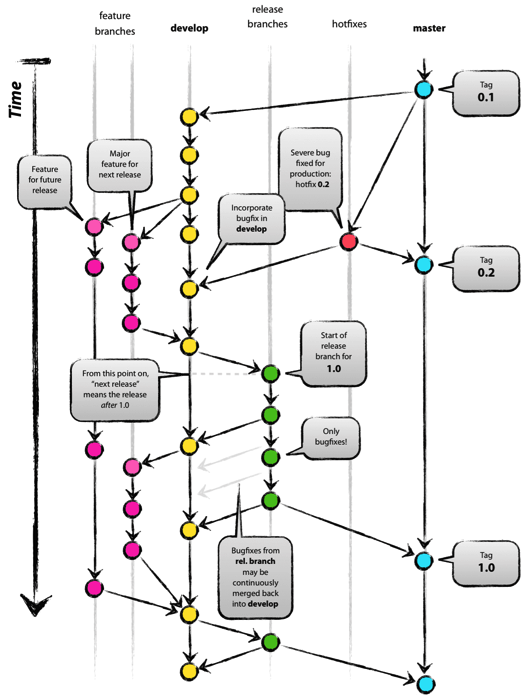
图 1 Git Flow 示意图
第二，GitHub Flow
GitHub Flow 是 GitHub 所使用的一种简单流程。该流程只使用 master 和特性分支，并借助 GitHub 的 pull request 功能。
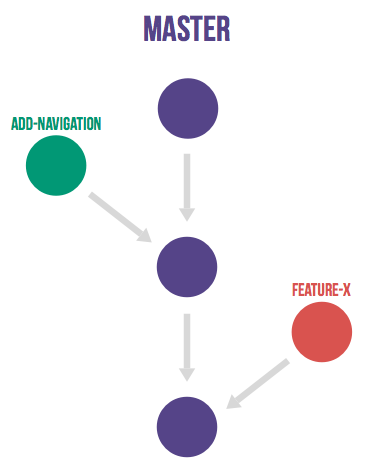
图 2 GitHub Flow 示意图
在 GitHub Flow 中，master 分支中包含稳定的代码，它已经或即将被部署到生产环境。任何开发人员都不允许把未测试或未审查的代码直接提交到 master 分支。对代码的任何修改，包括 Bug 修复、热修复、新功能开发等都在单独的分支中进行。不管是一行代码的小改动，还是需要几个星期开发的新功能，都采用同样的方式来管理。
当需要修改时，从 master 分支创建一个新的分支，所有相关的代码修改都在新分支中进行。开发人员可以自由地提交代码和提交到远程仓库。
当新分支中的代码全部完成之后，通过 GitHub 提交一个新的 pull request。团队中的其他人员会对代码进行审查，提出相关的修改意见。由持续集成服务器（如 Jenkins）对新分支进行自动化测试。当代码通过自动化测试和代码审查之后，该分支的代码被合并到 master 分支。再从 master 分支部署到生产环境。
GitHub Flow 的好处在于非常简单实用，开发人员需要注意的事项非常少，很容易形成习惯。当需要修改时，只要从 master 分支创建新分支，完成之后通过 pull request 和相关的代码审查，合并回 master 分支就可以了。
第三，GitLab Flow
上面提到的 GitHub Flow，适用于特性分支合入 master 后就能马上部署到线上的这类项目，但并不是所有团队都使用 GitHub 或使用 pull request 功能，而是使用开源平台 GitLab，特别是对于公司级别而言，代码作为资产，不会随意维护在较公开的 GitHub 上（除非采用企业版）。
GitLab Flow 针对不同的发布场景，在 GitHub Flow（特性分支加 master 分支）的基础上做了改良，额外衍生出了三个子类模型，如表 2 所示。
| 分支模型 | 说明 | 图示 |
|---|---|---|
| 带生产分支 | 1. 无法控制准确的发布时间，但又要求不停集成的。 2. 需要创建一个 production 分支来放置发布的代码。 | 图 3 |
| 带环境分支 | 1. 要求所有代码都在逐个环境中测试通过。 2. 需要为不同的环境建立不同的分支。 | 图 4 |
| 带发布分支 | 1. 用于对外界发布软件的项目，同时需要维护多个发布版本。 2. 尽可能晚地从 master 拉取发布分支。 3. Bug 的修改应先合并到 master，然后 cherry pick 到 release 分支 。 | 图 5 |
表 2 GitLab Flow 的三个分支
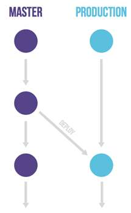
图 3 带生产分支的 GitLab Flow
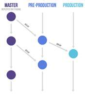
图 4 带环境分支的 GitLab Flow
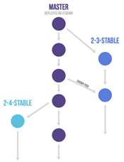
图 5 带发布分支的 GitLab Flow
GitLab Flow 的特性分支合入 master 用的是“Merge Request”，功能与 GitHub Flow 的“pull request”相同，这里不再赘述。
通过 Git Flow、GitHub Flow 和 GitLab Flow（3 个衍生类别） 这几个具体模型的介绍，我给你总结一下特性分支开发的优缺点。如表 3 所示。
| 优点 | 缺点 |
|---|---|
| 1. 不同功能可以在独立的分支上做开发，消除了功能稳定前彼此干扰的问题。 2. 容易保证主干分支的质量：只要不把没开发好的特性分支合入主干分支，那么主干分支就不会带上有问题的功能。 | 1. 如果不及时做 merge，那么把特性分支合到主干分支会比较麻烦。 2. 如果要做 CI/CD，需要对不同分支配备不同的构建环境。 |
表 3 特性分支开发的优缺点
选出最适合的分支策略
上面我跟你讲到的分支模型，都是 IT 研发领域比较流行的。虽然有些策略带上了代码平台的标识，如 GitHub Flow，但并不意味着该策略仅限于 GitHub 代码平台使用，你完全可以在自己搭建的代码平台上使用这些策略。
接下来，我就总体归纳一下什么情况下应该选择什么样的分支策略。如表 4 所示。
| 序号 | 情况 | 适合的分支策略 |
|---|---|---|
| 1 | 开发团队系统设计和开发能力强。 有一套有效的特性切换的实施机制，保证上线后无需修改代码就能够修改系统行为。 需要快速迭代，想获得 CI/CD 所有好处。 | 主干开发 |
| 2 | 不具备主干开发能力。 有预定的发布周期。 需要执行严格的发布流程。 | Git Flow |
| 3 | 不具备主干开发能力。 随时集成随时发布：分支集成后经过代码评审和自动化测试，就可以立即发布的应用。 | GitHub Flow |
| 4 | 不具备主干开发能力。 无法控制准确的发布时间，但又要求不停集成。 | GitLab Flow（带生产分支） |
| 5 | 不具备主干开发能力。 需要逐个通过各个测试环境验证。 | GitLab Flow（带环境分支） |
| 6 | 不具备主干开发能力。 需要对外发布和维护不同版本。 | GitLab Flow（带发布分支） |
表 4 不同情况适用的代码分支策略
国内互联网公司的选择
GitLab 作为最优秀的开源代码平台，被多数互联网大公司（包括阿里、携程和美团点评等）所使用，这些大厂也都采用特性分支开发策略。当然，这些大公司在长期持续交付实践中，会结合各自公司的情况做个性化的定制。
比如，携程公司在 GitHub Flow 的基础上，通过自行研发的集成加速器（Light Merge）和持续交付 Paas 平台，一起完成集成和发布。
再比如，阿里的 AoneFlow，采用的是主干分支、特性分支和发布分支三种分支类型，再加上自行研发的 Aone 协同平台，实现持续交付。
总结
今天，我主要给你介绍了各种代码分支策略的特性。
你应该已经比较清晰地理解了“主干开发”和“特性分支开发”两种策略的各自特性：
- “主干开发”集成效率高，冲突少，但对团队个人的开发能力有较高要求；
- “特性分支开发”有利于并行开发，需要一定的流程保证，能保证主干代码质量。
相信在没有绝对自信能力的情况下，面对绝大多数的场景，企业还是会选择“特性分支开发”的策略。所以，我给你介绍了几种主流的特性分支方法，并对比了各类策略的优劣，以及它们适用的场景。
接下来，你就可以根据自己所在项目的具体情况，参考今天的内容，裁剪出最适合自己团队的分支策略了。
思考题
- 开源性质的项目，为什么不适合用主干开发的分支策略？
- 如果你所在的团队只有 5 人，而且迭代周期为 1 周，你会采用什么样的分支策略？
05 手把手教你依赖管理
软件工程是多人合作的结果，我们在开发软件的时候经常会使用一些别人编写好的，比较成熟的库。
比如，早期的前端开发用到了 jQuery 库，那么通常的做法是去官网下载一个最新版本的 jQuery，然后放在自己本地的项目中。对于简单的前端项目来说，这样可以简单粗暴地达到目的。
但当项目越来越庞大，除了 jQuery 之外，你还会依赖一些其他的第三方库。比如 Bootstrap 与 Chosen，这两个流行的前端库也都依赖 jQuery，如果这些第三方库依赖的 jQuery 版本一致还好，但大多数情况并没有这么乐观：
你的项目依赖的 jQuery 版本是 1.0.0 ，Bootstrap 依赖的版本是 1.1.0，而 Chosen 依赖的版本是 1.2.0，看上去都是小版本不一致，一开始并没有发现任何问题，但是如果到后期发现不兼容，可能就为时已晚了。
所以，你需要在确定依赖之前，就把整个系统的依赖全部梳理一遍，保证每个依赖都不会有冲突问题。
你可能会质疑，这个前端工程师一定是初级的，事先都不会确认 Bootstrap 和 Chosen 依赖的版本吗，直接选择依赖 jQuery 1.0.0 版本的不就行了？
这么说有一定道理，但是手工维护这些依赖是相当麻烦且容易出错的。随便找一个比较流行的开源软件，你都会发现它依赖了大量的第三方库，而这些第三方库又依赖着其他的第三方库，形成了一条十分复杂的依赖链。靠人工去解决这个依赖链一定会让你怀疑人生，因此你需要一些工具去管理项目的依赖。
你见过几种依赖管理工具？
其实，各大平台早已有一套自己的手段来解决上述的问题，仔细看看你常用的软件，你会发现其实工作当中已经充斥着各种各样的依赖管理工具，没有它们你将寸步难行。
操作系统的依赖管理工具，比如 CentOS 的 yum，Debian 的 apt，Arch 的 Packman，macOS 的 Homebrew； 编程语言的依赖管理工具，比如 Java 的 Maven， .Net 的 nuget，Node.js 的 npm，Golang 的 go get，Python 的 pip，Ruby 的 Gem 。
这些平台的解决思路都是将依赖放到共同的仓库，然后管理工具通过依赖描述文件去中央仓库获取相应的包。
一个典型的依赖管理工具通常会有以下几个特性：
- 统一的命名规则，也可以说是坐标，在仓库中是唯一的，可以被准确定位到；
- 统一的中心仓库可以存储管理依赖和元数据；
- 统一的依赖配置描述文件；
- 本地使用的客户端可以解析上述的文件以及拉取所需的依赖。
接下来我以 Maven 为例，跟你一起探究一下 Maven 会如何管理 Java 项目的依赖。
Maven 如何管理依赖？
Maven 是 Java 生态系统里面一款非常强大的构建工具，其中一项非常重要的工作就是对项目依赖进行管理。
Maven 使用 XML 格式的文件进行依赖配置描述的方式，叫作 POM（Project Object Model ），以下就是一段简单的 pom.xml 文件片段：
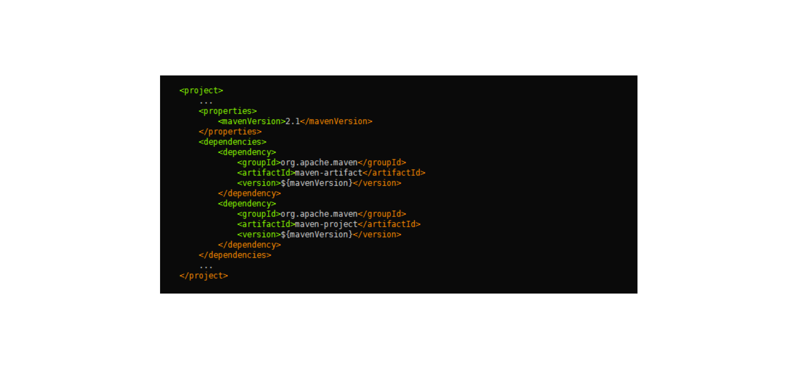
在 POM 中，根元素 project 下的 dependencies 可以包含一个或多个 dependency 元素，以声明一个或者多个项目依赖。每个依赖可以包含的元素有：
- groupId、artifactId、version： 依赖的基本坐标；
- type： 依赖的类型，默认为 jar；
- scope： 依赖的范围；
- optional： 标记依赖是否可选；
- exclusions： 用来排除传递性依赖；
要想用好 Maven 管理依赖，你必须理解每一项的含义，而新手通常傻傻分不清楚。举个例子，依赖范围这一项，Maven 在不同的时期会使用不同的 classpath ：
- 比如，junit 只有在测试的时候有用，那么将其设为 test scope 就可以；
- 再比如 ，servlet API 这个 jar 包只需要在编译的时候提供接口，但是实际在运行时会有对应的 servlet 容器提供，所以没必要打到 war 包中去，这时候只需要指定在 provided scope 就可以了。通过指定 provided scope 的方式可以让每个依赖各司其职，不用弄成“一锅粥”。
包管理工具还解决了依赖传递的问题，比如你的项目 A 依赖了 B，而 B 依赖了 C 和 D，那么在获取依赖的时候会把 B、C、D 都一起拉下来，这样可以节省大量的时间。
再让我们回到最开始的问题：依赖不一致该如何处理？通常，每个包管理工具都有一套自己的原则，Maven 的依赖仲裁原则如下。
第一原则： 最短路径优先原则。 比如，A 依赖了 B 和 C，而 B 也依赖了 C，那么 Maven 会使用 A 依赖的 C 的版本，因为它的路径是最短的。
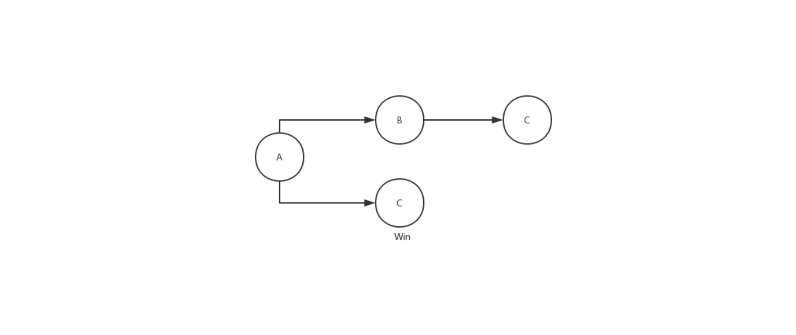
第二原则： 第一声明优先原则。 比如，A 依赖了 B 和 C，B 和 C 分别依赖了 D，那么 Maven 会使用 B 依赖的 D 的版本，因为它是最先声明的。
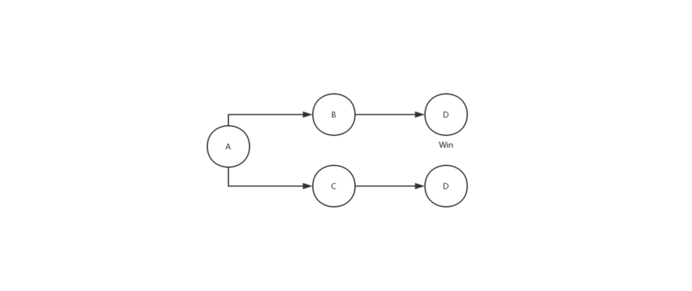
根据这两个原则，Maven 就可以确定一个项目所有依赖的列表，但它处理依赖的方式还是有些简单粗暴。有时 Maven 的决定结果并不是你想要的，所以我们在使用 Maven 的时候还是要多加小心。
Maven 最佳实践
接下来，我跟你分享下，我平时使用 Maven 时总结的一些经验。
- 生产环境尽量不使用 SNAPSHOT 或者是带有范围的依赖版本，可以减少上线后的不确定性，我们必须保证，测试环境的包和生产环境是一致的。
- 将 POM 分成多个层次的继承关系，比如携程的 POM 继承树一般是这样：
corp pom
ctrip pom/qunar pom
bu pom
product pom
project parent pom
project sub module pom
这样做的好处是每一层都可以定义这一级别的依赖。 其中 ctrip pom/qunar pom 我们叫它为公司的 super-pom，每个项目必须直接或间接的继承其所在公司的 super-pom。这样做的好处是每一层都可以定义这一级别的依赖，便于各个层次的统一管理。
- 在父模块多使用 dependencyManagement 来定义依赖，子模块在使用该依赖时，就可以不用指定依赖的版本，这样做可以使多个子模块的依赖版本高度统一，同时还能简化子模块配置。
- 对于一组依赖的控制，可以使用 BOM（Bill of Materials） 进行版本定义。一般情况下，框架部门有一个统一的 BOM 来管理公共组件的版本，当用户引用了该 BOM 后，在使用框架提供的组件时无需指定版本。即使使用了多个组件，也不会有版本冲突的问题，因为框架部门的专家们已经在 BOM 中为各个组件配置了经过测试的稳定版本。 BOM 是一个非常有用的工具，因为面对大量依赖时，作为用户你不知道具体应该使用它们的哪些版本、这些版本之间是否有相互依赖、相互依赖是否有冲突，使用 BOM 就可以让用户规避这些细节问题了。
- 对于版本相同的依赖使用 properties 定义，可以大大减少重复劳动，且易于改动。上面的 pom.xml 片段，就是使用了 properties 来定义两个一样的版本号的依赖。
- 不要在在线编译环境中使用 mvn install 命令，否则会埋下很多意想不到并且非常难以排查的坑：该命令会将同项目中编译产生的 jar 包缓存在编译系统本地，覆盖 mvn 仓库中真正应该被引用的 jar 包。
- 禁止变更了代码不改版本号就上传到中央仓库的行为。否则，会覆盖原有版本，使得一个版本出现二义性的问题。
归根结底，这些经验都是为了两件事：减少重复的配置代码，以及减少不确定的因素发生。
有时候，你会听到来自业务开发部门同事传来报障的声音：“为什么我本地可以编译通过，而你们编译系统编译通不过？”难道 Maven 在工作的时候还看脸？ 当然不是!
遇到这样的情况不要急，处理起来通常有如下“三板斧”：
- 确认开发操作系统，Java 版本，Maven 版本。通常情况下操作系统对 Java 编译的影响是最小的，但是偶尔也会遇到一些比如分隔符（冒号与分号）之类的问题。Java 和 Maven 的版本应尽量与生产编译系统保持一致，以减少不必要的麻烦。
- 如果确认了开发操作系统没问题，那么你可以把用户的项目拉到自己的本地，并且删除本地依赖的缓存，也就是删除 .m2 目录下的子目录，减少干扰，执行编译。若编译通不过，说明用户本地就有问题，让他也删掉自己本地的缓存找问题。如果可以编译通过，说明问题出在编译系统，进入第 3 步。
- 使用 mvn dependency 命令对比生产编译系统与本地依赖树的区别，检查编译系统本地是否被缓存了错误的 jar 包，从而导致了编译失败。有时候这种错误会隐藏得比较深，非常难查，需要很大的耐心。
总结
今天，我跟你聊了聊依赖的问题。你可以从中：
- 了解到依赖管理的复杂度是如何产生的；
- 学习到依赖管理的一些常规思路；
- 初步掌握通过 Maven 进行依赖管理的方式方法，及一些最佳实践。
同时我也与你一起分享了一些我的实际经验，希望能够对你在实际工作中有所帮助。
后续
理想是美好的，然而现实却很骨感，在实际过程中我们也遇到了一些问题，比如用户不遵守我们推荐的命名规则，或者不继承公司提供的 Super POM，或者框架组件升级而用户不愿意升级等等。
为了能够统一管理，我们在构建系统上增加了一些强制手段来做统一的约束，使用 Maven Enforcer 插件以及其他方式对构建过程实行大量检查，欲知详情，请听下回分解。
06 代码回滚，你真的理解吗？
什么是代码回滚？
在我正式开始今天的分享前，先给你讲两个核心概念：
- 包回滚是指，线上运行的系统，从现在的版本回滚到以前稳定的老版本。
- 代码回滚是指，Git 分支的指针（游标），从指向当前有问题的版本改为指向一个该分支历史树上没问题的版本，而这个版本可以是曾经的 commit，也可以是新建的 commit。
你是不是也遇到了问题？
在日常的代码管理中，困扰开发工程师最多，也是他们向我咨询得最多的问题就是：代码回滚的问题。这些问题，有的只是影响个人开发，而有的涉及了整个团队。我把这些问题进行了整理汇总，你可以看看是否也遇到过类似的问题？
- 今天上午我在自己的开发环境上拉了一条新分支，提交了 5 个 commit，最新提交的 3 个 commit 我不想要了，那我该怎么退回到这 3 个 commit 之前的那个 commit？ 答：参考我在下面即将分享的“个人分支回滚”的内容。
- 我本地的分支通过 reset --hard 的方式做了代码回滚，想通过 push 的方式让远端的分支也一起回滚，执行 push 命令时却报错，该怎么办？ 答：如果不加 -f 参数，执行 reset --hard 后，push 会被拒绝，因为你当前分支的最新提交落后于其对应的远程分支。push 时加上 -f 参数代表强制覆盖。
- 线上产品包已经回滚到昨天的版本了，我清清楚楚地记得昨天我把发布分支上的代码也 reset --hard 到对应的 commit 了，怎么那几个有问题的 commit 今天又带到发布分支上了？真是要命！ 答：集成分支不能用 reset --hard 做回滚，应该采用集成分支上新增 commit 的方式达到回滚的目的。
- 我刚刚在 GitLab 上接纳了一个合并请求（Merge Request），变更已经合入到 master 上了，但现在我发现这个合并出来的 commit 有较大的质量问题，我必须把 master 回滚到合并之前，我该怎么办？ 答：可以在 GitLab 上找到那个合并请求，点击 revert 按钮。
- 刚刚线上 A 产品 V6.2 的包有问题，我已经把 A 的产品包回退到 V6.1 版本了，请问发布分支上的代码也要回滚到 V6.1 对应的 commit 吗？ 答：你可以在下文“哪些情况下需要回滚代码？”和“哪些情况下包的回滚无需回滚代码？”中找到答案。
- 产品包的回滚可以在我们公司持续交付云平台上执行，平台能不能也提供代码一键回滚的功能？这样我们回滚代码能相对轻松一些。 答：针对已上线发布的版本，我认为持续交付平台提供一键回滚的方式还是有必要的。这么做可以规范集成分支上线后代码回滚的行为，也能减少人为失误。具体做法可以参考我在下面给你分享的“集成分支上线后回滚”的内容。
上面这六个问题，除了前两个问题外，剩下的四个问题都可能影响到整个团队，因此回滚代码时须站在团队的立场，采用合适的方式进行回滚。
接下来，我就一一为你解答这些问题。
哪些情况下需要回滚代码？
在代码集成前和集成后，都有可能需要回滚代码。
第一种情况：开发人员独立使用的分支上，如果最近产生的 commit 都没有价值，应该废弃掉，此时就需要把代码回滚到以前的版本。 如图 1 所示。
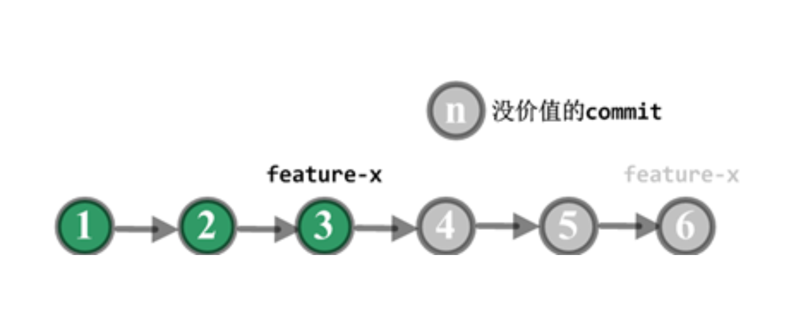
图 1 个人分支回滚
第二种情况：代码集成到团队的集成分支且尚未发布，但在后续测试中发现这部分代码有问题，且一时半会儿解决不掉，为了不把问题传递给下次的集成，此时就需要把有问题的代码从集成分支中回滚掉。 如图 2 所示。
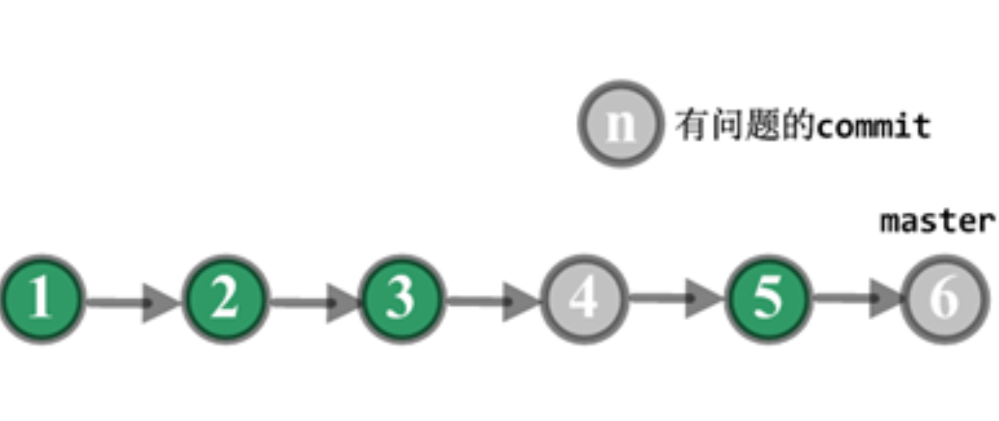
图 2 集成分支上线前回滚
第三种情况：代码已经发布到线上，线上包回滚后发现是新上线的代码引起的问题，且需要一段时间修复，此时又有其他功能需要上线，那么主干分支必须把代码回滚到产品包 V0529 对应的 commit。 如图 3 所示。
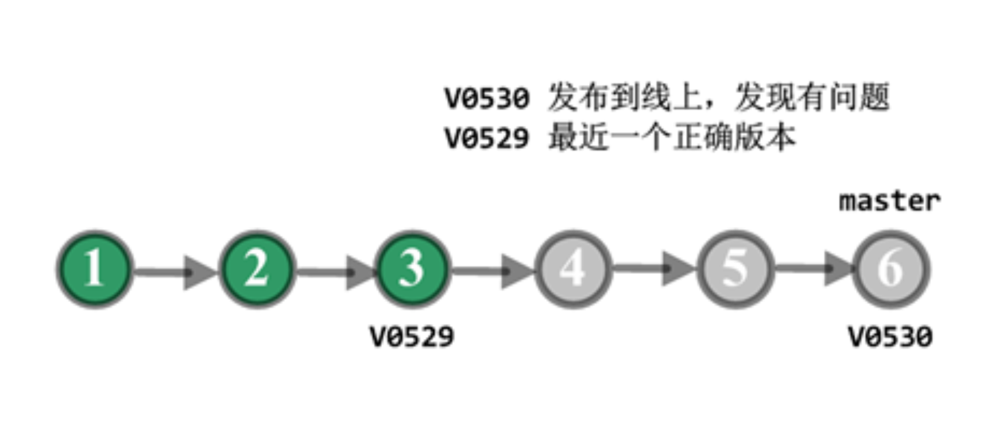
图 3 集成分支上线后回滚
哪些情况下包的回滚无需回滚代码？
- 线上回滚后，查出并不是因为源代码有问题。
- 下次线上发布，就是用来修复刚才线上运行的问题。
代码回滚必须遵循的原则
集成分支上的代码回滚坚决不用 reset --hard 的方式，原因如下：
- 集成分支上的 commit 都是项目阶段性的成果，即使最近的发布不需要某些 commit 的功能，但仍然需要保留这些 commit ，以备后续之需。
- 开发人员会基于集成分支上的 commit 拉取新分支，如果集成分支采用 reset 的方式清除了该 commit ，下次开发人员把新分支合并回集成分支时，又会把被清除的 commit 申请合入，很可能导致不需要的功能再次被引入到集成分支。
三种典型回滚场景及回滚策略
在上面的内容中，我给你提到了个人分支回滚、集成分支上线前的回滚，以及集成分支上线后的回滚，这三种需要代码回滚的场景，它们具有一定的代表性。
现在，我就先以表 1 的形式，针对不同场景为你归纳不同的处理策略。后面的章节中，我再为你具体介绍每种场景的处理步骤。

表 1 需要代码回滚的三种场景对应的处理策略
第一，个人分支回滚

同图 1 个人分支回滚
针对图 1 的情况：
- feature-x 分支回滚前 HEAD 指针指向 C6 。
- 在个人工作机上，执行下面的命令：
$ git checkout feature-x
$ git reset --hard C3 的 HASH 值
如果 feature-x 已经 push 到远端代码平台了，则远端分支也需要回滚：
$ git push -f origin feature-x
第二，集成分支上线前回滚

同图 2 集成分支上线前回滚
针对图 2 中集成分支上线前的情况说明：
- 假定走特性分支开发模式，上面的 commit 都是特性分支通过 merge request 合入 master 产生的 commit。
- 集成后，测试环境中发现 C4 和 C6 的功能有问题，不能上线，需马上回滚代码，以便 C5 的功能上线。
- 团队成员可以在 GitLab 上找到 C4 和 C6 合入 master 的合并请求，然后点击 revert 。如图 4 所示。
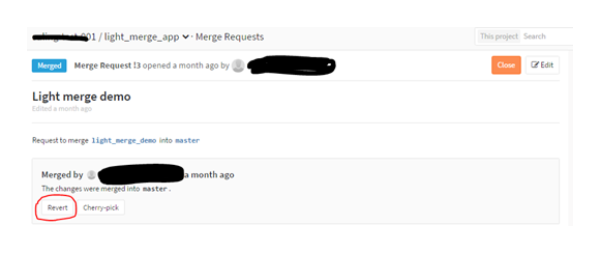
图 4 用 revert 方式实现回滚
回滚后 master 分支变成如图 5 所示，C4’是 revert C4 产生的 commit，C6’是 revert C6 产生的 commit。通过 revert 操作，C4 和 C6 变更的内容在 master 分支上就被清除掉了，而 C5 变更的内容还保留在 master 分支上。
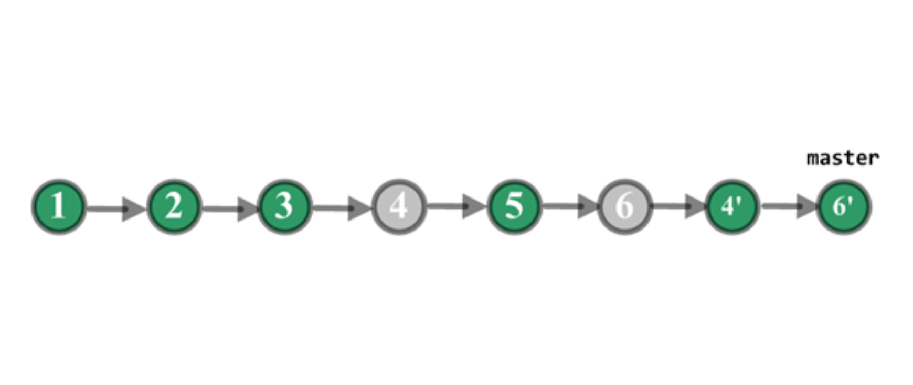
图 5 回滚后的示意图
第三，集成分支上线后回滚

同图 3 集成分支上线后回滚
我先跟你说明一下图 3 中的具体情况：
- C3 打包并上线，生成线上的版本 V0529，运行正确。之后 C6 也打包并上线，生成线上版本 V0530，运行一段时间后发现有问题。C4 和 C5 并没有单独打包上线，所以没有对应的线上版本。
- 项目组把产品包从 V0530 回滚到 V0529，经过定位，V0530 的代码有问题，但短时间不能修复，于是，项目组决定回滚代码。
- C4 和 C5 没有单独上过线，因此从线上包的角度看，不能回滚到 C4 或 C5，应该回滚到 C3。
- 考虑到线上包可以回滚到曾发布过的任意一个正确的版本。为了适应线上包的这个特点，线上包回滚触发的代码回滚我们决定不用 一个个 revert C4、C5 和 C6 的方式，而是直接创建一个新的 commit，它的内容等于 C3 的内容。
- 具体回滚步骤：
$ git fetch origin
$ git checkout master
$ git reset --hard V0529 # 把本地的 master 分支的指针回退到 V0529，此时暂存区 (index) 里就指向 V0529 里的内容了。
$ git reset --soft origin/master # --soft 使得本地的 master 分支的指针重新回到 V05javascript:;30，而暂存区 (index) 变成 V0529 的内容。
$ git commit -m "rollback to V0529" # 把暂存区里的内容提交，这样一来新生成的 commit 的内容和 V0529 相同。
$ git push origin master # 远端的 master 也被回滚。
回滚后如图 6 所示。
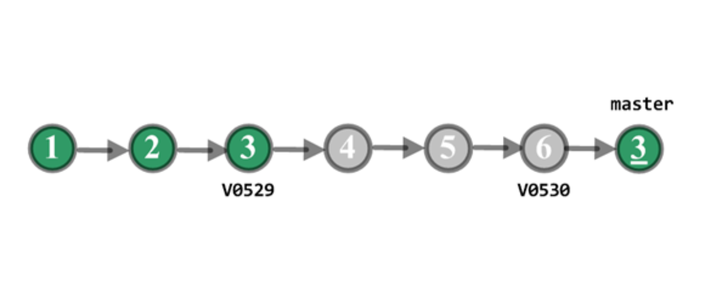
图 6 回滚后的示意图
C3’的内容等于 C3，master 分支已清除 C4、C5 和 C6 的变更。
现在 master 又回到了正确的状态，其他功能可以继续上线。
如果要修复 C4、C5 和 C6 的问题，可以在开发分支上先 revert 掉 C3’ ，这样被清除的几个 commit 的内容又恢复了。
总结
代码回滚在持续交付中与包回滚一样，也是不可缺少的一项活动。但它并不是简单地去执行 Git 的 reset 或 revert 命令就可以搞定的事情。
除了开发的个人分支上存在回滚的情况外，我们还会遇到集成分支上需要回滚的情况；对于集成分支的回滚，又可以分为上线前和上线后两种情况；因为紧急程度和上线情况的不同，我们必须采用不同的回滚策略。
我围绕着开发工程师在代码管理中，最常遇到的 6 个问题，分别为你介绍了代码回滚的概念，梳理了需要回滚及不需要回滚的情况，分析了回滚的类别及其不同的回滚策略，提炼了回滚原则，希望能对你的实际工作有所帮助，保持正确的回滚姿势。
思考题
那么，接下来就是留给你的思考题了。
- 集成分支上线前，如果发现新提交的 5 个 commit 有 3 个需要回滚，请问，除了点击合并请求中的 revert 按钮这种方法外，还可以怎么做？
- 采用特性分支开发的一个项目，每个特性分支合入到 master 时都会产生一个合并的 commit，而且该项目是禁止直接向 master 做 push 操作的。可是该项目的 master 分支却存在多个非合并产生的 commit，请问这些 commit 很可能是怎么产生的？
- 持续交付平台如果要提供一键代码回滚的功能，每次回滚都要生成一个新的 commit 吗？即使以前已经产生过同内容的 commit 了，也要重建新的 commit 么？
07 “两个披萨”团队的代码管理实际案例
在亚马逊内部有所谓的“两个披萨”团队，指的是团队的人数不能多到两个披萨饼还不够吃的地步。也就是说，团队要小到让每个成员都能做出显著贡献，并且相互依赖，有共同目标，以及统一的成功标准，这样团队的工作效率才会高。
现在有很多互联网公司喜欢采用“两个匹萨”团队的模式，你可能很好奇，这些团队通常是如何实施代码管理的？
当前国内互联网公司通常采用特性分支开发的模式，我在第四篇文章《一切的源头，代码分支策略的选择》中，为你详细介绍了这种模式，下面我就以这种模式为例，为你解开困惑。
以迭代周期为一周的项目为例，我将按照从周一到周五的时间顺序，通过整个团队在每天的工作内容，跟你分享项目任务分配，分支创建、集成与分支合并、上线，包括分支删除的关系。你可以从中了解互联网公司研发团队日常代码管理的真实情况，体会团队为了提高研发效率，在代码管理上做出的创新与改进。
背景
周一上午 11：30，“复仇者” 团队的周会结束，会议室里陆续走出了 6 名工程师：
- “钢铁侠”：5 年一线开发经验，现任“复仇者”项目经理及产品负责人；
- “美国队长”：6 年开发经验，负责“复仇者”项目的技术架构，兼开发工作；
- “绿巨人”：3 年开发经验，全栈开发；
- “雷神”：3 年开发经验，全栈开发；
- “蜘蛛侠”：1 年开发经验，负责几个成熟模块的维护；
- “黑寡妇”：资深测试工程师，负责系统集成与测试。
其他同事泡咖啡喝茶的时候，“钢铁侠”在公司的 GitLab 上已经把 issue 分配给了团队成员，预示着忙碌又充实的一周要开始了。
周一下午
“美国队长”“绿巨人”“雷神”“蜘蛛侠”这 4 名开发人员早已熟悉团队的工作流程，午休之后，他们纷纷打开 GitLab 界面，在待办事项上找到自己的 issue，查看无误后，直接根据 issue 建好了新的特性分支。
每个新分支代表了一个具体的任务，待四人建好新分支后，“钢铁侠”不由得微微一笑，心想：哈哈，任务都被大伙儿认领了，看样子，他们下午就要开工啦。这 4 名开发人员新建的 4 个分支，如图 1 所示。
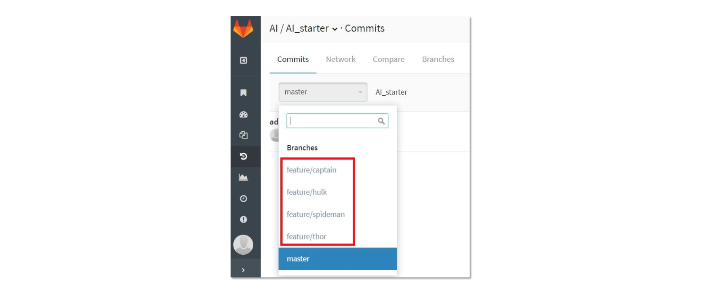
图 1 开发人员新建的 4 个分支
这时，资深测试工程师“黑寡妇”也没闲着，开始查看起本周计划完成的 issue，整理出功能点、性能要求和粗粒度的接口列表，基本明确了测试范围。随后，她在公司 GitLab 平台上为本周迭代设置好了“Smart Merge”，如图 2 所示。
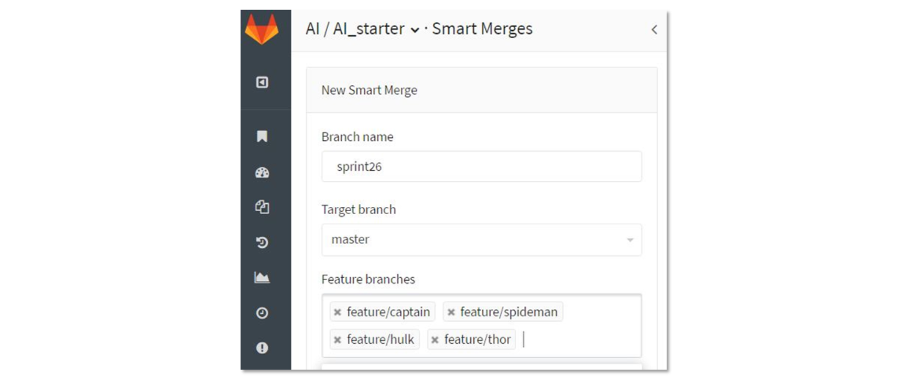
图 2 配置 Smart Merge
要是有新人加入团队，“黑寡妇”肯定会向他推荐这个“Smart Merge”（Smart Merge是我和几个好友一同开发的 GitLab 插件，其作用是高效地解决分支合并的一系列问题）。高效的工作习惯使得“黑寡妇”早已整理好了说明文档，以便随时分享给其他同事。
有了 Smart Merge，任何一个分支的变更会自动触发合并，一旦出现冲突，开发人员就会立刻收到邮件通知。
周一下班前，4 位开发人员分别把各自的本地分支 push 到了 GitLab 平台。集成后没有冲突，大家开开心心回家了。
周二
“美国队长”起了个大早，9 点半就到公司了，昨天他已经实现了核心功能，今天要完善这些功能并升级 API。他忙了个把小时，本地开发自测完成，并把本地 feature/captain 分支 push 到了 GitLab 服务器。
一分钟不到，“美国队长”的邮箱收到了 GitLab 发来的通知，告诉他刚提交的某两个文件和 feature/hulk 分支发生了冲突。
“美国队长”知道肯定是黑寡妇创建的 Smart Merge 帮助自己快速发现了冲突，他直接用 GitLab 的 compare 功能对比了 feature/captain 和 feature/hulk 这两个分支，找到了冲突所在的行。
通过分析，“美国队长”判断出 feature/hulk 的变更是合适的，这个冲突应该由他解决掉。
“美国队长”选择在本地对自己的分支执行 git rebase -i ，把引入冲突的 commit 进行了变更，自测通过后，再次把 feature/captain 分支 push 到了 GitLab 。为了确保冲突的问题已经被解决，他打开了 Smart Merge，发现状态是“已合并”（Merged） ，这才端起杯子泡咖啡去了。
上午 10:00 前后，“绿巨人”等人也陆陆续续到公司了。团队已经约好了协作节奏：每周四下班前完成一个迭代的上线。
通常周二下午开发人员要把每个 issue 的基本功能开发好，“黑寡妇”周二下午会给 Smart Merge 配置好持续交付的环境，一旦某个分支 push 后，自动完成分支合并，然后自动编译、打包，并部署到测试环境。
在测试环境上，除了跑自动化测试外，“黑寡妇”也会手工做一些集成测试和性能测试。
周二下午，“美国队长”开始 review 大家的代码，他把本周开发的 4 个分支，在 GitLab 上分别创建了 4 个 merge request，目标分支都是 master 。
“美国队长”觉得 GitLab 的 review 功能很完善，交互也很便捷。这时，其他 3 名开发人员，忙着写代码和自测。“黑寡妇”除了搭建测试环境外，还补充了自动化测试的用例。
周三
经过周一和周二的努力，本周的基本功能均已实现，“黑寡妇”开始对系统实施集成测试，并做一些压力测试。
上午测试时，“黑寡妇”发现在某些场景下系统存在较大的延迟，这个问题在上周的版本中并不存在。她判断是本周新引入的功能导致了这个问题，但一下子又很难确定是怎么引起的。
于是，“黑寡妇”决定修改 Smart Merge 的配置，把嫌疑最大的分支剔除掉后再打包测试。通过这样的方式，最后查出是 feature/thor 这个分支引入的问题，她把测试情况详尽地告诉了“雷神”。
大半个下午雷神都在查问题，到下午四点钟时，问题终于被“雷神”修复了，他把 feature/thor 分支做了 push，然后向“黑寡妇”求助，请她合入自己的分支后再帮忙做测试。
“黑寡妇”把“雷神”的分支重新加回到 Smart Merge 中，并把编译包重新部署到了测试环境。经过测试验证：延时大的问题真的不见了。
下班前，“黑寡妇”召集项目组开了个简短的质量会议，大家商量后认为本周计划内的四个开发任务集成后没有大的质量问题，周四可以一起上线。
会后，“黑寡妇”看了看本周的四个合并请求，“美国队长”对四个请求意见都是赞成合入 master，Sonar 检查也都合格，加上自己测下来质量也过关，于是，她果断地接受了四个合并申请。
在回家前，master 对应的最新 commit 已经顺利地编译、打包后被发到用户验收测试环境，“黑寡妇”对这个环境启动了自动化测试服务。
至此，测试加修复 Bug，忙碌了一整天，大家终于可以回家休息了。
周四
“黑寡妇”一早上班时，首先查看了自动化测试的结果，显示 master 分支构建出的包符合质量要求。于是，她又对没有设计自动化测试用例的部分，进行了手工测试，发现几个界面上存在文字描述的问题，随后通知开发做修复。
开发在本地分支上修复问题后 push 到 GitLab，再次发起合并请求，“黑寡妇”逐个接受了这几个 Fix 的请求。
到中午时分，用于上线的产品包终于生成了。
等到发布窗口开启时，“黑寡妇”通过公司的发布系统把合格的产品包发布到了线上。观察一段时间，线上运行都正常。
对应本次上线，“黑寡妇”及时给 master 打了 tag，然后把本周成功发布的消息通知到项目组，并向“钢铁侠”做了汇报。
“钢铁侠”看大伙儿忙碌了这么多天，豪爽地请大家喝果汁，并告诉大家他又有几个紧急的用户需求，嘱咐大伙下周继续努力。
周五
通常在这一天，项目组会一起清理过期的分支，删除本周已合并到 master 的分支。而对于下周开发的新分支，项目组约定统一从 master 上拉取。另外，利用这一天，项目组也会召开回顾和改进会议，以讨论解决目前的一些已有问题的方案，这些讨论即包含工作流程问题，也包含代码和系统等问题。
总结
我介绍了由 6 人组成的“两个披萨”团队代码管理的实践，通过周一到周五的具体活动，你可以看到采用特性分支开发的团队是如何创建分支、集成分支和删除分支的，希望能对你的日常工作也有所帮助。
思考题
假设有 A、B、C 三个功能依次被合并到 master 并准备上线，此时发现 A 功能有问题，不能上线，而 B 和 C 则必须上线，此时你会采取什么办法来解决？
08 测试环境要多少？从现实需求说起
在整个持续交付生命周期中，测试环境的易用程度会直接影响软件的交付速度，但因为以下两点，它又是最被容易忽略的一环。
- 我们总是把环境理想化，忽略了其管理的难度；
- 我们也很少设立专职的环境管理员，导致环境长期处于混乱状态。
通常，我们在项目初期并不会关注测试环境的问题，然而在回顾时却发现在环境问题上浪费的时间非常惊人：硬件资源申请困难，测试环境配置繁琐，测试应用更新困难，基础设施稳定性差，服务调用异常，多项目并行造成互相干扰等等问题。
而不管你是开发人员还是测试人员，相信你都或多或少地碰到过这些问题。
在接下来的《环境管理》系列文章中，我会和你聊聊构建一整套好的测试环境的关键点以及具体实施方案。今天，我就先跟你说说和测试环境相关的两个问题：
- 测试环境的结构一般是怎样的？
- 什么才是好的测试环境？
互联网公司测试环境的结构
当公司规模较小时，测试环境的维护相对容易。开发和测试共用一套数据库缓存等基础设施，因为应用数量不多，开发环境可以是单机的，无论是手动或半自动化的更新测试环境的应用，花费的时间都还在可接受范围内。
这时，公司环境的结构很简单，分为开发环境，测试环境，生产环境即可。
但实际上，我看到的大多数公司的研发过程及配套环境并没有这么简单，一般都会存在 5 套以上的大环境以及更多的子环境，每个环境的机器数量可能有数十台甚至更多。
那么为什么会需要这么多套环境呢？我把主要原因概括为了以下两个方面。
- 纵向上看，人员的增多提高了项目的并行度，如果这时还使用一套环境的话，就会发生以下问题：
- 开发同学在 debug 一个困难问题时，发现下游的应用突然就不可用了；
- 测试同学在跑了 10 多分钟测试脚本后，发现应用已经被开发更新掉了。 这样的体验是让人崩溃的。
- 横向上看，公司的应用架构逐渐转为微服务化，完整的应用数量很容易就达到了几百甚至几千个的量级，建立一套独立而完整的环境变得越来越复杂，往往是研发团队想要构建一套新的环境却构建不出来。
所以，目前互联网公司常见的环境模型一般分为开发环境，功能测试环境，验收测试环境，预发布环境，生产环境这五个大套环境。
第一，开发环境
微服务架构下，单机已经无法完整地运行业务应用，这就需要开发环境内包含一套完整的业务应用依赖以及相关的基础设施，以保证业务开发同学能在本地完成开发测试。
第二，功能测试环境
在开发环境下，每个下游依赖应用都只有一个可用的 stable 版本。而在实际的开发过程中，由于项目的并行开发，往往会同时存在多个可依赖的版本。而每个项目组的同学在测试时，都希望测试过程中的关键依赖应用是可以被独占的，版本是固定的，不会被其他项目组干扰。
所以，一套独立的功能测试环境就很有必要了。通常，互联网企业会通过中间件的方式分割出一块隔离区域，在功能测试环境中创建多个子环境来解决这个问题。
第三，验收测试环境
验收测试环境和功能测试环境是完全隔离的。当功能测试通过后，你可以在验收测试环境进行最终的验收。
它除了可以用作测试之外，还可以用作产品展示。所以，除了测试和开发人员，产品经理也是验收测试环境的主要使用者。
第四，预发布环境
到了预发布阶段，应用已经进入了生产网络，和真实的生产应用共享同一套数据库等基础设施。预发布是正式发布前的最后一次测试，在这个环境中往往可以发现线下环境中发现不了的 Bug。这个环境的运维标准等同于生产环境，一般不允许开发人员直接登录机器。
根据不同的业务需求和部署策略，不同公司对预发布环境的实现也有所不同：
- 一种比较常见的方式是，将金丝雀发布作为预发布，从接入真实流量的集群中挑选一台或一小组机器先进行版本更新，通过手工测试以及自动化测试和监控系统验证，降低新版本发布的风险。
- 另一种做法是，独立出一组始终不接入真实流量的机器，调用在预发布环境中形成闭环。
相对于第一种方式，第二种方式对生产环境的影响更小，但需要额外的资源和维护成本。
第五，生产环境
生产环境是用户真实使用的环境，对安全性和稳定性的要求最高。
什么是好的测试环境？
在和你分享什么是好的测试环境前，建议你先思考一下开发环境、功能测试环境、验收测试环境、预发布环境这四种测试环境形成的原因是什么，这样有利于你更好的理解好的测试环境的含义。
首先，搭建测试环境的目的是保证最终交付的软件质量，但每套测试环境的用户并不完全一样：
- 开发环境的用户是开发同学；
- 功能测试环境的主要用户是测试同学；
- 验收测试环境的用户是产品经理和测试同学；
- 预发布环境的使用者是测试同学，但收益者却是运维同学。
而每种角色对于产品研发流程中的需求也是不同的：
- 开发同学关注研发效率；
- 测试同学关注测试的可靠性；
- 产品经理更关注的是真实的用户体验和产品的完整性；
- 预发布环境的需求其实来自于运维同学，他们需要保证生产环境的稳定性，减少生产环境的变更，所以需要将预发布环境与线下环境完全隔离。
如果你是一位测试环境治理工程师，在规划测试环境以及开发和实施工具的时候，最关键的就是要考虑到不同环境的主要用户是谁，环境要做成什么样才能满足用户在研发流程中的需求。当用户不用发愁环境问题时，研发效率也就自然而然地上去了。
当然，不论一套环境用户是测试同学还是开发同学，以下几个需求都是必须被做到的。
- 可得性，即在开发一个新项目时，能快速获取构建一个环境需要的机器，基础设施。最好的情况是，能随时可得，随时归还。
- 快速部署，即在搭建新环境时，能以最快的速度构建出一整套完整的环境。测试环境的部署很频繁，在代码提交后，能在很短的时间内构建代码，在环境上更新，就能更早开始测试。
- 独立性，即一个环境在使用过程中，可以不受其他项目测试人员的干扰。
- 稳定性，即不会因为下游服务，基础设施的异常，造成测试中断、等待。
- 高仿真，主要分为两个方面：“测试数据真实”，即能在测试环境构建出真实的测试用例；“环境真实”，即基础服务的架构和行为与线上环境保持一致，避免因为环境不一致造成测试结果不一致。
但是，毕竟各个环境的用户和使用场景不同，它们的需求也是有差别的。 比如，相对于开发环境，验收测试环境对测试数据的仿真性要求会更高，而开发环境的灵活性，决定了不会过于严格的维护测试数据的真实性。
所以，如何评价一个好的测试环境，就是看它是否最终满足了核心使用者的需求。
总结
通常，互联网公司的环境会包括：开发环境、功能测试环境、验收测试环境、预发布环境和生产环境这 5 套。
测试环境的目的是要保证最终将交付的软件产品的质量，所以好用的测试环境，不能从规模、性能和作用的角度来评判，而应该是从它能否满足用户需求去保证软件质量的角度进行定义，于是得出：
当一个环境可以满足其真正核心用户的需求时, 就是一个好用的测试环境。
除此之外，你还需要理解，环境是昂贵的，不仅涉及单一的机器资源成本，环境副本数的增加也意味着更难管理，更复杂的流程，所以仅仅考虑单套使用者的体验是不够的。
那么，在我的下一篇文章中，将会分享多环境带来的成本问题，以及如何在成本、效率、可管理之间权衡取舍。
思考题
- 请你思考一下测试环境中最让你痛苦的一点是什么？
- 如果让你来优化测试环境, 你会如何去改善这最让你痛苦的一点？
09 测试环境要多少？从成本与效率说起
在上一篇文章中，我分享了互联网公司测试环境的常见结构，以及对用户来说什么样的测试环境才是好用的。然而对测试环境来说，只是高效好用还不够，还要考虑到成本问题。
效率和成本永远是一对矛盾体。今天，我就从成本和效率出发，和你聊聊构建测试环境时，还需要考虑的其他维度。
测试环境的成本
谈到环境成本，你很自然地就会想到云计算，《持续交付：发布可靠软件的系统方法》一书出版时，云计算还是一个时髦的概念，而 8 年后的今天，云技术已经非常成熟了。
今天，部分传统企业和互联网企业都在选择混合云架构，而创业公司选择公有云已经有了点模式化的意味。公有云非常好地满足了 DevOps 的“基础设施即代码”的理念，哪怕你完全不使用公有云，那在环境中整合开源的私有云技术依然能为你带来不少便利。
然而，云计算并非“银弹”，我们上云后，在成本上，还是有很多值得去思考和做的事情。
尤其是当环境数量增加时，你很容易就可以想到成本会增加，但是你可能并不明白要增加哪些方面的成本，以及会增加多少的问题。那么，接下来，我就跟你聊聊当环境数量增加时，你需要考虑的成本有哪些呢？
首先是机器资源成本
保证环境的独立性，是你构建更多套环境的一个主要原因。但是，一套独立的、拥有完整链路的环境成本是非常高的。
那么，以阿里云的价格为例，我来跟你一起算算这笔账。假设一个只有 100 个应用的微服务架构环境，选取单应用单机 2 核 4G 内存的低配置实例方式进行部署，单实例的年价格在 2000 元左右，100 个实例的话，一年的花费就是 20 万元左右。
而这只是最保守的计算，随着服务规模的增加，以及更多环境的需要，整体花费上涨两个数量级也是很正常的。
这样的问题在开发环境和集成环境的表现是最明显的。为了保证这两套环境的独立性，你必然需要有很高的环境副本数。但无论如何，你都不可能让每一个开发和测试人员都拥有一套完整环境的硬件资源。
可见，每一套环境的机器资源成本都很大，而且随着需求的增加成比例增长。
其次是管理成本
管理成本，包括维护环境的可用性，配置的管理成本，和测试数据的维护成本三个维度。
- 维护多套环境的第一要点是，维护环境的可用性。 与云时代之前相比，容器技术已经解决了很多问题。比如，服务器操作系统级别的依赖的标准化更容易了；当出现硬件故障时，迁移和恢复服务也更加方便了。 但是，容器技术并没有解决故障定位的问题。微服务架构下集群的节点数量多, 调用链复杂，你不再能确定到底是环境问题，还是程序本身的 Bug，也就导致定位故障更加困难了。 所以，更多套环境就意味着更大的集群规模，出现故障的几率会随之增加，而解决故障也会占用你更长的工作时间。
- 维护多套环境的另一大成本是，配置的管理成本。 配置是环境管理中最核心的内容，创建一套环境时，为了保证它真正的独立可用，不仅要保证应用可以成功运行，还要保证应用在基础设施的配置是正确的。比如集成测试环境下部署了一个应用的多个平行项目，就需要有办法保证测试人员能访问到正确的应用。 如果是 Web 应用，你就要考虑把应用绑定到不同的域名，这样就会增加域名管理的成本；如果是一个 service 应用，你就要考虑到这些 service 不会被其他项目的、无关环境中的应用调用到，同时也不会调用到其他错误的服务。 每多一套环境，就会多一套这样的配置，而且这些配置都需要在各类基础设施中生效。
- 维护多套环境的第三大成本是，测试数据的维护成本。 测试数据也是环境中极为重要的一个组成部分。当并行环境的数量变多后，数据的维护同样是让人头疼的问题。 为了保证环境的高仿真，哪些环境共用一套数据库，以及测试数据的更新在多套环境中怎么执行等等，都需要非常高的管理成本。
最后是流程成本
流程成本主要包括沟通成本和测试成本两个方面。
- 沟通成本 每增加一套环境，你都需要考虑团队成员如何在新环境上沟通协作。谁在占用，何时退出这些信息，你都需要第一时间告知团队。当环境的数量变得非常多以后，做好这些事的难度就很大了。
- 测试成本 在开发环境，集成测试环境，验收测试环境，预发布环境，生产环境这样的结构下，核心功能的测试流程就至少会执行五次。每引入一套新的环境，测试流程都会变得更加复杂。
如何调解效率和成本的矛盾？
现在你应该已经意识到，因为增加一套环境带来的成本竟然有那么多。但是为了提高持续交付的效率，隔离的多套环境又是必不可少的。
那么，你究竟应该怎样去规划和设计环境呢？
第一，公共与泳道的
第一个关键点是抽象公共环境，而其中的公共服务基本都属于底层服务，相对比较稳定，这是解耦环境的重中之重。 比如我们经常会将中间件，框架类服务，底层业务公共（账户，登陆，基本信息）服务部署在这套公共环境下。
在公共环境的基础上，可以通过泳道的方式隔离相关测试应用，利用 LB 和 SOA 中间件对路由功能的支持，在一个大的公共集成测试环境中隔离出一个个独立的功能测试环境，那么增加的机器成本就仅与被并行的项目多少有关系了。
为了帮助你理解，我跟你分享一个具体的案例。
比如，你有一个新的下单流程需要测试。你可以将“下单 web 2.0”和“下单 service 2.0”抽离出来，如图中的“功能环境 1”所示。并保证被剥离出的“下单 service 2.0”只能被当前环境内的 web 服务器调用。而“下单 service 2.0”所依赖调用的“支付 service 1.0”则放在公共环境中。
于此同时，如图中所示的“功能环境 2”，可以同时支持“下单 service 3.0”这个并行版本与一个新版本的“支付 service 2.0”进行联调，此环境是不会调用公共环境中的“支付 service 1.0”的。
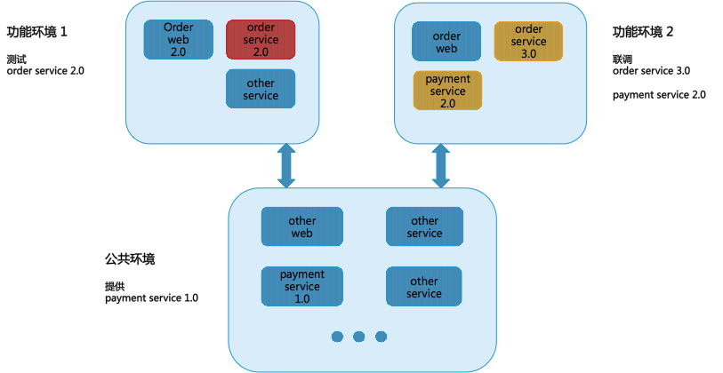
通过这种方式，你就可以解决并行开发和并行测试的问题了。
第二，避免产生多套公共环境
从原则上讲，集成环境中只要有一套公共环境就足够了。但有时候，你会发现项目的范围特别广，依赖应用或者影响应用特别多，特别是一些底层服务的改动或者重构等。在这种情况下，如果把依赖它的所有服务都部署起来，就很有可能变成第二、第三套公共环境了。
这种情况下，你可以通过 mock service 来模拟大多数服务，这样就可以达到测试环境的最小集合了。关于 mock service 如何做，我会在后续的讲解中，为你详细解释。
第三，减轻配置的复杂度
而对于减轻环境配置的复杂度来说，你可以从以下两个方面着手：
- 制定一套统一配置的解决方案；
- 要让环境自己说话，有效减少配置项。
比如，对于数据库，对于不同的测试需求，我们可能会在公共的数据库和独立的数据库之间进行频繁切换；又比如，我们可以在启动应用时自动配置正确的数据库。那么无论有多少套环境，配置也不是一件难事。
关于减轻配置的复杂度，我也会在专栏后续的讲解中，给你详细分析如何实现。
总结
我们究竟需要多少套环境，这个问题的答案应该是这样的：在大环境（开发、集成、验收）的数量上，你要考虑环境的核心用户是谁，环境的核心价值是什么。在环境的核心价值没有冲突时，尽量减少大环境的数量。
有些公司就通过功能分支直接上线的分支策略，对每个分支， 都创建一整套的功能测试环境，并在分支上线后快速释放。以这样的方式，精简了验收测试环境，即大环境的产生。但其代价是发布过程分支之间必须是串行的，即一个分支的上线会阻塞其他分支的上线。
而在每个大环境的子环境上（也就是按照测试需求被剥离出来的功能环境），你必须保证它的副本数可以满足用户测试的隔离需求。比如，在集成测试环境，只产生一套公共环境，并通过工具，支持隔离的功能测试环境的快速建立和销毁，让环境可以按需分配。
思考题
当你需要一套性能测试环境时，是独立出一套大环境还是作为一个子环境依附于某个大环境比较好？
10 让环境自己说话，论环境自描述的重要性
在前两篇文章中，我从现实需求、成本与效率的角度，分析了对环境管理者来说最重要的一个问题，即到底需要多少套环境来支撑持续交付。如果你已经从中能掌握了一些环境管理的窍门，那么你基本就可以搞定对环境管理的宏观把控了。
但是，除了宏观的把控和管理外，即使只有一套环境，你还是有可能陷入无穷无尽的细节工作中。因为在日常的环境管理过程中，环境配置才是工作的重头和难点。那么今天，我就来跟你详细说说有关环境配置的问题。
从我的实践经验看，要想把环境配置这件事做好，就是要做到让环境自己能说话。
要做到这点，首先需要定义配置的范围。
从面向的目标来看，环境配置大体上可以分为两大部分：
- 以环境中每台服务器为对象的运行时配置；
- 以一个环境为整体目标的独立环境配置。
服务器运行时配置
以一个 Java Web 应用为例，需要哪些运行时配置呢？
- 安装 war 包运行依赖的基础环境，比如 JDK，Tomcat 等。
- 修改 Tomcat 的配置文件，关注点主要包括：应用的日志目录，日志的输出格式，war 包的存放位置。Tomcat 的 server.xml 配置包括：连接数、 端口、线程池等参数。
- 配置 Java 参数，包括 JVM 堆内存的 xmx、xmn 等参数，GC 方式、参数，JMX 监控开启等。
- 考虑操作系统参数，比较常见的一个配置是 Linux 的文件句柄数，如果应用对网络环境有一些特殊要求的话，还需要调整系统的 TCP 参数等配置。
经过上面这 4 步，一个简单的运行时环境的配置就算是完成了， 可以开始运行一个程序了。是不是感觉有点复杂呢？
而这，对正常的运行时配置管理来说，只不过是冰山一角而已。
我们不光要考虑单个实例初始化配置，还要考虑每次 JDK、Tomcat 等基础软件的版本升级引起的运行时配置的变更，而且这些变更都需要被清晰地记录下来，从而保证扩容出新的服务器时能取到正确的、最新的配置。
另外，对于一个集群的服务器组来说，还需要强制保证它们的运行时配置是一致的。
独立环境配置
独立环境配置的主要目的是，保证一个环境能够完整运作的同时，又保证足够的隔离性，使其成为一个内聚的整体。
所以，要让一个环境能够符合需求的正常运作，你需要考虑的内容包括：
- 这个环境所依赖的数据库该如何配置，缓存服务器又该如何配置。
- 如果是分布式系统，或者 SOA 架构的话，就需要考虑服务中心、配置中心等一系列中间件的配置问题。
其中，最为重要的是配置中心的配置。只有先访问到正确的配置中心，才能获取到其他相关的环境配置或者应用配置信息。也就是说，如果配置中心的配置错了，那么环境就会陷入混乱状态。
- 要考虑访问入口问题。 这套环境的入口在哪里？是一个站点还是一个服务入口？ 如果是一个站点的话，那这个站点的访问域名就需要被特殊配置。如果这是一个内部环境的话，那么这个内部域名的 DNS 解析也需要被配置。如果这套环境中有多个 Web 应用，那么你就要考虑 7 层路由的配置问题了。
- 还要配置环境对应的基础服务，比如监控，短信，搜索等。
读到这里，如此多的与环境有关的配置，有没有让你觉得太复杂了。
再想象一下，如果你的环境要承载多种语言栈，各类应用依赖的基础软件也不同，环境和环境之间有各种关联设置，数据库的连接分配，环境中负载均衡的设置，等等。是不是让你感觉有些焦虑？
如果每天都要和这样的工作做斗争，那简直就是一场噩梦。更别提在这样的环境下，完成持续交付了，那简直就是难如登天。
虽然环境配置有这么多糟心的待处理事项，但是环境本身也是一个非常强大的工具，本身包含非常多的信息，如果这些糟心的事情环境能和你一起来解决，那就简单了，也就是我所说的让环境自己来说话，那么接下来就看看怎么做到吧。
环境一定要标准化
解决复杂问题的办法，无非是先将其分解，再将其简单化，对环境配置这个难题来说也是同样的道理。想要解决它，首先得要想办法分解、简化它。
最好的简化方法，莫过于标准化了。所谓标准化，就是为了在一定范围内获得最佳秩序，对实际的或潜在的问题制定共同、可重复使用的规则。
标准化也就是让环境学会了一门统一的语言，是自己说话的前提。
按照这个思路，我们首先可以实现对语言栈的使用、运行时配置模板、独立环境配置的方法等的标准化：
- 规定公司的主流语言栈；
- 统一服务器安装镜像；
- 提供默认的运行时配置模板；
- 统一基础软件的版本，以及更新方式；
- 在架构层面统一解决环境路由问题；
- 自动化环境产生过程。
看到这里，你可能感觉需要标准化的内容也是多种多样的，而且每个公司的具体情况也不同，那么标准化实施起来也必定困难重重。
从我的实践经验来看，建议你在实施持续交付的同时，去推动形成以下几个方面的规范：
- 代码及依赖规范；
- 命名规范；
- 开发规范；
- 配置规范；
- 部署规范；
- 安全规范；
- 测试规范。
其实，不管是持续交付还是架构改造，标准先行都是技术实施的前提条件。
约定大于配置
讲到这里，你可能也会疑惑了，和环境有关的内容实在是太多了，即使有了标准化，怎么可能都通过配置实现呢？
举个例子，代码的部署路径，标准化后所有服务器的路径都应该遵循这个标准，但是不可能在每台服务器上都去定义一个配置文件或环境变量来标示它，也没有这个必要。
实际上，你也从来都没有疑惑过部署路径的问题，因为从你来到公司起，它就已经是约定俗成了。而且，每家公司都是这样的，难道不是吗？
像代码的部署路径这种情况，我们就把它叫作“约定大于配置”，在实际工作中，还有很多类似的场景，你完全可以利用这套方法，简化环境配置。
比如，每个环境的域名定义，可以遵循以环境名作为区分的泛域名实现；又比如，可以用 FAT，UAT 这样的关键词来表示环境的作用；又比如，可以约定单机单应用；再比如，可以约定所有服务的端口都是 8080。
“约定大于配置”的好处是，除了简化配置工作外，还可以提高沟通效率。 团队成员一旦对某项内容形成认知，他们的沟通将不再容易产生歧义。
“约定大于配置”相当于赋予了环境天生的本能，进一步加强了环境的自我描述能力。
让环境自己能开口说话
有了环境标准化，以及约定大于配置的基础，你就可以顺利地让环境自己开口说话了。
也就是说，通过环境的自描述文件，让环境能讲清楚自己的作用、依赖，以及状态，而不是由外部配置来解释这些内容。
以一台服务器为例，一旦生成，除了不能控制自己的生死外，其他运行过程中的配置，都应该根据它自身的描述来决定。
那么，如何让服务器自己说话呢？
首先，需要定义 Server Spec。
这是重中之重，在服务器生成时，写入它自己的描述文件。我们通常把这个文件命名为“Server Spec”。在这个文件里，记录了这台服务器的所有身份信息，包括：IDC，型号，归属环境，作用，所属应用，服务类型，访问路径等。
其次，解决配置中心寻址。
中间件根据 Server Spec 的描述，寻找到它所在环境对应的配置中心，从而进一步获取其他配置，如数据库连接字符串，短信服务地址等等。
最后，完成服务自发现。
其实这就是一个服务自发现的过程。根据服务类型，访问路径等，还可以自动生成对应的路由配置，负载均衡配置等。
总结来说，我们是在尝试把环境配置的方向调个个儿：由原来外部通过配置告知环境应该干什么，转变成环境根据自身的能力和属性，决定自己应该去干什么。
这种尝试，标志着环境配置能力的质的飞跃。一台服务器可以实现自描述，你同样就可以把这个方法推广到所有服务器中。同理，一个环境可以实现自描述，你就可以把自描述的方式扩展到所有环境中。
从此，环境配置将变得不再艰难。
总结
我主要围绕环境配置的问题，讲了它的内容和一些特性，以及简化和优化的一些方案。
一定要意识到，环境配置是非常复杂的，直接影响你的环境治理能力，而环境治理能力又直接影响着持续交付的能力。但是我们还是可以通过：标准化、约定、自描述等方式去简化和优化环境配置工作。
我们的目标是，让环境自己能说话。
思考题
在你的公司，这些环境配置相关的工作由谁来完成？又由谁来为他们制造工具和提高工作效率？
11 “配置”是把双刃剑，带你了解各种配置方法
很多人分不清配置和配置管理，但其实它们是完全不同的概念。
配置管理： 是通过技术或行政手段对软件产品及其开发过程和生命周期进行控制、规范的一系列措施。 它的目标是记录软件产品的演化过程，确保软件开发者在软件生命周期的各个阶段都能得到精确的产品配置信息。
配置： 是指独立于程序之外，但又对程序产生作用的可配变量。也就是说，同一份代码在不同的配置下，会产生不同的运行结果。
从上面的定义中，你可以看到配置和配置管理有着本质上的不同：配置管理服务于软件研发过程，而配置则服务于程序本身。
作为一名程序员，开发时经常要面对不同的运行环境：开发环境、测试环境、生产环境、内网环境、外网环境等等。不同的环境，相关的配置一般不一样，比如数据源配置、日志文件配置，以及一些软件运行过程中的基本配置等。
另外，你也会遇到一些业务上的，以及逻辑上的配置。比如，针对不同地域采取不同的计费逻辑，计费逻辑又要根据这些地域的需要随时调整。
如果我们把这些信息都硬编码在代码里，结果就是：每次发布因为环境不同，或者业务逻辑的调整，都要修改代码。而代码一旦被修改，就需要完整的测试，那么变更的代价将是巨大的。
因此，我们往往会通过“配置”来解决这些问题。
但是，“配置”本身也很讲究。在什么阶段进行配置，采用什么手段进行配置，都将直接影响持续交付的效果。
那么，接下来我就跟你详细聊聊各种配置方法。
构建时配置
以 Maven 为例，实现多环境的构建可移植性需要使用 profile。profile 是一组可选的配置，可以用来设置或者覆盖配置默认值。通过不同的环境激活不同的 profile，可以实现构建的可移植性。 我们可以看一个简单使用示例：
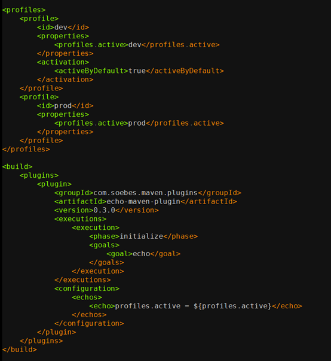
这段代码定义了 dev 和 prod 两个 profile（没有定义任何其他配置，实际使用中可按需定义任何配置），并且使用了 echo 插件验证 profile 是否生效，通过运行。
maven initialize –Pdev
或
maven initialize –Pprod
然后，可以看到输出：
[INFO] profiles.active = dev
或
[INFO] profiles.active = prod
其中， dev 是默认激活的，也就是说如果不填写任何 –P 参数，或者 –P 参数不为 dev 或者 prod，都会使用 dev 作为默认的 profile。
这样在代码构建时，你就可以根据具体需要选择对应的 profile 了。
这个方案看起来很简单， 但也有两个缺点：
- 它依赖于某个特定的构建工具，而且使用方法不统一。 什么意思呢？如果你不使用 Maven 作为构建工具，这个配置功能就失效了；而且对于跨平台、跨语言栈的支持也不友好。
- 每次都要重新编译，浪费计算资源。 即使你只是替换一些配置文件，并没有改动任何代码，但为了让配置生效，还是需要完成代码的整个构建过程，这就会在编译上花费大量的计算资源。
因此，为了解决这两个问题，通常会把“打包”这个过程拆解出来，并将它插入构建之后，接下来我就介绍一下“打包时配置”。
打包时配置
“打包”，是我在多年持续交付实践中总结出的一个非常重要的概念。我把打包过程与构建过程脱离，也就是说构建成功后，并不立即打包。而是把打包安排在发布之前，打包完成之后立即发布，打包就与发布过程形成了一个整体。
为什么要独立分离出打包这个步骤呢？你可能会问，Maven 在构建过程中不是已经完成了 package 步骤吗？
正因为构建时配置，需要针对多个 profile 编译多次，而持续交付有一个核心概念，即：一次构建多次部署。打包就是为了解决这个问题而被发明的。
打包时配置的基本思想是：构建时完全不清楚程序所要部署的环境，因此只完成最基本的默认配置；而发布时清晰地知晓环境信息，因此可根据环境信息，进行相关配置的替换。
在携程，我们开发了一个叫作 ConfigGen 的工具，用以替换配置文件。 这样，你就不需要每次更改配置时，都重新编译整个代码，大幅缩短了整个发布流程的时间， 而且 ConfigGen 完全基于 XML，适用于任何语言。
ConfigGen 的使用也很简单，只要一个 ConfigProfile.xml 文件即可，dev 和 prd 指两个入参，根据这两个入参分别定义了 currentENV 的具体值，如下图所示。
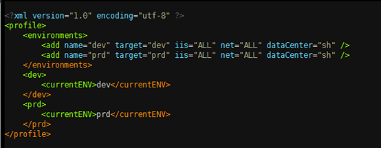
其中，currentENV 节点便是该环境下的变量，然后在项目下面创建一些 TPL 文件，该文件就是最终生成的配置文件的模板，其中的占位符将根据之前 xml 中配置的值进行替换。比如，Web.config.tpl，如下图所示。
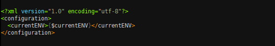
运行 ConfigGen 后，会在当前项目下生成一个 __ConfigTemp 目录，该目录下包含 dev 和 prd 两个目录，如下图所示。
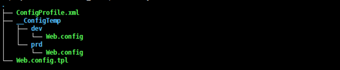
所得到的 dev/Web.config 文件就是 Web.config.tpl 生成的最终配置文件。

从图中可以看出，Web.config 已经正确替换了 currentENV 变量。 __ConfigTemp 里面的配置文件目录结构与项目中 TPL 文件的目录结构是一致的。
利用类似于 ConfigGen 这样的工具，可以在打包阶段很好地解决不同环境的配置问题。但还是会有解决不了的痛点：
打包时配置，需要借助发布的力量使配置生效。而实际场景中，只是修改了配置就要发布代码往往是不被接受的。特别是，如果你还不具备很成熟的持续部署能力，那将会是很头痛的事情。
因此，为了更好地解决配置问题，绝大多数的互联网企业会推荐使用“配置中心”。如果你所在的公司还没有成熟的配置中心，那么我推荐尽快使用开源系统来搭建配置中心。下面，我就分享一下，配置中心是如何工作的。
运行时配置
随着程序功能的日益复杂，程序的配置日益增多，各种功能的开关，参数的配置，服务器的地址，等等不断增加到系统中。而且应用对程序配置的期望值也越来越高，需要配置系统能够：
- 修改后实时生效；
- 支持灰度发布；
- 能分环境、分集群管理配置；
- 有完善的权限、审核机制。
在这样的大环境下，传统的配置文件、数据库等方式已经越来越无法满足开发人员对配置的管理需求；另外，对于数据库连接串，各个服务之间的 API Key 等机密配置，如果放在代码里也会引起安全的问题。
针对以上的种种需求和问题，我们采用系统化、服务化的思想，引入了配置中心，尝试彻底解决配置问题。
以携程为例，我们自研了 Apollo 配置中心，（目前该项目已经在 GitHub 开源）用以满足上述需求。
如下图所示，即是 Apollo 的基础模型：
- 用户在配置中心对配置进行修改并发布；
- 配置中心通知 Apollo 客户端有配置更新；
- Apollo 客户端从配置中心拉取最新的配置，更新到本地配置并通知应用重新载入配置。
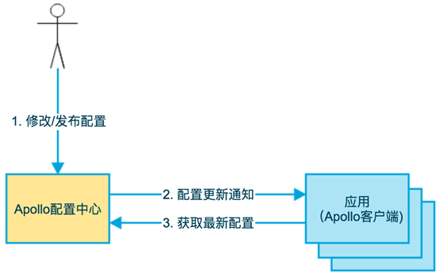
Apollo 系统有几个特别突出的能力，能够很好地解决配置的问题：
- 统一管理不同环境、不同集群的配置，通过一个管理平台可以达到管理多个环境或集群配置的效果，省时省力；
- 配置修改实时生效（热发布），不再需要重启服务，与应用运行生命周期完全解耦；
- 版本发布管理，方便配置变更后的比对和追溯，配置变更有迹可循；
- 支持配置的灰度生效，减少配置错误所带来的故障影响；
- 客户端配置信息监控，这样有利于管理员进行集中式管理；
- 提供 Java 和 .Net 原生客户端。
使用配置中心的运行时配置，应该说是现在绝大多数企业选择的解决方案。而且，面对微服务的技术趋势，它也有一定的技术优势。比如，Apollo 就是 Spring Cloud 推荐使用的开源配置中心解决方案。
Apollo 有详尽的文档，其功能基本可以覆盖绝大多数业务对配置的需求，因此，我建议你也可以基于这套开源系统来搭建一套自己的配置中心，解决配置难题。
回滚是配置永远的痛
虽然配置中心已经很强大了，但是你也要清晰地认识到，配置中心不是万金油，比如对于版本回滚的情况：
当你使用构建配置和打包配置时，配置是随着代码的一起发布的。这样的话，如果代码回滚了，配置自然而然的也会跟着一起回滚，旧版本的代码和旧版本的配置在绝大多数情况下是兼容的。但如果你用了配置中心，配置就不会随着代码回滚，就可能引发意想不到的问题。
此时，先回滚配置还是先回滚代码就成了一个死循环的问题。最好的办法是保证配置与代码的兼容性，这有点类似于数据库的 schema 变更。 比如，只增加配置不删减配置、不改变配置的数据类型而是新增一个配置等方法。同时，也要做好代码版本与配置版本的对应管理。
那你可能会问，是不是只要做到代码和配置一起回滚就行了呢？其实不是，配置是一个很复杂的问题，像之前所说，绝大多数情况下，回滚配置能够兼容，但也有不行的时候。
比如，修改了数据库连接串的配置，代码回滚后还是要用最新的配置，如果配置也一起回滚了，反而会出现错误。
所以，对于配置回滚这个复杂问题，没有一劳永逸的办法， 只能根据实际情况选择最适合自己的方案。
但是，我有一个推荐做法就是，每次回滚时，将可能发生变化的配置进行 diff 操作，由负责回滚的具体人根据结果去做最后的判断。
总结
在这篇文章中，我和你讨论了三种配置方案：
- 构建时配置：会增加构建成本；
- 打包时配置：依赖发布生效；
- 运行时配置：配置中心，便于管理和维护。
我的建议是：业务相关的配置尽量放在运行时的配置中心服务里。
同时，一定要注意配置的回滚问题。因为，无论是回滚还是不回滚，它没有标准答案，这个复杂问题必须按当时情况作出相对应的处理。
思考题
在日常开发或者维护的系统中，你还遇到过哪些配置需要管理？你又是如何管理这些配置的呢？
12 极限挑战，如何做到分钟级搭建环境？
在上两篇文章中，我介绍了环境管理中最关键的几个概念，环境的标准化，让环境自己说话以及环境配置的几种方法。
今天，我分享的主题就是，如何从零出发, 实现一套完整的环境创建。并且尝试挑战一下，如何做到分钟级交付。毕竟，天下武功，无坚不摧，唯快不破。
环境构建流水线
当开发人员向你申请一套新环境时，作为测试环境的维护者，你首先需要明确打造环境构建流水线需要关注的三大内容：
-
虚拟机环境准备，根据环境的应用数、每个应用需要的硬件配置，准备好环境的硬件资源。
-
应用部署流水线，在标准化的虚拟机上进行应用部署，当出现问题时如何容错。
-
环境变更，在 SOA 或微服务的架构体系下，常常会因为测试的需求，将几套环境合并或拆分，创建环境时，你需要考虑如何高效地完成这些操作。
-
ol>
-
接下来，我会针对这三大内容进行展开，带你快速搭建一套环境。
-
虚拟机环境准备
-
在部署应用之前，我们首先需要创建应用部署的虚拟机环境。目前在携程，我们使用 OpenStack 做物理机和虚拟机的初始化的工作。
-
- 当物理机接到机架上以后，打开交换机端口，等待机器被发现后，调用 Nova 进行物理机基本的硬件配置。
- 物理机环境准备完毕后，从 OpenStack 获取虚机所需的镜像、网络等信息，调用 OpenStack API 进行虚拟机部署。虚拟机配置的一个关键点是，如何对网络进行配置。 携程的测试环境使用的是大二层的网络架构，配置简单。但如果你对测试环境的网络规划是，需要做每个测试环境的独立的网段切分的话，配置会更复杂。
- 虚拟机初始化后，需要在虚拟机上进行一些基础软件比如 JDK，Tomcat 的安装和配置。业界一般采用的方式是，通过自动化的配置管理工具来进行操作。 目前，市场上主流的开源配置管理工具有 Puppet、Chef、Ansible、SaltStack 等。这几款工具都能帮助你很好地处理配置问题，当然它们也有自己独特的设计思想，实现语言也不同，你可以根据自己的技术背景和要管理的环境情况挑选适合自己的工具。
-
讲到这里，你肯定会有疑问。虚拟机的初始化流程已经这么复杂了，这个过程已经远远不是分钟级了，那我在文章开始部分说的分钟级是如何实现的呢？
-
我的建议是，采用资源池的方案。你可以根据用户平时使用虚拟机的情况，统计每天虚拟机申请和销毁的具体数量，预先初始化一定量的虚拟机。 这样用户从上层的 PaaS 平台创建环境时，就不用等待初始化了，可以直接从资源池中获取虚拟机，这部分的时间就被节省下来了。
-
但是，采用资源池的方式也有一定的复杂性，比如机型多、资源使用率难以预先估计等问题，当然这些问题对云计算来说，可以被轻松搞定。
-
应用部署流水线
-
由于不同公司的中间件和运维标准不同，部署流水线的差异也会很大，所以这里我只会从单应用部署标准化、应用部署的并行度，以及流水线的容错机制，这三个关键的角度，分享如何提速环境的搭建。
-
-
单应用部署标准化，这是整个环境部署的基础。对一套测试环境而言，每个应用就像是环境上的一个零件，如果单个应用无法自动发布或者发布失败率很高，那么整个环境就更难以构建起来。而如何实现一个好的发布系统，提升单应用部署速度，我会在后面的文章中详细介绍。
-
应用部署的并行度，为了提高环境的部署速度，需要尽可能得最大化应用部署的并行度。理想的情况下，环境中的所有应用都可以一次性地并行部署。 然而，做到一次性并行部署并不容易，需要保证：应用都是无状态的，并且可以不依赖别的应用进行启动，或者仅仅依赖于基础环境中的应用就可以启动，且可以随时通过中间件进行调用链的切换。 在携程，我们力求做到所有应用都可以一次性并行部署，但这条运维标准并不通用。 当我们需要更复杂的应用部署调度规则时，一个原则是将应用部署的次序、并行方式的描述交给开发人员去实现，并基于 DevOps 的理念，即调度策略和规则可以通过工具代码化，保证同一套环境反复创建的流水线是一致的。
-
流水线的容错机制
。对于环境构建工具，通常的做法是力求做到全面的标准化、代码化。但是因为环境的创建本身是一个非常复杂的工作流，在创建过程总会有一些异常中断整个流程。比如，某个应用启动失败了。 而对于这些工作流中的异常，我们应该如何处理呢？
- 第一种方法是，错误中断法。 创建环境过程中，各种资源申请、应用部署出现问题时，我们将工作流快照下来，然后收集所有的异常信息，返回给用户。由用户判断当前的情况，等用户确认问题已经得到解决后，可以触发一次快照重试，继续被中断的流程。
- 第二种方法是，优先完成法。 创建环境过程中发生错误时，先进行几次重试。如果重试依然发生错误的话，就忽略当前错误，先走完剩余的流程，等所有的流程都走完了，再一次性将错误返回给用户。 从整体速度上来看，第二种优先完成的处理方式是更优的，而且也会更少地打断用户。只是方式二需要保证的关键原则是：所有的部署脚本的操作都是幂等的，即两次操作达成的效果是一致的，并不会带来更多的问题。
-
-
环境变更
-
实现了应用部署流水线后，创建环境的主流程，即虚机准备和应用部署已经完成，环境已经可以工作了。但还是不能忽略了后续环境变更的需求和工作。一般情况下，研发人员变更环境主要有以下 4 种场景。
-
- 已经有一套新环境，当有新项目时，开发人员会挑选部分应用，组成一个独立的子环境。这里的重点是，要保证子环境和完整环境的调用是互相隔离的。
- 当存在多个子环境时，可能在某个时间点需要做多个项目的集成，这时开发人员需要合并多个环境。
- 和合并的情况相反，有些情况下，开发人员需要将一个子环境中的应用切分开来，分为两个或者多个环境分别进行隔离测试。
- 已经存在一个子环境，当多个并行项目时，开发人员会克隆一套完整的子环境做测试。
-
对于这 4 个场景，我们需要关注的是在多并行环境的情况下应用拓扑图，包括用户访问应用的入口、应用之间调用链的管理，以及应用对数据库之类的基础设施的访问。
-
- 用户访问应用的入口管理。 以最常用的访问入口（域名）为例，我推荐的做法是根据约定大于配置的原则，当环境管理平台识别到这是一个 Web 应用时，通过应用在生产环境中的域名、路由，环境名等参数，自动生产一个域名并在域名服务上注册。 这里需要注意的是，域名的维护尽量是在 SLB（负载均衡，Server Load Balancer）类似的软负载中间件上实现，而不要在 DNS 上实现。因为域名变更时，通过泛域名的指向，SLB 二次解析可以做到域名访问的实时切换。而如果配置在 DNS 上，域名的变更就无法做到瞬时生效了。
- 应用之间调用链的管理。 对于 service 的调用关系，我在《“配置”是把双刃剑，带你了解各种配置方法》这篇文章中，提到了携程开源的配置中心 Apollo 的实现策略，所有的服务调用的路由都是通过环境描述文件 server.spec 自发现的，你只要保证文件的环境号、IDC 等属性是正确的，整个调用链就不会被混淆。 同时，服务调用中间件需要可以做到自动判断，被隔离的环境内是否有需要被调用的服务，并在当前环境以及基础环境中间进行自动选择，以保证服务被正确调用到。
- 对数据库的访问。 一是，数据库连接串的维护问题，与 SOA 调用链（即服务之间的调用关系）的维护类似，完全可以借鉴；二是，数据库的快速创建策略。 对于数据库中的表结构和数据，我们采取的方式是根据生产中实际的数据库结构，产生一个基准库，由用户自己来维护这个基准库的数据，保证数据的有效性。并在环境创建时，提供数据库脚本变更的接口，根据之前的基准库创建一个新的实例，由此保证环境中的数据符合预期。
-
对于环境的创建和拆分，最主要的问题就是如何复制和重新配置环境中的各个零件。环境创建，就是不断提高虚拟机准备和应用部署两个流水线的速度和稳定性；环境拆分，则需要关注以上所说的三个最重要的配置内容。
-
而环境的合并需要注意的问题是，合并后的环境冲突。 比如，两套环境中都存在同一个服务应用，而两者的版本是不一致的；又或者，两个环境各自配置了一套数据库。此时该如何处理呢。
-
因为环境的描述已经被代码化了，所以我们解决这些问题的方式类似于解决代码合并的冲突问题。在环境合并前，先进行一次环境的冲突检测，如果环境中存在不可自动解决的冲突，就将这些冲突罗列出来，由用户选择合适的服务版本。
-
如何高效、自动化地实现环境变更的关键点还是在于，我在前面几篇文章中提到的如何管理和实现应用配置和环境配置，以及如何配合环境管理在速度上的需求。
-
总结
-
对于如何快速搭建一套环境，我从虚拟机环境准备、应用部署流水线和环境变更，这三个方面给你总结了一些常见问题和原则：
-
- 可以使用虚拟机资源池，提升获取机器资源的速度；
- 合理打造并行的应用部署流水线，是进一步提升环境创建速度的方法；
- 利用配置等方式快速达到环境变更需求，可以再次有效地提升整个环境部署的效率。
-
思考题
-
你所在的公司，新环境应用部署的流水线是怎样的？如果要进一步提速的话，还有哪些优化空间呢？
13 容器技术真的是环境管理的救星吗？
在上一篇文章中，我分享了基于虚拟机打造自动化流水线中的一些常见问题和原则。随着计算机技术的发展，交付方式也在不断地演进和变更。而基于虚拟机的交付方式，正在被基于容器的交付方式所替代。
今天，如果你在一个较大的科技公司，你必定会遇到的如下的场景：
- 多个技术栈；
- 多个不同类型的应用；
- 不同的开发环境和运行环境。
因此，你所面对的交付场景也会变得越来越复杂，带来的挑战也会越来越大。
此外，敏捷研发的流行，使得低成本、高效率的解决研发问题的方式成为主流，因此复杂的交付的场景，显然就会成为拖油瓶。
加之，传统交付方法，已经很难满足这样快速迭代的交付需求，服务交付方式、快速部署、环境隔离、环境一致性等诸多问题亟待解决。
因此，在过去很长一段时间内，持续交付本身也陷入一个发展瓶颈。各规模的团队、企业都承认持续交付是一个好方案，但却都不敢试。其实，主要原因还是，持续交付在技术上没有得到突破性的发展。
但是，容器的出现和兴起，为微服务、CI/CD、DevOps 带来了新的可能性，使得持续交付又有了向前发展的动力，同时也带来了新的挑战。
那么，容器的出现到底为持续交付带来了哪些契机和挑战呢？我在这篇文章中，将和你讨论：为什么说容器是持续交付最重要的利器之一，是环境管理的将来式，这个问题，助你借助容器构建自己的持续交付体系。
什么是容器
在传统模式下的开发到部署流程是这样的：
- 在本地电脑上安装开发应用所需要的库文件、扩展包、开发工具和开发框架，完成开发工作；
- 本地开发完成后，将开发好的应用部署到测试环境进行测试；
- 一切就绪后，再把应用部署到生产环境。
但问题是，你该如何保证开发、测试和生产这三套环境，甚至更多套环境是完全一致的呢？再有就是，环境的变更问题，虽说“百分之九十九的故障是由变更导致的”是一句废话，但也是一句实话，你又该如何确保每套环境的变更是一致的呢？
而容器的出现，似乎解决了这些问题。
正如 Docker 官网解释的：
容器镜像是软件的一个轻量的、独立的、可执行的包，包括了执行它所需要的所有内容：代码、运行环境、系统工具、系统库、设置。
这代表着，一旦一个应用被封装成容器，那么它所依赖的下层环境就不再重要了。
那么，容器和虚拟机到底有什么区别呢？
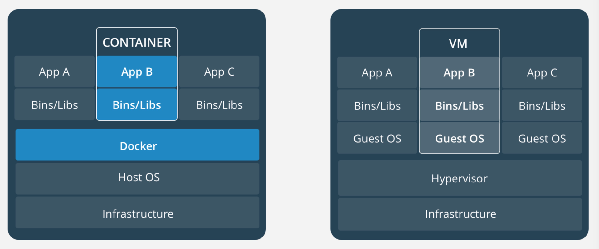
引自https://www.docker.com/what-container
容器是一个在 App 层的抽象，整合了运行的应用软件代码以及它的依赖、环境。许多个这样的容器可以运行在同一台宿主机上，并与其他容器共享这台宿主机的系统内核。而且，每一个容器实例，都运行在自己独立的进程中，与其他实例隔离。
虚拟机是一种将一台服务器转变成多台服务器的物理硬件设备的抽象。Hypervisor 软件是虚拟机的主要部分，它使得一台物理设备上可以运行多个虚拟机。
每个虚拟机都是一个完整操作系统的拷贝，再搭建一层 runtime，最后供应用程序运行。通常一个虚拟机大小都要超过 10 GB。
容器和虚拟机的主要差异，包括三个方面：
- 首先，多个容器可以共享同一个宿主机的内核，所以容器的体积要比虚拟机小很多，这就使得容器在分发和存储上比较有优势；
- 其次，启动容器不需要启动整个操作系统，所以容器部署和启动速度更快、开销更小，也更容易迁移，这使得容器拥有更强的恢复能力；
- 最后，容器连带代码和环境一起部署的方式，保证了它所包含的程序的运行依赖不会被变更，这就使得容器有效解决了不同环境不同结果的问题。
了解了容器的基本概念，我接下来跟你说说，容器可以对持续交付产生什么影响。
重新定义交付标准
没有容器之前，交付标准包括软件环境（也就所谓的机器）和软件代码两部分。交付系统更关注的是软件代码，环境一旦产生后，我们就不再关心或者很难再干预用户后期是如何对其做变更的了。
也就是说，环境的变更没有版本，没有记录，甚至当事人也会忘记当时变更了什么， 不言而喻，这会带来很多未知的安全隐患。
而，容器技术统一了软件环境和软件代码，交付产物中既包括了软件环境，又包括了软件代码。也就是说，容器帮我们重新定义了交付标准。
那么，容器技术到底是如何做到的呢？被重新定义后的交付，又有哪些特点呢？
第一，交付结果一致
容器镜像可以把软件的运行环境以及代码打包在一起，因此可以基于同一个镜像，在不同的地方生成一模一样的运行环境，也就是说单个镜像的交付结果不可变。
当然，单个容器只能提供一个服务，而实际场景下，应用都是跑在 SOA 或微服务的框架下的。所以，还需要利用如 Mesos 或 Kubernetes 这样的编排系统，将多个容器组织起来，并固化编排过程。
基于这两个特性，一旦形成了固定的容器镜像和对应的编排（也成为应用模板），那在不同的环境下，一定可以重复部署，且部署结果保持一致。
第二，交付自动化
容器镜像及容器编排技术很好地解决了 CI 和 CD 问题：
- CI 方面，与传统方式的不同只在于，原先交付的是安装包或软件包，而容器交付的则是镜像；
- CD 方面，与传统方式相比则有了长足的进步。 对传统方式而言，部署和安装方式与软件类型、开发方式有直接关系，存在多种多样的可能。 而容器技术则没有这样的问题，唯一的方式就是拉起容器镜像。这就大大简化了部署的复杂度，而且在编排系统的支持下，完成 CD 越来越容易了。
第三，交付个性化
传统的交付模式，往往因为环境的初始化问题，只能完成有限种类的交付。运维部门很难为所有的应用做出统一的环境模板，比如需要哪些软件依赖、需要哪些系统配置、部署的步骤是怎样的等等，要统一这些模板，就需要协调多个部门共同完成，难度可想而知。
对于一些受众比较少的程序语言，或者一个仅仅想部署一套开源软件的需求是很难满足的，大多数情况下，需要用户自己去申请虚拟机，然后按照官方提供的文档一步一步安装环境。这样操作，非常麻烦，更别提后续的更新了。
但是，有了容器之后，我们可以使用统一的接口完成任何应用的部署，几乎可以很好地满足所有的个性化需求。
第四，交付版本控制
对于容器来说，遵循的是不可变基础设施（Immutable Infrastructure）的理念，也就是说任何变化，包括代码、环境、配置的变更，都需要重新制作镜像，产生一个新的版本。这与版本往往只和代码变更有关的传统方式有所不同。
那么，这样的变化到底是好是坏呢？
变还是不变，这是个问题
不可变基础设施（Immutable Infrastructure），是 Chad Fowler 在 2013 年提出的一个很有前瞻性的构想：
在这种模式中，任何基础设施的实例（包括服务器、容器等各种软硬件）一旦创建之后便成为一种只读状态，不可对其进行任何更改。如果需要修改或升级某些实例，唯一的方式就是创建一批新的实例来替换它。
这种思想与不可变对象的概念完全相同。
而容器相比于虚拟机体积小和启动快的优势，正好符合了不可变基础设施这一模式的核心思想。
不可变基础设施模式的好处显而易见，主要包括以下三个方面：
- 很多与 runtime 相关的配置工作都可以被简化，这让持续集成与持续部署过程变得更流畅。
- 它也更易于应对部署环境间的差异及版本，进行更有效、全面的管理。
- 对回滚来说，更是得到了充分的保证，只要原先版本的镜像存在，它就一定能被恢复。
虽然不可变基础设施模式能够带来非常多的好处，但是其实现的难度也很高，你需要一套完全不同的版本管理系统，纳入所有的变更，重新定义版本、变更和发布。如何做到这些，我会在后续的文章中为你详细介绍。
但是，这种模式在我看来也是略微违反人性的（人们往往是想怎么简单怎么来）。试想如果你仅有一台机器，只是想升级一下 cURL 的版本，你觉得是直接在容器里更新方便，还是更改 Dockerfile 重打镜像走完一整套发布流程更方便呢？
容器不是银弹
正如上面所说，不可变基础设施模式对运维人员来说绝对是福音，为企业实现持续交付保驾护航。但是，对普通用户来说，这种模式有时候却是一种折磨，不可能有完美的标准化容纳所有的个性化，我们必须为个性化需求做准备。
目前，很多业务开发人员的观念还停留在使用虚拟机的阶段，从虚拟机迁移到容器时，我们也是拼了命地把容器的使用体验向虚拟机靠近，尽量让用户感觉就是在用虚拟机。
初衷是好的，但是这种做法却不能让用户真正认识并理解容器。
在迁移前期，我们经常会遇到这样的案例：由于个别应用对环境的个性化需求，用户需要登录虚拟机安装一些软件，或者更新一些配置。迁到容器后，他们依然这么做，但是结果让他们失望，因为每次应用部署后，之前的环境变更就都消失了。这无疑让他们非常沮丧，就好比写了几个小时的代码忘记了保存。
我们虔诚地遵循了不可变基础设施模式，但是又没有很好地告知用户这一原则。因此，我们不得不提供各种各样的方式让用户完成 “不可变中的可变” 与 “标准化中的个性化”，甚至我们必须在不同的环境使用不同的镜像。
而这，与我们认为的容器交付的理想状态是有差距的。虽然如此，但如何达成这样的目的，我也会在之后的文章中为你具体介绍。
总结
在这篇文章中，我介绍了容器如何代替虚拟机帮助我们应对持续交付的新挑战，但也阐述了使用容器技术实施持续交付的一些不足。
首先，容器是一种轻量级、可移植、自包含的软件打包技术，使应用程序几乎可以在任何地方以相同的方式运行。
然后，我分别从交付结果一致、交付自动化、交付个性化和交付版本控制这 4 个方面重新定义了基于容器的交付标准。
最后，我又从变和不变两个方向，阐述了容器能解决一些已有的问题，但它并不是银弹，它同样会带来问题，而这些问题，则需要改造和重新设计既有的持续交付模式来解决。
思考题
你所在的公司是否已经容器化了？如果已经容器化了，是如何平衡应用标准化与个性化的？对于有状态应用，又该如何使用容器进行交付呢？
14 如何做到构建的提速，再提速！
在前面几篇文章中，我分享了很多关于构建的观点，然而天下武功唯为快不破，构建的速度对于用户持续交付的体验来说至关重要。
在实施持续交付的过程中，我们经常会遇到这样的情况：只是改了几行代码，却需要花费几分钟甚至几十分钟来构建。而这种情况，对于追求高效率的你我来说，是难以容忍的。
那么，今天我就带你一起看看，还有哪些手段可以帮助构建提速。
升级硬件资源
构建是一个非常耗时的操作，常常会成为影响持续交付速度的瓶颈。原因是，构建过程，会直接消耗计算资源，而且很多构建对硬件的要求也非常高。那么，升级硬件资源就是构建过程提速的最为直接有效的方式。
需要注意的是，这里的硬件资源包括 CPU、内存、磁盘、网络等等，具体升级哪一部分，需要具体情况具体分析。
比如，你要构建一个 C 语言程序，那么 CPU 就是关键点。你可以增加 CPU 的个数或者提升 CPU 主频以实现更快的编译速度。
再比如，你要用 Maven 构建一个 Java 应用，除了 CPU 之外，Maven 还会从中央仓库下载依赖写在本地磁盘。这时，网络和磁盘的 I/O 就可能成为瓶颈，你可以通过增加网络带宽提升网络吞吐，使用 SSD 代替机械硬盘增加磁盘 I/O ，从而到达提升整个构建过程速度的目的。
总之，当你使用成熟的构建工具进行构建时，如果无法通过一些软件技术手段提升软件本身的构建速度，那么根据构建特点，有针对性地升级硬件资源，是最简单粗暴的方法。
搭建私有仓库
构建很多时候是需要下载外部依赖的，而网络 I/O 通常会成为整个构建的瓶颈。尤其在当前网络环境下，从外网下载一些代码或者依赖的速度往往是瓶颈，所以在内网搭建各种各样的私有仓库就非常重要了。
目前，我们需要的依赖基本上都可以搭建一套私有仓库，比如：
- 使用 createrepo 搭建 CentOS 的 yum 仓库；
- 使用 Nexus 搭建 Java 的 Maven 仓库；
- 使用 cnpm 搭建 NodeJS 的 npm 仓库；
- 使用 pypiserver 搭建 Python 的 pip 仓库；
- 使用 GitLab 搭建代码仓库；
- 使用 Harbor 搭建 Docker 镜像仓库
- ……
除了提升构建时的下载速度外，更重要的是，你还可以用这些工具存储辛勤工作的成果，保护知识产权。
总之，搭建私有仓库一定物超所值。当然，维护和管理这一大批工具需要投入不少人力和经济成本，在公司 / 团队没有成一定规模的前提下，会有一定的负担。
所以，如果你的团队暂时没有条件自己搭建私有仓库的话，可以使用国内已有的一些私有仓库，来提升下载速度。当然，在选择私有仓库时，你要尽量挑选那些被广泛使用的仓库，避免安全隐患。
使用本地缓存
虽然搭建私有仓库可以解决代码或者依赖下载的问题，但是私有仓库不能滥用，还是要结合构建机器本地的磁盘缓存才能达到利益最大化。
如果每次依赖拉取都走一次网络下载，一方面网络下载的速度通常会比本地磁盘慢很多，另一方面在构建量很大时，并发请求会导致私有仓库出现网卡打爆或者出现莫名其妙的异常，从而导致所有的构建过程变得不稳定，甚至影响其他工具的使用。
所以，妥善地用好本地缓存十分重要。这里说的“妥善”，主要包括以下两个方面：
- 对于变化的内容，增量下载；
- 对于不变的内容，不重复下载。
目前，很多工具都已经支持这两点了。
对于第一点，项目的源码是经常变化的内容，下载源码时，如果你使用 Git 进行增量下载，那么就不需要在每次构建时都重复拉取所有的代码。Jenkins 的 Git 插件，也默认使用这种方式。
对于第二点，Maven 每次下载依赖后都会在本地磁盘创建一份依赖的拷贝，在构建下载之前会先检查本地是否已经有依赖的拷贝，从而达到复用效果。并且，这个依赖的拷贝是公共的，也就是说每个项目都可以使用这个缓存，极大地提升了构建效率。
如果你使用 Docker，那么你可以在宿主机上 mount 同一个依赖拷贝目录到多个 Slave 容器上，这样多个容器就可以共享同一个依赖拷贝目录。你可以最大程度地利用这一优势，但要注意不要让宿主机的磁盘 I/O 达到瓶颈。
规范构建流程
程序员的祖训说：Less is More，Simple is Better，这与大道至简的含义不谋而合。
程序的追求是简约而不简单，但随着业务越来越复杂，构建过程中各种各样的需求也随之出现，虽然工具已经封装了很多实用的功能，但是很多情况下，你都需要加入一些自定义的个性化功能，才能满足业务需求。
在携程，Java 构建过程中就有大量的额外逻辑，比如 Enforcer 检查、框架依赖检查、Sonar 检查、单元测试、集成测试等等，可以说是无所不用其极地去保证构建产物的质量。
因此，当前复杂的构建过程再也回不到仅仅一条 mvn 或者 gcc 命令就能搞定的年代。而这一套复杂的流程下来必定会花费不少时间，让程序员们有更多喝茶和去厕所的时间。
追求高效的同时，又不舍弃这些功能，是一个现实而又矛盾的命题，我们能否做到二者兼顾呢？答案，当然肯定的。
以 Java 构建为例，Enforcer 检查、框架依赖检查、Sonar 检查、单元测试、集成测试这些步骤，并没有放在同一个构建过程中同步执行，而是通过异步的方式穿插在 CI/CD 当中，甚至可以在构建过程之外执行。
比如， Sonar 扫描在代码集成阶段执行，用户在 GitLab 上发起一个合并请求（Merge Request），这时只对变更的代码进行对比 Sonar 扫描，只要变更代码检查没有问题，那么就可以保证合并之后主干分支的代码也是没问题的。
所以，用户发布时就无需再重复检查了，只要发布后更新远端 Sonar Qube 的数据即可，同时，这个过程完全不会影响用户的构建体验。
通过以上一些规范构建流程的做法，可以进一步提高构建速度。
善用构建工具
正如我前面所说的，目前很多构建工具已经具备了非常多的功能来帮助我们更好地进行构建，因此，充分理解并用好这些功能就成了我们必须要掌握的武林绝学。
以 Maven 为例，我来带你看看有哪些提速方式，当然其他的构建工具，如 Gradle 等也都可以采用类似的方法：
- 设置合适的堆内存参数。 过小的堆内存参数，会使 Maven 增加 GC 次数，影响构建性能；过大的堆内存参数，不但浪费资源，而且同样会影响性能。因此，构建时，你需要反复试验，得到最优的参数。
- 使用 -Dmaven.test.skip = true 跳过单元测试。 Maven 默认的编译命令是 mvn package，这个命令会自动执行单元测试，但是通常我们的构建机器无法为用户提供一套完整的单元测试环境，特别是在分布式架构下。因此如果单元测试需要服务依赖，则可以去掉它。
- 在发布阶段，不使用 Snapshot 版本的依赖。 这就可以在 Maven 构建时不填写 -U 参数来强制更新依赖的检查，省下因为每次检查版本是否更新而浪费的时间。
- 使用 -T 2C 命令进行并行构建。 在该模式下 ，Maven 能够智能分析项目模块之间的依赖关系，然后并行地构建那些相互间没有依赖关系的模块，从而充分利用计算机的多核 CPU 资源。
- 局部构建。 如果你的项目里面有多个没有依赖关系的模块，那么你可以使用 -pl 命令指定某一个或几个模块去编译，而无需构建整个项目，加快构建速度。
- 正确使用 clean 参数。 通常情况下，我们建议用户在构建时使用 clean 参数保证构建的正确性。clean 可以删除旧的构建产物，但其实我们大多数时间可能不需要这个参数，只有在某些情况下（比如，更改了类名，或者删除了一些类）才必须使用这个参数，所以，如果某次变更只是修改了一些方法，或者增加了一些类，那么就不需要强制执行 clean 了。
总之，如果你能熟练运用各种构建工具，那么你的效率一定会比其他人高，你的构建速度一定比其他人快。
总结
我介绍了五种常见的构建提速的方式，分别是：
- 升级硬件资源，最直接和粗暴的提速方式；
- 搭建私有仓库，避免从外网下载依赖；
- 使用本地缓存，减少每次构建时依赖下载的消耗；
- 规范构建流程，通过异步方式解决旁支流程的执行；
- 善用构建工具，根据实际情况合理发挥的工具特性。
然而，每个公司持续交付的构建流程不太一样，面临的问题与挑战也都不太一样，所以在优化前，一定要先了解问题原因，再对症下药。
思考题
你所在公司的构建流程是什么样的？是否也面临性能的问题？你又是是如何解决这些问题的？
15 构建检测，无规矩不成方圆
在这个专栏的第 5 篇文章《手把手教你依赖管理》中，我介绍了构建 Java 项目的一些最佳实践，同时也给你抛出了一个问题：如果用户偷懒不遵循这些规范该怎么办？
所谓没有规矩不成方圆，构建是持续交付过程中非常重要的一步，而好的构建检测则可以直接提升交付产物的质量，使持续交付的流水线又快又稳。所以，也就有了 Maven 构建中的大杀器：Maven Enforcer 插件。
什么是 Maven Enforcer 插件？
Maven Enforcer 插件提供了非常多的通用检查规则，比如检查 JDK 版本、检查 Maven 版本、检查依赖版本，等等。下图所示就是一个简单的使用示例。
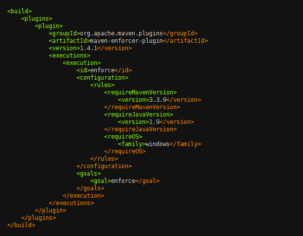
上述的配置会在构建时（准确的说是在 validate 时）完成三项检查：
- requireMavenVersion 检查 Maven 版本必须大于 3.3.9；
- requireJavaVersion 检查 JDK 版本必须大于等于 1.9；
- requireOS 检查 OS 必须是 Windows 系统。
如果你使用 Java 1.8， Maven 3.3.3， 在 Linux 上构建， 便会出现如下的错误：
- Rule 0: org.apache.maven.plugins.enforcer.RequireMavenVersion failed with message: Detected Maven Version: 3.3.3 is not in the allowed range 3.3.9.
- Rule 1: org.apache.maven.plugins.enforcer.RequireJavaVersion failed with message: Detected JDK Version: 1.8.0-77 is not in the allowed range 1.9.
- Rule 2: org.apache.maven.plugins.enforcer.RequireOS failed with message: OS Arch: amd64 Family: unix Name: linux Version: 3.16.0-43-generic is not allowed by Family=windows
从而导致构建失败。
那么，是否有办法在所有应用的构建前都执行 Enforcer 的检查呢。
我在专栏的第 5 篇文章《手把手教你依赖管理》中，也已经介绍了在携程内部，一般 Java 应用的继承树关系，每个项目都必须继承来自技术委员会或公司层面提供的 super-pom。携程在 super-pom 之上又定义了一层 super-rule 的 pom，这个 pom 中定义了一系列的 Enforcer 规则。 这样，只要是集成了 super-pom 的项目，就会在构建时自动运行我们所定义的检查。
也许你会问了， 如果用户不继承 super-pom 是不是就可以跳过这些规则检查了？是的， 继承 super-pom 是规则检查的前提。
但是，我们不会给用户这样的机会， 因为上线走的都是统一的构建系统。
构建系统在构建之前会先检查项目的继承树，继承树中必须包含 super-pom， 否则构建失败。并且，构建系统虽然允许用户自定义 Maven 的构建命令，但是会将 Enforcer 相关的参数过滤掉，用户填写的任何关于 Enforcer 的参数都被视为无效。Enforcer 会被强制按照统一标准执行，这样就保证了所有应用编译时都要经过检查。
因为携程的构建系统只提供几个版本的 Java 和 Maven，并且操作系统是统一的 Linux CentOS 版本，所以就不需要使用之前例子中提到的三个检查，一定程度的缩小标准化范围，也是有效的质量保证手段。
了解了 Maven Enforcer 插件，我再从 Maven Enforcer 内置的规则、自定义的 Enforcer 检查规则，以及构建依赖检查服务这三个方面，带你一起看看构建监测的“豪华套餐”，增强你对交付产物的信心。
丰富的内置的 Enforcer 规则
Maven Enforcer 提供了非常丰富的内置检查规则，在这里，我给你重点介绍一下 bannedDependencies 规则、dependencyConvergence 规则，和 banDuplicateClasses 规则。
第一，bannedDependencies 规则
该规则表示禁止使用某些依赖，或者某些依赖的版本，使用示例：
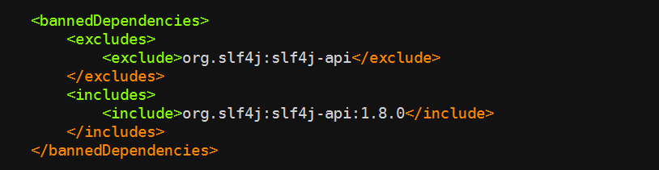
该代码检查的逻辑是，只允许使用版本大于等于 1.8.0 的 org.slf4j:slf4j-api 依赖，否则将会出现如下错误：
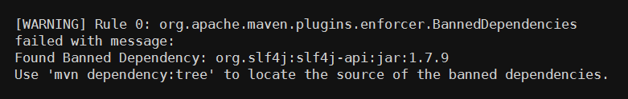
bannedDependencies 规则的常见应用场景包括：
- 当我们知道某个 jar 包的某个版本有严重漏洞时，可以用这种方法禁止用户使用，从而避免被攻击；
- 某个公共组件的依赖必须要大于某个版本时，你也可以使用这个方法禁止用户直接引用不兼容的依赖版本，避免公共组件运行错误。
第二，dependencyConvergence 规则
在《手把手教你依赖管理》一文中，我介绍了 Maven 的依赖仲裁的两个原则：最短路径优先原则和第一声明优先原则。
但是，Maven 基于这两个原则处理依赖的方式过于简单粗暴。毕竟在一个成熟的系统中，依赖的关系错综复杂，用户很难一个一个地排查所有依赖的关系和冲突，稍不留神便会掉进依赖的陷阱里，这时 dependencyConvergence 就可以粉墨登场了。
dependencyConvergence 规则的作用是： 当项目中的 A 和 B 分别引用了不同版本的 C 时， Enforce 检查失败。 下面这个实例，可以帮你理解这个规则的作用。

org.slf4j:slf4j-jdk14:1.6.1 依赖了 org.slf4j:slf4j-api:1.6.1， 而 org.slf4j:slf4j-nop:1.6.0 依赖了 org.slf4j:slf4j-api:1.6.0，当我们在构建项目时， 便会有如下错误：
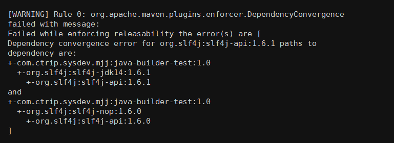
这时就需要开发人员介入了，使用 dependecy 的 exclusions 元素排除掉一个不合适的版本。 虽然这会给编程带来一些麻烦， 但是非常必要。因为，我始终认为你应该清楚地知道系统依赖了哪些组件， 尤其是在某些组价发生冲突时，这就更加重要了。
第三，banDuplicateClasses 规则
该规则是 Extra Enforcer Rules 提供的，主要目的是检查多个 jar 包中是否存在同样命名的 class，如果存在编译便会报错。 同名 class 若内容不一致，可能会导致 java.lang.NoSuchFieldError，java.lang.NoSuchMethodException 等异常，而且排查起来非常困难，因为人的直觉思维很难定位到重复类这个非显性错误上，例如下面这种情况：
org.jboss.netty 包与 io.netty 包中都包含一个名为 NettyBundleActivator 的类，另外还有 2 个重复类：spring/NettyLoggerConfigurator 和 microcontainer/NettyLoggerConfigurator。
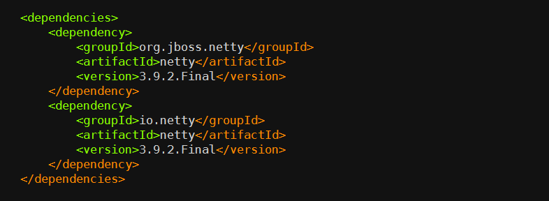
当激活了 banDuplicateClasses 规则之后，Enforcer 检查，便会有如下的报错：
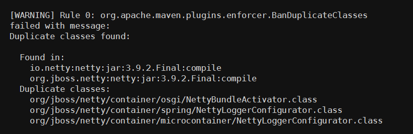
通常情况下，用户需要排除一个多余的 jar 包来解决这个问题，但有些情况下两个 jar 包都不能被排除，如果只是个别类名冲突了，那么可以通过 ignoreClasses 去忽略冲突的类，类名可以使用通配符（），如: org.jboss.netty.container.。
但是，用户不能随意更改这个配置，因为它必须得到一定的授权，否则随意忽略会产生其他不确定的问题。因此我们将这个插件做了一些改动，通过 API 来获取 ignoreClasses 的内容。当用户有类似的需求时，可以提交 ignoreClasses ，但必须申请，经过 Java 专家审批之后才可忽略掉。
自定义的 Enforcer 检查规则
除了上述的官方规则，实际上携程还做了若干个扩展的规则，如：
- CheckVersion，用于检查模块的版本号必须是数字三段式，或者带有 SNAPSHOT 的数字三段式；
- CheckGroupId，用于检查 GroupId 是否符合规范，我们为每个部门都分别指定了 GroupId；
- CheckDistributionManagementRepository，用于检查项目的 distributionManagement 中的 repository 节点，并为每个部门都指定了他们在 Nexus 上面的 repositroy；
- CheckSubModuleSaveVersion，用于检查子模块版本号是否与父模块版本号一致。
以上，便是携程基于 Maven Enforcer 在构建检查上的一些实践，你可以借鉴使用。
但是，有时候 Maven Enforcer 也无法满足我们所有的需求，比如，它无法完成非 Java 项目的检查。因此，我们还有一个通用的依赖检查服务。
构建依赖检查服务
其他语言， 比如 C#，NodeJS 等，没有 Maven Enforcer 这样成熟的工具来做构建时的依赖检查。对于这类语言我们的做法是：构建后，收集该项目所有的依赖及其版本号，将这些数据发送给依赖检查服务 Talos，Talos 根据内置的规则进行依赖检查。Talos 是一套携程自研的，独立的，组件依赖检查系统，其中包含的检查逻辑，完全可以自由定义。
而且，Talos 依赖检查的逻辑更新非常灵活，可以直接在平台内使用 Java 代码在线编写检查逻辑，提交后便可实时生效。
以下是一段 .NET 项目检查逻辑的示例代码：
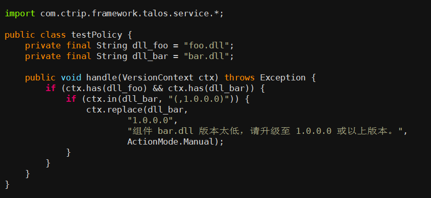
该逻辑的含义是： 当项目的依赖存在 foo.dll 和 bar.dll 时，bar.dll 的版本号必须大于 1.0.0.0。看， 是不是非常方便快捷通用！
这样一套组合拳下来，构建检测以及项目依赖的问题已不再那么让人望而生畏了。因此，工欲善其事必先利其器， 好的工具可以解放大量的生产力，最重要的是构建检测后的交付让你我更有信心了。有条不紊的流程与规范，就像一列高速列车下的枕木，时刻保证着整个系统稳定而可靠地推进。
总结与实践
我围绕着构建检测，和你一起学习并介绍了：
- Maven Enforcer 插件可以帮我们更好地完成编译检测；
- 可以使用内置的 Maven Enforcer 规则，覆盖常规检测；
- 可以使用自定义 Maven Enforcer 检查规则的方式，增加版本号规则等的检查；
- Maven Enforcer 之外，你还可以自己丰富一些例如依赖版本检测这样的服务，以提高检测效果。
Maven Enforcer 提供了非常丰富的内置检查规则，感兴趣的话，你可以通过https://maven.apache.org/enforcer/enforcer-rules/index.html 以及 http://www.mojohaus.org/extra-enforcer-rules/ 逐个尝试这些规则，并说说哪些规则是你工作总最最需要的。
16 构建资源的弹性伸缩
在前面的文章中，我已经介绍了构建在整个持续交付过程中扮演的重要角色，并且详细讨论了依赖管理和构建检测等方面的内容。在这篇文章中，我将带你搭建一套高可用、高性能的构建系统。
持续集成工具
目前市面上已经有很多持续集成工具了，它们已经替我们解决了很多实际问题，所以我们也就没有必要去再重复造轮子了。这些持续集成工具，最流行的应属 Travis CI、Circle CI、Jenkins CI 这三种。
第一，Travis CI
Travis CI 是基于 GitHub 的 CI 托管解决方案之一，由于和 GitHub 的紧密集成，在开源项目中被广泛使用。
Travis CI 的构建，主要通过 .travis.yml 文件进行配置。这个 .travis.yml 文件描述了构建时所要执行的所有步骤。
另外，Travis CI 可以支持市面上绝大多数的编程语言。但是，因为 Travis 只支持 GitHub，而不支持其他代码托管服务，所以官方建议在使用前需要先具备以下几个条件：
- 能登录到 GitHub；
- 对托管在 GitHub 上的项目有管理员权限；
- 项目中有可运行的代码；
- 有可以工作的编译和测试脚本。
Travis CI 的收费策略是，对公共仓库免费，对私有仓库收费。
第二，CircleCI
CircleCI 是一款很有特色，也是比较流行的，云端持续集成管理工具。CircleCI 目前也仅支持 GitHub 和 Bitbucket 管理。
CircleCI 与其他持续集成工具的区别在于，它们提供服务的方式不同。CircleCI 需要付费的资源主要是它的容器。
你可以免费使用一个容器，但是当你发现资源不够需要使用更多的容器时，你必须为此付费。你也可以选择你所需要的并行化级别来加速你的持续集成，它有 5 个并行化级别（1x、4x、8x,、12x，和 16x）可供选择，分别代表利用几个容器同时进行一个项目的构建，如何选择就取决于你了。
第三，Jenkins CI
Jenkins 是一款自包含、开源的用于自动化驱动编译、测试、交付或部署等一系列任务的自动化服务，它的核心是 Jenkins Pipline 。Jenkins Pipline 可以实现对持续交付插件的灵活组合，以流水线的方式接入到 Jenkins 服务。
Jenkins 还提供了一整套可扩展的工具集，程序员可以通过代码的方式，定义任何流水线的行为。另外，经过多年的发展，Jenkins 已经包含了很多实用的第三方插件，覆盖了持续交付的整个生命周期。
目前，绝大多数组织都选择了 Jenkins 作为内部的持续集成工具，主要原因是：
- 代码开源， 插件完善，系统稳定；
- 社区活跃，成功实践与网上资源比较丰富；
- Jenkins Pipeline 非常灵活好用。
大致了解了集成工具之后，携程和绝大部分企业一样，选择了最开放、最易于扩展的 Jenkins 作为集成构建的引擎，而且分别从实现横向的 Master 高可用和纵向的 Slave 弹性伸缩两方面，使构建系统更为强大和高效。
Jenkins Master 高可用架构的
目前普遍的 Jenkins 搭建方案是：一个 Jenkins Master 搭配多个 Jenkins Slave。大多数情况下，这种方案可以很好地工作，并且随着构建任务的增加，无脑扩容 Jenkins Slave 也不是一件难事。另外，不管是 Linux Slave 还是 Windows Slave ，Jenkins 都可以很好地支持，并且非常稳定。
但是，随着业务的增长，微服务架构的流行，持续交付理念的深入人心，构建会变得越来越多，越来越频繁，单个 Jenkins Master 终究会成为系统中的瓶颈。
遗憾的是，开源的 Jenkins 并没有给我们提供一个很好的 Master 高可用方案，CloudBees 公司倒是提供了一个高可用的插件，但是价格不菲。
所以，为了鱼与熊掌兼得，最终携程决定自己干。下面是我们构建系统的基本架构：
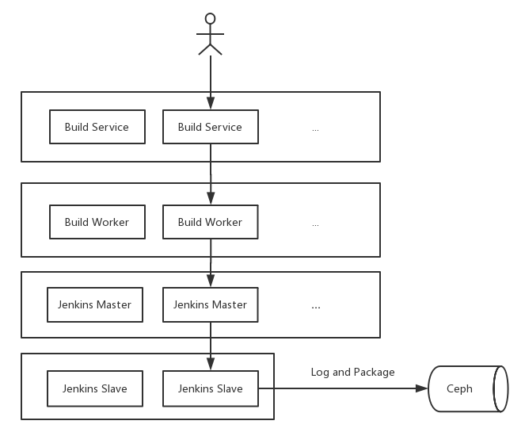
图 1 携程 Jenkins Master 高可用架构
携程的解决思路是在 Jenkins 上面再封装两层： Build Service 暴露构建的 HTTP 接口，接收请求后将任务丢给异步队列 Build Worker，Build Worker 根据不同的策略将任务分发给符合条件的 Jenkins Master。
这里的分发条件，可以是编译任务的平台或语言，比如可以将基于 Windows 和 Linux 的任务分别放在不同的 Jenkins Master 上，也可以将 Java 构建和 NodeJS 构建任务放在不同的 Jenkins Master 上。
除此之外，携程的这个构建系统还可以满足的一种需求是：一些比较复杂且重要的业务线，有时也会提出独立构建资源的需求，以达到独占编译资源的目的。
总而言之，构建任务分发的策略可以是非常灵活的：构建 Worker 和 Jenkins Master 之间有“心跳监测”，可以时刻检查 Jenkins Master 是否还健康，如果有问题就将任务分发到其他等价的 Jenkins Master 上，并给相关人员发送告警通知。
这种拆解 Jenkins Master 主要有以下几个好处：
- 每个 Job 都可运行在至少两个 Jenkins Master 之上， 保证高可用；
- 根据不同的策略将 Job 做 Sharding， 避免积压在同一个 Master 上；
- Jenkins Master 按需配置，按需安装不同的插件，便于管理。
利用这套方案，携程就可以做到 Master 层面的伸缩了。这套方案的实现成本并不是很大，简单易懂，小团队也完全可以掌握和实施。
Jenkins Slave 弹性伸缩方案
解决了 Jenkins Master 的高可用问题，接着就要去思考如何才能解决 Slave 资源管理和利用率的问题了。因为，你会发现一个组织的集成和构建往往是周期性的，高峰和低谷都比较明显，而且随着组织扩大，幅度也有所扩大。所以，如果按照高峰的要求来配备 Slave 实例数，那么在低谷时，就很浪费资源了。反之，又会影响速度，造成排队。
因此，我们需要整个 Slave 集群具有更优的弹性：既要好管理，又要好扩展。在携程，我们尝试过多种虚拟机方案，比如全 Windows 类型、金映象方案等等。最后，根据容器的特性，选择了容器作为解决方案。期间也经历了 Mesos 到 K8s 的两套方案。
第一，最初的虚拟机
在最初构建种类不多并且场景不复杂的情况下，我们的 Slave 全部使用 Windows 虚拟机。
我们把所需的构建软件像大杂烩一样一股脑地安装在虚拟机上，比如，编译 .NET 所需的 MSBuild ，编译 Java 所需的 Maven。我们维护着一份啰嗦冗长的安装手册，并小心翼翼地这些文档保存在服务器上。
这时，最怕的就是构建环境的变更，比如某个软件要升级，要添加对某个新软件的支持。这些变更需要我们对所有机器的操作都重来一遍，甚至还需要关机重启，十分费时折腾。
后来，我们尝试了将虚拟机维护成镜像，并使用 SaltStack 做自动化变更。虽然日子好过了点，但升级一次环境还是需要投入不少人工成本。另外，文档的更新始终一件苦差事，从来不敢怠慢就怕某次变更没有记录在案。
你我都清楚，写文档从来都不像写代码那么舒服。程序员最讨厌的两件事也都和文档相关：一是给自己的软件写文档，二是别人的软件没有文档。
这让我们非常困扰，我们做的是 DevOps 与持续交付，但是自己的工具管理却如此混乱无章，这也使我们感觉十分蒙羞与窘迫。
第二，容器化的甜头
随着容器越来越流行，我们发现：使用容器镜像保存构建环境是一个非常不错的选择。相对于虚拟机，容器技术主要有以下几个优势：
- 使用 Dockerfile 描述环境信息相对于之前的文档更加直观，并且可以很自然地跟 Git 结合做到版本化控制，先更新 Dockerfile 再更新镜像是很自然的事。
- 镜像更容易继承，你可以配置一个 Base 镜像，然后根据不同的需求叠加软件。比如，你的所有构建都需要安装 Git 等软件，那么就可以把它写到 Base 镜像里面。
- Docker 镜像可以自由控制，开发人员可以自己推送镜像，快速迭代。重建容器的代价比重建虚拟机小得多，容器更加轻量，更容易在本地做测试。
目前，携程的构建系统已经支持了包括： Java， NodeJS，Golang，Erlang，Python 等多种语言的构建，并且维护起来非常轻松，完全没有负担。
在尝到了 Linux 容器带来的甜头之后，我们毅然决然地开始研究 Windows 容器技术。经过不断地尝试与探索，终于把它应用到了生产环境，并且取得了非常不错的效果，目前为止运行也十分稳定。
第三，让资源弹起来
容器化在很大程度上解决了运维成本的问题，虽然通过 Docker 管理容器比虚拟机要方便一些，但是管理大量的容器却也没那么得心应手。
此外，我们之前使用容器的方式几乎和使用虚拟机一样，也就是所谓的 “胖容器”，一旦创建，不管用不用，它都在那里。而构建是一个周期性的行为，一般跟着程序员的工作时间走：工作日比周末多，白天比晚上多，甚至还有明显的午饭和晚饭空闲期。
后来 Mesos 与 Kubernetes 等主流的容器集群管理工具渐渐浮出水面，出现在我们的视野中。
基于 Borg 成熟经验打造的 Kubernetes，为容器编排管理提供了完整的开源方案，并且社区活跃，生态完善，积累了大量分布式、服务化系统架构的最佳实践。在 2017 年， 携程尝试将 Jenkins 和 Kubernetes 集成在了一起 。
目前，Jenkins 社区已经提供了一个 Kubernetes 插件，而且是免费的，使得 Jenkins 与 K8s 的集成变得非常简单轻松。
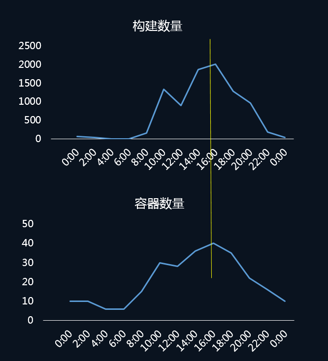
图 2 构建数量与容器数量对比
上图就是我们某台宿主机 24 小时的构建数量与所创建容器的对比图，可以看出两条曲线呈现的趋势基本是一致的。我们在夜晚闲置的资源上，调度了一些其他的离线 Job，大幅提升了资源利用率。
所以，携程利用容器技术，也顺利实现了 Slave 节点的弹性伸缩。对于中小型企业，初期完全可以利用 Jenkins 及其 Kubernetes 插件，做到 Slave 节点的资源弹性伸缩。至于与离线 Job 混部，因为要考虑的因素较多，可以在应用容器化之后再考虑。
总结与实践
我主要介绍了几种流行的持续集成工具，以及基于 Jenkins 的高可用构建系统的一些基本设计理念和我们系统的演变过程。
- 通常建议使用成熟的 CI 产品（比如，Travis CI、Circle CI、Jenkins CI）来作为平台的基础；
- 虽然这些 CI 工具是成熟产品，但面对日新月异的技术需求，高可用和伸缩问题还是要自己解决；
- 通过请求分发等设计，可以实现 Master 节点的横向伸缩及高可用问题；
- 利用容器技术，可以解决 Salve 节点的弹性伸缩和资源利用率问题。
最后，你可以尝试搭建一套 Jenkins 与 Kubernetes 服务，让你的任务跑在动态创建出来的容器上，并思考一下这个方案有没有什么缺点和不足。
17 容器镜像构建的那些事儿
随着容器发布越来越流行，持续交付最后一公里的产物，逐渐由之前的代码包变成了容器镜像。然而，容器镜像构建与传统的代码构建有很多不同之处，也增加了很多新鲜的技术领域和内容需要我们去学习。
所以，今天我们就一起来聊聊容器镜像构建的那些事儿，打通容器镜像构建的各个环节。
什么是容器镜像？
在虚拟机时代就有镜像的说法，当我们创建一个虚拟机时，通常会去网上下载一个 ISO 格式的虚拟机镜像，然后经过 VirtualBox 或者 VMware 加载，最终形成一个包含完整操作系统的虚拟机实例。
而容器镜像也是类似的意思，只不过它不像虚拟机镜像那么庞大和完整，它是一个只读的模板，一个独立的文件系统，包含了容器运行初始化时所需要的数据和软件，可以重复创建出多个一模一样的容器。
容器镜像可以是一个完整的 Ubuntu 系统，也可以是一个仅仅能运行一个 sleep 进程的独立环境，大到几 G 小到几 M。而且 Docker 的镜像是分层的，它由一层一层的文件系统组成，这种层级的文件系统被称为 UnionFS。下图就是一个 Ubuntu 15.04 的镜像结构。

引用自 docker docs：images and layers
{kind=link}
图中的镜像部分画了一个锁的标记，它表示镜像中的每一层都是只读的，只有创建容器时才会在最上层添加一个叫作 Container layer 的可写层。容器运行后的所有修改都是在这个可写层进行，而不会影响容器镜像本身。
因为这一特性，创建容器非常节省空间，因为一台宿主机上基于同一镜像创建的容器只有这一份镜像文件系统，每次创建多出来的只是每个容器与镜像 diff 的磁盘空间。而虚拟机每增加一个实例，都会在宿主机上占用一个完整的镜像磁盘空间。
什么是 Dockerfile
了解了什么是容器的镜像，以及与虚拟机镜像的区别后，可以清楚地看到：容器都是基于镜像产生的，没有镜像就没有容器。那么，我们应该怎么创建一个镜像呢？
Docker Hub上提供了非常多的常用镜像，比如 Ubuntu 镜像，CentOS 镜像，或者仅仅是一个包含 Java 程序的镜像，你可以通过 docker pull 命令把它们下载到本地使用。当然你也可以自己在本地通过 docker build 制作镜像。
如果你想要修改或者加工这些镜像，可以找到文件系统中对应的 layer 目录，然后进行修改。按照这种方式操作的话，如果我要添加一个文件还好说，但如果要安装一个软件，那就要拷贝一堆文件到各个目录中，相当麻烦。
如果真要这样操作的话，容器镜像也就不会有今天如此庞大的用户群体了。Docker 帮我们解决这个问题的方式，就是提供了 Dockerfile。
简单来说，Dockerfile 第一个好处就是，可以通过文本格式的配置文件描述镜像，这个配置文件里面可以运行功能丰富的指令，你可以通过运行 docker build 将这些指令转化为镜像。
比如，我要更改 Ubuntu 镜像安装一个 Vim 编辑器，那么我的 Dockerfile 可以这样写：
FROM ubuntu
RUN apt-get install vim -y
其中，FROM 指令说明我们这个镜像需要继承 Ubuntu 镜像，RUN 指令是需要在镜像内运行的命令。
因为 Ubuntu 镜像内包含了 apt-get 包管理器，所以相当于启动了一个 Ubuntu 镜像的容器，然后在这个容器内部安装 Vim。这期间会产生一个新的 layer，这个新的 layer 包含安装 Vim 所需的所有文件。
运行 docker build 后会产生一个新镜像，我们可以通过 docker tag 给这个新镜像起一个名字，然后 docker push 到仓库，就可以从仓库下载这个镜像了，后续的其他镜像也可以继承这个镜像进行其他改动。
镜像就是这样通过 Dockerfile 一层一层的继承，不断增加新的内容，直到变成你想要的样子。
Dockerfile 的另外一个好处就是可以描述镜像的变化，通过一行命令就可以直观描述出环境变更的过程，如果再通过 git 进行版本控制，就可以让环境的管理更加可靠与简单。
了解了 Dockerfile 之后，你就可以利用它进行代码更新了，最主要的步骤就以下三步：
- 将代码包下载到构建服务器；
- 通过 Dockerfile 的 ADD 命令将代码包加载到容器里；
- Docker build 完成新的镜像。
镜像构建优化
原则上，我们总是希望能够让镜像保持小巧、精致，这样可以让镜像环境更加清晰，不用占用过多空间，下载也会更快。
那么，如何做好镜像的优化呢？你可以从 3 个方面入手：
- 选择合适的 Base 镜像；
- 减少不必要的镜像层的产生；
- 充分利用指令的缓存。
为什么第一条说要选择合适的 Base 镜像呢？因为，这是最直接和有效的方式。
举个例子就更好理解了。比如，我只想运行一个 Java 进程，那么镜像里就只有这个 Java 进程所需的环境就可以了，而没必要使用一个完整 Ubuntu 或者 CentOS 镜像。
关于第二点，减少不必要的镜像层，是因为使用 Dockerfile 时，每一条指令都会创建一个镜像层，继而会增加整体镜像的大小。
比如，下面这个 Dockerfile：
FROM ubuntu
RUN apt-get install vim -y
RUN apt-get remove vim -y
虽然这个操作创建的镜像中没有安装 Vim，但是镜像的大小和有 Vim 是一样的。原因就是，每条指令都会新加一个镜像层，执行 install vim 后添加了一层，执行 remove vim 后也会添加一层，而这一删除命令并不会减少整个镜像的大小。
因此，当我们编写 Dockerfile 时，可以合并多个 RUN 指令，减少不必要的镜像层的产生，并且在之后将多余的命令清理干净，只保留运行时需要的依赖。就好比我买了两斤橘子，只需要把橘子肉保留下来就好，橘子皮可以直接丢掉，不用保留在房间里。
Dockerfile 构建的另外一个重要特性是指令可以缓存，可以极大地缩短构建时间。 因为之前也说了，每一个 RUN 都会产生一个镜像，而 Docker 在默认构建时，会优先选择这些缓存的镜像，而非重新构建一层镜像。比如，一开始我的 Dockerfile 如下：
FROM ubuntu
RUN apt-get install vim -y
使用一段时间之后，我发现需要添加新的特性，Dockerfile 变成了如下的样子：
FROM ubuntu
RUN apt-get install vim -y
ADD java /usr/local/java
重新 build 时，前面安装 Vim 那步可以使用缓存，而不需要重新运行。当我们需要构建一个新镜像时，这个特性非常有用，可以快速跳过前面构建通过的步骤，而不需要每次都重新构建，尤其适用于在 Docker 里面编译一些大型软件的情况，可以帮你节省大量时间。
镜像构建环境
当我们学会了使用 Dockerfile 构建镜像之后，下一步就是如何搭建构建环境了。搭建构建环境最简单的方式就是在虚拟机上安装 Docker Daemon，然后根据你所使用的语言提供的 Docker 客户端与 Docker Daemon 进行交互，完成构建。
但是，我们推崇构建环境容器化，因为我们的构建环境可能除了 Docker 外，还会有一些其他的依赖，比如编程语言、Git 等等。
上面我也分析了 Docker 镜像的各种好处，那如果环境还没有实现容器化，是不是就有点说不过去了？
接下来，我们就看看构建环境如何实现容器化。一般情况下，用容器来构建容器镜像有两种方式：
- Docker Out Of Docker（DooD）
- Docker In Docker（DinD）
第一，Docker Out Of Docker（DooD）
这种方式比较简单，首先在虚拟机上安装 Docker Daemon，然后将你的构建环境镜像下载下来启动一个容器。
在默认情况下，Docker 客户端都是通过 /var/run/docker.sock 与 Docker Daemon 进行通信。我们在创建 Docker 实例时，把外部的 /var/run/docker.sock mount 到容器内部，这样容器内的 Docker 客户端就可以与外部的 Docker Daemon 进行通信了。
另外，你还需要注意权限问题，容器内部的构建进程必须拥有读取 /var/run/docker.sock 的权限，才可以完成通信过程。
这种方式的好处很明显，我们可以将镜像构建环境打包复用，对宿主机来说，只要安装 Docker Daemon 就可以了。但是这种方式的缺点是，内部的环境必须要与外部保持一致，不然就会报错，比如缺少库文件。此外，如果构建容器时不小心把 Docker Daemon 搞挂了，那么就会影响该宿主机上的其他容器。
为了解决这个问题，我们是否可以在容器内部使用 Docker Daemon 呢？
第二，Docker In Docker（DinD）
Docker In Docker ，就是在容器内部启动一个完整的 Docker Daemon 进程，然后构建工具只需要和该进程交互，而不影响外部的 Docker 进程。
默认情况下，容器内部不允许开启 Docker Daemon 进程，必须在运行容器的时候加上 --privileged 参数，这个参数的作用是真正取得 root 的权限。另外，Docker 社区官方提供了一个 docker:dind 镜像可以直接拿来使用。
这样一来，容器内部 Docker Daemon 就和容器外部的 Docker Daemon 彻底分开了，容器内部就是一个完整的镜像构建环境，是不是很神奇。
然而 DinD 也不是百分之百的完美和健壮，它也有一些关于安全和文件系统的问题。此外，因为每个容器都有独立的 /var/lib/docker 用来保存镜像文件，一旦容器被重启了，这些镜像缓存就消失了，这可能会影响我们构建镜像的性能。
通过以上两个方法，你就可以做到用容器来构建容器镜像了。
总结
今天，我针对容器镜像构建的那些事儿，和你进行了讨论。
首先，容器镜像是一个独立的文件系统，它包含了容器运行初始化时所需要的数据或软件。Docker 容器的文件系统是分层的、只读的，每次创建容器时只要在最上层添加一个叫作 Container layer 的可写层就可以了。这种创建方式不同于虚拟机，可以极大的减少对磁盘空间的占用。
其次，Docker 提供了 Dockerfile 这个可以描述镜像的文本格式的配置文件。你可以在 Dockerfile 中运行功能丰富的指令，并可以通过 docker build 将这些指令转化为镜像。
再次，基于 Dockerfile 的特性，我分享了 Dockerfile 镜像构建优化的三个建议，包括：选择合适的 Base 镜像、减少不必要的镜像层产生，以及善用构建缓存。
最后，用容器来构建容器镜像，主要有 DooD 和 DinD 两种方案。这两种方案，各有优劣，你可以根据自身情况去选择。
思考题
- 除了上述的 DooD 和 DinD 之外，你还知道哪些其他的 Docker 构建方案吗？它们分别有什么特点？
- Docker 构建的缓存机制的基本规则是怎样的，如果 ADD 或 COPY 命令后是不同的文件，缓存机制会怎么处理？
18 如何做好容器镜像的个性化及合规检查？
你好，我是王潇俊。我今天分享的主题是：如何做好容器镜像的个性化及合规检查。
你是否还记得我在第 13 讲篇文章《容器技术真的是环境管理的救星吗？》中说到：容器不是银弹，镜像发布无法很好地满足用户的个性化需求？
在携程的发布标准化中，容器内的环境也是由发布系统定义的，用户即使登录到容器上去做变更，下一次发布之后还是会被回滚回来。但是，对 Dockerfile 的编写和控制需要一定的学习成本，因此我们又不可能将镜像的内容与构建流程完全交给用户来自定义。
于是，就有了我今天的分享，即如何做好容器镜像的个性化及合规检查？根据我在持续交付道路上摸爬滚打的实践经验，总结了以下三种方法来满足用户对容器镜像个性化需求：
- 自定义环境脚本；
- 平台化环境选项与服务集市；
- 自定义镜像发布。
接下来的内容，我将根据这三种方法展开，并将介绍如何通过合规检查来规避个性化带来的风险。
用户自定义环境脚本
我们允许用户在编译后的代码包内放入包含自定义环境脚本的 .paas 目录（这是一个自定义的隐藏目录），来满足用户对环境的个性化需求。
这个.paas 目录中，可能会存在 build-env.sh 和 image-env.sh 两个文件，分别运行于构建代码和构建镜像的过程中。
其中，build-env.sh 是在构建代码之前运行，image-env.sh 是在构建镜像的时候插入到我们规范的 Dockerfile 中，从而被打到容器内部。
这样就不仅可以满足用户对发布的镜像的个性化需求，同时还能满足对构建代码镜像的个性化需求。
比如，某个 Python 应用依赖一些动态链接库，那么这个依赖在构建代码和构建镜像环节都是必须的。这时，用户就需要在 build-env.sh 和 image-env.sh 这两个文件中都写入安装依赖的步骤，构建系统会在不同阶段判断是否有这两个文件，如果有就运行。
通常情况下，自定义环境脚本的方式，可以满足大部分用户的普通需求。但是，这个方式有两个缺点：
- 构建镜像需要用完就删，因为我们无法感知用户在构建中修改了什么内容，是否会对下一次构建产生影响。这就要求每次构建都要生成新的容器，会在一定程度上降低构建性能。
- 如果多个项目有同样的需求，那么这些项目就都要引用这个脚本文件，不但啰嗦，而且后面也不好维护，如果脚本内容变化，还需要通知所有引用的项目都改一遍。
好的工具就是要解决用户的一切痛点，因此针对第二个问题，我们在系统上通过平台化环境选项和服务集市的方式做了统一处理。
平台化环境选项与服务集市
环境选项， 是携程在持续交付平台为用户提供的一些环境变更的常用功能，表现为构建镜像时的一些附加选项。
在上一篇文章《容器镜像构建的那些事儿》中，我介绍了构建镜像一个很重要的原则是：镜像要尽可能得小巧精简，因此我们没有在镜像中为用户安装太多的软件。但是，很多时候用户可能需要这些软件，于是我们就在平台上提供了环境选项的功能。
比如，很多用户需要用到 Wget 软件，于是我们就在交付平台上提供了一个 “安装 Wget ” 的环境选项。其实，这个环境选项对应的就是一条 shell 命令：
yum install wget -y
如果某次发布时，用户需要这个工具，可以勾选这个选项，那么就可以在构建镜像时作为参数传给构建系统。如果搭建系统判断出有这个参数，就将会其插入到规范的 Dockerfile 中，从而这个参数就可以被打到容器内部。
环境选项虽然好用，但是只适合一些简单的需求，比如安装一些软件、更改一些配置等。而对一些复杂的需求，则需要创建一个叫作服务集市的功能。举个例子：
携程的服务集市中有一个 JaCoCo 服务，它的作用就是在 Tomcat 启动时更改 JVM 参数，收集应用的覆盖率并发送给外部系统。同时，外部系统可以控制这个 JaCoCo 服务的启停，并将收集结果处理成可视化的页面。
服务集市功能的使用，会涉及到以下两个关键步骤：
- 勾选 JaCoCO 服务之后，会在容器中注入 jacocoagent.jar 和启停脚本；
- 通过对外暴露的 API，控制在容器中运行启停脚本。
像 JaCoCo 这样的复杂功能，我们会抽象成服务，供用户使用。他们只要在构建镜像时选择对应的服务，和该服务起效的环境就可以了。
而实际系统要完成的任务则复杂得多，首先要通过改写 Dockerfile 完成以上所说的“勾选 JaCoCo 服务”，同时还要改写镜像中 JVM 的启动参数等，并完成对 JaCoCo 服务中心的注册。具体的操作各个服务有所不同，根据实际需求而定，原则就是把这些服务内容增加到对应的环境镜像中去。
通过这种方式构建的镜像，不同环境就拥有了不同的服务。比如，用户在构建镜像时，选择了 JaCoCo 服务起效的环境是测试环境，那么 JaCoCo 就只在测试环境的镜像中起效，而不会在生产环境中起效。
除了 JaCoCo 以外，携程还提供了许多其他与环境有关的服务，组成了一个服务集市，用户可以按照具体需求组合使用。
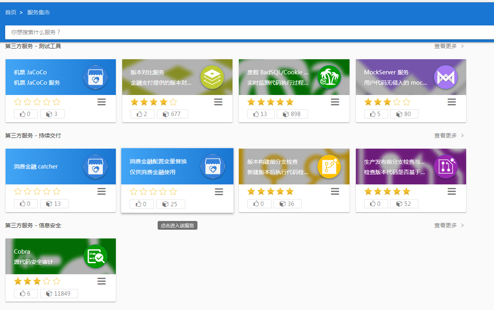
携程的服务集市
自定义镜像发布
用户自定义环境脚本、平台化环境选项与服务集市，这两种方式有一个共同的缺点：自定义的部分都需要插到 Dockerfile 中，因此每次打镜像时都需要运行一次。 这对一些比较快的操作，没有问题，但如果需要安装很多软件，甚至需要编译一些软件时，每次发布都重复运行一次的效率就会非常低下。
为此，我们提供了用户自定义镜像的功能，该功能分为自定义 Base 镜像和完全自定义镜像发布两种。
- 自定义 Base 镜像
自定义 Base 镜像，就是如果基础镜像无法满足用户需求，并且自定义的部分非常重，运行比较久，我们就会建议用户使用自定义的 Base 镜像。但是，这个自定义的 Base 镜像，必须基于官方提供的 Base 镜像，因为很多工具和功能都是基于官方 Base 镜像的。
虽然 Base 镜像是自定义的，但是应用还是标准的应用，因此发布方式和普通的发布方式没有区别。只是解决了自定义环境脚本与平台化环境选项的运行速度问题，反映到实际的 Dockerfile 上，就只是 FROM 指令的指向改变了，变成了用户自定义的 Base 镜像地址。
- 完全自定义镜像发布
但是，用户的需求是永无止境的。比如，特殊启动方式的应用，自定义 Base 镜像就无法解决。
原则上来说，我不建议使用一些非标准的应用，因为这是不可控的，对生产环境非常危险。但是 Docker 的镜像是如此方便，用户如果只是想在测试环境中使用一些测试工具，虽然这个工具来自于社区，也不是标准的应用，但我们也没有理由全部拒绝。否则，用户很可能会以虚拟机上可以安装任何工具为由，要求退回到虚拟机时代。
但是，这样的退化怎么能被允许呢！
因此，一定要支持完全自定义镜像发布，也就是说用户可以发布任何镜像，只要这个镜像能够跑起来。对私有云来说，这应该是能接受的最大化的自由了。
对于完全自定义发布我们使用 Docker 多阶段构建（multi-stage build），也就是说用户可以将构建代码和构建镜像合并成一个步骤，在同一个 Dockerfile 中完成。
镜像安全合规检查
满足了用户对镜像的个性化需求，也就意味着会引入不可控因素，因此对镜像的安全合规检查也就变得尤为重要了。我们必须通过合规检查，来确认用户是否在容器里做了危险的事情。
只有这样，用户个性化的自由，才不会损害整个环境。毕竟，有克制的自由才是真正的自由。
**对自定义镜像，首先必须保证它是基于公司官方 Base 镜像的，这是携程最不可动摇的底线。**在其他情况下，就算真的不继承公司官方 Base 镜像，建议也必须要满足 Base 镜像的一些强制性规定，比如应用进程不能是 root 等类似的安全规范。
关于自定义镜像是否继承了公司官方镜像，我们采取的方法是对比镜像 Layer，即自定义镜像的 Layer 中必须包含官方 Base 镜像的 Layer。
但是，对比 Layer 也不是最靠谱的方式，因为用户虽然继承了 Base 镜像，但还是有可能在用户创建的上层 Layer 中破坏镜像结构。目前，Docker 的部署流程中，还有许多潜在漏洞，有可能让一些有企图的人有机可乘，发起攻击。
因此，我们需要一些强制手段来确保镜像的安全，好的安全实践意味着要对可能出现的事故未雨绸缪 。
目前，市面上有很多工具可以为 Docker 提供安全合规检查，如 CoreOS Clair，Docker Security Scanning，Drydock 等等。
在安全合规检查方面，携程的方案是 Harbor 与 CoreOS Clair 结合使用：当构建系统 Push 一个新的镜像或者用户 Push 一个自定义镜像之后，Harbor 会自动触发 CoreOS Clair 进行镜像安全扫描。Clair 会对每个容器 Layer 进行扫描，并且对那些可能成为威胁的漏洞发出预警。
漏洞分严重级别，对于一些非破坏性的漏洞，我们是允许发布的。检查的依据是 Common Vulnerabilities and Exposures 数据库 (常见的漏洞和风险数据库，简称 CVE)，以及 Red Hat、Ubuntu 、Debian 类似的数据库。
这些数据库中，包含了一些常见的软件漏洞检查。比如， libcurl 7.29.0-25.el7.centos 存在如下漏洞：
The curl packages provide the libcurl library and the curl utility for downloading files from servers using various protocols, including HTTP, FTP, and LDAP. Security Fix(es): * Multiple integer overflow flaws leading to heap-based buffer overflows were found in the way curl handled escaping and unescaping of data. An attacker could potentially use these flaws to crash an application using libcurl by sending a specially crafted input to the affected libcurl functions. (CVE-2016-7167) Additional Changes: For detailed information on changes in this release, see the Red Hat Enterprise Linux 7.4 Release Notes linked from the References section.
注：攻击者可以利用 libcurl 缓冲区溢出的漏洞，在应用的上下文中执行任意代码。
Clair 是一种静态检查，但对于动态的情况就显得无能为力了。所以，对于镜像的安全规则我还总结了如下的一些基本建议：
- 基础镜像来自于 Docker 官方认证的，并做好签名检查；
- 不使用 root 启动应用进程；
- 不在镜像保存密码，Token 之类的敏感信息；
- 不使用 --privileged 参数标记使用特权容器；
- 安全的 Linux 内核、内核补丁。如 SELinux，AppArmor，GRSEC 等。
这样能使你的镜像更加安全。
总结与实践
在这篇文章中，我分享了携程满足用户对镜像个性化需求的三种方式：
- 用户自定义环境脚本，通过 build-env.sh 和 image-env.sh 两个文件可以在构建的两个阶段改变镜像的内容；
- 平台环境选项与服务集市，利用这两个自建系统，可以将个性化的内容进行抽象，以达到快速复用，和高度封装的作用；
- 自定义镜像，是彻底解决镜像个性化的方法，但也要注意符合安全和合规的基本原则。
关于对镜像的安全合规检查，携程采用的方案是 Harbor 与 CoreOS Clair 结合使用。除此之外，我还给出了在实践过程中总结的 5 条合规检查的基本建议，希望这些实践可以帮到你。
除了 Clair 进行 CVE 扫描之外，还有其他一些关于镜像安全的工具也可以从其他方面进行检查，你也可以去尝试一下。
19 发布是持续交付的最后一公里
你好，我是王潇俊。我今天分享的主题是：发布是持续交付的最后一公里。
在开始我今天的分享之前，我们先来搞清楚一个问题：部署和发布是不是一回事儿？
有一些观点认为，部署和发布是有区别的，前者是一个技术范畴，而后者则是一种业务决策。这样的理解应该说是正确的。应用被部署，并不代表就是发布了，比如旁路运行（dark launch）方式，对于客户端产品更是如此的。
但对互联网端的产品来说，这个概念就比较模糊了，所以从英文上来看，我们通常既不用 deploy 这个词，也不用 release 这个词，而是使用 rollout 这个词。所以，从用词的选择上，我们就可以知道，发布是一个慢慢滚动向前、逐步生效的过程。
因此，我在《发布及监控》系列文章中提到的“发布”，均泛指 rollout 这样的过程。
发布，头疼的最后一步
无论是为新需求添加的代码，还是静态配置的变更，线上应用的任何变动都要经过发布这道工序才能最终落地，完成交付。通常，发布意味着应用重启、服务中断，这显然不符合如今系统高可用的需求。
同时，软件工程和经验也告诉我们，世界上不存在没有 Bug 的代码，即便经过详尽细致地测试，线下也很难百分之一百地复制线上的环境、依赖、流量，更难穷举千变万化的用户行为组合。
于是，发布变更，在许多时候是一件被标记为“高风险系数”的工作，工程师和测试人员经常在深夜搞得筋疲力尽，甚至焦头烂额。
进入持续交付的时代后，这个痛点只会更加突显，因为持续交付意味着持续发布。例如，在测试环境小时级的持续集成场景中，如果没有办法将发布过程流程化、自动化，显然会频繁打断最终的交付过程，大幅降低开发测试效率。
好在上帝创造了一个问题，一定会留下一套解决方案，更多的时候是许多套，我们的目标就是找到它，然后实现最佳实践。
发布的需求
你不妨先问自己一个问题，作为开发人员，或者其他研发角色，你理想中的发布是什么样的呢？
答案当然是：够快够傻瓜。最好点一下鼠标，就立刻能看到线上的变更，整个体验跟本地开发环境调试毫无区别。
更加贪心的同学甚至希望连点击鼠标都不用，而是每小时、每天、甚至每 commit 自动发布，希望系统神奇地将自己从 SSH 和乱七八糟的线上环境中解放出来。
另一方面，从运维的角度来讲，线上系统的稳定性和可用性则是第一考量。运维上线变更前，首先会思考如果这中间出了什么岔子该如何应对，找不到问题时能否快速回滚到之前的状态，整个过程如何最小限度地减少服务的宕机时间。对他们而言，完美的方案就像是能够稳如泰山地给飞行中的飞机更换引擎。
因此，我们想要的应该是：一个易用、快速、稳定、容错力强，必要时有能力迅速回滚的发布系统。
什么是好的发布流程？
好的系统依赖好的设计，而好的工作流方案可以显著减少需要考虑的问题集，有助于创造出高健壮性的系统。对于发布系统，单机部署方案和集群工作流同样重要。
第一，把大象放进冰箱分几步？
单机部署这件事说复杂很复杂，说简单也很简单。
复杂在于，不同技术栈的部署方式千差万别，脚本语言 PHP 和需要编译的 Golang 的上线步骤差很多；同样是 Java，使用 Tomcat 和 Netty 的命令也完全不一样。
简单在于，发布过程高度抽象后其实就三个步骤：
- 在目标机器上执行命令停掉运行中的服务；
- 把提前准备好的变更产物传上机器覆盖原来的目录；
- 运行命令把服务再跑起来。
但只是按照这三步走，你很容易就能设想到一些反例场景：服务虽然停止，但新的请求还在进入，这些请求全部返回 503 错误；或者，假如有 Bug 或者预料之外的问题，服务根本起不来，停服时间就不可预知了。
更糟糕的是，假如此时情况紧急，我们想回滚到之前的状态，回滚时就会发现，由于之前的目录被覆盖了，基本回不去了。
第二，靠谱的单机部署
那么，比较完善的发布变更流程应该是怎样的呢？在我看来，可以抽象成五步：
- 下载新的版本，不执行覆盖；
- 通知上游调用方，自己现在为暂停服务状态；
- 运行命令 load 变更重启服务；
- 验证服务的健康状况；
- 通知上游调用方，自己服务恢复正常。
假设我们实现了一个程序，简单地顺序执行上面的算法，让我们一起来检验一下这套程序是否能满足发布的需求：快速、易用、稳定、容错、回滚顺滑。
- 易用：执行脚本就好，填入参数，一键执行。
- 快速：自动化肯定比手工快，并且有提升空间。比如，因为有版本的概念，我们可以跳过相同版本的部署，或是某些步骤。
- 稳定：因为这个程序逻辑比较简单，而且执行步骤并不多，没有交叉和并行，所以稳定性也没什么大的挑战。
- 容错性强：表现一般，脚本碰到异常状况只能停下来，但因为版本间是隔离的，不至于弄坏老的服务，通过人工介入仍能恢复。
- 回滚顺滑：因为每个版本都是完整的可执行产物，所以回滚可以视作使用旧版本重新做一次发布。甚至我们可以在目标机器上缓存旧版本产物，实现超快速回滚。
通过这个程序的简单执行过程，我们可以看到这套流程的简单实现，基本满足了我们对发布的需求。而且，可以通过添加更复杂的控制流，获得更大的提升空间。
我在这里提到的三个重要概念：版本、通知调用方、验证健康（又被称之为点火），可以说是实现目标的基石。我会在后续章节，详细介绍版本、通知调用方、验证健康这三方面的实现方式和取舍。
第三，扩展到集群
如今应用架构基本告别了单点世界，面向集群的发布带来了更高维度的问题。当发布的目标是一组机器而不是一台机器时，主要问题就变成了如何协调整个过程。
比如，追踪、同步一组机器目前发布进行到了哪一步，编排集群的发布命令就成为了更核心功能。好消息是，集群提供了新的、更易行的方法提高系统的发布时稳定性，其中最有用的一项被称为灰度发布。
灰度发布是指，渐进式地更新每台机器运行的版本，一段时期内集群内运行着多个不同的版本，同一个 API 在不同机器上返回的结果很可能不同。 虽然灰度发布涉及到复杂的异步控制流，但这种模式相比简单粗暴的“一波流”显然要安全得多。
不仅如此，当对灰度发布的进度有很高的控制能力时，事实上这种方式可以提供 A/B 测试可能性。 比如，你可以说，将 100 台机器分成 4 批，每天 25 台发布至新的版本，并逐步观察新版本的效果。
其实，集群层面的设计，某种程度上是对单机部署理念的重复，只不过是在更高的维度上又实现了一遍。 例如，单机部署里重启服务线程堆逐批停止实现，与集群层面的分批发布理念，有异曲同工之妙。
几种常见的灰度方式
灰度发布中最头疼的是如何保持服务的向后兼容性，发现苗头不对后如何快速切回老的服务。这在微服务场景中，大量服务相互依赖，A 回滚需要 B 也回滚，或是 A 的新 API 测试需要 B 的新 API 时十分头疼。为了解决这些问题，业界基于不同的服务治理状况，提出了不同的灰度理念。
接下来，我将分别介绍蓝绿发布、滚动发布和金丝雀发布，以及携程在发布系统上的实践。
-
蓝绿发布
，是先增加一套新的集群，发布新版本到这批新机器，并进行验证，新版本服务器并不接入外部流量。此时旧版本集群保持原有状态，发布和验证过程中老版本所在的服务器仍照常服务。验证通过后，流控处理把流量引入新服务器，待全部流量切换完成，等待一段时间没有异常的话，老版本服务器下线。
- 这种发布方法需要额外的服务器集群支持，对于负载高的核心应用机器需求可观，实现难度巨大且成本较高。
- 蓝绿发布的好处是所有服务都使用这种方式时，实际上创造了蓝绿两套环境，隔离性最好、最可控，回滚切换几乎没有成本。
-
滚动发布，是不添加新机器，从同样的集群服务器中挑选一批，停止上面的服务，并更新为新版本，进行验证，验证完毕后接入流量。重复此步骤，一批一批地更新集群内的所有机器，直到遍历完所有机器。 这种滚动更新的方法比蓝绿发布节省资源，但发布过程中同时会有两个版本对外提供服务，无论是对自身或是调用者都有较高的兼容性要求，需要团队间的合作妥协。但这类问题相对容易解决，实际中往往会通过功能开关等方式来解决。
-
金丝雀发布，从集群中挑选特定服务器或一小批符合要求的特征用户，对其进行版本更新及验证，随后逐步更新剩余服务器。这种方式，比较符合携程对灰度发布的预期，但可能需要精细的流控和数据的支持，同样有版本兼容的需求。
结合实际情况，携程最终选择的方式是：综合使用滚动发布和金丝雀发布。 首先允许对一个较大的应用集群，特别是跨 IDC 的应用集群，按自定义规则进行切分，形成较固定的发布单元。基于这种设计，我们开发了携程开源灰度发布系统，并命名为 Tars 。其开源地址为：https://github.com/ctripcorp/tars
关于携程灰度发布的设计和实施，以及如何把灰度发布的理念贯穿到你的持续交付体系中，我会在后面的第 22 篇文章《发布系统架构功能设计实例》中详细介绍。
其他考量
处于持续交付最后一环的发布，实际上是非常个性化的，与实际实现相关，甚至是 case by case 的。因为每个上游系统的少许变更和设计瑕疵，层层下压最终都会影响到发布系统。这不但要求发布系统了解链条上绝大多数环节，知道发生了什么以便 debug，甚至时常还需要为其“兜底”。
除此以外，软件工程中没有“银弹”，适用于所有场景的系统设计是不存在的。上面的设计有许多值得探讨的地方，比如发布时到底是使用增量、还是全量，单机切断流量使用哪种手段，集群发布的控制流设计，都是值得探讨的主题。这些内容，我将会在后面的文章中详细展开。
总结
作为《发布与监控》系列文章的开篇，我介绍了发布在持续交付中的位置和需求，并提出了一个可靠的单机部署流程的概念，即我们想要的应该是：一个易用、快速、稳定、容错力强，必要时有能力迅速回滚的发布系统。
明确了发布的需求后，我推演了集群发布中灰度发布的概念和常用方式，包括蓝绿发布、滚动发布和金丝雀发布，并分析了这三种发布方式，给出了携程选择的方案，希望可以帮你选择适合自己团队的发布策略。
思考题
你能详细地整理和描述出你的应用的单机部署过程吗？
20 Immutable！任何变更都需要发布
在专栏的第 13 讲[《容器技术真的是环境管理的救星吗？》]中，我们初步结识了不可变基础设施（Immutable Infrastructure），这里我们再一起回顾一下：
在这种模式中，任何基础设施的实例（包括服务器、容器等各种软硬件）一旦创建之后便成为一种只读状态，不可对其进行任何更改。如果需要修改或升级某些实例，唯一的方式就是创建一批新的实例来替换它。
这种思想与不可变对象的概念完全相同。
为什么我会说，不可变基础设施的思想对持续交付的影响非常深远呢？因为不可变的思想正是解决了持续交付一直没有解决的一个难题，即环境、顺序、配置这些基础设施在测试环节和生产环节的不一致性所带来的问题。
那么，今天我就来详细分析一下不可变基础设施的由来、影响，以及如何实现的相关内容。
从持续交付中来
如果你是一个程序员，其实很容易理解不可变基础设施的概念，以及其实现的方式。因为它就和 Java 中的不可变类完全相同：类实例一旦创建，就无法变更，而可以变更的是指向实例的引用。
其实早在 2011 年出版的《持续交付：发布可靠软件的系统方法》一书中，就曾提到“蓝绿发布”的概念：你需要更新一组实例，但并不是直接在原有实例上进行变更，而是重新启动一批对等的实例，在新实例上更新，然后再用新实例替换老实例。此时老实例仍旧存在，以便回滚。
其实，这完全就是对不可变类的物理实现，也就是一个典型的不可变模型。
这里，我抛出了“不可变模型”的概念，那么我们再垂直一些，再来看看由不可变模型转化到不可变基础设施，又会有哪些具体的要求。
综合起来一句话，就是：
对任何的包、配置文件、软件应用和数据，都不做 CRUD（创建、替换、更新、删除）操作。
也就是说，对于已经存在的基础设施，不再在其上创造任何新的事物。根据不可变模型，推导得出取而代之的方法则是：
- 构建一个新的基础设施；
- 测试新的基础设施是否符合需求；
- 将引用指向这个新的基础设施；
- 保留原有基础设施以备回滚。
虽然不可变模型的设想很好，但其中也会有一些特殊情况存在。比如，涉及数据的部分，特别是数据库，你不可能每次都重建一个数据库实例来达到“不可变”的目的。为什么呢？其根本原因是，数据库是有状态的。所以，从这里可以清楚地看到，不可变（Immutable）的前提是无状态。
不可变基础设施的神话
说到为什么会需要“不可变基础设施”这种方法论，还是挺有意思的。
首先是一个假设：如何保证两个实例的行为完全一致？最有效的方式是，在两个实例上以同样的顺序执行同样的变更。
然后，在 2002 年，Steve Traugott 写了一篇名为《为什么顺序很重要》（Why Order Matters）的论文，虽然论文本身涉及了很多数学推理，有些难懂，但它却很好地解释了为什么大规模基础设施是不可变的，并证明了不可变的价值所在。
第一，一致是最终的目标
在论文中，作者讨论了发散、收敛和一致三种模型。
- 发散， 是我们通常会碰到的基础设施的管理模型。在这个模型中，基础设施随着我们的想法而变化，也就是我们想更新什么就更新什么，最终就会形成一种发散的形态。
《Why Order Matters》论文中的发散模型
- 收敛， 是 Puppet 和 Chef 遵循的设计原则。随着时间推移，目标和实际需求汇聚，达到一致。通过这个模型，我们有了可扩展的基础设施的基础和实现。
《Why Order Matters》论文中的收敛模型
- 一致， 指的是整个基础设施始终把每一天当成是与第一天相同的模型。根据我们之前的假设，达到这一目的的关键点就在于，有序地正确执行从真正的第一天开始的所有变更。
《Why Order Matters》论文中的一致模型
那么你就会有疑问，为什么会有一致模型？通过发散和收敛这两个模型，没办法解决实例完全一致的问题吗？答案是，确实不行。
即使我们知道发散是一种不良状态，我们可以通过定期的收敛，将基础设施不断地趋向所期望的目标。但其中也会碰到很多问题。
- 顺序问题：你只有完全保证顺序的正确性，结果才会正确。但是，怎么保证顺序呢？特别是执行结果与你的预期不一致时，比如发生错误时，就会多出一些其他的处理步骤，直接影响原有的既定顺序。这也是为什么顺序那么重要的原因。
- 频率问题：假设你可以通过一些方法保证顺序，在面对大型基础设施时，应该如何制定收敛频率呢？最简单的回答，自然是越频繁越好。 那么你就会陷入巨大的陷阱中，你会发现完全无法支撑并发的收敛工作。而且收敛工作与设施的规模成正比，直接否定了系统的可扩展性。
- 蝴蝶效应：你始终无法确定一个绝对的基准点，认为是系统的初始或者当前应该有的状态。因为你始终还在收敛中，只是无限趋近。因此任何小偏差，都会引起将来重大的、不可预知的问题。这就是蝴蝶效应。
但是，容器却通过分层镜像与镜像发布技术，解决了上面的顺序问题、频率问题和蝴蝶效应。所以说，容器是一个惊人的发明，它使得每一次变更都成为了一次发布，而每一次发布都成为了系统的重新构建， 从而使得“一致”模型的目标能够达成。
第二，Immutable 的衍生
当然除了容器之外，Immutable 理念还有许多不同的衍生。比如，黄金映像、VDI（虚拟桌面）、Phoenix Server 和基础设施即代码。
- 黄金映像，指的是将绝大部分不变的基础设施（包括操作系统、大多数软件、基本配置等），包含在映像内，只留很少一部分变更通过脚本执行解决；
- VDI（虚拟桌面），指的是操作系统运行在后端的服务器上，用户只使用属于他自己的虚拟桌面，无法改变后端的系统内容；
- Phoenix Server，指的是完全被破坏的服务器，能够从灰烬中自动进行恢复；
- 基础设施即代码，指的是把基础设施的构建以代码的方式组织起来，从而通过运行代码可以完全构建出你想要的全部基础设施。
这些衍生技术都遵循 Immutable 的理念，曾在不同的场景下，比如快速灾备、快速恢复系统、增强系统健壮性等方面发挥了巨大的作用，从而收益。
但是，随着技术的发展，这些衍生技术不再能够适应我们对速度和扩展性的要求，加之容器技术的蓬勃发展，使得这一系列的难题都可以通过容器技术解决，因此我们已经完全可以把注意力放到容器上了。
回到持续交付中去
虽然我们一起从持续交付中走了出来，了解了不可变基础设施的种种，但最终我们还是要回持续交付中去，去解决构建持续交付平台的问题。那么，接下来我们就一起看看面对容器时代的新形式，持续交付要做哪些变化吧。
“不可变”模型的好处，已经显而易见。而对于容器时代的持续交付，也显然已经从原来单纯交付可运行软件的范畴，扩展为连带基础环境一起交付了，所以我们需要为此做好准备。
上文中，我已经总结了一句话，每一次变更都是一次发布，而每一次发布都是系统重新构建，更形象点说，每一次发布都是一个独立镜像的启动。所有持续交付的变化也都可以表现为这样一句话，那具体怎么理解呢。
首先，任何的变更，包括代码的、配置的、环境的，甚至是 CPU、内存、磁盘的大小变化，都需要制作成独立版本的镜像。
其次，变更的镜像可以提前制作，但必须通过发布才能生效。 这有 2 个好处：
- 重新生成新的实例进行生效，完全遵循不可变模型的做法；
- 发布内容既包含代码也包含基础设施，更有利于 DevOps 的实施。
再次，一组运行中的同一个镜像的实例，因为“不可变”的原因，其表现和实质都是完全一样的，所以不再需要关心顺序的问题。因为任何一个都等价，所以也就没有发布或替换的先后问题了。
**最后，根据“一致”模型的要求，我们需要记录系统从第一天发展到今天的所有有序变更。**对 Docker 而言，不仅要能向上追溯层层 Base 镜像的情况，更建议将系统和软件的配置以 Dockerfile 的方式进行处理，以明确整个过程的顺序。
这些理念，不仅传统的持续交付中没有涉及，甚至有些还与我们日常的理解和习惯有所不同。比如，你通常认为一个集群中的不同服务器的配置是可以不一样的，但在“不可变”模型中，它是不被允许的。
当然，我在之前的[《容器技术真的是环境管理的救星吗？》]一文中也提到过，Immutable 对持续交付的环境管理来说确实有点违反人性。所以，容器对持续交付的影响，可以说是利弊都有吧。
也因此，持续交付中遇到“不可变”，更应该去理解它的概念和用意，合理发挥其优势。
总结
首先，我分享了“不可变”模型的概念，以及它的由来，介绍了三个非常有价值的模型：发散模型、收敛模型和一致模型。
其次，我解释了为什么“不可变”如此重要的原因，也就是重复发散到收敛过程无法解决的三个问题：顺序问题、频率问题和蝴蝶效应。
最后，我针对“不可变”及容器，提出了持续交付面对的新问题，即：每一次变更都是一次发布，每一次发布都是一个独立的镜像的启动。
思考题
你所在的公司有没有什么地方可以体现出“不可变”思想？如果没有，是什么原因呢？
21 发布系统一定要注意用户体验
你好，我是王潇俊。我今天分享的主题是：发布系统一定要注意用户体验。
我在第 19 篇文章《发布是持续交付的最后一公里》中，介绍了蓝绿发布、滚动发布和金丝雀发布这三种灰度发布方式，也分享了携程根据自身情况综合使用滚动发布和金丝雀发布的方式，构建了自己的灰度发布系统 Tars。
但是，了解了灰度发布的知识，甚至是看过了别家的灰度发布系统，但并不一定能解决如何将这些灰度发布的理念贯彻到你自己的持续交付体系的问题。
其实，解决这个问题最好的方式，就是构建一套发布系统来落地灰度发布。这也是我今天这篇文章，以及后续两篇文章（《发布系统的核心架构和功能设计》《业务系统架构对发布的影响》）要重点解决的问题。
如果有一款发布系统，既能完成持续交付的目标，又能提升研发同学的工作效率，岂不美哉。那么，为了我们美好的目标开始努力吧。今天我就先从用户体验的角度，以携程发布系统为例，来和你聊聊如何落地发布系统。
1 张页面展示发布信息
如果要说什么样的设计才能让用户体验达到完美，那肯定是众说纷纭。从不同的视角去看，都会得到不同的答案。那么，对发布系统来说，我们应该怎么看待这个问题呢？
我们不妨做个类比，应用的发布和火箭发射其实有点相像。
平时我们看火箭发射时，往往会看到一个巨大的屏幕，这个巨大的屏幕汇集了火箭发射当时的各种信息，比如实时视频、各种数据图表、周围的情况，等等。
所有相关人员的注意力都会优先集中在这个大屏幕上，只有发生异常时，才会由具体的负责人在自己的岗位上进行处理。
这也就说明一个很重要的问题，对于发布这件事儿来说，首先应该有 1 张页面，且仅有 1 张页面，能够展示发布当时的绝大多数信息、数据和内容，这个页面既要全面，又要精准。 全面指的是内容清晰完整，精准指的是数据要实时、可靠。
除了以上的要求外，对于实际的需求，还要考虑 2 个时态，即发布中和未发布时，展示的内容应该有所区别。
- 发布中：自然应该展示发布中的内容，包括处理的过程、结果、耗时、当前情况等等。
- 未发布时：应该显示这个应用历史发布的一个过程，也就是整个版本演进的路线图，以及当前各集群、各服务器上具体版本的情况。
所以基于以上考虑，携程的发布系统整体设计就只有一张核心页面，如图 1 所示。因为涉及到安全问题，所以图片处理的有些模糊。
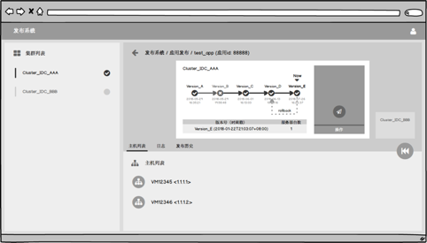
图 1 携程发布系统 - 未发布时
2 个操作按钮简化使用
发布系统是一个逻辑比较复杂的系统。而且用户在使用时，往往会伴随一定的心理压力，毕竟每次发布都有造成故障的可能。所以，我见过有些公司，要求发布系统的使用者要经过严格的培训：他们需要熟练地掌握整个系统的使用，知晓每个按钮按下去的后果。
但，这显然不是持续交付想要达到的目标。
与 DevOps 的理念一样，我们更希望看到的场景是：谁开发，谁运行。也就是说，我们的目标是，每个开发者都能通过这套系统去发布和运行自己的代码。
这也就决定了，如果发布系统的用户体验做得很复杂、功能按钮非常多的话，就会增加系统的使用难度，背离我们实施持续交付的初衷。
所以，携程在思考发布系统的用户体验设计时，就提出了这样一个目标：页面上除了“回滚”按钮常在外，最多同时展示 2 个操作按钮。这样，用户的选择就会变得非常容易，要么左，要么右，总能找到适合自己的。
最终，用户在页面上可能会看到的同时出现的按钮组合有以下四种情况：
- 开始发布，1 个按钮；
- 中断发布，1 个按钮；
- 中断或重试发布，2 个按钮，发生在有局部错误的情况下；
- 中断或继续发布，2 个按钮，发生在发布被刹车时。
关于如何实现这样的需求，我会在下一次分享《发布系统的核心架构和功能设计》时，着重介绍。
3 种发布结果
对发布系统的用户来说，他们最关心的无疑是发布结果。所以，发布结果的显示，也要力求简单，降低使用难度。
因为，结果的数量将直接决定用户操作和状态流转的复杂度。结果越多，程序要处理的逻辑也就越多，操作人员需要处理的状况自然也就越多。所以，如果能够对发布状态做足够的抽象和简化，那么整个系统的复杂度就将会得到指数级的简化。
系统不复杂了，用户体验自然也就简单了。这是一个相辅相成的过程。
从最抽象的角度来说，发布系统只需要 3 种结果，即：成功、失败和中断。
- 成功状态：很好理解，即整个发布过程，所有的实例发布都成功；
- 失败状态：只要发布过程中有一个步骤、一个实例失败，则认为整个发布事务失败；
- 中断状态：发布过程中任何时间点都可以允许中断此次发布，中断后事务结束。
特别需要说明的是，部分失败和全部失败在发布系统的设计上没有分别，这也是出于事务完整性的考虑，即优先完成整个事务的发布。
4 类操作选择
将发布结果高度概括为成功、失败和中断后，配合这三种状态，我们可以进一步地定义出最精简的 4 种用户操作行为，即开始发布、停止发布、发布回退和发布重试。
- 开始发布，指的是用户操作开始发布时，需要选择版本、发布集群、发布参数，配置提交后，即可立即开始发布。
- 停止发布，指的是发布过程中如果遇到了异常情况，用户可以随时停止发布，发布状态也将停留在操作“停止发布”的那一刻。
- 发布回退，指的是如果需要回退版本，用户可以在任意时刻操作“发布回退”，回退到历史上最近一次发布成功的版本。
- 发布重试，指的是在发布的过程中，因为种种原因导致一些机器发布失败后，用户可以在整个事务发布结束后，尝试重新发布失败的机器，直到发布完成。
5 个发布步骤
在讲解了一个发布事务相关的操作和步骤，包括开始发布，停止发布，发布回退和发布重试之后，接下来我和你聊聊单个实例具体的发布过程。
就像我在第 19 讲[《发布是持续交付的最后一公里》]中总结的“靠谱的单机部署”流程一样，单个实例的发布过程，也可以分为 5 个步骤：
- markdown：为了减少应用发布时对用户的影响，所以在一个实例发布前，都会做拉出集群的操作，这样新的流量就不会再继续进入了。
- download：这就是根据版本号下载代码包的过程；
- install：在这个过程中，会完成停止服务、替换代码、重启服务这些操作；
- verify：除了必要的启动预检外，这一步还包括了预热过程；
- markup：把实例拉回集群，重新接收流量和请求。
在这 5 个步骤中，第四步 verify 比较特殊。因为包含了预热这个耗时通常比较长的过程（有时甚至需要几十分钟）。所以，这个步骤的处理必须是异步的。同时，还需要用户在发布配置时，设置一个超时时间，以便防呆处理，即在异步处理长时间无返回时，能够继续处理。
集群中的每个实例都会分批次，逐个按顺序去完成这 5 个步骤。这 5 个步骤本身是串行的，任何一步出错，该实例的操作都会立即停止。
6 大页面主要内容
最后，再回过头来看一下，在分享的一开始，我提出了一个设想，要做到出色的用户体验，需要将发布的主要信息，呈现在唯一的一张页面上。那么，这张页面涉及到的主要内容到底有什么呢？
根据携程的实践，我提炼了这一张页面要展示的最主要的 6 部分内容。
第一，集群。集群是发布的标准单元。如图 2 所示，用户可以选择左侧的集群，在界面右侧查看当前运行的版本、历史发布情况、操作发布。
第二，实例。实例是集群的成员，通常情况下，一个集群会有多个实例承载流量。在界面上，用户可以查看实例的基本信息，了解实例的 IP、部署状态、运行状态等。用户能够看到发布时的状态与进度，这些信息可以帮助用户更好地控制发布。
第三，发布日志。在发布中和发布完成后，用户都可以通过查询发布日志了解发布时系统运行的日志，包括带有时间戳的执行日志和各种提示与报错信息，方便后续排查问题。
第四，发布历史。发布历史对发布系统来说尤为重要。用户可以通过发布历史了解集群过去所做的变更，并且可以清晰地了解集群回退时将会回退到哪一天发布的哪个版本。
第五，发布批次。由于集群中有很多实例，如何有序地执行发布，就是比较重要的事情。设定发布批次，可以让集群的发布分批次进行，避免问题版本上线后一下子影响所有的流量。每个批次中的实例采用并行处理的方式，而多个批次间则采用串行处理的方式。
第六，发布操作。所有的发布操作按钮都会集中在这个区域，以便用户快速定位。
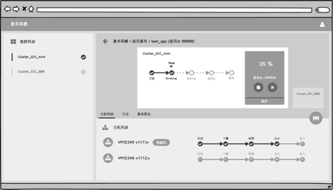
图 2 携程发布系统 - 发布时
上面这 6 大部分内容，就是我在设计携程的发布系统时抽象出的最主要的内容。当然，在最初设计时，我们也考虑过将其他内容也加进来，比如监控内容。但，最终我们放弃了，因为这些都不是发布系统最关注的信息，而且当发布速度达到分钟级时，肉眼也已经无法解决监控或预警的问题了。
所以，在考虑灰度发布系统的用户体验时，我建议你可以参考以下三个原则：
- 信息要全面直观，并且聚合，而不要分散；
- 操作要简单直接，不要让用户做过多思考；
- 步骤与状态要清晰，减少模糊的描述。
总结
一路看下来，不知道你是否已经发现，整篇文章的 6 个章节，恰好能用 1~6 这六个数字串接提炼，我也正是希望这种形式能够加深你对发布系统产品设计的概念理解。这里，我们再一起简单回顾一下吧。
1 张页面展示发布信息，且仅有 1 张页面，展示发布当时的绝大多数信息、数据和内容，这个页面既要全面，又要精准。
2 个操作按钮简化使用，即页面上除了“回滚”按钮常在外，最多同时展示 2 个操作按钮。目的是要降低发布系统的使用难度，做到“谁开发，谁运行”。
3 种发布结果，即成功、失败和中断状态，目的是简单、明了地显示用户最关心的发布结果。
4 类操作选择，包括开始发布、停止发布、发布回退、发布重试，目的是使状态机清晰明了。
5 个发布步骤，即 markdown、download、install、verify 和 markup。这里需要注意到的是，verify 这步包含了预热，由于耗时往往比较长，一般采用异步的处理方式。
6 大页面主要内容，包括集群、实例、发布日志、发布历史、发布批次、发布操作，来统一、简洁而又详细呈现发布中和未发布时的各种信息。
思考题
如果你是一个灰度发布系统的用户，你最关心的信息都有哪些？是否有我在这篇文章中没有提到的内容，你又将如何处理这些内容呢？
22 发布系统的核心架构和功能设计
你好，我是王潇俊。我今天分享的主题是：发布系统的核心架构和功能设计。
我在分享[《发布系统一定要注意用户体验》]这个主题时，介绍了从用户体验的角度出发，设计一套发布系统的设计理念，以及具体实现。但是，用户体验设计得再好，后端系统无法支持，也就如同巧妇难为无米之炊。
截止到目前，携程一共有 7000 多个应用，平均每周生产发布 8000 多次，而测试环境的发布平均每周要 40000 多次，如果发布系统没有一个清晰的架构设计，完成这样艰巨的任务是难以想象的。
所以，今天我就从核心架构和功能设计的角度，和你聊聊如何设计一套发布系统。
发布系统架构
作为整个持续交付体系中极为重要的一个环节，应用的发布是提升交付效率的关键。高效的发布系统架构应该是清晰的、健壮的、低耦合的，从而达到在最糟糕的情况下也能运作的目的。
携程在发布系统这件事上也不是一蹴而就，在经历了各种尝试和努力后，最终设计出了一套分布式、高可用、易扩展的发布系统，其系统架构如图 1 所示。

图 1 携程发布系统的系统架构
Roll Engine，即发布引擎，主要负责创建发布批次，按批次粒度实施部署策略，通过异步方式调用 Salt Master 服务，再分发到各个 Agent 节点上执行部署任务。真正的单机部署脚本会根据不同的应用或机型进行分发和定制。而 Controller ，则作为接收外部指令和读写数据的控制器。当然，对于一些对外的通知事务，发布系统会采用消息机制向外广播。
发布系统需要将发布相关的元数据信息（主要包括 App 应用、Group 集群、Server 服务器等），从外部 CMDB 资产数据库落地到本地数据库，作为一层本地缓存。
数据更新的方式，主要有两种，一种是在每次发布前更新，另一种是通过消费通知消息进行更新，以保证发布元数据的准确性。
根据携程发布系统结构设计的经验，我总结了几个需要注意的点：
- 每台服务实例上的发布脚本一旦产生则不再修改，以达到不可变模型的要求；
- 发布引擎和 Salt Master 之间采用异步通信，但为增强系统健壮性，要有同步轮询的备案；
- 面对频繁的信息获取，要善用缓存，但同时也一定要慎用缓存，注意发布信息的新鲜度。
发布系统核心模型
发布系统的核心模型主要包括 Group、DeploymentConfig、Deployment、DeploymentBatch，和 DeploymentTarget 这 5 项。
Group，即集群，一组相同应用的实例集合，是发布的最小单元，其概念如图 2 所示。

图 2 Group 概念示意图
同时，Group 的属性非常重要，包括 Site 站点、Path 虚拟路径、docBase 物理路径、Port 应用端口、HealthCheckUrl 健康检测地址等，这些属性都与部署逻辑息息相关。携程之所以这样设计，是因为 group 这个对象直接表示一个应用的一组实例，这样既可以支持单机单应用的部署架构，也可以支持单机多应用的情况。
DeploymentConfig，即发布配置，提供给用户的可修改配置项要通俗易懂，包括：单个批次可拉出上限比、批次间等待时间、应用启动超时时间、是否忽略点火。
Deployment，即一个发布实体，主要包括 Group 集群、DeploymentConfig 发布配置、Package 发布包、发布时间、批次、状态等等信息。
DeploymentBatch，即发布批次，通常发布系统选取一台服务器作为堡垒批次，集群里的其他服务器会按照用户设置的单个批次可拉出上限比划分成多个批次，必须先完成堡垒批次的发布和验证，才能继续其他批次的发布。
DeploymentTarget，即发布目标服务器或实例，它与该应用的 Server 列表中的对象为一对一的关系，包括主机名、IP 地址、发布状态信息。
这里一定要注意，发布系统的对象模型和你所采用的部署架构有很大关系。 比如，携程发布系统的设计中并没有 pool 这个对象，而很多其他企业却采用 pool 实现对实例的管理。又比如，在针对 Kubernetes 时，我们也需要根据它的特性，针对性地处理 Set 对象等等。
发布流程及状态流转
发布系统的主流程大致是：
同一发布批次中，目标服务器并行发布；不同发布批次间则串行处理。每台目标服务器在发布流程中的五个阶段包括 Markdown、Download、Install、Verify、Markup。
如图 3 描绘了具体的发布流程。

图 3 携程发布系统的流程
发布过程从技术实现上来说，就是通过状态机控制状态流转，而每个状态都对应一些具体的操作。
那么，我们就一起来看看整个状态流转如何通过状态机进行控制：
首先，借助于 Celery 分布式任务队列的 Chain 函数，发布系统将上述的 Markdown、Download、Install、Verify、Markup 五个阶段定义为一个完整的链式任务工作流，保证一个 Chain 函数里的子任务会依次执行。
**其次，每个子任务执行成功或失败，都会将 DeploymentTarget 设置为对应的发布状态。**例如，堡垒批次中的 DeploymentTarget 执行到 Verify 点火这个任务时，如果点火验证成功，那么 DeploymentTarget 会被置为 VERIFY_SUCCESS（点火成功）的状态，否则置为 VERIFY_FAILURE（点火失败）的状态。
发布过程中，如果有任意一台 DeploymentTarget 发布失败，都会被认为是发布局部失败，允许用户重试发布。因此，重试发布只针对于有失败的服务器批次进行重试，对于该批次中已经发布成功的服务器，发布系统会对比当前运行版本与发布目标版本是否一致，如果一致且点火验证通过的话，则直接跳过。
这里需要注意的是， 堡垒批次不同于其他批次：堡垒批次中 DeploymentTarget 的 Chain 的最后一个子任务是 Verify 点火，而不是 Markup。
再次，点火验证成功，DeploymentTarget 的状态流转到 VERIFY_SUCCESS 后，需要用户在发布系统页面上触发 Baking 操作，即堡垒批次中 DeploymentTarget 的 Markup，此时执行的是一个独立的任务事务，会将堡垒批次中的服务器拉入集群，接入生产流量。也就是说，这部分是由用户触发而非自动拉入。BAKE_SUCCESS 堡垒拉入成功之后，就是其他批次的 RollingOut 事务了，这也是一个独立的任务，需要由用户触发其他批次开始发布的操作。
最后，设置发布批次。
除堡垒批次外，其他的机器会按照用户自主设置的最大拉出比来分批，每个批次间允许用户设置等待时间，或者由用户手动执行启动下个批次发布的操作。从第 3 个批次起，允许用户设置较短的或者不设置等待批次的间隔时间，以提高最后几个批次的速度，即尾单加速，这样可以提高整个发布过程的效率。
携程的发布系统，利用了一个分布式异步任务框架来处理整个发布过程的事务，然后通过状态机来控制这些任务的开始和停止。当然，由于我们使用 Python 语言，所以选择了 Celery 框架，其他语言也有很多成熟的类似框架，也建议你在实施过程中，充分利用这些框架的优势。
刹车机制
为了保证用户体验的顺畅和发布系统的高容错性，除堡垒批次外的每个发布批次均采用了 Quick and Dirty 的发布方式，即不管成功或失败，优先尝试把版本发布完，继续执行下个发布批次，后续再解决个别目标服务器发布失败的问题。
试想在这种发布方式下，我们应该如何避免大面积的发布失败影响业务呢？
于是，我们需要为发布系统提供刹车机制，即在每个批次开始发布任务前，系统会根据用户设置的单个批次可拉出上限比，进行失败率的计算与控制。发布时，一旦达到这个失败率，立即中断当前发布，从而保护 Quick and Dirty 发布方式。
一旦刹车后，发布系统允许用户先执行重试发布操作，如果因为重试批次中的服务器失联或者其他外因导致重试无果，则用户需要终止当前发布，重新设置单个批次可拉出上限比，或者临时将服务器从各个负载均衡设备或访问入口中拉出（与发布拉出为独立的标志位），由此发布系统的分组策略会剔除被拉出的服务器，不再做发布。与此同时，用户可以同步进行失败服务器的下线或者更换操作，而不会阻塞发布。
提升发布速度
从上面的发布过程中，你不难发现影响发布速度的步骤通常是下载和点火。
为了提高下载速度，携程在各个机房搭建了发布包专用的存储系统，实现了类似 CDN 的功能，编译和打包系统在任何一个写入点写入发布包，都会尽快同步到各个 IDC 及各个独立存储中，这样真正发布时，服务器只需从本 IDC 或本网段做下载。
对于点火，携程在框架层面统一提供了点火入口和常规的点火验证方法，收口了所有应用的点火验证规范和标准，容错性和速度都得到大幅提升。
而回滚方面，不再设置堡垒批次，发布系统默认提供了单个批次可拉出上限比为 50% 的配置，即分两个批次执行回滚发布。这样可以追求最快的回滚速度。当然在日常发布过程中，比如扩容发布，也可以不设置堡垒批次，但前提是待发布的版本已经被证明可以正确工作。
在单机部署逻辑上，发布系统在服务器本地保留了多个版本，在回滚发布时，可快速进行目录切换，进而直接省略了下载发布包的过程，最大限度地缩短应用的故障时间，提升回滚速度。
降级机制
对外部系统的服务依赖，例如 LB 负载均衡服务的拉出或拉入调用，发布系统需要具备降级机制，熔断外部系统依赖的能力，一旦发现外部服务不可用，可以及时处理，保证用户的紧急发布需求。
对外部系统的元数据依赖，例如从 CMDB 同步 Group 信息的场景下，发布系统可以使用 Redis 锁合并重复的请求，提高同步数据的吞吐能力，以解决重试并发的问题。另外，由于发布系统做了数据缓存，也就同时具备了一键降级 CMDB 等其他外部系统依赖的能力。
降级机制能够保证在突发异常情况下，发布系统可以解除所有外部依赖，独立完成任何发布应用的任务。也就是说，降级机制可以保证发布系统做到，只有部署包存在，就能恢复服务。
总结
我今天分享的主题就是，从后端系统设计的角度，来看看一套发布系统的核心架构和功能应该如何设计。我以携程目前使用的发布系统为例，从发布系统的架构、核心模型、发布流程及状态流转三个方面，展开了今天的分享。
首先，高效的发布系统架构应该是清晰的、健壮的、低耦合的，携程在经历各种迭代后，采用了以 Protal、Controller、Roll Engine、Salt Scripts 为核心的分层架构。
其次，在设计核心模型时，考虑到部署架构的个性化设计，即要兼容单机单应用，又要兼容单机多应用的问题，携程的发布系统采用了以 Group 和 Deployment 为核心的主要对象模型设计方案。这里你需要注意的是，发布系统的对象模型和你所采用的部署架构有很大关系，所以还是要量体裁衣。
再次，关于发布系统的发布流程，可以通过状态流转控制单机发布的 5 个步骤和发布批次。这部分你需要注意的是，堡垒批次不同于其他批次：堡垒批次中 DeploymentTarget 的 Chain 的最后一个子任务是 Verify 点火，而不是 Markup。
最后，一款出色的发布系统，除了要考虑架构、核心模型，以及发布流程的问题外，还必须同时考虑一些附加问题，比如：
- 为了降低 Quick and Dirty 方式对业务功能的影响，你需要提供发布刹车机制；
- 利用分布式存储、尾单加速、symlink 回滚等方式，可以提升发布速度；
- 必要的降级机制，可以保证发布系统的高可用。
思考题
如果你对携程的 Tars 感兴趣，可以通过https://github.com/ctripcorp/tars获取。你也可以参考开源版本 Tars，迅速搭建一套发布系统，并结合自身的情况看看还需要增加什么设计？
23 业务及系统架构对发布的影响
在分享[《发布系统一定要注意用户体验》]和[《发布系统的核心架构和功能设计》]这两大主题时，我分别从用户体验和架构设计两个方面，和你分享了携程灰度发布系统的一些经验和实践。但是，要做出一个出色的发布系统，仅仅考虑这两方面还不够。
因为发布系统最终要服务的对象是业务应用，而业务应用又和业务、企业的系统架构有紧密的联系，所以要做好一套发布系统，我们还要考虑其要服务的业务及系统架构的需要，并且要善于利用系统架构的优势为发布系统服务。
那么接下来，我们就一起来看看，业务、企业整体的系统架构会给发布系统带来什么影响，发布系统又可以借用它们的哪些架构能力。
单机单应用还是单机多应用？
众所周知，.NET 应用采用的基本都是 Windows + IIS 的部署模式，这是一种典型的单机、单 Web 容器、多应用的部署模式。
在这种模式下，单机多应用的问题主要体现在两个方面：
- 一方面，应用划分的颗粒度可以做到非常细小，往往一个单机上可以部署 20~30 个应用，甚至更多，而且应用与应用间的隔离性较差；
- 另一方面，由于 IIS 的设计问题，不同虚拟目录之间可能存在共用应用程序池的情况，即多个应用运行在同一个进程下，导致任何一个应用的发布都可能对其他的关联应用造成影响。
所以，对发布系统而言，.NET 应用的这种架构简直就是噩梦：发布系统需要重新定义发布单元的含义，并维护每个虚拟目录和对应的发布单元与应用之间的关系。
在携程，我们为了解决这个问题采用的方案是，去除根目录的被继承作用，默认每个虚拟目录就是一个应用，并且每个虚拟目录的应用程序池独立。而每个虚拟目录以应用的名称命名，保证单机上不会发生冲突。
这样，应用与应用之间就解耦了，发布系统的设计也会变得简单很多。
除了上面这种.NET 的单机多应用情况无法改变外，其他所有 Linux 下的应用都可以做到单机单应用。其实，这也正是虚拟化思想最初的设计理念。为什么呢？因为与单机多应用相比，单机单应用更简单直接，更易于理解和维护。
比如，单机单应用不需要考虑分配服务端口的问题，所有的 Web 应用都可以使用同一个统一端口（比如，8080 端口）对外服务。但是，单机多应用的情况下，就要考虑端口分配的问题，这算不算是徒增烦恼呢？
另外，单机单应用在故障排除、配置管理等方面同样具有很多优势。一言以蔽之，简单的才是最好的。
当然，简单直接，也正是发布系统所希望看到的情况。
增量发布还是全量发布？
增量发布还是全量发布，其实是个挺有意思的问题。
在过去网络带宽是瓶颈的年代里，或者面对体量巨大的单体应用时，增量发布可以节省很多计算资源，确实是一个很好的解决方案。甚至现在的移动客户端发布，也还会选择增量发布的技术来快速发布静态资源。
但是，互联网应用的场景下，更多的发布需求来自于发布频率非常高的后台服务。在这样的情况下，增量发布反而会造成不必要的麻烦。
比如，增量发布对回滚非常不友好，你很难确定增量发布前的具体内容是什么。如果你真的要确定这些具体内容的话，就要做全版本的差异记录，获取每个版本和其他版本间的差异，这是一个巨大的笛卡尔积，需要耗费大量的计算资源，简直就是得不偿失。很显然，这是一个不可接受的方案。
反之，全量发布就简单多了，每个代码包只针对一个版本，清晰明了，回滚也非常简单。所以，我的建议是，全量发布是互联网应用发布的最好方式。
如何控制服务的 Markup 和 Markdown？
首先，你需要明确一件事儿，除了发布系统外，还有其他角色会对服务进行 Markup 和 Markdown 操作。比如，运维人员在进行机器检修时，人为的 Markdown 操作。因此，我们需要从发布系统上能够清晰地知晓服务的当前状态，和最后进行的操作。
另外，这里还引入了一个全新的问题：当一个服务被执行 Markdown 操作后，什么系统还能继续处理这个服务，而什么系统则不能继续处理这个服务？
比如，发布系统如果发现服务最后进行的操作是 Markdown，那么还能不能继续发布呢？如果发布，那发布之后需不需要执行 Markup 操作呢？有些情况下，用户希望利用发布来修复服务，因此需要在发布之后执行 Markup；而有些情况下，用户发布后不能执行 Markup，很可能运维人员正在维护网络。
为了解决这个问题，携程在设计系统时，用不同的标志位来标识发布系统、运维操作、健康检测，以及服务负责人对服务的 Markup 和 Markdown 状态。4 个标志位的任何一个为 Markdown 都代表暂停服务，只有所有标志位都是 Markup 时，服务中心才会向外暴露这个服务实例。
这样做的好处是，将 4 种角色对服务的操作完全解耦，他们只需要关心自己的业务逻辑，既不会发生冲突，也不会影响事务完整性，更无需采用其他复杂的锁和 Token 机制进行排他操作。
检查、预热和点火机制
我在分享从用户体验和核心架构的角度设计发布系统时，提到过发布过程中必然会有 Verify 的过程。
如果这个过程依赖手工操作的话，一来难以保证发现问题的速度，二来也很难保证落实力度。但如果这个过程能够做到自动化的话，则可以大幅减少因发布而引发的生产故障，同时还可以保证一些服务启动依赖检测。
在携程，我们借助于 VI（Validate Internal）框架中间件，实现了 Verify 过程的自动化，我们把这个过程形象地叫作“点火”。所有使用这个中间件的应用启动后，发布系统执行的第一个操作就是这个 VI 接口所提供的检查方法，当然用户完全可以根据业务自定义应用的检查方法。这也就保证了发布过程中一定会执行到 Verify 过程，而不会因为各种原因而被遗漏。
Verify 是一个异步过程，可能耗时较长，但是程序员们很快就发现，这个 VI 组件不但可以做检查，还可以在检查时进行一些预热、预加载这样的任务。
携程通过这样一个中间件组件，很高效地解决了发布过程中的两个问题：
- 如何对各个应用做个性化的自动化检查；
- 如何在发布过程中解决应用预加载这类的需求。
如何保证堡垒流量？
我在[《发布是持续交付的最后一公里》]这篇文章中介绍金丝雀发布时，说到了携程选择的是综合使用滚动发布和金丝雀发布的方案，使用堡垒机的方式来预发和测试新的版本。
但是，采用这个方案，我们需要考虑分布式服务架构带来的影响，即如何保证堡垒机的流量一定会分发到对应下游服务的堡垒机上。就好比，发布一个包含 Web 和 Service 两个应用的新功能，我需要保证 Web 堡垒的流量只发送给 Service 的堡垒，否则就会出问题。
我们解决这个问题的思路是，软负载系统通过发布系统获得堡垒机的 IP，在堡垒机发出的请求的 header 中附加堡垒标识，这样软负载在判断出有堡垒标识时，则只会将请求发向下游的堡垒机。当然，是否加注这个标识，完全由发布系统在发布堡垒时控制。
这样，我们就解决堡垒流量控制的问题。
总结
因为发布系统最终服务的对象是业务应用，所以发布系统的设计除了考虑用户体验、核心架构外，还要注意业务、系统架构对发布系统的影响，并且要合理利用业务、系统架构的能力，去完善发布系统的设计。
业务、系统架构对发布系统的影响，主要体现在是选择单机单应用还是单机多应用、选择增量发布还是全量发布这两大方面。在这里，我的建议是简单的才是最好的，即采用单机单应用的部署架构；对于后台应用，以及发布非常频繁的应用来说，全量发布更直接，更容易达成版本控制，并做到快速回滚。
除此之外，我们还要利用系统架构使发布系统具有更优的发布能力，这主要包括三个方面：
- 利用软负载或者服务通讯中间件的多个状态位，简单直接地解决多角色对服务 Markup 和 Markdown 的冲突问题；
- 利用中间件的能力，使得 Verify 过程不会被遗忘，同时还可以完成自动化检查和预热，达到高效可控的目的；
- 通过软负载和通讯中间件，解决堡垒机与堡垒机间的流量分发问题，保证堡垒机的流量只在上下游服务的堡垒机中流转。
因此，有效运用系统架构的能力，会为你带来意想不到的收益。
思考题
在你的实际工作中，发布系统有没有受到架构设计的影响？是积极影响还是消极影响呢？消极影响的话，你有想过如何改变吗？
24 如何利用监控保障发布质量？
你好，我是王潇俊，今天我和你分析的主题是：如何利用监控保障发布质量。
在前几次的分享中，我详细介绍了发布在持续交付过程中的重要地位，以及如何去思考和设计一套灰度发布系统。作为发布及监控系列的最后一篇文章，今天我就和你聊聊灰度发布的最后一个过程：监控，以及如何做好发布后的监控。
之所以有今天这次分享，最重要的原因是要告诉你：千万不要认为发布结束，就万事大吉了。特别是生产发布，发布结束时才是最危险的时刻。 因为，故障都是伴随着发布变更而来的。所以，我们需要有一套监控系统，及时发现问题、定位问题，帮助我们减少因故障带来的损失。
同时，随着分布式系统的普及，以及 APM（Application Performance Management，系统性能管理）概念的兴起，针对分布式系统的全链路监控系统也逐步发展起来，为持续交付提供了有力的支持。可以说，一套性能优良的监控系统，可以为持续交付保驾护航。
当然，这个专栏的主要内容是帮你解决持续交付的问题，所以我不会去分享监控系统如何设计这种需要一整个专栏才能解决的问题。
因此，我今天分享的重点是，帮助你去理解监控的常规概念，和你聊一些技术选型方案，并一起讨论一些与持续交付有关的问题。
监控的分类
从一般意义上来讲，我们会把监控分为以下几类：
- 用户侧监控，关注的是用户真正感受到的访问速度和结果；
- 网络监控，即 CDN 与核心网络的监控；
- 业务监控，关注的是核心业务指标的波动；
- 应用监控，即服务调用链的监控；
- 系统监控，即基础设施、虚拟机及操作系统的监控。
因此，我们要做好一个监控系统，可以从这五个层面去考虑，将这五个层面整合就可以做成一个完整的、端到端的全链路监控系统。当然，监控系统的这 5 个层次的目标和实现方法有所不同，接下来我将分别进行介绍。
第一，用户侧监控
随着移动互联网的兴起，用户对 Mobile App 的体验成了衡量一个系统的重要指标，所以对用户侧的监控也就变得尤为重要。因为，它能够第一时间向我们反馈用户使用系统的直观感受。
用户侧的监控通常从以下几个维度进行，这些监控数据既可以通过打点的方式，也可以通过定期回收日志的方式收集。
- 端到端的监控，主要包括包括一些访问量、访问成功率、响应时间、发包回包时间等等监控指标。同时，我们可以从不同维度定义这些指标，比如：地区、运营商、App 版本、返回码、网络类型等等。因此，通过这些指标，我们就可以获得用户全方位的感受。
- 移动端的日志。我们除了关注系统运行的日志外，还会关注系统崩溃或系统异常类的日志，以求第一时间监控到系统故障。
- 设备表现监控，主要指对 CPU、内存、温度等的监控，以及一些页面级的卡顿或白屏现象；或者是直接的堆栈分析等。
- 唯一用户 ID 的监控。除了以上三种全局的监控维度外，用户侧的监控一定要具备针对唯一用户 ID 的监控能力，能够获取某一个独立用户的具体情况。
第二，网络监控
网络是整个系统通路的保障。因为大型生产网络配置的复杂度通常比较高，以及系统网络架构的约束，所以网络监控一般比较难做。
一般情况下，从持续交付的角度来说，网络监控并不需要做到太细致和太深入，因为大多数网络问题最终也会表现为其他应用层面的故障问题。但是，如果你的诉求是要快速定位 root cause，那就需要花费比较大的精力去做好网络监控了。
网络监控，大致可以分为两大部分：
- 公网监控。这部分监控，可以利用模拟请求的手段（比如，CDN 节点模拟、用户端模拟），获取对 CDN、DNS 等公网资源，以及网络延时等监控的数据。当然，你也可以通过采样的方式获取这部分数据。
- 内网监控。这部分监控，主要是对机房内部核心交换机数据和路由数据的监控。如果你能打造全局的视图，形成直观的路由拓扑，可以大幅提升监控效率。
第三，业务监控
如果你的业务具有连续性，业务量达到一定数量后呈现比较稳定的变化趋势，那么你就可以利用业务指标来进行监控了。一般情况下，单位时间内的订单预测线，是最好的业务监控指标。
任何的系统故障或问题，影响最大的就是业务指标，而一般企业最重要的业务指标就是订单和支付。因此，监控企业的核心业务指标，能够以最快的速度反应系统是否稳定。 反之，如果系统故障或问题并不影响核心业务指标，那么也就不太会造成特别严重的后果，监控的优先级和力度也就没有那么重要。
当然，核心业务指标是需要经验去细心挑选的。不同业务的指标不同，而即使定义了指标，如何准确、高效地收集这些指标也是一个很重要的技术问题。比如，能不能做到实时，能不能做到预测。这些问题都需要获得技术的有力支持。
第四，应用监控
分布式系统下，应用监控除了要解决常规的单个应用本身的监控问题外，还需要解决分布式系统，特别是微服务架构下，服务与服务之间的调用关系、速度和结果等监控问题。因此，应用监控一般也被叫作调用链监控。
调用链监控一般需要收集应用层全量的数据进行分析，要分析的内容包括：调用量、响应时长、错误量等；面向的系统包括：应用、中间件、缓存、数据库、存储等；同时也支持对 JVM 等的监控。
调用链监控系统，一般采用在框架层面统一定义的方式，以做到数据采集对业务开发透明，但同时也需要允许开发人员自定义埋点监控某些代码片段。
另外，除了调用链监控，不要忘了最传统的应用日志监控。将应用日志有效地联合，并进行分析，也可以起到同样的应用监控作用，但其粒度和精准度比中间件采集方式要弱得多。
所以，我的建议是利用中间件作为调用链监控的基础，如果不具备中间件的能力，则可以采用日志监控的方式。
第五，系统监控
系统监控，指的是对基础设施的监控。我们通常会收集 CPU、内存、I/O、磁盘、网络连接等作为监控指标。
对于系统监控的指标，我们通常采用定期采样的方式进行采集，一般选取 1 分钟、3 分钟或 5 分钟的时间间隔，但一般不会超过 5 分钟，否则监控效果会因为间隔时间过长而大打折扣。
发布监控的常见问题
持续交付，或者发布系统，对监控的诉求又是什么呢？其实简单来说只有一句话，即：快速发现发布带来的系统异常。
对于这样的诉求，优先观察业务监控显然是最直接、有效的方式。但是只观察业务监控并不能完全满足这样的需求，因为有两种情况是业务监控无能为力的：
- 第一种情况是我们所谓的累积效应，即系统异常需要累积到一定量后才会表现为业务异常；
- 另外一种情况就是业务的阴跌，这种小幅度的变化也无法在业务监控上得到体现。
因此，我们还需要配合应用监控，关注被发布应用的异常表现。
但是，在分布式系统，或者微服务架构下，有时被发布应用本身并没有异常表现，却影响了与之相关联的其他应用。所以，除了关注被发布应用本身以外，我们还要关注它所在的调用链的整体情况。
在持续交付体系中，还有一些关于监控的其他问题，主要包括测试环境是否也需要监控、发布后要监控多久，以及如何确定异常是不是由你刚刚发布的应用引起的。接下来，我们一起看看如何解决这三个问题。
第一，测试环境也要监控吗？
首先，我们需要认识到一个问题，即：部署一套完整的监控系统的代价非常昂贵。而且，监控作为底层服务，你还要保证它的稳定性和扩展性。
因此，测试环境是否需要监控，确实是一个好问题。
我来说说我建议的做法：
- 如果你的监控系统只能做到系统监控或日志级别的系统监控，那么对于一些对系统性能压榨比较厉害、对稳定性也没太多要求的测试环境来说，无需配备完整的监控系统。
- 如果你的监控系统已经做到了调用链甚至全链路的监控，那么监控系统无疑就是你的“鹰眼 "，除了发现异常，它还可以在定位异常等方面给你帮助（比如，对测试环境的 Bug 定位、性能测试等都有极大帮助）。在这样的情况下，你就一定要为测试环境配备监控系统。
你可能还会问，测试环境有很多套，是不是每套测试环境都要对应一套监控系统呢？这倒未必。你可以对监控系统做一些改造，通过数据结构等方式去兼容多套测试环境。
第二个问题，发布后需要监控多久？
一般来说，需要延时监控的情况都是针对生产发布来说的。
如果生产发布过程本身就是一个灰度发布过程的话，那么你基本就没有必要进行延时监控了。
但是，如果整个灰度过程本身耗时并不长的话，我的建议是要进行一定时间的延时监控。我们通常认为，发布完成 30 分钟以后的异常，都属于运行时异常。所以，我建议的发布后监控时间为 30 分钟。
第三个问题，如何确定异常是由我的发布引起的？
具备了持续部署能力之后，你最直观的感受就是发布频次变高了。
以携程为例，我们每天的生产发布频次超过 2000 次，如果算上测试环境的发布，则要达到 1 万次左右。如此高频率的发布，我怎么确定某个异常是由我这次的发布引起的呢？而且除了发布，还同时进行着各类运维变更操作，我怎么确定某个异常是发布造成的，而不是变更造成的呢？
解决这个问题，你需要建立一套完整的运维事件记录体系，并将发布纳入其中，记录所有的运维事件。当有异常情况时，你可以根据时间线进行相关性分析。
那么，如何构建一套完整的运维事件记录体系呢？很简单，你可以通过消息总线的形式去解决这个问题。
总结
今天，我围绕着灰度发布的最后一个过程：监控，展开了这次的分享。因为我们这个专栏要解决的主要问题是持续交付，所以我并没有过于详细地阐述如何设计一个监控系统，而只是为你介绍了监控体系的一些基本概念，以及一些与持续交付、持续部署相关的问题。
首先，我介绍了监控的几种分类，以及分别可以采用什么方式去采集数据：
- 用户侧监控，可以通过打点收集，或者定期采集日志的方式进行数据收集；
- 网络监控，通过模拟手段或定期采样进行收集；
- 业务监控，需要定义正确的指标以及相匹配的采集技术，务必注意实时性；
- 应用监控，可以通过中间件打点采集，也可以通过日志联合分析进行数据采集；
- 系统监控，通常采用定期采样的方式收集数据。
其次，我和你分享了三个对发布来说特别重要的监控问题：
- 测试环境的监控需要视作用而定，如果不能帮助分析和定位问题，则不需要很全面的监控；
- 一般发布后，我建议继续坚持监控 30 分钟，把这个流程纳入发布流程中；
- 完整的运维事件记录体系，可以帮你定位某次故障是否是由发布引起的。
通过今天的分享，我们可以明白，只有拥有了强大的监控系统，我们才能放手持续交付，即监控可以为持续交付保驾护航。
思考题
你所在的公司是如何构建监控体系的呢，达到持续交付的需求了么？
25 代码静态检查实践
你好，我是王潇俊，今天我和你分享的主题是：代码静态检查实践。
从这次分享开始，我们要正式开始分享测试管理系列这个主题了。测试管理本身是一个很大的范畴，而且和我们之前聊到过的环境、配置等关系密切。
因为这个专栏我们要解决的最主要的问题是持续交付，所以我在这个测试管理这个系列里面，不会去过多的展开测试本身的内容，而是要把重点放在与持续交付相关的三个重点上：
- 代码静态检查；
- 破坏性测试；
- Mock 与回放。
这三个重点内容，我会分别用一篇文章的篇幅去解释。今天，我们就先从代码静态检查的实践开始吧。
虽然不同编程语言会使用不同的静态检查工具，但这些静态检查工具的工作原理和检查流程很类似。所以，为了更好地聚焦核心内容，我选择互联网公司常用的 Java 语言的静态检查来展开今天的分享。
如果你所在公司采用的是其他编程语言，那也没关系，相信你理解了这篇文章中关于原理、流程的内容后，也可以解决你所用具体语言的代码静态检查。如果在这个过程中，你还遇到了其他问题，欢迎你给我留言，我们一起去解决。
为什么需要代码静态检查？
代码静态检查，即静态代码分析，是指不运行被测代码，仅通过分析或检查源程序的语法、结构、过程、接口等检查程序的正确性，并找出代码中隐藏的错误和缺陷（比如参数不匹配、有歧义的嵌套语句、错误的递归、非法计算、可能出现的空指针引用等等）。
在软件开发的过程中，静态代码分析往往在动态测试之前进行，同时也可以作为设计动态测试用例的参考。有统计数据证明，在整个软件开发生命周期中，有 70% 左右的代码逻辑设计和编码缺陷属于重复性错误，完全可以通过静态代码分析发现和修复。
看到这个统计结果，相信你已经蠢蠢欲动，准备好好执行代码静态检查了，这也是为什么我们要做代码静态检查的原因。
但是，代码静态检查规则的建立往往需要大量的时间沉淀和技术积累，因此对初学者来说，挑选合适的静态代码分析工具，自动化执行代码检查和分析，可以极大地提高代码静态检查的可靠性，节省测试成本。
静态检查工具的优势
总体来说，静态检查工具的优势，主要包括以下三个方面：
- 帮助软件开发人员自动执行静态代码分析，快速定位代码的隐藏错误和缺陷；
- 帮助软件设计人员更专注于分析和解决代码设计缺陷；
- 显著减少在代码逐行检查上花费的时间，提高软件可靠性的同时可以降低软件测试成本。
目前，已经有非常多的、成熟的代码静态检查工具了。其中，SonarQube 是一款目前比较流行的工具，国内很多互联网公司都选择用它来搭建静态检查的平台。
SonarQube 采用的是 B/S 架构，通过插件形式，可以支持对 Java、C、C++、JavaScript 等二十几种编程语言的代码质量管理与检测。
Sonar 通过客户端插件的方式分析源代码，可以采用 IDE 插件、Sonar-Scanner 插件、Ant 插件和 Maven 插件等，并通过不同的分析机制完成对项目源代码的分析和扫描，然后把分析扫描的结果上传到 Sonar 的数据库，之后就可以通过 Sonar Web 界面管理分析结果。
静态代码检查近五年的发展状况
既然静态检查工具的优势如此明显，那么我们就一起看看在实际场景下，这些工具的实施情况又如何呢。
自 2013 年以来，国内的大型互联网公司已开始积极地搭建持续交付环境，并如火如荼地开展持续交付的实践。在这个过程中，为了获得更高的投入产出比，实施团队通常会组织各个业务线的负责人，共同确立一套通用的交付流程。
同时，静态代码检查工具发展迅速，加之各大互联网公司全力追求效率的综合作用，于是持续交付流程除了启用代码静态检查工具外，还发生了如下变化：
- 从某些团队开展静态检查到所有团队都开展静态检查；
- 持续交付系统从缺少静态检查到强制静态检查；
- 从借用其他公司的检查规则到形成自己的检查规则。
由此可见，代码静态检查已经从可有可无变得不可或缺了，已经从部分实施进入到了全体实施的阶段。
设定科学的检查流程
既然代码静态检查已经变得不可或缺了，那么你自然需要明白一个问题，即如何才能把它全面实施起来。
在持续交付实践中，我们鼓励尽早地发现代码问题。为了达到这样的效果，静态检查相关的流程可设定如下：
- 鼓励开发人员在开发环境（不管是 IDE 还是编辑器加命令行）下执行静态检查；
- 不管采用的是主干开发还是特性分支开发的分支策略，都尽可能地在代码合入主干之前，通过静态检查；
- 没有通过静态检查的产品包，不允许发布到线上或用户验证环境。
整个流程可以用下面这张图来表示。
图 1 静态检查的流程
其中，S2 和 S3 这两个环节，我们可以借助持续交付系统进行强制检查来完成。
这三个环节的检查，我需要特别说明两点：
- 公司或团队通常会有一个公共检查规则的最小集合（简称 Rules），不管哪个步骤的检查，至少得保证通过这个最小集合的检查。如果采用 SonarQube 作为静态检查的管理平台，那么可以把这个 Rules 配置为一个 Profile。利用这样一个机制，你可以很方便地管理规则配置。
- 不管是开发环境还是持续交付系统，都需要及时、方便地获取到这个统一的 Rules。这也正是 SonarQube 在努力实现的，它推出的 IDE 插件 SonarLint，只需简单的几步配置就能同步 Sonar 服务最新的 Profile。 虽然，目前 SonarLint 还不能完全替代 FindBugs、PMD 和 Checkstyle 这三个最常用的静态检查工具，但是我们可以预见，类似 SonarLint 这样的 IDE 插件，在开发人员群体中是颇受欢迎的。你只需安装一个插件就能涵盖所有的静态检查规则，而且可以毫不费力地实时获取公司统一的检查标准。
跳过检查的几类方式
为持续交付体系搭建好静态检查服务并设置好 Rules 后，你千万不要认为事情结束了，直接等着看检查结果就行了。因为，通常还会有以下问题发生：
- 代码规则可能不适合程序语言的多个版本；
- 第三方代码生成器自动产生的代码存在问题，该怎么略过静态检查；
- 静态检查受客观情况的限制，存在误报的情况；
- 某些规则对部分情况检查得过于苛刻；
- 其他尚未归类的不适合做静态检查的问题。
其实，这些问题都有一个共同特点：静态检查时不该报错的地方却报错了，不该报严重问题的地方却报了严重问题。
于是，我们针对这个共性问题的处理策略，可以分为三类：
- 把某些文件设置为完全不做静态检查；
- 把某些文件内部的某些类或方法设置为不做某些规则的检查；
- 调整规则的严重级别，让规则适应语言的多个版本。
这样就可以提高静态检查的准确度了，接下来我们需要考虑的问题就是提高静态检查的效率了。
如何提高静态检查的效率？
提高静态检查的效率的重要性，可以概括为以下两个方面：
- 其一，能够缩短代码扫描所消耗的时间，从而提升整个持续交付过程的效率；
- 其二，我们通常会采用异步的方式进行静态检查，如果这个过程耗时特别长的话，会让用户产生困惑，从而质疑执行静态检查的必要性。
那么，怎么才能提升静态检查的效率呢？
除了提升静态检查平台的处理能力外，在代码合入主干前采用增量形式的静态检查，也可以提升整个静态检查的效率。增量静态检查，是指只对本次合入涉及的文件做检查，而不用对整个工程做全量检查。
当然，为了有效保证整个工程项目的代码质量，持续交付系统通常会在版本发布到用户验证环境或者上线之前，对整个工程进行全量检查。
这样做，既能保证产品上线的质量，又可以提高集成过程中的检查效率。
如何制定规则？
如果你要在实际工作中制定自己的个性化规则，又该如何进行呢？
在实践中，日常的定制规则往往有两种方式：
- 从已有的规则集合中挑选团队适用的规则，必要情况下调整规则的严重等级和部分参数；
- 基于某个规则框架，编写全新的规则。这种方式需要自行编码，难度成本较大，所以我一般不推荐你采用，确实找不到现成的规则时再采用这种方案。
Sonar 代码静态检查实例
了解了代码静态检查的理论知识，我们现在就来具体实践一下。你可以从中体会，如何搭建一套 Sonar 服务，并把它与实际流程结合起来。
第一步：搭建 Sonar 服务，安装 CheckStyle 等插件。
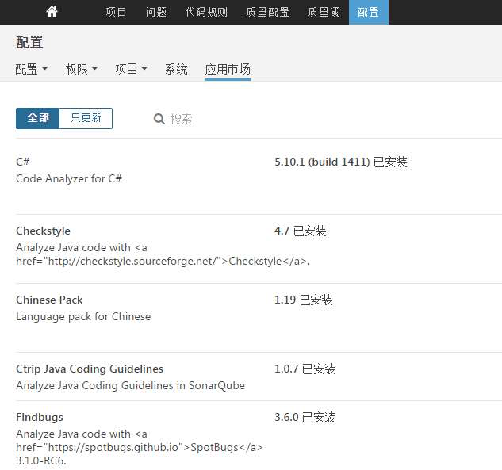
图 2 Sonar 系统配置
第二步：设置统一的 Java 检查规则。
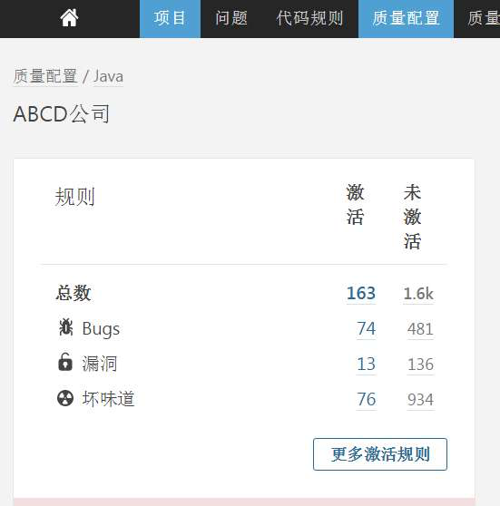
图 3 Java 规则设置
第三步：在 IDE 中安装 SonarLint 插件后，就可以使用 SonarSource 的自带规则了。
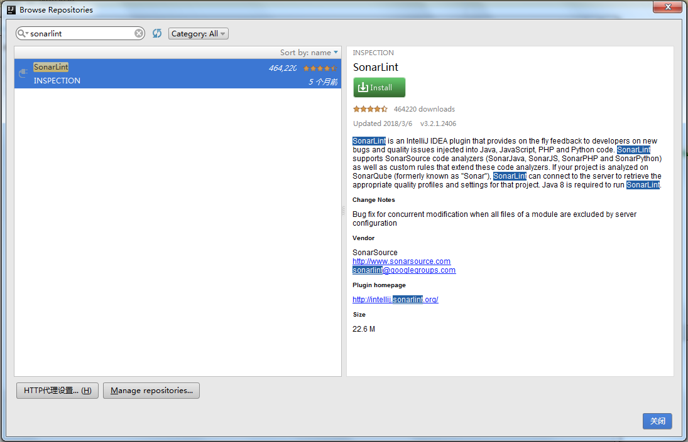
图 4 IDE 插件安装
第四步：如果 SonarLint 的检查规则不能满足开发环境的要求，你可以执行相关的 mvn 命令，把检查结果吐到 Sonar 服务器上再看检查结果，命令如下：
mvn org.sonarsource.scanner.maven:sonar-maven-plugin:3.2:sonar -f ./pom.xml -Dsonar.host.url=sonar 服务器地址 -Dsonar.login= 账号名称 -Dsonar.password= 账号密码 -Dsonar.profile= 检查规则的集合 -Dsonar.global.exclusions= 排除哪些文件 -Dsonar.branch= 检查的分支
第五步：在 GitLab 的 Merge Request 中增加 Sonar 静态检查的环节，包括检查状态和结果等。
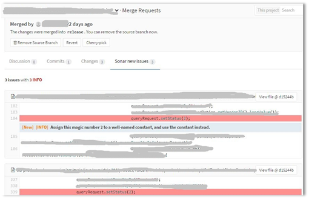
图 5 GitLab MR 集成 Sonar 结果
第六步：发布到用户验证环境（UAT）前，先查看静态检查结果。如果没有通过检查，则不允许发布。
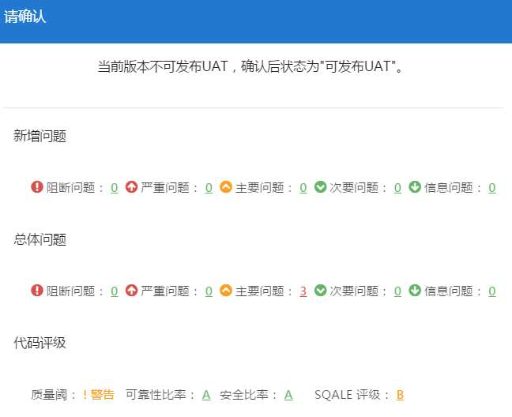
图 6 Sonar 检查结果报告
通过上面这六步，一套代码静态检查机制就基本被构建起来了。
总结
在分享和你分享代码静态检查实践这个主题时，我分享了近五年国内的大型互联网公司在持续交付实践中摸爬滚打的经验。
从这五年的发展实践中，我们可以清楚地看到，越来越多的研发团队把静态检查作为了一个不可或缺的环节，这也确实帮助研发团队提升了代码质量。
当然，机器是死的，人是活的，我们千万不要过分迷信静态检查的结果，还要时刻擦亮眼睛，看看是否存在误报等问题。
思考题
- 为什么代码静态检查应尽量在开发前期就实施？
- 在你看来，一款好的静态检查工具或一套好的静态检查系统，应该具备哪些特点？
26 越来越重要的破坏性测试
你好，我是王潇俊。今天我和你分享的主题是：越来越重要的破坏性测试。
其实，持续交付中涉及到的与测试相关的内容，包括了单元测试、自动化测试、冒烟测试等测试方法和理念，我为什么我把破坏性测试拿出来，和你详细讨论呢？
原因无非包括两个方面：
- 其一，单元测试等传统测试方法，已经非常成熟了，而且你肯定也非常熟悉了；
- 其二，破坏性测试，变得越来越重要了。
那么，破坏性测试到底是因为什么原因变得原来越重要呢？
随着 SOA、微服务等架构的演进，分布式系统对测试的要求越来越高，不再像传统的单体应用测试一样，可以很容易地无缝嵌入到持续交付体系中。因为分布式系统的测试不仅需要大量的前提准备，还存在着非常严重的服务依赖问题。
这就使得分布式系统的测试工作，除了要关注运行的应用本身外，还要考虑测试环境的因素。
很快，我们就发现，破坏性测试可以解决分布式系统测试的这些难题，而且还可以帮助我们解决更多的问题。它可以弥补传统持续交付体系只关注代码或应用本身，而忽略其他外部因素影响运行中代码的问题。而且，破坏性测试还能很好地证明整个分布式系统的健壮性。
所以，与其老生长谈一些传统的测试方法，不如我们一起看看更新鲜、更好用的破坏性测试。
什么是破坏性测试？
顾名思义，破坏性测试就是通过有效的测试手段，使软件应用程序出现奔溃或失败的情况，然后测试在这样的情况下，软件运行会产生什么结果，而这些结果又是否符合预期。
这里需要注意的是，我们需要使用的测试手段必须是有效的。为什么这样说呢，有两点原因。
第一，破坏性测试的手段和过程，并不是无的放矢，它们是被严格设计和执行的。不要把破坏性测试和探索性测试混为一谈。也就是说，破坏性测试不应该出现，“试试这样会不会出问题”的假设，而且检验破坏性测试的结果也都应该是有预期的。
第二，破坏性测试，会产生切实的破坏作用，你需要权衡破坏的量和度。因为破坏不仅仅会破坏软件，还可能会破坏硬件。通常情况下，软件被破坏后的修复成本不会太大，而硬件部分被破坏后，修复成本就不好说了。所以，你必须要事先考虑好破坏的量和度。
破坏性测试的流程与用例设计
说到底，破坏性测试还是一种人为、事先设计的测试方法，所以它的流程与普通的软件测试流程基本一致：都包括设计测试用例、开发测试脚本、执行测试脚本、捕获缺陷、报告缺陷的过程。
破坏性测试与普通测试流程，唯一不同的是，绝大部分普通测试可以在测试失败后，继续进行其他的测试；而破坏性测试，则有可能无法恢复到待测状态，只能停止后续的测试。
所以，在持续交付的哪个步骤和阶段执行破坏性测试，就非常讲究了，你需要经过严密地设计和预判。
所以，在设计破坏性测试的测试用例时，我们通常会考虑两个维度：
第一个维度是，一个破坏点的具体测试，即设计一个或一组操作，能够导致应用或系统奔溃或异常。此时，你需要注意两个问题：
- 出现问题后的系统或软件是否有能力按预期捕获和处理异常；
- 确认被破坏的系统是否有能力按照预期设计进行必要的修复，以确保能够继续处理后续内容。
第二个维度是，整个系统的破坏性测试，我们通常会采用压力测试、暴力测试、阻断链路去除外部依赖等方法，试图找到需要进行破坏性测试的具体的点。
这两个维度的测试方法、流程基本一致，区别只是第二维度的测试通常不知道具体要测试的点，所以破坏范围会更大，甚至可能破坏整个系统。
破坏性测试的执行策略
由于具有切实的破坏力这个特点，我们在执行破坏性测试时需要考虑好执行策略，以避免发生不可挽回的局面。
一般情况下，在发布前执行破坏性测试相对比较安全。但这也不是绝对的，比如你一不小心把 UAT 等大型联调环境搞坏了，其代价还是很可观的。
因此，绝大部分破坏性测试都会在单元测试、功能测试阶段执行。而执行测试的环境也往往是局部的测试子环境。
那么问题又来了，真实环境要比测试子环境更复杂多变，在测试子环境进行的破坏性测试真的有效吗？这真是一个极好的问题。
所以，最近几年，技术圈衍生出一个很流行的理论：混沌工程。
混沌工程
随着分布式系统架构的不断进步，传统的破坏性测试也越发捉襟见肘，最主要的问题有两个：
第一，它被设计得太严格，以至于失真了。而真正有破坏力的故障，都是随机的、并行的、胡乱的。
第二，它覆盖不了生产环境，只能做到类似抽样检验的能力，且很难重复和持续。
所以，混沌工程的理论就应运而生了。
混沌工程是在分布式系统上建立的实验，其目的是建立对系统承受混乱冲击能力的信心。鉴于分布式系统固有的混乱属性，也就是说即使所有的部件都可以正常工作，但把它们结合后，你还是很难预知会发生什么。
所以，我们需要找出分布式系统的这些弱点。我把这些弱点归为了以下几类：
- 当服务不可用时，不可用或不完整的回退能力；
- 不合理的设置超时时间引起的重试风暴；
- 依赖服务接收过多的流量，从而导致中断；
- 由单个故障点引起的级联故障；
- ……
我们要避免这些弱点在生产过程中影响客户，所以需要一种方法来探知和管理这些系统固有的混乱，经实践证明，通过一些受控实验，我们能够观察这些弱点在系统中的行为。这种实验方法，就被叫作混沌工程。
说到具体的实验方法，需要遵循以下 4 个步骤，即科学实验都必须遵循的 4 个步骤：
- 将正常系统的一些正常行为的可测量数据定义为“稳定态”；
- 建立一个对照组，并假设对照组和实验组都保持“稳定态”；
- 引入真实世界的变量，如服务器崩溃、断网、磁盘损坏等等；
- 尝试寻找对照组和实验组之间的差异，找出系统弱点。
“稳定态”越难被破坏，则说明系统越稳固；而发现的每一个弱点，则都是一个改进目标。
混沌工程也有几个高级原则：
- 使用改变现实世界的事件，就是要在真实的场景中进行实验，而不要想象和构造一些假想和假设的场景；
- 在生产环境运行，为了发现真实场景的弱点，所以更建议在生产环境运行这些实验；
- 自动化连续实现，人工的手工操作是劳动密集型的、不可持续的，因此要把混沌工程自动化构建到系统中；
- 最小爆破半径，与第二条配合，要尽量减少对用户的负面影响，即使不可避免，也要尽力减少范围和程度。
这样，就更符合持续交付的需求和胃口了。
Netflix 公司的先驱实践
Netflix 为了保证其系统在 AWS 上的健壮性，创造了 Chaos Monkey，可以说是混沌工程真正的先驱者。
Chaos Monkey 会在工作日期间，随机地杀死一些服务以制造混乱，从而检验系统的稳定性。而工程师们不得不停下手头工作去解决这些问题，并且保证它们不会再现。久而久之，系统的健壮性就可以不断地被提高。
Netflix 公司有一句名言，叫作“避免失败的最好办法就是经常失败”。所以，Chaos Monkey 会在日常反复持续执行，真正地持续融合在系统中。这，也为其持续交付中的测试提供了很好的借鉴。
总结
破坏性测试能够很好地测试分布式系统的健壮性，但也因为其破坏特点，使得它在持续交付中无法显示真正的威力；而混沌工程的提出，很好地解决了这个问题，使破坏性测试的威力能够在持续交付过程中被真正发挥出来。
混沌工程的一个典型实践是，Netflix 公司的 Chaos Monkey 系统。这个系统已经证明了混沌工程的价值和重要性，值得我们借鉴。
思考题
你是否考虑过要在自己的公司引入 Chaos Monkey？如果要引入的话，你又需要做些什么准备呢？
27 利用Mock与回放技术助力自动化回归
你好，我是王潇俊。今天我和你分享的主题是：利用 Mock 与回放技术助力自动化回归。
在《代码静态检查实践》和《越来越重要的破坏性测试 》这次的分享中，我介绍了对持续交付有重大影响的两个测试类型，即静态代码检查和破坏性测试。
你可能已经发现，这两种测试正好适用于持续集成和测试管理的一头、一尾：
- 静态代码检查，适合在所有其他测试类型开始之前优先进行，把住第一关；
- 破坏性测试，则适用于集成或验收测试之后，甚至是对系统进行持续长久的测试。
那么，我们现在再一起来看看，持续交付过程中还有哪些测试方法，以及还有哪些问题和难点吧。
持续交付中的测试难点
其实，对于持续交付中的测试来说，自动化回归测试是不可或缺的，占了很大的测试比重。而进行自动化回归测试，就始终会有“三座大山”横在你面前。
“第一座大山”：测试数据的准备和清理。
通常情况下，回归测试的用例是可以复用的，所以比较固定，结果校验也比较确定。而如果要实现回归测试的自动化，就需要保证每次测试时的初始数据尽量一致，以确保测试脚本可复用。
如果每次的数据都不同，那么每次的测试结果也会受到影响。为了做到测试结果的可信赖，就有两种方法：
- 一种是，每次全新的测试都使用全新初始化数据；
- 另一种是，在测试完成后，清除变更数据，将数据还原。
但是，这两种方法的实现，都比较麻烦，而且很容易出错。
“第二座大山”：分布式系统的依赖。
分布式系统因为有服务依赖的问题，所以进行一些回归测试时，也会存在依赖的问题。这个问题，在持续交付中比较难解决：
- 单元测试时要面对两难选择，测依赖还是不测依赖；
- 集成测试时，如何保证依赖服务的稳定性，或者说排除由稳定性带来的干扰，所以到底是依赖服务的问题，还是被测服务的问题很难确定；
- 真实的业务系统中，往往还存在多层依赖的问题，你还要想办法解决被测应用依赖的服务的依赖服务。
我的天呢，“这座大山”简直难以翻越。
“第三座大山”：测试用例的高度仿真。
如何才能模拟出和用户一样的场景，一直困扰着我们。
如果我们的回归测试不是自己设计的假想用例，而是真实用户在生产环境中曾经发生过的实际用例的话，那么肯定可以取得更好的回归测试效果。那么，有没有什么办法或技术能够帮助我们做到这一点呢？
如何翻越这“三座大山”，我在这里给你准备了 Mock 和回放技术这个两大利器，也就是我接下来要和你重点分享的内容。
两大利器之一 Mock
我先来说说什么是 Mock：
如果某个对象在测试过程中依赖于另一个复杂对象，而这个复杂对象又很难被从测试过程中剥离出来，那么就可以利用 Mock 去模拟并代替这个复杂对象。
听起来是不是有点抽象？下面这张图就是 Mock 定义的一个具象化展示，我们一起来看看吧。
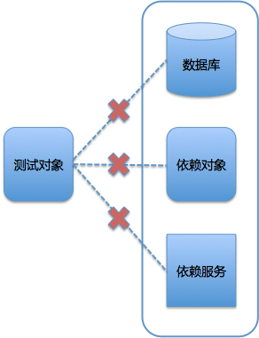
图 1 测试过程中，被测对象的外部依赖情况展示
在测试过程中，你可能会遇到这样的情况。你要测试某个方法和对象，而这个被测方法和对象依赖了外部的一些对象或者操作，比如：读写数据库、依赖另外一个对象的实体；依赖另一个外部服务的数据返回。
而实际的测试过程很难实现这三种情况，比如：单元测试环境与数据库的网络不通；依赖的对象接口还没有升级到兼容版本；依赖的外部服务属于其他团队，你没有办法部署等等。
那么，这时，你就可以利用 Mock 技术去模拟这些外部依赖，完成自己的测试工作。
Mock 因为这样的模拟能力，为测试和持续交付带来的价值，可以总结为以下三点：
- 使测试用例更独立、更解耦。利用 Mock 技术，无论是单体应用，还是分布式架构，都可以保证测试用例完全独立运行，而且还能保证测试用例的可迁移性和高稳定性。为什么呢？ 因为足够独立，测试用例无论在哪里运行，都可以保证预期结果；而由于不再依赖于外部的任何条件，使得测试用例也不再受到外部的干扰，稳定性也必然得到提升。
- 提升测试用例的执行速度。由于 Mock 技术只是对实际操作或对象的模拟，所以运行返回非常快。特别是对于一些数据库操作，或者复杂事务的处理，可以明显缩短整个测试用来的执行时间。 这样做最直接的好处就是，可以加快测试用例的执行，从而快速得到测试结果，提升整个持续交付流程的效率。
- 提高测试用例准备的效率。因为 Mock 技术可以实现对外部依赖的完全可控，所以测试人员在编写测试用例时，无需再去特别考虑依赖端的情况了，只要按照既定方式设计用例就可以了。
那么，如何在测试中使用 Mock 技术呢？
目前，市场上有很多不同的 Mock 框架，你可以根据自己的情况进行选择。主要的应用场景可以分为两类：基于对象和类的 Mock，基于微服务的 Mock。
第一，基于对象和类的 Mock
基于对象和类的 Mock，我比较推荐使用的框架是 Mockito 或者 EasyMock。
Mockito 或者 EasyMock 这两个框架的实现原理，都是在运行时，为每一个被 Mock 的对象或类动态生成一个代理对象，由这个代理对象返回预先设计的结果。
这类框架非常适合模拟 DAO 层的数据操作和复杂逻辑，所以它们往往只能用于单元测试阶段。而到了集成测试阶段，你需要模拟一个外部依赖服务时，就需要基于微服务的 Mock 粉墨登场了。
第二，基于微服务的 Mock
基于微服务的 Mock，我个人比较推荐的框架是 Weir Mock 和 Mock Server。这两个框架，都可以很好地模拟 API、http 形式的对象。
从编写测试代码的角度看，Weir Mock 和 Mock Server 这两种测试框架实现 Mock 的方式基本一致：
- 标记被代理的类或对象，或声明被代理的服务；
- 通过 Mock 框架定制代理的行为；
- 调用代理，从而获得预期的结果。
可见，这两种 Mock 框架，都很容易被上手使用。
第三，携程的 Mock Service 实践
在携程，我们一次集成测试，可能依赖的外部服务和数据服务会有几百个，而这几百个服务中很多都属于基础服务，都有被 Mock 的价值。
所以，携程借鉴了 Mock Server 的想法，在整个测试环境中构建了一套 Mock Service：所有服务的请求，都会优先通过这套系统；同时，所有服务的返回也会被拦截。这套 Mock Service 看起来就像是一个巨大的代理，代理了所有请求。
那么，测试人员只要去配置自己的哪些请求需要被 Mock Service 代理就可以了，如果请求的入参相同，且 Mock Service 中存在该请求曾经的返回，则直接被代理。反之，则透传到真正的服务。
虽然这会增加性能开销，但是对于整体的回归测试来说，价值巨大，而且方便好用、无需编码。
Mock 技术，通过模拟，绕过了实际的数据调用和服务调用问题，横在我们面前的“三座大山”中的其中两座，测试数据的准备和清理、分布式系统的依赖算是铲平了。但是如何解决“第三座大山”呢，即如何做到模拟用户真正的操作行为呢？
两大利器之二“回放”技术
要做到和实际用户操作一致，最好的方法就是记录实际用户在生产环境的操作，然后在测试环境中回放。
当然，我们要记录的并不是用户在客户端的操作过程，而是用户产生的最终请求。这样做，我们就能规避掉客户端产生的干扰，直接对功能进行测试了。
首先，我们一起来看一下如何把用户的请求记录下来。
这里我们需要明确一个前提原则，即：我们并不需要记录所有用户的请求，只要抽样即可，这样既可以保持用例的新鲜度，又可以减少成本。
我们在携程有两种方案来拦截记录用户操作：
- 第一种方案是，在统一的 SLB 上做统一的拦截和复制转发处理。这个方案的好处是，管理统一，实现难度也不算太大。但问题是，SLB 毕竟是生产主路径上的处理服务，一不小心，就可能影响本身的路由服务，形成故障。所以，我们有了第二种替换方案。
- 第二种方案是，在集群中扩容一台服务器，在该服务器上启动一个软交换，由该软交换负责复制和转发用户请求，而真正的用户请求，仍旧由该服务器进行处理。 这个方案比第一种方案稍微复杂了一些，但在云计算的支持下，却显得更经济。你可以按需扩容服务器来获取抽样结果，记录结束后释放该服务器资源。这个过程中，你也不需要进行过多的配置操作，就和正常的扩容配置一样，减少了风险。
这样，我们就完成了用户行为的拦截记录。而用户行为记录的保存格式，你也可以根据要使用的的回放工具来决定。
然后，我们再一起看看回放的多样性。
因为回放过程完全由我们来控制，所以除了正常的原样回放外，我们还可以利用回放过程达到更多的目的。
我们既可以按照正常的时间间隔，按照记录进行顺序回放；也可以压缩回放时间，形成一定的压力，进行回放，达到压力测试的目的。
而且，如果可以对记录的请求数据做到更精细的管理，我们还可以对回放进一步抽样和删选，比如只回放符合条件的某些请求等等，找出边界用例，利用这些用例完成系统的容错性和兼容性测试。
当然，你如果希望做到回放的精细管理，那我的建议是根据你的实际业务特性自研回放工具。
自研回放工具的整体思路其实非常简单，就是读取拦截的访问记录、模拟实际协议、进行再次访问。当然，你还可以给它加上更多额外的功能，比如数据筛选、异常处理、循环重复等等。
现在，利用“回放”技术，我们也顺利翻越了最后“一座山”，实现了用户行为的高度仿真。
总结
我以提出问题 - 分析问题 - 解决问题的思路，和你展开了今天的分享内容。
首先，我和你分享了自动化回归测试会遇到的三个难题：测试数据的准备和清理、分布式系统的依赖，以及测试用例的高度仿真。
我们可以利用 Mock 技术（即通过代理的方式模拟被依赖的对象、方法或服务的技术），通过不同的框架，解决自动化回归测试的前两个问题：
- 基于对象和类的 Mock，解决一个应用内部依赖的问题；
- 基于微服务的 Mock，解决应用与应用之间外部依赖的问题。
然后，我和你分享了携程的“回放技术”，即先通过虚拟交换机，复制和记录生产用户的实际请求，在测试时“回放”这些真实操作，以达到更逼真地模拟用户行为的目的，从而解决了自动化回归测试遇到的第三个问题。
所以，利用 Mock 和“回放”技术，我们能够提高自动化回归测试的效率和准确度，从而使整个持续交付过程更顺滑，自动化程度更高。
思考题
你所在的公司，有没有合理的回归测试过程？如果没有，是为什么呢，遇到了什么困难？通过我今天分享的内容，你将如何去优化这个回归测试的过程呢？
28 持续交付为什么要平台化设计？
你好，我是王潇俊。今天我和你分享的主题是：持续交付为什么要平台化设计？
专栏内容已经更新一大半了，我和你也基本上已经逐个聊透了持续交付最核心的五大部分内容，包括：配置管理、环境管理、构建集成、发布及监控、测试管理。理解了这五大部分基本内容，你也就已经基本掌握了持续交付的核心内容，以及整个闭环流程了。
我猜想你可能已经开始尝试在团队内部署一套持续交付体系了，在部署的过程中又碰到了一些问题：比如，是否要为不同的语言栈建立不同的构建和发布通道；又比如，我还滞留在手工准备环境的阶段，无法有效自动化，应该怎么办。
要解决这些问题，你就需要达到一个更高的高度了，即以平台化的思维来看待持续交付。
那么从今天开始，我们就一起来聊聊持续交付平台化的话题吧。
什么是平台化
“平台化”这个词，你应该已经听到过很多次了吧。特别是互联网领域，我们都爱谈论平台化。那么，“平台化”到底是什么意思呢？
其实，早在 20 世纪 70 年代，欧洲的军工企业就开始利用平台化的思维设计产品了。当时的设计人员发现，如果分别研制装甲车、坦克和迫击炮的底盘，时间和金钱成本的消耗巨大。
因为这些武器的底盘型号不同，所以它们所需要的模具、零件也就不同，除了要分别设计、制造、测试、生产外，还要花费巨额成本建设不同的生产流水线，而且各底盘的保养和使用方式不同，需要进行不同的人员培训。可想而知，这样分别设计的成本是巨大的。
所以，这些军工企业们就决定要采用一个通用的底盘设计，然后在通用底盘上安装不同的炮管和武器，达到个性化的需求。
之后，这种平台化的设计和制造方法，在航空制造业和汽车制造业得到了广泛运用，获得了极大的成功，并一直被沿用至今。
而，互联网又再次给“平台化”插上了新的翅膀。互联网厂商平台化的玩法，往往是指自己搭台子，让其他人唱戏。也就是说，由互联网厂商自己提供一些基础保障能力，建立必要的标准，从而形成底层支撑平台；而由其他供应商或用户利用这个底层平台提供的服务，自己完成具体业务、功能流程设计，从而达到千人千面的个性化服务能力。
互联网厂商的这种做法，就使得企业的服务能力被放大到了极致。
持续交付为什么要实现平台化？
持续交付要做到平台化的原因，主要可以归结为以下三方面。
- 随着软件技术的发展，任何企业最终都将面临多技术栈的现实。不同的技术栈，就意味着不同的标准、不同的工具、不同的方式，所以我们就必须要通过合理的持续交付平台，去解决不同技术栈的适配工作。
- 随着持续交付业务的发展，团队会越来越庞大，分工也会越来越明细。这就要求持续交付体系能够支持更大规模的并发处理操作，同时还要不断地提升效率。更重要的是，当持续交付成为企业研发的生命线时，它必须做到高可用，否则一旦停产，整个研发就停产了。
- 随着持续交付技术本身的发展，还会不断引入新的工具，或新的流程方法。如果我们的持续交付体系不能做到快速适应、局部改造、高可扩展的话，那它自身的发展与优化将会面临严峻的挑战。
以上三个方面的原因，决定了我们需要打造一套高可用、可扩展的持续交付平台。
持续交付平台的设计
在前面的几个系列中，我分享了很多与持续交付的选型、实践与做法相关的内容。那么，在持续交付平台化的系列中，我会和你一起去整合前面看似零散的内容。
为此，我总结了实现持续交付平台化的 7 个步骤，也可以说是 7 个方法论，通过对这 7 个步骤的思考，你将清楚，要构建一套持续交付平台：
- 具体需要做哪些工作；
- 资源有限时，如何取舍；
- 最重要的任务是什么；
- 外部对你的限制和帮助有哪些。
希望通过我的总结，结合之前的分享，你能把持续交付的各个阶段串联起来，形成自己的平台化思路。
第一步，确定模块及其范围
交付流水线的概念，我已经在专栏第一篇文章[《持续交付到底有什么价值》]中介绍过了。如果你记不太清楚了，可以再回顾一下这篇文章的内容。
持续交付平台的工作流程基本就是根据这个流水线确定的，即：由编码开始，经过集成编译，再部署到相应环境，进行测试，最后发布到生产环境的过程。
持续交付平台最终将完成这个端到端的过程，那么流水线的每一步都可以认为是一个模块。由此，整个平台的核心模块就是：代码管理、集成编译、环境管理、发布部署。
这四个模块是持续交付平台中最核心，最容易做到内聚和解耦的模块。每个核心模块的周围，又围绕着各种子模块，比如：
- 代码管理模块，往往会和代码审核、静态扫描和分支管理等模块相联系；
- 集成编译模块，也会与依赖管理、单元测试、加密打包等模块相生相随的；
- 环境管理模块，离不开配置管理、路由管理等模块；
- 发布部署模块，还需要监控模块和流控模块的支持。

图 1 持续交付平台核心模块
这样，如上图所示，根据交付流程划分完模块后，整个持续交付平台所要涵盖的大致范围也就确定了。
第二步，学会做减法
好的产品，都需要不断地做减法，持续交付平台也是如此。
我们已经在第一步罗列了需要完成的模块，但很显然，不可能一下子完成所有的这些模块设计和开发 a。所以，持续交付平台设计的第二步，就如何抓住最核心的内容。
正如我在第一篇文章[《持续交付到底有什么价值》]中所说，并不是只有完整的端到端自动化才叫“持续交付”，代码管理，集成编译，环境管理、发布部署这四大核心模块，其实就是一个交付的闭环，只是交付的内容不同，但这些交付都是可测的、可评定的，所以并不是半成品。
因此，我们就可以考虑挑选最为重要或最为急迫的模块，优先加以实施。甚至，你可以优先实现这四个模块中的一个，先解决一部分问题。这样做减法的方式，我们称为横向缩小范围。
另外一种做减法的方式是减少纵向的深度。也就是优先支持单一的技术栈，或特定的、比较简单的场景，比如先搞定组织内的单体应用。
通过做减法先完成这个平台最核心模块的方式，可以控制平台的初建成本，而且效果也比较容易预期。比如，携程就是优先完成了发布部署模块，再逐步向持续交付的上游拓展。
而对于后续要做加法的事情，可以以后或者由其他团队慢慢补上，这才是平台的意义。
第三步，制定标准
研发任何系统，首先要记住一句话：“标准先行”。
我们谈到标准时，往往会涉及很多方面，比如：对外衔接的标准、对内沟通的标准；质量的标准，速度的标准等等。而对持续交付平台的设计来说，最重要的标准是定义各个模块交付产物的标准。
- 比如，代码管理模块，最终的交付产物到底是什么，形式又是什么：是一个代码包，还是 git 仓库地址；
- 又比如，发布部署模块，到底执行的是怎样的过程：重启应用是使用线程回收机制，还是进程重启机制；
只有制定了标准，其他团队或者其他系统才能有据可依地逐步加载到这个平台之上。
不同的组织和企业，标准和规范的内容要求不一样。所以，我无法一一列举这些标准和规范，但是你一定要清楚，这是重中之重的一个步骤。
第四步，选择合适的驱动器
所谓驱动器，就是用来驱动整个持续交付流水线的引擎。
不同规模的团队，适合的驱动器不同：
- 中小规模的团队，我推荐使用开源的系统做驱动器，比如使用 Jenkins 作为驱动器（当然 Jenkins 还有资源调度和编排能力）。
- 较大规模的团队，或者业务比较复杂的情况下，我建议自行研发驱动器，以适应自身组织的特殊需求。 当然，我并不是说自行研发驱动器肯定就比 Jenkins 这样的系统要好。但是，后者更注重普适性，而前者则可以根据自身业务情况进行取舍，甚至不需要考虑流水线的可配置性，直接使用状态机写死流程。这样的好处是掌控力强，修改简单，且不易出错。
- 如果是更大规模的团队，我的建议是把驱动器与功能模块同等看待，将流水线驱动看做是平台的一个抽象功能，既可以驱动 CI 或 CD 功能，也可以驱动其他的任务；其他模块提供的服务都是这个驱动服务可以执行的具体实现而已。 在复杂情况下，“人”才是最好的驱动器，可以做出最正确的判断。有些特殊的复杂场景，机械的驱动器程序已经无法解决，需要人工介入。所以通过驱动服务，既可以驱动自动化任务，同时又可以驱动“人”，才能保证最优的结果。
第五步，抽象公共能力
既然我们要设计一个平台，自然就要把很多公共功能抽象到平台层处理。需要抽象的公共功能，主要包括：
- 账户与权限，包括单点登录，以及鉴权、授权体系等等；
- 用户行为日志，即任何行动都要能够被追溯；
- 消息通知，即提供统一的通知能力；
- 安全与故障处理，即系统级的防护能力和故障降级。
持续交付平台的设计，除了要抽象这些公共功能外，还需要考虑打通上下游系统的问题，比如需要从 CMDB 获取服务器信息，从应用中心获取应用信息等等。
第六步，考虑用户入口
完成了持续交付平台内部功能的设计后，就要考虑用户入口的问题了。
用户入口，是提供一个统一的站点、使用命令行格式、使用 IDE 插件，还是直接使用 Jenkins 系统作为与用户交互的界面，可以根据团队的资源、能力等实际情况进行选择。
通常情况下，我会比较建议为持续交付独立形成一个 Portal，这样不会受到其他系统的限制，你可以根据自己的设计更好地完成用户引导和使用体验的设想。
第七步，聚力而成
通过上面这六步，我们已经初步完成了持续交付平台的设计，之后就是如何实现的问题了。
其实，如何实现持续交付的平台化，主要看你的决心和实践。但一定要记住，如果你决定要实施一个持续交付的平台，那就一定要学会运用团队的力量。
比如，架构同学，一定能够在制定规范和架构方面给你建议和帮助；而运维同学，肯定在环境治理和部署方面比你更有经验。
所以，你要做的是搭好平台，利用团队优势共同建设持续交付体系。
以上的内容，就是搭建一套持续交付平台最关键的七个步骤了。这里，我们可以用一张图片，表示这个持续交付平台的大致架构。

图 2 持续交付平台的大致架构
总结
因为技术和业务的复杂性不断增加，持续交付需要解决的问题也变得越来越复杂。所以，我们需要利用平台化的思想解决持续交付体系日益复杂的问题。
持续交付是一个需要所有研发团队共同参与的活动，持续交付平台的建设也同样需要借助各个团队、各个职能的力量。
如果你正在负责持续交付这件事情，你应该充分考虑如何搭台，让大家来唱戏这样件事情。
思考题
你所在的组织内，持续交付中的哪些内容需要其他团队协助呢？
29 计算资源也是交付的内容
你好，我是王潇俊。今天我和你分享的主题是：计算资源也是交付的内容。
在传统的持续交付中，我们虽然一直深受环境和计算资源的困扰，但却很少去考虑如何去彻底解决这个问题。归根结底，原因有两方面：
- 这个问题解决起来难度较大；
- 这个问题也不太算是持续交付的范畴。
但是，随着 DevOps 深入人心，以及云计算的发展，我们已经有了解决这些问题的思路和方法。所以今天我要和你聊聊如何解决这方面的问题，从而获得更优的环境管理能力。
计算资源包括什么内容？
通常情况下，我们所说的计算资源包括：CPU、内存、本地磁盘、外部存储、网络等。
为了提高计算资源的利用率，传统做法往往是按需申请和分配资源。但是计划往往赶不上变化，整个申请和分配过程冗长，缺乏快速弹性的能力，最终影响了持续交付的效率。
计算资源是导致持续交付的反模式的原因
从实际情况来看，计算资源是导致持续交付反模式的主要原因。
在《持续交付：发布可靠软件的系统方法》一书中，作者给我们列举了几个反模式，比如：
- 手工部署软件，即由详尽的文档描述一个部署过程，部署需要手工操作及验证；
- 开发完之后才向类生产环境部署，即开发完成后才第一次向类生产环境部署，如果是全新的应用，第一次部署往往会失败；
- 生产环境需要手工配置管理，即有专门的团队负责生产环境的配置变更，修改配置时，需要这个专门的团队手工登录到服务器进行操作。
你可以按照我在发布及监控这个系列分享的内容，通过合理打造一套发布系统，解决“手工部署软件”这个反模式的问题。
但是，“开发完之后才向类生产环境部署”和“生产环境需要手工配置管理”这两个反模式，我们总是难以克服。究其原因，我们是在计算资源的交付上出了问题。为什么呢？
- 产生“开发完之后才向类生产环境部署”反模式的原因是，开发测试环境和生产环境的差异。导致这个差异产生的原因，绝大多数是因为，生产环境的模拟成本太大，线下难以模拟，归根结底是计算资源的问题。
- 产生“生产环境需要手工配置管理”反模式的原因是，环境需要长期使用，而且需要不断更新，不能即取即用。说到底，这还是计算资源问题。
这时，你可能会说，计算资源的问题也可以通过一些方法解决。比如，准备一个计算资源缓冲池，从这个缓冲池中获取计算资源就很方便、快捷了。
这确实是一个解决方案，但是这个解决方案带来的成本浪费是巨大的。
然后，云计算出现了，正好可以彻底解决这些问题。现在，我就和你聊聊云计算是如何解决这些问题的。
云计算带来的划时代变革
其实，云计算带来的变革，主要体现在以下三个方面。
- 云计算的弹性能力，使得计算资源的提取成为持续交付过程的一个自然步骤。 使用云计算之前，获取计算资源的过程往往耗时很长、结果不可预知，因此往往不能作为持续交付流水线的一部分，而是要独立出来，或者采用异步方式进行处理。 然而，云计算的弹性能力，使得我们获取计算资源的速度和数量有了质的飞跃，而且保证了结果的可控性。所以，计算资源的提取，也就可以与其他环节一样作为持续交付中的一个自然步骤了。
- 云计算的 Immutable，可以保证计算资源的生命周期与持续交付过程一致。 以前，为了降低计算资源回收交替的成本，我们往往会采用复用计算资源的方式。但是，如果遇到不同的应用，而这些应用又需要不同的配置，或安装一些不同的软件的话，我们就需要对这些被复用的机器进行人工维护。 所以，这个复用方式，就使得一个计算资源的生命周期变得不再清晰，我们也再次掉进了“生产环境需要手工配置管理”的陷阱。 但是，在云计算中，计算资源的生命周期可以被严格定义。所以，计算资源就可以做到专事专用，进而保证与持续交付过程的一致性。
- 云计算本身不区分环境，这样可以获取到与生产环境几乎一样配置的资源。 以前，测试所用的计算资源和生产环境所用的计算资源，往往不一致。最核心的原因是，我们没有制订计算资源的交付标准，或者制订的标准在资源交付后，由于脱离了控制而被轻易打破。 而云计算则会通过系统对计算资源的抽象、标准化，以及管控，可以很容易地获取到与生产环境更相近的测试环境。
目前，各公有云都提供了非常完备的持续交付平台，越来越多的企业正在或正将把生产环境搬迁到公有云上。如果你的应用符合云原生的特性，那恭喜你，你可以尽情地享受云计算带来的红利了。
但以目前的情况来看，想要做到完全依托于公有云实现持续交付，你还需要经过大量云原生的改造。比如：需要所有的应用都无状态；应用启动过程没有特殊的额外步骤；使用公有云提供的路由方案等等。所以，绝大多数组织仍旧选择以依赖私有云或私有 IaaS 平台的形式来解决问题。
重塑持续交付平台的相关部分
有了云计算，或者说私有 IaaS 平台这个强大的底层支持，我们下一步要解决的就是充分发挥它的能力。所以，现在我就和你分享一下，持续交付平台的哪些部分可以利用云计算的强大能力。
首先，弹性的集成编译环境。
不同技术栈的应用需要不同的编译环境，而且要保证编译环境和运行时环境一致，否则会发生意料之外的问题。这样一来，如果组织内部同时有多个技术栈存在，或应用对环境有多种要求时，就需要有多个独立的编译环境了。
因此，如果没有云计算的话，持续交付通常要准备一个由多台不同服务器组成的编译集群，用以覆盖所有的编译需求。另外，为了达到持续交付的效果，我们还可能需要再横向地为每个独立编译环境多准备几个实例，以便达到多个编译任务并行的目的，而不是要一直排队。
然而，这样的做法对资源的控制和利用非常不利，很有可能在编译高峰时仍旧资源不够用，而扩大资源池后，大多资源又处于空闲状态。
现在，利用云计算的弹性，你可以按需生成一个个特定的编译环境，及其所需的计算资源。这就使得你无需再提前准备一个巨大的资源池，也自然不必为如何合理配比资源池中的资源而烦恼了。
要达到这种效果，你只需要修改集成编译模块的编译调度逻辑就可以：
- 在编译调度前，生成所需要的编译环境实例；
- 在编译完成之后，保存编译日志和相关交付产物后，销毁编译实例、释放计算资源。
因此，有了云计算的支持，编译模块的效率和资源利用率都可以上一个台阶。
其次，重新定义环境管理。
云计算的弹性能力，可以帮助我们改善环境管理模块的能力，使得环境管理的方式更加灵活。
比如，原先一个测试子环境的生命周期往往与某个功能研发或是项目研发不一致，会提前准备，或是多次复用；又或者由于资源紧缺的原因，测试环境只能模拟部分实际环境；另外还会有一些环境被作为公共的资源一直保留，从不释放。这些问题都增加了环境管理的复杂度。
现在，有了云计算平台的强大能力，我们完全可以打破这些限制，将环境的生命周期设计得与项目生命周期一致，每个项目或每个功能都可以拥有自己独立的测试环境；另外，你还可以动态定义所需的任何环境，或者利用模板技术，快速复制一个已存在的环境。总之，环境管理变得越来越灵活了。
除了计算资源之外，云计算也同时提供了非常强大的网络定义能力，为环境管理插上了翅膀。
我们可以通过 VPC（专有网络），对任何环境定义网段划分、路由策略和安全策略等。这样环境与环境之间就拥有了快速处理网络隔离和相通的能力。借此，我们也可以很容易地创造沙箱环境、专用测试环境等。
有了云计算的支持，环境管理真的可以飞起来。
最后，充分利用存储。
云计算除了可以提供计算资源和网络资源的便利外，同时也可以解决资源存储的问题。分布式存储的能力，同样能给持续交付提供有利的帮助。
比如，利用共享存储，你可以在多个编译实例之间共享 Workspace，虽然性能会稍微下降一点，但可以很方便地保证不同实例之间使用相同的本地缓存，而无需再去考虑如何同步本地缓存，使其一致的问题。
又比如，利用分布式存储，你就无需再担心部署包的备份问题了。
再比如，如果你还使用公有云的存储服务的话，比如 Amazon 的 S3，云计算可以帮你很方便地把交付产物同步到全球各地，简化你异地部署的工作。
总结
今天我和你讨论的主题是，云计算这样的新兴技术会对持续交付会产生哪些影响。我们可以把这些影响概括为四大方面：
- 利用云计算，能够很容易地打破持续交付反模式；
- 利用云计算，可以使持续交付的编译模块变得更为灵活，提升利用率；
- 利用云计算，可以自由地发挥想象力，简化环境管理的工作；
- 利用云计算，可以使用存储服务，使持续交付工作更便捷。
总之，你会发现，计算资源是持续交付非常重要的依赖，有了云计算的支持之后，我们完全可以把计算资源的交付也纳入到持续交付过程中，更好地做到端到端的交付。
思考题
你将如何利用云计算的能力，优化现有的持续交付体系呢？
30 持续交付中有哪些宝贵数据？
你好，我是王潇俊。今天我和你分享的主题是：持续交付中有哪些宝贵数据。
通过我前面和你分享的内容，相信你已经掌握了持续交付流水线所包含的五个主要动作：代码管理、环境管理、集成和编译管理、发布管理，以及测试管理。而且，你也应该已经初步掌握了建设持续交付体系的基本方法。
那么，如何使这个初步建立的持续交付体系更上一层楼呢？现在我们都选择用数据说话，所以优化一套系统的最好办法，就是从数据角度进行分析，然后找出优化方向，再进行具体的改进。
所以，我今天就分享一下，我在携程建设持续交付系统时，遇到的几个与数据密切相关的案例。通过对这些数据的分析，我们可以明确优化系统本身处理能力的方向，也可以快速发现日常工作中与持续交付相违背的行为，从而再次展现我们搭建的持续交付系统的作用。
案例 1：要用好的数据来衡量系统
让我记忆犹新的第一个案例，是我们持续交付平台刚上线时，就遇到了一个很大的问题。这个问题就是，这套系统的稳定性怎么样？
这个问题不仅老板会问你，用户会问你，其实你自己都会问自己。如果没有相关的数字指标，那我怎么证明这套系统的稳定性好呢？如果我无法证明这套系统的稳定性，又怎么说服整个公司，把它当做研发的核心流水线呢？
期间，我想过很多方案，比如用宕机时间来计算稳定性。但是实际使用起来，你就会发现，这个衡量指标很不靠谱。
第一，对于平台系统来说，有很多相关联的子系统，有些子系统属于旁支系统，对实际业务影响不大，而有些则影响非常大。那么，我怎么合理计算这些系统间的权重呢？
第二，毕竟是一套对内的系统，有的时候即使宕机了，特别是在夜间，因为没有用户使用，其实际影响几乎为 0；而反之有的时候，比如处在发布高峰的下午，系统宕机则会产生较大的影响。所以，用宕机时间这个指标衡量的话，就会把这些影响摊平，不能正确地反映真实的问题。
第三，宕机时间这个单一指标，不能全面地评价系统的稳定性。比如，有些子系统的运维会在宕机时进行降级（比如，增加排队时间等手段等等），使系统处于将死而不死状态。这种处理，虽然从业务的角度可以理解为降级，但却对系统的真实评价却起到了反作用。
其实上面的这三个问题，也会在真实的业务系统上碰到。所以，我们借鉴了携程业务系统的稳定性评估方案，最后决定采用如下的实施方案：
首先，我们通过监控、保障、人为记录等手段，统计所有的故障时间。需要统计的指标包括：开始时间、结束时间和故障时长。
然后，计算过去三个月内这个时间段产生的持续交付平均业务量。所谓业务量，就是这个时间段内，处理的代码提交、code review；进行的编译、代码扫描、打包；测试部署；环境处理；测试执行和生产发布的数量。
最后，计算这个时间段内的业务量与月平均量相比的损失率。这个损失率，就代表了系统的不稳定性率，反之就是稳定性率了。
这样计算得到的不稳定性率指标，就要比简单粗暴地用宕机时间要精确得多，也不再会遇到前面提到的三种问题。
由此得到的计算模型一旦固定下来，你只要做好业务量的数据统计，其计算难度也会不大。
因此，我推荐你也可以使用这个数据指标来衡量自己系统的稳定性。
案例 2：数据既要抓大势，也要看细节
第二个让我映像深刻的案例，是一个与长尾数据有关的案例。
自从我们的持续交付平台在携程上线以后，一直颇受好评。当然，在系统上线后，我们也进行过几次优化，编译和打包速度被提升了非常多。而这些优化的方法，我也已经在专栏前面的文中进行了分享，如果有哪些不太清楚的地方，你可以去回顾一下这些文章，也可以给我留言我们一起讨论我在搭建系统时遇到的具体问题。
而且，我们运维团队也一直谨记，要通过数据分析不断优化系统。所以，我们一直非常关注总体的集成编译速度，因此除了追踪平均速度外，还会定期进行全量个例分析。
从整体的平均速度这个指标来看，系统一直表现良好。但，在 99 线以上，我们却发现存在一些长尾特例。正常的 Java 代码平均编译时间大概在 1 分钟之内，而这些特例却在 7 分钟以上。在几次的全量个例分析中，我们虽然发现了这个问题，但并没有特别关注。而且，在查看了编译过程的几个主要计时点后，我们也确实没有发现任何问题。
所以，这时我们都认为，这些长尾数据可能真的只是一些特殊个案。毕竟相对于每天几万次的集成编译来说，这个数量实在太小。
但就是这个小小的数据疏忽，我们差点忽略一个非常重要的故障点。随着时间的推移，我们发现这个长尾在慢慢变大。最终，我们还是尝试去一探究竟，发现原因其实是：
持续交付系统在打包之后，会通过网络专线向另外一个 IDC 分发部署包和容器镜像。但由于历史原因，两个 IDC 之间的防火墙对流量进行了不恰当的限制。随着持续交付在全公司的开展，这个分发量也越来越大，使网络流量达到了瓶颈，从而形成了之前的长尾现象。
当然，这个问题的解决方案十分简单。但是，从中我们看到：大的故障和影响，往往都是出于一些非常愚蠢的失误。
所以，这个案例也一直在提醒着我，看数据不仅要抓大势，也要关注细节，特别是异常细节。
案例 3：数据可以推动持续交付
第三个案例是，关于怎么利用数据来改善业务开发团队的持续交付过程。
任何一个团队，都会有它自己的研发习惯、迭代速度以及交付频率。自从携程上线了持续交付平台之后，我们从数据上就能很明显地发现，每个团队乃至整个公司，每周的发布数据是一个固定的趋势。
从周跨度上看，周三、周四为发布高峰；从日的维度看，中午 12 点开始发布数量逐步增加，下午 4 点达到发布数据的高峰，晚上 7 点之后发布数据逐步回落。
几乎每个团队的发布数据趋势都是这样，只有少数几个团队呈现了不同的趋势：它们的周趋势与其他团队基本一致，但日趋势则非常不同，高峰出现在下午 5 点，然后立即回落，且高峰值远远高于其他团队的平均值。
这是怎么回事呢？很明显，这是一种集中式发布的形态。但是，我在携程也没听说过有这样的流程。之后，我们经过了解，发现这种集中发布的情况是：这几个团队一直在沿用以前的发布模式，即将所有发布会汇总到一个发布负责人处，由他专门负责发布。所以，为了方便工作，这些发布负责人员选择在下午 5 点集中开始发布。
虽然这种做法和流程没什么问题，但却有违于我们推崇的“谁开发，谁运行”理念，并且也因此增加了一个实际不是必须的工作角色。在这之后，我们改造了这几个团队的流程，相当于是推动了整个公司的持续交付。
这个案例第一次让我们认识到，我们可以用手上的数据去推动、去优化持续交付体系。
这三个案例，都充分说明了数据对持续交付、持续交付平台的重要性，所以我们也要善用这些宝贵的数据。接下来，我再和你分享一下，持续交付体系中还有哪些数据值得我们关注。
常规系统指标数据列举
在日常工作中，我把需要关注的系统指标数据做了分类处理。这样，我可以通过这些数据指标去了解每一个持续交付子系统的当前状况，并确定需要优化的指标。
第一类指标，稳定性相关指标
作为基础服务，稳定性是我们的生命线。所以，对于所有的子系统，包括：代码管理平台、集成编译系统、环境管理系统、测试管理系统和发布系统，我们都会设立必要的稳定性指标，并进行数据监控。这些稳定性相关的数据指标，代表整个系统的可用度。
各系统的稳定性计算则可以参考第一个例子中的算法。
第二类指标，性能相关指标
与系统性能相关的指标，通常可以直接反应系统的处理能力，以及计算资源的使用情况。更重要的是，速度是我们对用户服务能力的直观体现。很多时候，系统的处理速度上去了，一些问题也就不再是问题了。比如，如果回滚速度这个指标非常优秀，那么业务发布时就会更有信心。
与性能相关的指标，我比较关注的有：
- push 和 fetch 代码的速度；
- 环境创建和销毁的速度；
- 产生仿真数据的速度；
- 平均编译速度及排队时长；
- 静态检查的速度；
- 自动化测试的耗时；
- 发布和回滚的速度。
第三类指标，持续交付能力成熟度指标
与持续交付能力成熟度相关的指标，可以帮助我们度量组织在持续交付能力上的缺陷，并加以改善。
不同的子系统，我关注的指标也不同。
- 与代码管理子系统相关的指标包括：commit 的数量，code review 的拒绝率，并行开发的分支数量。 这里需要注意的是，并行开发的分支数量并不是越多越好，而是要以每个团队都保持一个稳定状态为优。
- 与环境管理子系统相关的指标包括：计算资源的使用率，环境的平均大小。 这里需要注意的是，我一直都很关注环境的平均大小这个数据。因为我们鼓励团队使用技术手段来避免产生巨型测试环境，从而达到提高利用率、降低成本的目的。而且，这个指标也可以从侧面反映一个团队利用技术解决问题的能力。
- 与集成编译子系统相关的指标包括：每日编译数量，编译检查的数据。 我们并不会强制要求编译检查出的不良数据要下降，因为它会受各类外部因素的影响，比如历史代码问题等等。但，我们必须保证它不会增长。这也是我们的团队在坚守质量关的体现。
- 与测试管理子系统相关的指标包括：单元测试的覆盖率，自动化测试的覆盖率。 这两个覆盖率代表了组织通过技术手段保证质量的能力，也是测试团队最常采用的数据指标。
- 与发布管理子系统相关的指标包括：周发布数量，回滚比率。
发布数量的增加，可以最直观地表现交付能力的提升；回滚比率，则代表了发布的质量。综合使用周发布数量和回滚比例这两个指标，就可以衡量整个团队的研发能力是否得到了提升。
以上这些数据指标，就是我们在携程要关注的了。希望通过我对这些数据指标的介绍，可以帮助你了解如何衡量自己的持续交付体系，并通过分析这些数据找到优化当前体系的方向。
总结
今天我通过三个实际工作中的例子，和你分享了应该如何利用持续交付中产生的数据。
首先，你可以利用与业务量相关的数据模型来衡量持续交付系统的稳定性；
然后，在日常的数据分析中，除了要抓住主要数据的大趋势外，你还要关注那些异常的个性数据，它能帮你及早地发现问题；
最后，通过日常的数据分析，你也能发现持续交付流程上的一些问题，并协助团队一起改进。
当然，这只是三个比较突出的例子而已。在实践中，实施持续交付的过程中还有很多数据需要我们关注。我也一并把这些数据分成了三类，包括：
- 稳定性相关指标；
- 性能相关指标；
- 持续交付能力成熟度指标。
希望这些案例，以及这些数据指标可以对你日常的分析工作有所帮助。
思考题
你有没有在推进持续交付过程中遇到一些阻力呢？你有没有尝试通过数据分析去解释和解决这些问题呢？你又有哪些案例，想要和我分享呢？
31 了解移动App的持续交付生命周期
你好，我是王潇俊。今天我和你分享的主题是：了解移动 App 的持续交付生命周期。
我已经和你分享完的前 30 个主题里，介绍的都是偏向后端持续交付体系的内容。在服务端持续交付的基础上，我会再用两篇文章，和你聊聊移动 App 的持续交付。
与后端服务相比，移动 App 的出现和工程方面的发展时间都较短，所以大部分持续交付的流程和方法都借鉴了后端服务的持续交付。但是，移动 App 因为其自身的一些特点，比如版本更新要依赖用户更新客户端的行为等，所以移动 App 的持续交付也呈现了一些独有的特点。
同时，移动 App 的持续交付也存在一些痛点。比如，没有主流的分支模型，甚至产生了 Android 开发团队使用 Gerrit 这样一个独特代码管理平台和分支模型的特例；又比如，移动 App 的编译速度，也随着应用越来越大变得越来越慢；再比如，Apple Store 审核慢、热修复困难等问题。
这样总体来看，移动 App 的持续交付体系的搭建完全可以借鉴服务端的持续交付的经验。然后，再针对移动 App 固有的特点，进行改进和优化。
因此，在这个系列我只会通过三篇文章，和你分享移动 App 持续交付体系的特色内容，而对于共性的内容部分，你可以再次回顾一下我在前面所分享的内容。如果你感觉哪里还不太清楚的话，就给我留言我们一起讨论解决吧。
作为移动 App 的持续交付系列的第一篇文章，我会和你一起聊聊移动 App 交付涉及的问题、其中哪些部分与后端服务不太一样，以及如何解决这些问题打造出一套持续交付体系。
代码及依赖管理
首先，和后端服务一样，移动 App 的持续交付也需要先解决代码管理的问题。
我在专栏的第四篇文章[《一切的源头，代码分支策略的选择》]中，和你分享了各种代码分支策略（比如，Git Flow、GitHub Flow 和 GitLab Flow 这三种最常用的特性分支开发模型）的思路、形式，以及作用。
对于移动 App 来说，业界流行的做法是采用“分支开发，主干发布”的方式，并且采用交付快车的方式进行持续的版本发布。
关于这种代码管理方式，我会在下一篇文章《细谈移动 App 的持续交付流水线（pipline）》中进行详细介绍。
其次，移动 App 的开发已经走向了组件化，所以也需要处理好依赖管理的问题。
移动端的技术栈往往要比统一技术栈的后端服务更复杂，所以在考虑依赖管理时，我们需要多方位地为多种技术栈做好准备。比如：
针对 Android 系统，业界通常使用 Gradle 处理依赖管理的问题。Gradle 是一个与 Maven 类似的项目构建工具。与 Maven 相比，它最大的优点在于使用了以 Groovy 为基础的 DSL 代替了 Maven 基于 XML 实现的配置脚本，使得构建脚本更简洁和直观。
针对 iOS 系统，我们则会使用 CocoaPods 进行依赖管理。它可以将原先庞大的 iOS 项目拆分成多个子项目，并以二进制文件的形式进行库管理，从而实现对 iOS 的依赖管理。另外，这种管理依赖的方式，还可以提高 iOS 的构建速度。
除了以上两个技术栈外，移动 App 还会涉及到 H5、Hybrid 等静态资源的构建、发布和管理。那么同样的，我们也就需要 Nexus、npm 等构建和依赖管理工具的辅助。
可以说，移动 App 的技术仍旧在快速发展中，与后端服务比较成熟和统一的状态相比，我们还要花费更多的精力去适配和学习新的构建和依赖管理工具。
项目信息管理
项目信息管理主要包括版本信息管理和功能信息管理这两大方面。
对于移动 App 的持续交付来说，我们特别需要维护版本的相关信息，并对每个版本进行管理。
对后端服务来说，它只要做到向前兼容，就可以一直以最新版本的形式进行发布；而且，它的发布相对自主，控制权比较大。
但对移动 App 来说，情况则完全不同了：一方面，它很难保证面面俱到的向前兼容性；另一方面，它的发布控制权也没那么自主，要受到应用商店、渠道市场和用户自主更新等多方面因素的影响。
所以，在移动 App 的持续交付中，我们需要管理好每个版本的相关信息。
另外，为了提高移动 App 的构建和研发效率，我们会把整个项目拆分多个子项目，而主要的拆分依据就是功能模块。也就是说，除了从技术角度来看，移动 App 的持续交付会存在依赖管理的内容外，从项目角度来看，也常常会存在功能依赖和功能集成的需要。所以，为了项目的协调和沟通，我们需要重点管理每个功能的信息。
可见，做好项目信息管理在移动 App 的持续交付中尤为重要，而在后端服务的持续交付中却没那么受重视了，这也是移动 App 的持续交付体系与服务端的一大不同点。以携程或美团点评为例，它们都各自研发了 MCD 或 MCI 平台，以求更好地管理项目信息。
静态代码检查
静态代码检查的内容，就和后端服务比较相似了。为了提高移动端代码的质量，业界也陆续提供了不少的静态代码检查方案。比如：
- Clang Static Analyzer，被 Xcode 集成，但其缺乏代码风格的检查，可配置性也比较差；
- OCLint，其检查规则更多，也更易于被定制；
- Infer，是 Facebook 提供的一款静态检查工具，具有大规模代码扫描效率高、支持增量检查等特点。
我们也可以很方便地把这些静态检查工具集成到移动 App 的持续交付当中去。基本做法，你可以参考我在第 25 篇文章[《代码静态检查实践》]最后分享的 Sonar 代码静态检查的实例的内容。
构建管理
移动 App 构建管理的大体流程，我们可以借鉴后端服务的做法，即：通过代码变更，触发自动的持续集成。集成过程基本遵循：拉取代码、静态检查、编译构建、自动化测试，以及打包分发的标准过程。
移动 App 和后端服务的持续交付体系，在构建管理上的不同点，主要体现在以下三个方面：
- 你需要准备 Android 和 iOS 两套构建环境，而且 iOS 的构建环境还需要一套独立的管理方案。因为，iOS 的构建环境，你不能直接使用 Linux 虚拟机处理，而是要采用 Apple 公司的专用设备。
- 在整个构建过程中，你还要考虑证书的管理，不同的版本或使用场景需要使用不同的证书。如果证书比较多的话，还会涉及到管理的逻辑问题，很多组织都会选择自行开发证书管理服务。
- 为了解决组件依赖的问题，你需要特别准备独立的中央组件仓库，并用缓存等机制加快依赖组件下载的速度。其实，这一点会和后端服务比较相像。
发布管理
移动 App 的发布管理，和后端服务相比，相差就比较大了。
首先，移动 App 无法做到强制更新，决定权在终端用户。移动 App 的发布，你所能控制的只是将新版本发布到市场而已，而最终是否更新新版本，使得新版本的功能起效，则完全取决于用户。这与后端服务强制更新的做法完全不同。
其次，移动 App 在正式发布到市场前，会进行时间比较长的内测或公测。这些测试会使用类似 Fabric Beta 或者 TestFlight 这样的 Beta 测试平台，使部分用户优先使用，完成灰度测试；或者在公司内部搭建一个虚拟市场，利用内部资源优先完成内测。而且，这个测试周期往往都比较长，其中也会迭代多个版本。
最后，移动 App 的分发渠道比较多样。还可能会利用一些特殊的渠道进行发布。为了应对不同的渠道的需求，比如标准渠道版本，控制部分内容，一些字样的显示等等。在完成基本的构建和打包之后，还需要做一些额外的配置替换、增删改查的动作。比如，更新渠道配置和说明等。
以上这些因素，就决定了移动 App 与后端服务的发布管理完全不同。关于移动 App 的发布，我会在下一篇文章《细谈移动 App 的持续交付流水线（pipeline）》中进行详细介绍。
运营管理
移动 App 发布之后，还有一件比较重要的事项，那就是对每个版本的运营管理。
这里讲的运营主要是指，追踪、分析和调优这个版本发布的表现和反馈。我们运营时，主要关注的内容包括：奔溃报告、区域分析、用户分析、系统资源消耗、流量消耗、响应时长、包体大小、系统监控，以及预警等。
通常，我们也会对比版本之间的这些运营指标，以判断应用是变好了，还是变坏了。
热修复
后端服务修复 Bug 的方式，一般是：发现 Bug 后，可以立刻再开发一个新版本，然后通过正常的完整发布进行修复。
而移动 App 的发布需要用户安装才能起效，这就决定了它不能采用后端服务修复 Bug 的方式。因为，这会要求用户在很短的时间内重新安装客户端，这样的用户体验相当糟糕。
但是，我们也无法避免 Bug。所以，对移动 App 来说，我们就要通过特定的热修复技术，做到在用户不重新安装客户端的前提下，就可以修复 Bug。这也就是我所说的热修复。
关于热修复，比如Android 系统，主要的方式就是以下两步：
- 下发补丁（内含修复好的 class）到用户手机；
- App 通过类加载器，调用补丁中的类。
其实现原理，主要是利用了 Android 的类加载机制，即从 DexPathList 对象的 Element 数组中获取对应的类进行加载，而获取的方式则是遍历。也就是说，我们只需要把修复的类放置在这个 Element 数组的第一位就可以保证加载到新的类了，而此时有 Bug 的类其实还是存在的，只是不会被加载到而已。
当然技术发展到今天，我们已经无需重复造轮子了，完全可以利用一些大厂开放的方案和平台完成热修复。比如，百川的 hHotFix、美团 Robust、手机 QQ 空间、微信 Tinker，都是很好的方案。
iOS 系统方面，Apple 公司一直对热修复抓的比较严。但是，从 iOS7 之后，iOS 系统引入了 JavaScriptCore，这样就可以在 Objective-C 和 JavaScript 之间传递值或对象了，从而使得创建混合对象成为了可能。因此，业界产生了一些成熟的热修复方案。比如：
- Rollout.io、JSPatch、DynamicCocoa 这三个方案，只针对 iOS 的热更新。目前，Rollout.io 和 JSPatch 已经实现了平台化，脚本语言用的都是 JavaScript。Rollout.io 除了支持 OC 的热更新外，还支持 Swift。 DynamiCocoa 源自滴滴，目前还没开源，所以我也没怎么体验过。但是，它号称可以通过 OC 编码，自动转换成 JavaScript 脚本，这对编码来说好处多多。
- React Native、Weex 这两个方案，都是跨平台的热更新方案。其中，React Native 是由 Facebook 开发的， Weex 是由阿里开发的。就我个人的体验来说，Weex 从语法上更贴近编程思路，而且还实现了平台化，使用起来更加便捷。
- Wax 、Hybrid 这两个方案，比较特殊。其中，Wax 采用的脚本语言是 Lua 而不是 JavaScript，所以比较适用于游戏；而 Hybrid 主要面向 H5，Hybrid App 已经被证明不是好的方案，所以用户越来越少了。
总结
今天我主要和你分享了移动 App 的持续交付生命周期的几个主要部分，包括代码及依赖管理、项目信息管理、静态代码检查、构建管理、发布管理、运营管理，以及热修复。
然后，我分享了相比于后端服务，移动 App 的持续交付体系有哪些不同的地方。比如，项目信息管理、运营管理和热修复，在移动 App 的交付过程中被提到了更重要的位置；而其他几个主要过程，代码、构建、发布这三部分都因为移动 App 开发的特性与后端服务相比有所区别，这些区别也是我要在下一篇文章中和你重点分享的内容。
思考题
对于移动 App 的交付来说，版本和信息管理非常重要。你所在的公司是如何管理这些信息的，有哪些可以优化的可能吗？
32 细谈移动APP的交付流水线（pipeline）
你好，我是王潇俊。今天我和你分享的主题是：细谈移动 APP 的交付流水线（pipeline）。
在上一篇文章[《了解移动 App 的持续交付生命周期》]中，我和你分享了移动 App 的整个交付生命周期，并把移动客户端的交付与后端服务的交付方式进行了对比。从中，我们发现移动 App 自身的特点，使得其持续交付流程与后端服务存在一定的差异。
所以，今天我会在上一篇文章的基础上，和你分享移动 App 持续交付中的个性化内容。这些个性化的内容，主要表现在流水线的三个重要环节上：
- 采用与发布快车（Release Train）模式匹配的代码分支管理策略；
- 支持多项目、多组件并行的全新构建通道；
- 自动化发布，完全托管的打包、发布、分发流程。
接下来，我就从这三个角度，和你详细聊聊移动 App 的持续交付吧。
发布快车模式
首先，我先和你说说什么是发布快车。
顾名思义，发布快车，就像一列由多节车厢组成的火车，每一节车厢代表一个发布版本，整个火车以一节节车厢或者说一个个版本的节奏，定期向前发车。而工程师们，则会把自己开发完成的功能集成到一节节的车厢上，这样集成在一节车厢的功能代码，就形成了一个新的版本。
如图 1 所示，就很好地展示了发布快车的含义。
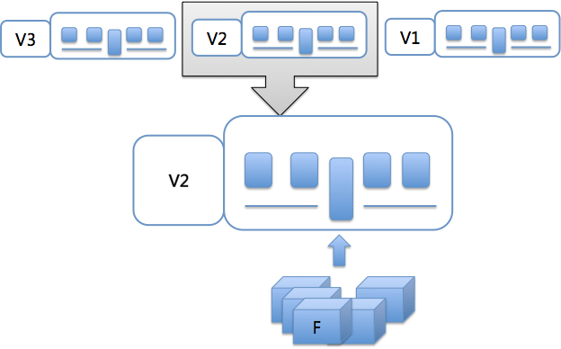
图 1 发布快车详解图
从这张图上，我们可以看到，每个版本（也就是每节车厢）都由多个功能组成。
关于发布快车还有三个关键点，容易被误解或者疏忽。
第一个关键点是，并不是说所有开发的功能，都一定要集成到最近的那节车厢、最近的那个版本中。任何功能都应该按照既定计划，规划纳入到适合的那节车厢、那个版本中。这也是为什么移动端 App 的持续交付需要良好的信息管理的原因。
第二个关键点是，我们必须要保证固定间隔的发车时间，每周、每两周都可以，但必须保证每个车厢到点即发。只有这样，我们才能保证持续交付流水线的持续运行，以及不间断地产出。这里需要注意的是，对于一些特殊的、不规则的发布，我们要把它们归类到热修复的流程，而不是在发布快车中处理。
第三个关键点是，这个过程的最终产物是可以发布到市场的版本，而不是发布到用户侧的版本。虽然我们把这个发布模式叫作发布快车，但其实它的最终产物是可以发布的待发布版本。所以这个流程完成后的版本没有被正式发布，或出现了部分缺陷无法发布的情况是很正常的，可以被接受。我们并不需要保证每个版本都一定能发布到用户手上。
发布快车的发布模式，特别是以上说的三个特性，非常符合移动 App 对持续交付的需求，即：分散开发，定期集成，控制发布。所以绝大部分的移动 App 团队，都选择采用发布快车的发布方式。
那么，如何才能实现这个发布快车模式的真实落地呢？
- 选择与发布快车模式匹配的代码分支策略；
- 改造出与发布快车模式匹配的构建通道；
- 实现发布流程的全自动化。
选择与发布快车模式匹配的代码分支策略
首先，选择一套与之匹配的代码分支管理策略，否则整个发布快车的实施会非常别扭。我们先一起回顾一下专栏的第 4 篇文章[《一切的源头，代码分支策略的选择》]。
我在这篇文章中介绍的代码分支策略中，Gitlab Flow 与 发布快车模式的思想看上去非常接近。那我们不妨推演一下，这个分支策略是否符合我们的需要。
首先，项目仓库的初始状态如图 2 所示。这里有一个版本 V1，代码仓库中有 2 个分支：Master，是集成分支；Production，是发布分支。
图 2 项目仓库的初始状态
然后，以 V1 的 commit 为基准，建立功能分支 1，并进行开发，如图 3 所示。
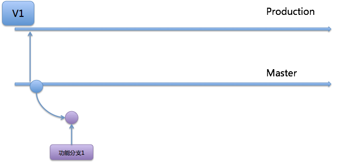
图 3 引入功能分支 1
如图 4 所示，功能分支 1 开发完成后，合并入 Master。测试通过之后形成版本 V2，V2 就可以作为待发布的产物了。另外，在形成 V2 之前，我们可以看到，另外一个功能分支 2 也被建立了，但这个功能分支并没有被合并到 Master，所以不会出现在版本 V2 中。
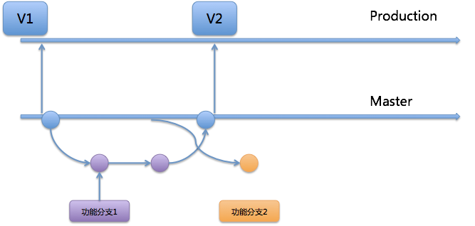
图 4 形成版本 2，并引入功能分支 2
从图 5 中，我们可以看到，V2 版本后，又出现了一个新的功能分支 3，它与功能分支 2 并行开发。这两个功能分支合并入 Master 之后，被同时附加到版本 V3 中。
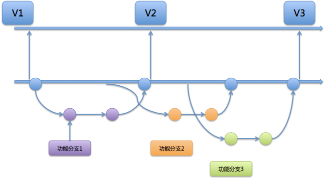
图 5 引入功能分支 3，并形成版本 3
正如以上的几个步骤，如果每个版本都是定时进行构建和打包，那么这样的代码分支管理模型就是一个典型的符合发布快车的物理实现了。
全新的构建通道
当然，为了发布快车模式的落地，我们只是建立与之配套的代码分支管理策略还远远不够，还需要有配套的构建通道。
你可能会问，发布快车模式的落地，为什么还要选择特定的构建通道呢？
我先和你说说发布快车，以及与之配套的代码分支策略的弱点都有哪些吧。
如果功能分支合入 Master 分支的过程缺乏校验，以及必要的构建检查的话，那么 Production 分支在进行自动定期构建时，就很容易产生问题，而一旦产生问题，就会错过这个要定期发布的版本。
如果这只会影响到一个或少数几个功能的话，还好；但设想一下，如果你要发布一个大版本，由于某个小功能而影响了所有的其他功能，是不是就得不偿失了呢？
所以，为了高效的持续交付，我们就必须对构建通道进行一定的改造。
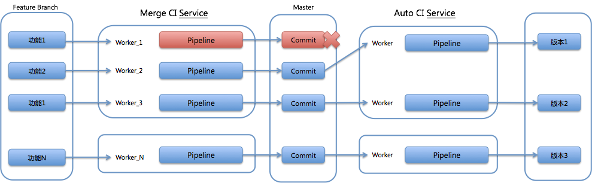
图 6 被改造后的构建通道
如图 6 所示，我们会在功能分支合并入 Master 分支前，增加一次构建（Merge CI Service），这次构建的作用是保证功能分支的集成是成功的，否则不允许合并；同时，对于一个代码仓库来说，增加的这次构建过程要保证是串行的，即如果这个仓库正有一个合并构建在进行，则后续的合并构建需要等待。
这个合并构建过程，保证了 Master 分支上的任何 commit 随时都可以成功构建。之后再根据发布快车的要求定期启动版本构建（Auto CI Service），就能顺利地得到可测试版本了。
构建测试版本之后，流水线还可以继续处理，在 production 分支上打上对应的 tag。
自动化的发布
构建通道建立之后，就是发布了。我在上一篇文章中提到，移动 App 的发布与后端服务有所区别。移动 App 的发布，需要特别注意这两点需求：
- 通常在发布到市场之前，会先发布内部，进行针对新功能的内测；
- 通常，为了节省调试信息带来的额外开销，内部发布会采用 debug 包，而正式发布则采用 release 包。
但是，从另一方面看，相比于后端服务的发布，移动 App 的发布步骤固定，且逻辑相对简单。
- iOS 系统的发布步骤为：构建，导出 ipa 包，记录符号表，备份，上传至 iTC；
- Android 系统的发布步骤为：构建打包，更新渠道标识，签名，保存 mapping 文件，备份，上传至发布点。
理解了 iOS 和 Android 系统各自的发布步骤，我们就可以很容易地做到发布自动化了。
比如，针对 iOS 的版本发布来说，在构建和打包之后，我们可以获取到对应的 ipa 包，关联对应的版本信息元数据后，就可以上传到内部的发布站点，供 QA 下载测试了；或者上传到 Apple TestFlight 进行公测；当然也可以部署到 App Store 了。
接下来，我就和你详细说说如何做到发布的自动化。
你可以使用 Fastlane 等类似的工具完成整个发布过程，还可以根据不同发布的渠道定义各自的 lane。当然 Fastlane 也可以提供打包等一系列 Action，帮助你完成自动化。
lane :release do # 发布到 AppStore
increment_build_number # 自增版本号的方法
cocoapods # 更新 pod
gym # 打包
deliver(force: true) # 发布到 AppStore
end
这是一段最简单的 Fastfile 脚本。它的功能是：利用 Fastlane 提供的 Action 完成了打包，并发布到 AppStore。另外，你还可以在 Appfile（Fastlane 用来描述 App 基本信息的专用描述文件）中定义关于 App 的信息。
当然，你还可以按照发布流程的需求定义自己的 lane 和 Action，完成不同的操作。
private_lane :build do |options|
project = options[:project] # 获取项目对象
build_number = project.build_number # 获取项目定义的版本号
gym(
workspace: project.workspace, # 编译工作空间
configuration: project.config, # 编译配置
include_symbols: true, # 是否包含符号
scheme: project.scheme, # 编译计划
xcargs: "BUILD_NUMBER=#{build_number}", # 版本号
build_path: project.package_path, # 编译路径
output_directory: project.package_path, #ipa 包输出地址
output_name: project.ipa_name, #ipa 包的名字
silent: false) # 编译 Action
end
这段代码展示的就是，用 gym action 构建一个自定义的、带参数的完整的构建过程了。我们可以看到，这里的参数是具体的一个 project 对象。当然，这里还有一个叫作 output_directory 的参数，你可以利用这个参数把构建的 ipa 包放到内部的下载地址。
这样看，移动 App 的自动化发布是不是很简单？https://github.com/fastlane/examples这里还有更多相关的例子，你可以参考它们完成更加复杂的自动化发布。
总结
今天，我和你一起分享了移动客户端持续交付流水线的几个详细点：
- 利用发布快车的发布模式，可以有效地管理客户端的版本，保证研发工作按节奏持续向前进展；
- 采用带发布分支的 GitLab Flow 配合发布快车的模型，可以使其做到物理落地；
- 发布快车本身也有一些弊端，比如对 Master 分支的合并，检查不够严格的话，会拖累项目进度，因此我们采用改造构建通道的方式，避免了这个问题的产生；
- 移动 App 的发布，有其独特的流程，通常是先内测，后正式发布；但其流程相对固定，且容易自动化。所以，我的建议是，实现发布的完全自动化，以提高研发效率。
另外，我还介绍了 Fastlane 这样一个工具，能够帮助你快速完成自动化的实现。
当然，我今天所分享的只是移 App 持续交付流水线的一种方式。在工程实践中，不同的产品和组织，往往会存在不同的流水线。
所以，关于移动 App 的流水线，并没有对错、优劣之分，合适的才是最好的。
思考题
你所在的团队，移动 App 的持续交付流水线，有哪些点与我今天分享的内容有所不同？你可以分析出是什么原因导致了这些不同吗，又是否可以进行优化呢？
33 进阶，如何进一步提升移动APP的交付效率？
你好，我是王潇俊。今天我和你分享的主题是：进阶，如何进一步提升移动 App 的交付效率？
通过我在前面分享的《了解移动 App 的持续交付生命周期》和《细谈移动 App 的交付流水线（pipeline）》两个主题，你应该已经比较全面和细致地理解了移动客户端持续交付的整个过程。
当然，搭建持续交付体系的最终目的是，提升研发效率。所以，仅仅能把整个流水线跑起来，肯定满足不了你的胃口。那么，今天我就再和你聊聊，如何进一步提升移动 App 的交付效率。
提升交付效率的基本思路
同其他很多问题的解决方式一样，提升移动 App 持续交付的效率，也是要先有一个整体思路，再具体落实。
理解了移动 App 的交付流水线后，你很容易就能发现，它其实与后端服务的交付流水线十分相似。
后端持续交付流水线包括了：代码管理、环境管理、集成和编译管理、测试管理，以及发布管理这五个核心过程。而与之相比，移动 App 的运行形势决定了其在环境管理方面没有特别多的要求。
所以，我们可以从代码管理、集成和编译管理、测试管理，以及发布管理这四个方面来考虑问题。而将这四个方面直接对应到研发流程的话，就是标准的开发、构建、测试、发布过程。因此，移动 App 持续交付流水线的优化，我们只要从这四个过程中寻找优化点即可。
我们优化移动 App 持续交付体系的整体思路就是：首先找到这四个核心过程中存在的问题或瓶颈，再进行针对性的优化，从而达到提升效率的目的。
接下来，我们就逐一击破这四个核心过程中的难题吧。
如何提升开发效率？
从开发人员的角度看，提升效率最好的方法就是 2 个字：解耦。落到技术实现上来说，就是通过组件化形成合理的开发框架。
组件化是指，解耦复杂系统时将多个功能模块拆分、重组的过程。对于移动 App 来说可以横向地按功能模块进行组件化；也可以纵向地按照架构层次进行组件化。当然目前移动 App 的架构往往都已经比较复杂了，所以通常都是两者混合的模式。
组件化带来的好处包括：
- 方便拆分代码仓库，降低分支管理难度，提高开发并行度。 在上一篇文章《细谈移动 App 的交付流水线（pipeline）》中，我给出了一种适应发布快车模式的代码分支管理模型。试想一下，如果一个巨大的 App 的所有代码都集中在同一个代码仓库中，而所有的并行开发功能又都会形成一个个的功能分支的话，它们之间相互的影响将是难以想象的。 其实，任何一个代码仓库，当需要管理的并行分支超过 10 个时，都会让人头痛。所以，组件化的好处就是，对整个项目进行解耦，把不相干的功能组件从代码仓库这个层面进行隔离，以免互相影响。
- 组件可以多版本存在，通过依赖快速选取所需版本。 所有的组件都可以同时发布多个版本，发布的形式可以是代码包、二进制组件等等。这样做的好处是，对于组件的提供方和依赖方来说，只需要通过版本控制就能管理或者选取自己需要的组件功能，这种方式更符合编程习惯，也降低了减少沟通成本。
- 专业分工，形成更优的组织结构。 一旦实施组件化，各种更专业的通用组建会慢慢形成（比如网络处理、图片处理、语音处理等等），而这些更专业的组件，也会渐渐地由更专业的人或团队进行开发和维护，专业的分工使得研发效率得到进一步提升。 所以，组件化其实就是通过专业分工，提升了整个组织的开发效率。
当然，组件化并非完美无瑕，它同时也会引起一些问题，比如：
- 组件间的依赖问题。由于多组件、多版本的存在，加之它们之间的传递依赖，所以组件化之后的依赖管理问题不容小觑。
- 组件间的兼容问题。兼容性问题，是由组件间的依赖问题引发的，由此组件的发布管理也会成为瓶颈：组件间到底要不要兼容？出现了不兼容的情况，应该怎么办？
其实，组件化带来的这些负面影响，在开发人员的维度是看不到的，往往会发生在构建阶段。还好，这些问题并不是无解的。接下来，我们就一起看看构建阶段如何解决这些问题，并提高效率吧。
如何提升构建效率？
从目前业界流行的处理方法来看，提升构建阶段的效率，可以从扁平化依赖管理和二进制交付两个维度解决。
第一，扁平化依赖管理
组件的依赖问题，到底有多让人头痛。我们一起来看看图 1 中的组件依赖示例吧。
一个 App 中的两个组件 B 和 C 都依赖了组件 G，但依赖的却是组件 G 的不同版本。所以，这个组件 G 的 2 个版本间就发生了冲突。
由此可见，由传递依赖带来的不确定性，是我们经常会遇见并非常讨厌的组件依赖形式。因为发现和处理的成本都很高。
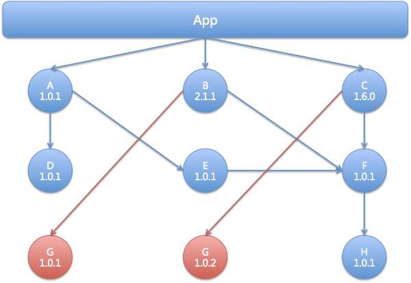
图 1 组件依赖冲突
通常情况下，一个移动 App 可以拆分出十几到几十个组件。大型的移动 App，如淘宝、美团，甚至可以拆分出几百个组件。要保证这么多组件间依赖传递的准确性，其难度非常大。所以，为了解决这个问题，业界现在普遍直接采用扁平化的依赖管理方式，减少甚至去除传递依赖，以此避免组件、版本冲突的问题。
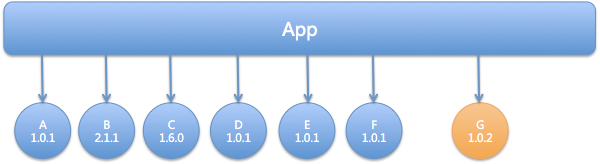
图 2 扁平化依赖
而且，这样的扁平化管理方式，对于一个 App 版本来说，更清晰、直观。
那么，实现这种扁平化的管理方式，需要具备什么前提吗。
答案，当然是需要。这个前提就是：不同组件之间，以及不同版本之间要保证可兼容。但是，你我都清楚，要想保证全部版本的完全可兼容性，其成本是巨大的。所以，在实践中，我们不会去保证所有版本的绝对兼容，而是去实现所有版本、组件间的相对兼容性。
相对兼容性是指，每个组件在发布新版本时，对于其所依赖的其他组件，都选择组件仓库中的最新版本。这样就保证了这个组件在发布之后的兼容性。如果所有组件都可以这么做，就能保证其各自都兼容。但是这个方法不是绝对的，比如我们会遇到并发发布，或者多个组件间引起的功能逻辑的冲突等问题，所以还是需要对移动 App 进行集成测试。
第二，二进制交付
解决了组件的依赖问题之后，我们需要再考虑的问题是，如何才能提高编译速度。
传统的移动 App 组件集成及编译的方式如图 3 所示。组件先以源码的方式集成到目标项目，然后对整个项目进行编译。如果组件比较多的话，采用这种方式的编译时间会非常长。有时，甚至要编译 1 个多小时。显然，我们不会接受这种低效的集成与编译方式。
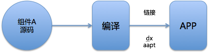
图 3 组件源码集成
所以，为了加快编译速度，业界通常会采用二进制交付和集成的方案。如图 4 所示，二进制交付，会优先把组件编译成二进制包，再形成版本，并通过组件仓库进行版本管理，正如图中的组件 A Lib 包。在真正编译时，我们只要直接链接二进制包就可以了，无需再进行一次编译。
图 4 二进制交付及集成
使用二进制包的方式，可以帮我们大幅提升移动 App 的编译速度。而且，因为有了中间交付物，我们可以采用与后端服务一样的方式，在本地缓存需要依赖的组件，进一步加速编译过程。
通过对开发、构建过程的优化，我们已经将原来的交付效率至少提高了 1 倍。
接下来，我们再一起看看，如何优化测试和发布流程，以求移动 App 的持续交付体系更高效。
如何提升测试效率？
提高移动 App 测试效率的方法，主要的思路有三个：
- 代码静态扫描工具。 移动 App 的测试，同样可以使用与后端服务一样的代码静态扫描工具。但相比之下，后端服务通常使用的那些工具虽然普适性强，但太重且定制的门槛也很高；所以针对移动 App 的代码静态扫描，目前多数大厂都采用自研的方式，定制静态代码扫描工具。另外，针对移动 App 开源的静态代码扫描工具，如 Lint 等，已经可以满足小团队的使用了。
- UI 自动化测试。 这部分的关注点是成本和收益比，你我都清楚，UI 自动化测试的脚本维护成本高，导致其难以被大规模使用。所以，针对重要的模块和组件，有计划地使用 UI 自动化测试是重中之重。
- 自动 Monkey 测试。 Monkey 是一款非常好用的探索性测试工具，可以大幅提升测试效率，有效解决手工测试的盲点。iOS 系统的测试，由于系统限制比较多，所以可以在模拟器上执行 Monkey 的方式。
合理地利用这些测试工具和方法，就可以有效提升客户端的测试效率。
当然在测试过程中，合理地搭配监控工具，如性能监控、白屏检测等，可以起到更好的作用。
如何提升发布效率？
在前面两篇文章中，我提到过，移动 App 的发布流程与后端服务相比差别较大，根本原因在于移动 App 天生具备的分批发布特性。
所以，提升移动 App 的发布效率，我们也要采用与后端服务不一样的方式。在这里，我总结了提升移动 App 发布效率，需要注意的两个问题：
- 要注意分发的精准性。精准性指的是，分发的目标、数量、时长，以及渠道一定要合理、有效，否则就会消耗无谓的分发成本。 这里，我和你分享一个关于分发精准性的技巧。其实，说是技巧，更不如说是大家在发布过程中容易疏忽的内容。为了进行小批量的测试，通常我们都会准备一个针对性的测试用户名单。但是，你有没有想过这份名单的更新周期呢？我看到很多组织都极少更新这份名单，其实这样既对用户体验不好，也会影响测试结果。小白鼠也要时常替换的，否则就会失去实验价值。 关于这份名单的更新周期，我的建议是：结合业务实际情况，尽量避免一个用户连续多次成为小白鼠。
- 要注意分发的稳定性。稳定性指的是，在分发的过程中，一定要做好监控数据的收集和分析，并且要考虑好风险的处理以及必要的回滚和热修复手段。 这里，我也和你分享一个关于稳定性的技巧。提高分发稳定性的一个方法就是，减少分发时更新的内容，并同时减少更新的时间。而对于移动 App 来说，静态资源包的差分发布就是一个优化方案。 比如，携程在选择静态资源包的差分发布时，就经历了这样一个优化过程：从全量包发布，到文件二进制差分，再到预差分。前两个方案都是在更新时，进行差分；而预差分则是在版本发布时，就已经做好了差分计算。与前两种方案相比，预差分的目的就是减少更新时间。但预差分的缺点是，可能要对所有要发布的版本进行差分处理，这将是一个巨大的笛卡尔积。 所以，携程在经历几次尝试后，最终选择的方案是：结合全量包发布、文件二进制差分，以及预差分三种方案的特点，形成了按需差分的方案。即，先收集用户正在使用的版本，然后只做这些版本与最新版本的差分，从而减少差分处理的成本。
在我看来，确保每次分发的有效性，以及每次分发都能达到预期，就是提高移动 App 发布效率的一种最有效的手段。
总结
在了解了移动 App 持续交付体系的内容后，你就可以自己去动手搭建一套持续交付体系了。持续交付体系搭建起来后，我们需要考虑的问题就成了，如何优化这个体系的流程，提升这个体系的效率。为此，我从开发、构建、测试和发布这四个核心流程的角度，和你分享了一些实践经验：
- 利用组件化的思想提升开发效率，但同时也会带来组件依赖及发布的问题；
- 利用扁平化依赖管理的方法解决组件依赖和发布的问题，同时采用二进制交付的方式，进一步提高构建效率；
- 合理利用静态代码扫描、UI 自动化、自动 Monkey 等测试工具和方法，进一步提升测试效率；
- 确保分发的精准性和稳定性，是提升发布效率的有效手段。
至此，通过持续交付移动 App 的三篇文章，再结合着以前我分享的后端服务的持续交付体系的内容，你完全可以自己厘清构建移动 App 持续交付体系的流程了，也知道了如何去优化这个流程。
希望这些内容，可以开拓你的思路，能够帮助你解决实际项目中遇到的问题。如果你还有哪些不清楚的内容，欢迎你留言和我一起讨论。
思考题
在今天的分享中，我介绍了一种扁平化依赖管理的方法。在实际工作中，你是如何管理依赖和 bundle 的呢？
34 快速构建持续交付系统（一）：需求分析
从今天这一篇文章开始，我们就进入这个专栏的最后一个系列：实践案例系列了。在这个系列里，我将通过 4 篇文章，以实际操作为主，带你快速构建一套持续交付系统。
当然，首先我们要做的是，一起整理一下思路，看看我们的系统具体要满足哪些实际的需求，需要具备什么功能。然后，建立需求的锚点，根据这些锚点，展开具体的搭建工作。
因此，在这篇文章中，我会以先介绍模拟团队和项目，再提出具体持续交付需求的思路，罗列一些要模拟的背景，并为你解说这些场景。这样做，可以帮助你在后面的三篇实践文章中找到对应的需求点，也可以让你与现在团队的持续交付体系作一番比较，找到相通之处，从而加深你对持续交付体系的理解。
模拟团队介绍
我在第 7 篇文章[《“两个披萨”团队的代码管理实际案例》]中，和你分享了“两个披萨”团队的代码管理实践。基本上，我们可以把一个这样的团队看作是一个微型研发团队。虽然这样规模的一个团队也可以很好地运用我们即将搭建的持续交付系统，但是因为过于理想化而缺乏了典型性。
所以，为了更全面地介绍持续交付系统的搭建过程，我将要模拟的团队规模扩大至 3 个“两个披萨”团队的大小。即，整个产品的研发，需要由这 3 个团队合作完成。这 3 个团队的分工，如下表所示：
| 团队 1 | 团队 2 | 团队 3 | |
|---|---|---|---|
| 职责 | 中间件服务 | 业务后台服务 | 业务客户端服务 |
| 代码管理 | Git | Git | Git |
| 语言平台 | Java | Java | React Native |
| 交付产物 | 服务 /Jar | 服务 /War | App |
由这样 3 个团队组成的中小型研发组织架构，也是目前互联网公司比较流行的。
模拟系统介绍
介绍完模拟团队的情况，接下来，我们需要再了解一下需要模拟的系统。对于持续交付体系来说，系统的业务逻辑并不是要解决的最重要的问题。因为不管业务逻辑如何，持续交付的过程大致都是相通的，都包括了代码管理、环境管理、集成编译管理、测试管理和发布管理这五大步骤。
反而，系统之间如何集成运作，以及依赖关系、交付形式，关系着这持续交付系统应该如何实现，才是更重要的内容。
在这里，我们要模拟的这个系统，最终表现为移动 App 持续交付体系的形式，需要中间件、业务后台，以及业务客户端这 3 个团队交付产物的协作，才算是完整：
- 首先，用户通过团队 3 交付的移动 App 进行系统操作；
- 其次，移动 App 需要调用团队 2 提供的业务后台服务 War，获取数据和处理业务逻辑；
- 最后，后台服务 War 需要依赖团队 1 提供的业务中间件 Jar，完成底层操作，如配置读取、缓存处理等。
这三个团队的依赖关系和交付产物，也决定了他们要采用不同的交付方式：
- 团队 1，有两类交付方式：
- 第一类是，中间件服务的交付，使用传统的虚机部署，提供可部署的代码包；
- 第二类是，中间件组件的交付，使用 Jar 包发布，发布到组件仓库。
- 团队 2 的交付方式是，后台服务使用 Docker 交付，部署在 k8s 集群上。
- 团队 3 的交付方式是，标准的 iOS App 交付。
这也是目前比较流行的移动互联网系统的架构形式，当然其中也覆盖了目前流行的容器交付。如果你现在要在一个微型研发团队搭建这样的持续交付系统，那你也可以根据这样的架构形式做适当裁剪，去除一些不需要的功能，顺利达成持续交付的目的。
主体流水线的需求
模拟团队对整个持续交付流水线的需求如下图所示：
整个过程可以大致描述为：代码合并到 master 后能够自动触发对应的集成编译，如编译通过则部署到对应的测试环境下，部署成功后驱动自动化测试，测试通过则分批部署到生产环境。
主体流水线发生的状态变更，都需要通过 E-mail 通知发起人。这里的发起人就是代码提交者和合并审核人。
这条主体流水线，看上去很简单、功能明确。但是，麻雀虽小五脏俱全。因此，各个步骤还都有一些细节实现上的要求。接下来，我们就一起看一下吧。
代码与配置管理相关的需求
3 个模拟团队的代码分支策略均采用标准的 GitLab Flow 模型，要求是代码通过 code review 后才能合并入 master 分支；合并入 master 分支后，能够触发对应的集成编译。
同时，我们需要代码静态扫描服务，帮助我们更好地把控代码质量。这个服务的具体工作形式是：
因为代码扫描是异步处理的，所以扫描过程将在代码编译通过之后开始。而扫描结果，则作为是否可继续流水线的依据。
这里需要注意的是，整个代码扫描过程是异步进行的，所以在没有得到扫描结果前，主体流水线将继续进行。
如果主体流水线已经执行完，而代码扫描还没结束，也就是还没有得到扫描结果的话，整条流水线需要停下来等待；而如果在执行主体流水线的过程中，代码静态扫描的结果是不通过的话，那么就需要直接中断主体流水线的执行，此次交付宣告失败。
构建与集成相关的需求
我们对编译与集成的要求，具体可以概括为以下几点：
首先，能够同时支持传统的部署包、Docker 镜像，以及移动 App 的编译和集成。而且能够在触发编译时自动进行适配支持，这样才能保证各个团队有新项目时无须再进行额外配置。
其次，所有构建产物及构建历史，都能被有效、永久地记录和存储。因为单从传统的编译驱动管理角度看，它以编译任务为基准，需要清除过久、过大的编译任务，从而释放更多的资源用于集成编译。但是，从持续交付的角度看，我们需要完全保留这些内容，用于版本追溯。
再次，各构建产物有自己独立的版本体系，并与代码 commit ID 相关联。这是非常重要的，交付产物的版本就是它的唯一标识，任何交付物都可以通过版本进行辨识和追溯。
最后，构建通道必须能够支持足够的并发量。这也就要求集成构建服务要做到高可用和可扩展，最好能做到资源弹性利用。
打包与发布相关的需求
要清楚打包与发布的需求，就需要先了解各个团队的部署标准和环境状况。
从这 3 个团队交付产物的角度来看，他们需要的环境，可以描述如下：
- 团队 1，提供中间件服务。其测试服务器需要 1 个集群，2 台虚拟机；生产环境需要 2 个集群，各 7 台虚拟机。
- 团队 2 ，提供业务后台服务。其测试服务器需要 1 个集群，2 个 Docker 实例；生产环境需要 2 个集群，各 7 个 Docker 实例。
- 团队 3，交付移动 App。其需要的环境就是内部测试市场。
整个发布体系，除了要考虑标准的 War 包和 Docke 镜像发布外，我们还要考虑 Jar 包组件的发布。因为团队 1 的 Jar 包对应有两类交付方式，所以对 Jar 包的发布，我们需要做一些特殊考虑：
- 测试环境可以使用 Snapshot 版本，但是生产环境则不允许；
- 即使测试通过，也不一定需要发布 Jar 包的每个版本到生产环境；
- Jar 包是发布到对应的组件仓库，发布形式与其他几类差别（比如，War 包、Docker 镜像等）较大。
基于以上的考虑，我们需要对 Jar 包的发布做特殊的系统处理。
另外，为了发布过程更加可控，我们需要对代码目录、进程管理、日志格式等进行统一的标准化。这部分标准化的具体内容，我将穿插在具体实现时再做详细说明。
自动化测试的需求
在这里，我们的自动化测试平台，选择的是 TestNG，这也是业界最为流行的自动化测试平台之一。
对于测试，系统需要注意的是，不要有一个测试任务失败就中断交付，最好是跑完所有测试任务，并收集结果。当然，我们可以通过 TestNG 平台，很容易做到这一点。
相反，另外一点倒是我们要注意的，就是“停不下来”。比如测试脚本出现死循环。
除此之外，自动化测试过程中还会发生许多意想不到的事情，特别是造成了一些破坏，使得测试过程无法正常继续等情况。所以，我们需要能够处理这样的异常，比如加上超时机制，使持续交付系统能够继续正常运作。
总结
今天，我通过对要模拟的团队和系统的介绍，引出了我们即将实战搭建的这套持续交付系统的需求锚点。这里，我再概括一下整个持续交付体系的需求：
要模拟的团队有 3 个，分别为中间件团队、后端业务团队和移动 App 团队，3 个团队最终产出一个可工作的移动 App。
而模拟团队在持续交付主体流水线的需求下，对各个主要模块还有一些具体的需求：
- 代码与配置：需要 code review，以及静态代码扫描；
- 构建与集成：能同时支持 Jar、War、Docker，以及 App，版本管理可追溯，支持高并发；
- 打包与发布：同时支持 Jar、War、Docker、App 的发布，以及统一的部署标准；
- 自动化测试：通过 TestNG 驱动，实现全自动测试。
从下一篇文章开始，我会通过开源工具和你一起解决这些需求，最终完成成这套系统的搭建。
思考题
在这一篇文章中，我们模拟的是一个比较完整的团队，而在实际项目中你的团队是不是更小？如果是的话，在建设持续交付体系的过程中，你会裁剪掉哪些需求呢？
35 快速构建持续交付系统（二）：GitLab 解决代码管理问题
在上一篇文章中，我和你一起理清了我们即将构建的持续交付系统的需求，以及要具备的具体功能。那么，从这一篇文章开始，我们就要正式进入实战阶段了。我会和你详细介绍基于开源工具，从 0 开始搭建一套持续交付平台的详细过程，以及整合各个持续交付工具的一些技术细节。
按照我在前面分享的内容，搭建一套持续交付系统的第一步，就是搭建一套代码管理平台。这里我选择的开源工具是 GitLab，它是一套高仿 GitHub 的开源代码共享管理平台，也是目前最好的开源解决方案之一。
接下来，我们就从使用 GitLab 搭建代码管理平台开始吧，一起看看搭建 GitLab 平台的过程中可能遇到的问题，以及如何解决这些问题。
利用 GitLab 搭建代码管理平台
GitLab 早期的设计目标是，做一个私有化的类似 GitHub 的 Git 代码托管平台。
我第一次接触 GitLab 是 2013 年, 当时它的架构很简单，SSH 权限控制还是通过和 Gitolite 交互实现的，而且也只有源码安装（标准 Ruby on Rails 的安装方式）的方式。
这时，GitLab 给我最深的印象是迭代速度快，每个月至少会有 1 个独立的 release 版本，这个传统也一直被保留至今。但是，随着 GitLab 的功能越来越丰富，架构和模块越来越多，也越来越复杂。
所以，现在基于代码进行部署的方式就过于复杂了, 初学者基本无从下手。
因此，我建议使用官方的 Docker 镜像或一键安装包 Omnibus 安装 GitLab。
接下来，我就以 Centos 7 虚拟机为例，描述一下整个 Omnibus GitLab 的安装过程，以及注意事项。
在安装前，你需要注意的是如果使用虚拟机进行安装测试，建议虚拟机的“最大内存”配置在 4 G 及以上，如果小于 2 G，GitLab 可能会无法正常启动。
安装 GitLab
- 安装 SSH 等依赖，配置防火墙。
sudo yum install -y curl policycoreutils-python openssh-server
sudo systemctl enable sshd
sudo systemctl start sshd
sudo firewall-cmd --permanent --add-service=http
sudo systemctl reload firewalld
- 安装 Postfix 支持电子邮件的发送。
sudo yum install postfix
sudo systemctl enable postfix
sudo systemctl start postfix
- 从 rpm 源安装，并配置 GitLab 的访问域名，测试时可以将其配置为虚拟机的 IP（比如 192.168.0.101）。
curl https://packages.gitlab.com/install/repositories/gitlab/gitlab-ee/script.rpm.sh | sudo bash
sudo EXTERNAL_URL="http://192.168.0.101" yum install -y gitlab-ee
整个安装过程，大概需要 10 分钟左右。如果一切顺利，我们已经可以通过 “http://192.168.0.101” 这个地址访问 GitLab 了。
如果你在安装过程中，遇到了一些问题，相信你可以在GitLab 的官方文档中找到答案。
配置 GitLab
安装完成之后，还要进行一些系统配置。对于 Omnibus GitLab 的配置，我们只需要重点关注两方面的内容：
- 使用命令行工具 gitlab-ctl，管理 Omnibus GitLab 的一些常用命令。 比如，你想排查 GitLab 的运行异常，可以执行 gitlab-ctl tail 查看日志。
- 配置文件 /etc/gitlab/gitlab.rb，包含所有 GitLab 的相关配置。邮件服务器、LDAP 账号验证，以及数据库缓存等配置，统一在这个配置文件中进行修改。 比如，你想要修改 GitLab 的外部域名时, 可以通过一条指令修改 gitlab.rb 文件：
external_url 'http://newhost.com'
然后，执行 gitlab-ctl reconfigure 重启配置 GitLab 即可。
关于 GitLab 更详细的配置，你可以参考官方文档。
GitLab 的二次开发
在上一篇文章中，我们一起分析出需要为 Jar 包提供一个特殊的发布方式，因此我们决定利用 GitLab 的二次开发功能来满足这个需求。
对 GitLab 进行二次开发时，我们可以使用其官方开发环境 gdk（ https://gitlab.com/gitlab-org/gitlab-development-kit）。但，如果你是第一次进行 GitLab 二次开发的话，我还是建议你按照 https://docs.gitlab.com/ee/install/installation.html 进行一次基于源码的安装，这将有助于你更好地理解 GitLab 的整个架构。
为了后面更高效地解决二次开发的问题，我先和你介绍一下 GitLab 的几个主要模块：
- Unicorn，是一个 Web Server，用于支持 GitLab 的主体 Web 应用；
- Sidekiq，队列服务，需要 Redis 支持，用以支持 GitLab 的异步任务；
- GitLab Shell，Git SSH 的权限管理模块；
- Gitaly，Git RPC 服务，用于处理 GitLab 发出的 git 操作；
- GitLab Workhorse，基于 Go 语言，用于接替 Unicorn 处理比较大的 http 请求。
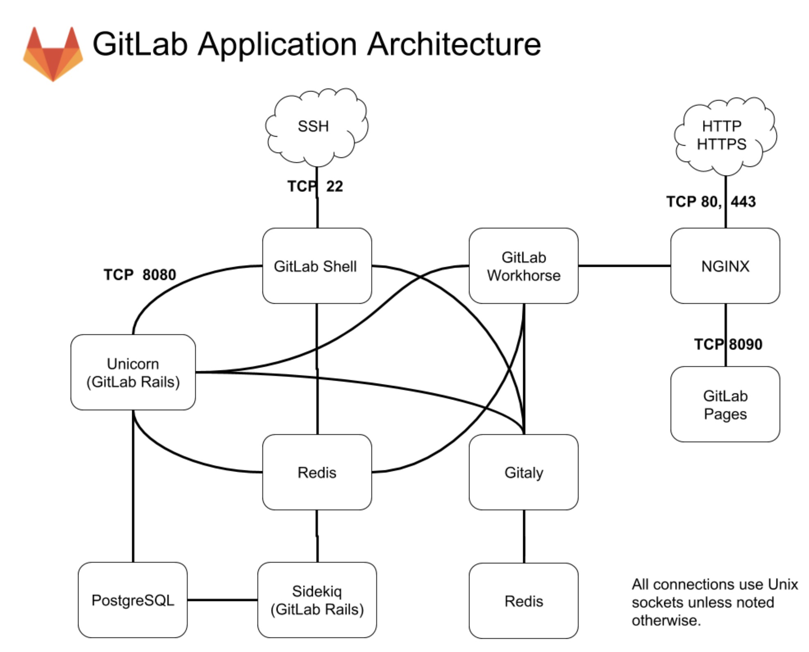
图 1 GitLab 架构图（引自 GitLab 官网）
对 GitLab 应用层的修改，我们主要关注的是 GitLab Rails 和 GitLab Shell 这两个子系统。
接下来，我们一起看一个二次开发的具体实例吧。
二次开发的例子
二次开发，最常见的是对 GitLab 添加一个外部服务调用，这部分需要在 app/models/project_services 下面添加相关的代码。
我们可以参考 GitLab 对 Microsoft Teams 的支持方式：
- 在 app/models/project_services/microsoft_teams_service.rb 下，添加一些可配置内容及其属性，这样我们就可以在 GitLab 的 service 模块页面下看到相应的配置项了。
# frozen_string_literal: true
class MicrosoftTeamsService < ChatNotificationService
def title
'Microsoft Teams Notification'
end
def description
'Receive event notifications in Microsoft Teams'
end
def self.to_param
'microsoft_teams'
end
def help
'This service sends notifications about projects events to Microsoft Teams channels.<br />
To set up this service:
<ol>
<li><a href="https://msdn.microsoft.com/en-us/microsoft-teams/connectors">Getting started with 365 Office Connectors For Microsoft Teams</a>.</li>
<li>Paste the <strong>Webhook URL</strong> into the field below.</li>
<li>Select events below to enable notifications.</li>
</ol>'
end
def webhook_placeholder
'https://outlook.office.com/webhook/…'
end
def event_field(event)
end
def default_channel_placeholder
end
def default_fields
[
{ type: 'text', name: 'webhook', placeholder: "e.g. #{webhook_placeholder}" },
{ type: 'checkbox', name: 'notify_only_broken_pipelines' },
{ type: 'checkbox', name: 'notify_only_default_branch' }
]
end
private
def notify(message, opts)
MicrosoftTeams::Notifier.new(webhook).ping(
title: message.project_name,
summary: message.summary,
activity: message.activity,
attachments: message.attachments
)
end
def custom_data(data)
super(data).merge(markdown: true)
end
end
- 在 lib/microsoft_teams/notifier.rb 内实现服务的具体调用逻辑。
module MicrosoftTeams
class Notifier
def initialize(webhook)
@webhook = webhook
@header = { 'Content-type' => 'application/json' }
end
def ping(options = {})
result = false
begin
response = Gitlab::HTTP.post(
@webhook.to_str,
headers: @header,
allow_local_requests: true,
body: body(options)
)
result = true if response
rescue Gitlab::HTTP::Error, StandardError => error
Rails.logger.info("#{self.class.name}: Error while connecting to #{@webhook}: #{error.message}")
end
result
end
private
def body(options = {})
result = { 'sections' => [] }
result['title'] = options[:title]
result['summary'] = options[:summary]
result['sections'] << MicrosoftTeams::Activity.new(options[:activity]).prepare
attachments = options[:attachments]
unless attachments.blank?
result['sections'] << {
'title' => 'Details',
'facts' => [{ 'name' => 'Attachments', 'value' => attachments }]
}
end
result.to_json
end
end
end
以上就是一个最简单的 Service 二次开发的例子。熟悉了 Rails 和 GitLab 源码后，你完全可以以此类推写出更复杂的 Service。
GitLab 的 HA 方案
对于研发人员数量小于 1000 的团队，我不建议你考虑 GitLab 服务多机水平扩展的方案。GitLab 官方给出了一个内存对应用户数量的参照，如下：
16 GB RAM supports up to 2000 users 128 GB RAM supports up to 16000 users
从这个配置参照数据中，我们可以看到一台高配的虚拟机或者容器可以支持 2000 名研发人员的操作，而单台物理机（128 GB 配置）足以供上万研发人员使用。
在携程，除了要支持开发人数外，还要考虑到高可用的需求，所以我们经过二次开发后做了 GitLab 的水平扩展。但是，即使在每天的 GitLab 使用高峰期，整机负载也非常低。因此，对于大部分的研发团队而言，做多机水平扩展方案的意义并不太大。
同时，实现 GitLab 的完整水平扩展方案，也并不是一件易事。
图 2 GitLab 官方 HA 方案（引自 GitLab 官网）
我们先看一下社区版的 GitLab，官方提供的 HA 方案的整体架构图可参考图 2。从整体架构上看，PostgreSQL、Redis 这两个模块的高可用，都有通用的解决方案。而 GitLab 在架构上最大的问题是，需要通过文件系统在本地访问仓库文件。于是，水平扩展时，如何把本地的仓库文件当做数据资源在服务器之间进行读写就变成了一个难题。
官方推荐的方案是通过 NFS 进行多机 Git 仓库共享。但这个方案在实际使用中并不可行，git 本身是 IO 密集型应用，对于真正在性能上有水平扩展诉求的用户来说，NFS 的性能很快就会成为整个系统的瓶颈。我早期在美团点评搭建持续交付体系时，曾尝试过这个方案，当达到几百个仓库的规模时，NFS 就撑不住了。
对于水平扩展这部分内容，有一个非常不错的分享：阿里的《我们如何为三万人的公司横向伸缩 GitLab》。但是，实施这个方案，你需要吃透 Git 的底层，所以并不容易实施。
而携程的解决方案就比较简单了：
我们在应用层处理这个问题，根据 Git 仓库的 group 名字做了一个简单切分，并使用 ssh2 对于 Git 访问做一次代理，保证对于不同项目的 http 访问，能够分配到确定的机器上。
这个方案的优点是，实施起来相对简单，缺点是无法向上兼容，升级 GitLab 会比较麻烦。
当然，你还可以参考GitLab 的官方建议，并结合我分享的经验完成自己的 HA 方案。
如何应对代码管理的需求？
我们先一起回忆一下，上一篇文章中，我们对代码管理平台的需求，即要求能够支持 3 个团队的开发工作，且具备 code review 和静态代码检查的功能。
要实现这些需求，我需要先和你介绍一下 GitLab 提供的几个比较重要的功能。
了解 GitLab 提供的功能
Gitlab 作为开源的代码管理平台，其原生也提供了不少优秀的功能，可以直接帮助我们解决上一篇文章中的一些需求。这些功能主要包括：
- Merge Requests 分支代码审核合并功能，关于 Merge Request 和分支策略。你可以回顾一下第四篇文章[《 一切的源头，代码分支策略的选择》]和 第七篇文章[《“两个披萨”团队的代码管理实际案例》]的内容。 之后就是，我们根据不同的团队性质，选择不同的分支管理策略了。 比如，在我们的这个系统中：中间件团队只有 6 个开发人员，且都是资深的开发人员，他们在项目的向下兼容方面也做得很好，所以整个团队选择了主干开发的分支策略，以保证最高的开发效率。 同时，后台团队和 iOS 团队各有 20 个开发人员，其中 iOS 团队一般是每周三下午进行发布，所以这两个团队都选择了 GitLab Flow 的分支策略。
- issues 可以通过列表和看板两种视图管理开发任务和 Bug。在携程，我们也有一些团队是通过列表视图管理 Bug，通过看板视图维护需求和开发任务。
- CI/CD GitLab 和 GitLab-ci 集成的一些功能，支持 pipline 和一些 CI 结果的展示。携程在打造持续交付系统时，GitLab-ci 的功能还并不完善，所以也没有对此相关的功能进行调研，直接自研了 CI/CD 的驱动。 不过，由于 GitLab-ci 和 GitLab 天生的集成特性，目前也有不少公司使用它作为持续集成工作流。你也可尝试使用这种方法，它的配置很简单，可以直接参考官方文档。而在专栏中我会以最流行的 Jenkins Pipeline 来讲解这部分功能。
- Integrations Integrations 包括两部分：
- GitLab service，是在 GitLab 内部实现的，与一些缺陷管理、团队协作等工具的集成服务。
- Webhook，支持在 GitLab 触发代码 push、Merge Request 等事件时进行 http 消息推送。
我在下一篇文章中介绍的代码管理与 Jenkins 集成，就是通过 Webhook 以及 Jenkins 的 GitLab plugin 实现的。
理解了 GitLab 的几个重要功能后，便可以初步应对上一篇文章中的几个需求了。之后，搭建好的 GitLab 平台，满足代码管理的需求，我们可以通过三步实现：
- 创建对应的代码仓库；
- 配置 Sonar 静态检查；
- 解决其他设置。
接下来，我和你分享一下，每一步中的关键点，以及具体如何满足相应的代码需求。
第一步，创建对应的代码仓库
了解了 GitLab 的功能之后，我们就可以开始建立与需求相对应的 Projects 了。
因为整个项目包括了中间件服务、业务后台服务，以及业务客户端服务这三个职责，所以相应的我们就需要在 GitLab 上创建 3 个 group，并分别提交 3 个团队的项目。
- 对于中间件团队，我们创建了一个名为 framework/config 的项目。这个项目最终会提供一个配置中心的服务，并且生成一个 config-client.jar 的客户端，供后台团队使用。
- 后台服务团队的项目名为：waimai/waimai-service，产物是一个 war 包。
- 移动团队创建一个 React Native 项目 mobile/waimai-app。
第二步，配置 Sonar 静态检查
创建了三个代码仓库之后，为了后续在构建时进行代码静态检查，所以现在我们还需要做的就是配置代码静态扫描工具。而在这里，我依旧以 Sonar 为例进行下面详解。
我们在使用 SonarQube 服务进行静态检查时，需要注意的问题包括：
Sonar 的搭建比较简单，从 https://www.sonarqube.org/downloads/ 下载 Sonar 的压缩包以后，在 conf/sonar.properties 中配置好数据库的连接串，然后执行 bin/linux-x86-64/sonar.sh start 命令。之后，我们可以再查看一下日志 logs/sonar.log，当日志提示“SonarQube is up”时就可以通过 http://localhost:9000 访问 sonar 了。（如果你有不明白的问题，可以参考 https://docs.sonarqube.org/display/SONAR/Installing+the+Server）
和 GitLab 的扩展一般只能通过二次开发不同，Sonar 通过 plugin 的方式就可以完成扩展。在 extensions/plugins 目录下面已经预置了包含 Java、Python、PHP 等语言支持，以及 LDAP 认证等插件。你可以通过直接安装插件的方式进行扩展。
插件安装完成后，我们就可以尝试在本地使用 Maven 命令，对中间件和后台团队的 Java 项目进行静态检查了，React Native 项目则是通过 sonar-scanner 配合 ESLint 完成静态检查的。
GitLab 的 Merge Request 需要通过触发 Jenkins 构建 Sonar 来驱动代码的持续静态检查，至于如何集成我会在下一篇文章中和你详细介绍。
关于静态检查的更多知识点，你可以再回顾一下第二十五篇文章[《代码静态检查实践》]。
第三步，解决其他设置
经过创建对应的代码仓库、配置 Sonar 静态检查这两步，再配合使用 GitLab 提供的 Merge Request、Issues、CI/CD 和 Integration 功能，代码管理平台基本上就算顺利搭建完毕了。
之后剩余的事情包括：
- 为项目添加开发者及对应的角色；
- 根据分支策略，设定保护分支，仅允许 Merge Request 提交；
- 创建功能分支。
至此，我们需要的代码管理平台就真的搭建好了，开发人员可以安心写代码了。
总结及实践
在上一篇文章中，我们已经清楚了整个持续交付体系中，代码管理平台要具备的功能，所以今天我就在此基础上，和你一起使用 GitLab 完成了这个代码管理平台的搭建。
首先，我介绍了 GitLab 的安装及配置过程，并通过 Microsoft Teams 这个具体案例，介绍了如何完成 GitLab 的二次开发，以应对实际业务的需求。同时，我还介绍了 GitLab 的高可用方案。
然后，我针对代码管理平台要支持 3 个团队的 code reivew 和代码静态扫描的需求，和你分享了如何使用三步实现这些需求：
- 第一步，创建对应的代码仓库；
- 第二步，配置 Sonar 静态检查；
- 第三步，解决其他设置。
完成以上工作后，我们的代码管理平台就可以正式运作了，也为我们下一篇文章要搭建的编译构建平台做好了准备。
最后，希望你可以按照这篇文章的内容，自己动手实际搭建一套 GitLab，以及配套的 Sonar 服务。
36 快速构建持续交付系统（三）：Jenkins 解决集成打包问题
在上一篇文章中, 我和你一起利用开源代码平台 GitLab 和代码静态检查平台 SonarQube 实现了代码管理平台的需求。那么，我今天这篇文章的目的，就是和你一起动手基于 Jenkins 搭建集成与编译相关的系统。
Jenkins 的安装与配置
Jenkins 这个开源项目，提供的是一种易于使用的持续集成系统，将开发者从繁杂的集成工作中解脱了出来，使得他们可以专注于更重要的业务逻辑实现。同时，Jenkins 还能实时监控集成环境中存在的错误，提供详细的日志文件和提醒功能，并以图表的形式形象地展示项目构建的趋势和稳定性。
因此，在携程，我们选择 Jenkins 作为了代码构建平台。而为了用户体验的一致性，以及交付的标准化，携程针对 Java、.net 等用到的主要语言，为开发人员封装了对于 Jenkins 的所有操作，并在自研的持续交付平台中实现了整个持续交付的工作流。
而如果是第一次搭建持续交付系统，我建议你不用像携程这样进行二次开发，因为 Jenkins 本身就可以在持续交付的构建、测试、发布流程中发挥很大的作用，完全可以满足你的搭建需求。而且，它提供的 Pipeline 功能，也可以很好地驱动整个交付过程。
所以，在这篇文章中，我就以 Jenkins 为载体，和你分享如何搭建集成与编译系统。
第一步，安装 Jenkins
为了整个持续交付体系的各个子系统之间的环境的一致性，我在这里依然以 Centos 7 虚拟机为例，和你分享 Jenkins 2.138（最新版）的安装过程。假设，Jenkins 主机的 IP 地址是 10.1.77.79。
- 安装 Java 环境
yum install java-1.8.0-openjdk-devel
- 更新 rpm 源，并安装 Jenkins 2.138
rpm --import https://pkg.jenkins.io/redhat-stable/jenkins.io.key
wget -O /etc/yum.repos.d/jenkins.repo https://pkg.jenkins.io/redhat-stable/jenkins.repo
yum install jenkins
然后，我们就可以通过 “http://10.1.77.79” 访问 Jenkins 了，整个安装过程很简单。
当然，Jenkins 还有其他的安装方式，你可以参考 https://jenkins.io/doc/book/installing/。
第二步，配置 Jenkins 对 GitLab 的访问权限
Jenkins 安装完成之后，我们还需要初始化安装 Jenkins 的一些基础配置，同时配置 Jenkins 对 GitLab 的访问权限。
在新版的 Jenkins 中，第一次启动时会有一个初始化向导，引导你设置用户名、密码，并安装一些插件。
在这里，我推荐你勾选“安装默认插件”，用这种方式安装 Pipline、 LDAP 等插件。如果这个时候没能选择安装对应的插件，你也可以在安装完成后，在系统管理 -> 插件管理页面中安装需要的插件。
那么如何才能使编译和 GitLab、SonarQube 整合在一起呢？这里，我以一个后台 Java 项目为例，对 Jenkins 做进一步的配置，以完成 Jenkins 和 GitLab、SonarQube 的整合。这些配置内容，主要包括：
- 配置 Maven；
- 配置 Jenkins 钥匙；
- 配置 GitLab 公钥；
- 配置 Jenkins GitLab 插件。
接下来，我就逐一和你介绍这些配置内容吧。
- 配置 Maven
进入系统管理 -> 全局工具配置页面，安装 Maven，并把名字设置为 M3。如图 1 所示。
图 1 Maven 配置
这样配置好 Maven 后，Jenkins 就会在第一次使用 GitLab 时，自动安装 Maven 了。
- 配置 Jenkins 钥匙
配置 Jenkins 钥匙的路径是：凭据 -> 系统 -> 全局凭据 -> 添加凭据。
然后，将你的私钥贴入并保存。 如图 2 所示。
图 2 Jenkins 钥匙配置
- 配置 GitLab 公钥
在 GitLab 端, 进入 http://{Gitlab Domain}/profile/keys，贴入你的公钥并保存，如图 3 所示。
图 3 GitLab 公钥配置
通过配置 Jenkins 钥匙，以及配置 GitLab 公钥两步，你就已经完成了 Jenkins 对 GitLab 仓库的访问权限配置。
- 配置 Jenkins GitLab 插件
Jenkins 的 GitLab-plugin 插件的作用是，在代码提交和 Merge Request 时触发编译。安装这个插件的方法是：进入 Jenkins 的系统管理 -> 插件管理页面，选择 GitLab Plugin 安装。
Jenkins 重启后，选择凭据 -> 系统 -> 全局凭据 -> 添加凭据，再选择 GitLab API Token。然后，将 http://10.1.77.79/profile/personal_access_tokens中新生成的 access token 贴入 GitLab API Token，并保存。
关于 GitLab-plugin 插件的更详细介绍，你可以参考它的官方文档。
完成了这四步的必要配置之后，你就可以开始使用 Jenkins Pipline 构建集成与编译系统的工作流了。
使用 Jenkins Pipeline 构建工作流
在使用 Jenkins 搭建集成和编译系统前，我们先一起回忆一下我在[《快速构建持续交付系统（一）：需求分析》]中提到的关于集成与编译系统的需求：
我们需要在代码 push 之后，自动触发编译和集成。如果编译成功，这套系统还要能继续处理自动化测试和部署。并且，在整个过程中，这个系统要能自动地适配三种不同的代码平台和交付产物。
那么，如何才能驱动整个事务的顺利完成呢？这里，我们就需要用到大名鼎鼎的 Jenkins Pipeline 了。
Jenkins Pipeline 介绍
Jenkins Pipeline 是运行在 Jenkins 上的一个工作流框架，支持将原先运行在一个或多个节点的任务通过一个 Groovy 脚本串联起来，以实现之前单个任务难以完成的复杂工作流。并且，Jenkins Pipline 支持从代码库读取脚本，践行了 Pipeline as Code 的理念。
Jenkins Pipeline 大大简化了基于 Jenkins 的开发工作。之前很多必须基于 Jenkins 插件的二次开发工作，你都可以通过 Jenkins Pipeline 实现。
另外，Jenkins Pipeline 大大提升了执行脚本的可视化能力。
接下来，我就和你分享一下如何编写 Jenkins Pipeline，以及从代码编译到静态检查的完整过程。这个从代码编译到静态检查的整个过程，主要包括三大步骤：
- 第一步，创建 Jenkins Pipeline 任务；
- 第二步，配置 Merge Request 的 Pipeline 验证；
- 第三部，编写具体的 Jenkins Pipeline 脚本。
第一步，创建 Jenkins Pipeline 任务
首先，在 Jenkins 中创建一个流水线任务，并配置任务触发器。详细的配置，如图 4 所示。
图 4 触发器创建
然后，在 GitLab 端配置 Webhook。配置方法为：在 GitLab 项目下的 settings->Integrations 下配置并勾选 “Merge request events”选项。
经过这些配置后， 每次有新的 Merge Request 被创建或更新，都会触发 Jenkins 的 Pipeline，而再由自定义的 Pipeline 脚本完成具体任务，比如代码扫描任务。
第二步，配置 Merge Request 的 Pipeline 验证
在驱动代码静态扫描之后，我们还要做一些工作，以保证扫描结果可以控制 Merge Request 的行为。
进入 settings->Merge Request 页面, 勾选“Only allow Merge Requests to be merged if the pipeline succeeds”。这个配置可以保证，在静态检查任务中，不能合并 Merge Request。
第三步，编写具体的 Pipeline 脚本
然后我们再一起看一下为了实现我们之前的需求，即获取代码 - 编译打包 - 执行 Sonar 静态代码检查和单元测试等过程。Jenkins 端的 Pipeline 脚本如下，同时我们需要将该脚本配置在 Jenkins 中。
node {
def mvnHome
# 修改 Merge Request 的状态，并 checkout 代码
stage('Preparation') { // for display purposes
mvnHome = tool 'M3'
updateGitlabCommitStatus name: 'build', state: 'running'
checkout scm
}
# 执行 Maven 命令对项目编译和打包
stage('Build') {
echo 'Build Start'
// Run the maven build
sh "'${mvnHome}/bin/mvn' -Dmaven.test.skip=true clean package"
}
# 启动 sonar 检查，允许 junit 单元测试，获取编译产物，并更新 Merge request 的状态
stage('Results') {
// Run sonar
sh “'${mvnHome}/bin/mvn' org.sonarsource.scanner.maven:sonar-maven-plugin:3.2:sonar”
junit '**/target/surefire-reports/TEST-*.xml'
archive 'target/*.war'
updateGitlabCommitStatus name: 'build', state: 'success'
}
}
在这个脚本中，一共包括了 3 个 stage。
第一个 stage：
从 GitLab 中获取当前 Merge Request 源分支的代码；同时，通 Jenkins GitLab 插件将 Merge Request 所在的分支的当前 commit 状态置为 running。这个时候，我们可以在 GitLab 的页面上看到 Merge Request 的合并选项已经被限制了，如图 5 所示。
图 5 GitLab Merge Request
第二个 stage：
比较好理解，就是执行 Maven 命令对项目编译和打包。
第三个 stage：
通过 Maven 调用 Sonar 的静态代码扫描，并在结束后更新 Merge Request 的 commit 状态，使得 Merge Request 允许被合并。同时将单元测试结果展现在 GitLab 上。
通过以上这三步，我们已经完整地实现了这个集成和编译系统的需求，即：在 GitLab 端创建 Merge Request 时，预先进行一次代码扫描，并保证在代码扫描期间，代码无法被合并入主干分支，只有扫描通过后，代码才能被合并。
当然，这个示例的 Pipline 的脚本还比较简单。但掌握了基本的思路之后，在这个基础上，我们还可以添加更多的改进代码，达到更多的功能。
比如，我们在 Sonar 检测之后，可以调用 Sonar 的 API 获取静态检查的详细信息；然后，调用 GitLab 的 API，将静态检查结果通过 comment 的方式，展现在 GitLab 的 Merge Request 页面上，从而使整个持续集成的流程更加丰满和完整。
多语言平台构建问题
上面的内容，我以 Java 后台项目为例，详细介绍了 Jenkins Pipeline 的创建。 但是，在实际的工作中，整个编译平台需要支持的是多种语言。所以，我要再和你分享下多语言情况下，集成和编译系统可能会碰到的问题。
在这里，我将多语言栈情况下，集成与编译系统常会遇到的问题，归结为两类：
- 多语言 CI 流水线的管理；
- Jenkins Pipeline 的管理。
接下来，我们就一起看看，如何解决这两个问题吧。
多语言 CI 流水线管理
关于如何进行 Docker 编译和移动端编译的问题，你可以先回顾一下第 17 篇文章[《容器镜像构建的那些事儿》]，以及第 32 篇文章[《细谈移动 APP 的交付流水线》]的内容，并将相关的逻辑 Pipeline 化。
当然，对于 Docker 镜像和 iOS App 这两种不同的交付流水线，你还需要特别关注的几个点，我再带你回顾一下。
第一，Docker 镜像
对于构建 docker 镜像，我们需要在静态检查之后增加一个 stage，即：把 Dockerfile 放入代码仓库。Dockerfile 包括两个部分：
- base 镜像的定义，包括 Centos 系统软件的安装和 Tomcat 环境的创建；
- war 包部分，将 Jenkins 当前工作目录下的 war 包复制到 Docker 镜像中，保证每次 Docker 镜像的增量就只有 war 包这一个构建产物，从而提高 Docker 镜像的编译速度。
第二，iOS App
而对于 iOS 应用，需要在修改 Build stage 的逻辑中， 增加 fastlane shell 命令。详细步骤可以参考第 32 篇文章[《细谈移动 APP 的交付流水线》]的内容，我就不再此赘述了。
特别需要注意的是，因为 iOS 机器只能在 OS X 环境下编译，所以我们需要在 Pipeline 脚本的 node 上指定使用 Jenkins 的 Mac Slave。
Jenkins Pipeline 的管理
原则上，对于每个项目，你都可以配置一个 Jenkins Pipeline 任务。但，当我们需要维护的平台越来越多，或者项目处于多分支开发的状态时，这种做法显然就不合适了，比如：
- 每个项目组的开发人员都需要调整 Jenkins 的脚本，很容易造成代码被错误更改；
- 当需要回滚代码时，无法追述构建脚本的历史版本。
在专栏的第 20 篇文章[《Immutable！任何变更都需要发布》]中，我曾提到，环境中的任何变更都需要被记录、被版本化。
所以，在 Jenkins Pipeline 的过程中，更好的实践是将 Pipeline 的脚本文件 Jenkinsfile 放入 Git 的版本控制中。每次执行 Jenkins Job 前，先从 Git 中获取到当前仓库的 Pipeline 脚本。
这样，不仅降低了单个项目维护 Jenkins job 的成本，而且还标准化了不同语言平台的构建，从而使得一套 Jenkins 模板就可以支持各个语言栈的编译过程。
多平台构建产物管理
除了多语言栈的问题外，我们还会碰到的另一个问题是，构建产物的管理问题。
当开发语言只是 Java 的时候，我们管理的构建产物主要是 jar 包和 war 包，而管理方式一般就是把 Nexus 和 Artifactory 作为代码管理仓库。
而引入一种新的部署工具后，我们就需要额外的管理方式。比如，引入 Docker 镜像后，我们需要引入用于存储和分发 Docker 镜像的企业级 Registry 服务器 Harbor。
所以，为了保证整个系统工具链的一致性，我们需要做到:
- 产物的统一版本化，即无论是 Java 的 war 包或是.net 程序的压缩包，都需要支持与上游的编译系统和下游的部署系统对接。
- 对于同一个版本的多个构建产物，需要将它们和代码的 commit ID 实现有效的关联。比如，对于同一份 Java 代码生成的 war 包和 Docker 镜像，我们可以通过一个版本号把它们关联起来。
但是，这两种做法会使得整个持续交付系统的研发复杂度更高。
所以，携程最终选择的方案是：标准化先行。也就是说，保证不同语言的发布有且只有一套统一的流水线，并通过在编译系统的上层再封装一层自研系统，以达到不同的物理构建产物，可以使用同一个逻辑版本号进行串联管理的目的。
而针对这个问题，业界普遍采用的解决方案是：用 Artifactory 或者 Nexus 对构建产物进行统一管理。Artifactory 和 Nexus 都包括了开源 OSS 版和付费专业版。
另外，你可能在选择构建产物仓库的时候会有这样的疑惑：我到底应该选择哪个仓库呢。那么，我就再和你分享一下我之前调研得到的一些结论吧。
- 如果你需要管理的产物只是 Java 相关的 Maven 或者 Gradle，那么 Nexus 或者 Artifactory 都能工作得很好，你可以随意选择。
- 如果你有管理多语言构建产物的需求，而又没有付费意愿的话，我建议你使用 Nexus 3 的 OSS 版本。Nexus 3 的 OSS 版本支持 10 多种主流编程语言。而 Artifactory 的 OSS 版本能支持的编译工具就非常有限，只有 Gradle、Ivy、Maven、SBT 这四种。
- 如果你有管理多语言构建产物的需求，而且也接受付费的话，我推荐你使用 Artifactory 的付费版本。Artifactory 的付费版本中，包含了很多头部互联网公司的背书方案，功能相当丰富。而且，如果你所在公司的开发人员比较多的话，Artifactory 按实例付费的方式也更划算。
好了，到此为止，我们的集成构建系统也搭建完成了。加上我们上一篇文章中一起搭建的代码管理平台，我们已经可以跑完三分之二的持续交付过程了。
所以，在接下来的最后一篇文章中，我将会为你介绍关于自动化测试和发布的一些实践，这样就能完整地实现我们对持续交付系统的需求了。
总结与实践
通过今天这篇文章，我和你分享了如何快速安装和配置一套有效的 Jenkins 系统，以及如何打通 Jenkins 与 GitLab 之间的访问。这样就可以使这套基于 Jenkins 的集成与编译系统与我们在上一篇文章中基于 GitLab 搭建的代码管理平台相呼应，从而满足了在代码平台 push 代码时，驱动集成编译系统工作的需求。
当然，在今天这篇文章中，我还详细分析了 Jenkins Pipeline 的创建，以及与 Merge Request 的联动合作配置，同时提供了一个 Pipeline 脚本的例子，帮助你理解整个 Pipeline 的工作原理。这样你就可以根据自己的具体需求，搭建起适合自己的持续交付流水线了。
除此之外，我还提到了关于多语言平台和多平台构建产物的问题。对于这种复杂的问题，我也给出了解决问题的一些行之有效的办法。比如，使用统一逻辑版本进行产物管理等。
这样，通过搭建 Jenkins 系统，构建 Pipeline 流水线，以及处理好构建产物这三部曲，相信你已经可以顺利构建起一套适合自己的集成与编译系统了。
37 快速构建持续交付系统（四）：Ansible 解决自动部署问题
今天这篇文章，已经是实践案例系列的最后一篇了。在[《快速构建持续交付系统（二）：GitLab 解决配置管理问题》]和[《快速构建持续交付系统（三）：Jenkins 解决集成打包问题》]这两篇文章中，我们已经分别基于 GitLab 搭建了代码管理平台、基于 Jenkins 搭建了集成与编译系统，并解决了这两个平台之间的联动、配合问题，从而满足了在代码平台 push 代码时，驱动集成编译系统工作的需求。
算下来，我们已经通过前面这两篇文章，跑完了整个持续交付体系三分之二的路程，剩下的就是解决如何利用开源工具搭建发布平台完成代码发布，跑完持续交付最后一公里的问题了。
利用 Ansible 完成部署
Ansible 是一个自动化运维管理工具，支持 Linux/Windows 跨平台的配置管理，任务分发等操作，可以帮我们大大减少在变更环境时所花费的时间。
与其他三大主流的配置管理工具 Chef、Puppet、Salt 相比，Ansible 最大的特点在于“agentless”，即无需在目标机器装安装 agent 进程，即可通过 SSH 或者 PowerShell 对一个环境中的集群进行中心化的管理。
所以，这个“agentless”特性，可以大大减少我们配置管理平台的学习成本，尤其适合于第一次尝试使用此类配置管理工具。
另外，利用 Ansible，我们可以完成虚拟机的初始化，以及 Tomcat Java 程序的发布更新。
现在，我们就先看看如何在我们的机器上安装 Ansible，以及如何用它来搭建我们的代码发布平台。这里，我们再一起回顾下，我在第 34 篇文章[《快速构建持续交付系统（一）：需求分析》]中提到的对发布系统的需求：
同时支持 Jar、War、Docker 的生产发布，以及统一的部署标准。
对于移动 App，我们只要发布到内部测试集市即可，所以只需要在编译打包之后上传至指定地址，这个操作在 Jenkins Pipeline 里执行就可以了，所以本篇就不累述了。
Ansible 安装
对于 Ansible 环境的准备，我推荐使用 pip 的方式安装。
sudo pip install Ansible
安装完之后, 我们可以简单测试一下：
- 提交一个 Ansible 的 Inventory 文件 hosts，该文件代表要管理的目标对象：
$ cat hosts
[Jenkinsservers]
10.1.77.79
- 打通本机和测试机的 SSH 访问：
$ ssh-copy-id [email protected]
- 尝试远程访问主机 10.1.77.79：
$ Ansible -i hosts all -u deployer -a "cat /etc/hosts”
10.1.77.79 | SUCCESS | rc=0 >>
127.0.0.1 localhost localhost.localdomain localhost4 localhost4.localdomain4
::1 localhost localhost.localdomain localhost6 localhost6.localdomain6
如果返回 SUCCESS，则表示我们已经可以通过 Ansible 管理该主机了。
接下来，我们再看一下如何使用 Ansible 达到我们的发布目标吧。
Ansible 使用
现在，我先简单介绍下，在初次接触 Ansible 时，你应该掌握的两个最关键的概念：Inventory 和 PlayBook。
- Inventory
对于被 Ansible 管理的机器清单，我们可以通过 Inventory 文件，分组管理其中一些集群的机器列表分组，并为其设置不同变量。
比如，我们可以通过 Ansible_user ，指定不同机器的 Ansible 用户。
[Jenkinsservers]
10.1.77.79 Ansible_user=root
10.1.77.80 Ansible_user=deployer
[Gitlabservers]
10.1.77.77
- PlayBook
PlayBook 是 Ansible 的脚本文件，使用 YAML 语言编写，包含需要远程执行的核心命令、定义任务具体内容，等等。
我们一起看一个 Ansible 官方提供的一个例子吧。
---
- hosts: webservers
remote_user: root
tasks:
- name: ensure apache is at the latest version
yum:
name: httpd
state: latest
- name: write the apache config file
template:
src: /srv/httpd.j2
dest: /etc/httpd.conf
- hosts: databases
remote_user: root
tasks:
- name: ensure postgresql is at the latest version
yum:
name: postgresql
state: latest
- name: ensure that postgresql is started
service:
name: postgresql
state: started
这段代码的最主要功能是，使用 yum 完成了 Apache 服务器和 PostgreSQL 的安装。其中，包含了编写 Ansible PlayBook 的三个常用模块。
- yum 调用目标机器上的包管理工具完成软件安装 。Ansible 对于不同的 Linux 操作系统包管理进行了封装，在 CentOS 上相当于 yum， 在 Ubuntu 上相当于 APT。
- Template 远程文件渲染，可以把本地机器的文件模板渲染后放到远程主机上。
- Service 服务管理，同样封装了不同 Linux 操作系统实际执行的 Service 命令。
通常情况下，我们用脚本的方式使用 Ansible，只要使用好 Inventory 和 PlayBook 这两个组件就可以了，即：使用 PlayBook 编写 Ansible 脚本，然后用 Inventory 维护好需要管理的机器列表。这样，就能解决 90% 以上使用 Ansible 的需求。
但如果你有一些更复杂的需求，比如通过代码调用 Ansible，可能还要用到 API 组件。感兴趣的话，你可以参考 Ansible 的官方文档。
使用 Ansible 进行 Java 应用部署
我先来整理下，针对 Java 后端服务部署的需求：
完成 Ansible 的 PlayBook 后，在 Jenkins Pipeline 中调用相关的脚本，从而完成 Java Tomcat 应用的发布。
首先，在目标机器上安装 Tomcat，并初始化。
我们可以通过编写 Ansible PlayBook 完成这个操作。一个最简单的 Tomcat 初始化脚本只要十几行代码，但是如果我们要对 Tomcat 进行更复杂的配置，比如修改 Tomcat 的 CATALINA_OPTS 参数，工作量就相当大了，而且还容易出错。
在这种情况下，一个更简单的做法是，使用开源第三方的 PlayBook 的复用文件 roles。你可以访问https://galaxy.Ansible.com ，这里有数千个第三方的 roles 可供使用。
在 GitHub 上搜索一下 Ansible-Tomcat，并下载，就可以很方便地使用了。
这里，我和你一起看一个具体 roles 的例子：
---
- hosts: Tomcat_server
roles:
- { role: Ansible-Tomcat }
你只需要这简单的三行代码，就可以完成 Tomcat 的安装，以及服务注册。与此同时，你只要添加 Tomcat_default_catalina_opts 参数，就可以修改 CATALINA_OPTS 了。
这样一来，Java 应用所需要的 Web 容器就部署好了。
然后，部署具体的业务代码。
这个过程就是指，把编译完后的 War 包推送到目标机器上的指定目录下，供 Tomcat 加载。
完成这个需求，我们只需要通过 Ansible 的 SCP 模块把 War 包从 Jenkins 推送到目标机器上即可。
具体的命令如下：
- name: Copy a war file to the remote machine
copy:
src: /tmp/waimai-service.war
dest: /opt/Tomcat/webapps/waimai-service.war
但是，这样编写 Ansible 的方式会有一个问题，就是把 Ansible 的发布过程和 Jenkins 的编译耦合了起来。
而在上一篇文章[《快速构建持续交付系统（三）：Jenkins 解决集成打包问题》]中，我提到，要在编译之后，把构建产物统一上传到 Nexus 或者 Artifactory 之类的构建产物仓库中。
所以，此时更好的做法是直接在部署本地从仓库下载 War 包。这样，之后我们有独立部署或者回滚的需求时，也可以通过在 Ansible 的脚本中选择版本实现。当然，此处你仍旧可以使用 Ansible 的 SCP 模块复制 War 包，只不过是换成了在部署机上执行而已。
最后，重启 Tomcat 服务，整个应用的部署过程就完成了。
Ansible Tower 简介
通过上面的几个步骤，我们已经使用 Ansible 脚本简单实现了 Tomcat War 包分发的过程。
这样的持续交付工作流，虽然可以工作，但依然存在两个问题。
- 用户体验问题。 我们一起回顾下第 21 篇文章[《发布系统一定要注意用户体验》]中的相关内容，用户体验对发布系统来说是相当重要的。 在上面使用 Ansible 进行部署 Java 应用的方案中，我们采用的 Jenkins Pipeline 和 Ansible 命令行直接集成的方式，就所有的信息都集中到了 Jenkins 的 console log 下面，从而缺少了对发布状态、异常日志的直观展示，整个发布体验很糟糕。
- 统一管理问题。 Ansible 缺乏集中式管理，需要在每个 Jenkins 节点上进行 Ansible 的初始化，增加了管理成本。
而这两个问题，我们都可以通过 Ansible Tower 解决。
图 1 Ansible Dashboard（ 来源 Ansible 官网）
Ansible Tower 是 Ansible 的中心化管理节点，既提供了 Web 页面以达到可视化能力，也提供了 Rest API 以达到调用 Ansible 的 PlayBook 的目的。
如图 1 所示为 Ansible Tower 的 Dashboard 页面。我们可以看到，这个页面提供了整个 Ansible 集群发布的趋势图，以及每次发布在每台被部署机器上的详细结果。
灰度发布的处理
通过上面的内容，我们已经可以通过合理使用 Ansible，顺利地部署一个 Java 应用了，而且还可以通过 Ansible Tower 监控整个发布过程。而对于灰度发布过程的处理，你只需要在 Jenkins Pipeline 中编写相应的脚本，控制具体的发布过程就可以了。
比如，通过 Inventory 定义灰度分批策略，再利用 Pipeline 驱动 PlayBook，就是一个典型的灰度发布的处理过程。其实，这只是将原子化的单机操作批量化了而已。
当然，这个过程中我们还需要考虑其他一些问题。而对于这些问题如何解决，你就可以参考发布及监控系列的六篇文章（即，第 19 篇至第 24 篇）了。
至此，标准的 Java 应用的发布就已经大功告成了。接下来，我再和你说说其他产物（Jar 包、Docker 镜像）的发布方式。
Jar 包的发布
Jar 包的发布本身就比较简单，执行一条 Maven 命令（即，mvn deploy）就可以完成。但，Jar 包发布的关键在于，如何通过工具提升 Jar 包发布的质量。
在不引入任何工具和流程辅助时，我们在携程尝试过让开发人员自行通过“mvn deploy”进行发布。但结果可想而知，造成了很多问题。诸如，大量低质量的代码进入仓库；release 版本的 Jar 包被多次覆盖；版本管理混乱，Bug 难以排查等等。
后来，我们初次收紧了发布权限，也就是只把“mvn deploy”的权限下放给每个团队的技术经理（tech leader）。这种方案，虽然在一定程度上解决了 Jar 包质量的问题，但同时也降低了发布效率。这里发布效率的降低，主要体现在两个方面：
- 一方面，每次发布都需要经过技术经理，增加了他的工作负担；
- 另一方面，“mvn deploy”权限需要由 SCM 人员手工完成，增加了发布的沟通成本，降低了整个团队的开发效率。
再后来，为了解决这些问题，我们在 GitLab 上进行了二次开发，即：允许开发人员自主选择某个 pom module 的 Jar 包进行发布，并记录下每次的 Jar 包发布的记录。
在 Jar 包发布的第一步，我们使用 Maven Enforcer 插件进行构建检测，以保证所有进入仓库的 Jar 包是合规的。这部分内容，你可以参考第 15 篇文章[《构建检测，无规矩不成方圆》]。
如果你不想通过在 GitLab 上进行二次开发控制 Jar 包发布的话，简单的做法是，通过 Jenkins 任务，参数化创建一个 Jar 包发布的 job。让用户在每次发布前填入所需的代码仓库和 module 名，并在 job 的逻辑中保证 Jar 包编译时已经通过了 Enforcer 检查。
这样，我们就可以顺利解决掉 Jar 包发布的问题了。
使用 Spinnaker 处理 Docker
现在，我们再来看一下如何选择开源的 Docker 交付平台。
在携程，我们第一版的 Docker 发布流程，是基于自研发布工具 Tars 和 mesos framework 集成实现的。这个方案成型于 2016 年底，那时容器编排平台的局面还是 Mesos、Swarm,，以及 Kubernetes 的三方大战，三方各有优势和支持者。
时至今日，Kubernetes 基本已经一统容器编排平台。为了更多地获取开源红利，携程也在向 Kubernetes 的全面迁移中。
目前，携程对接 Kubernetes 的方案是，使用 StatefulSet 管理 Pod，并且保持实例的 IP 不会因为发布而产生变化，而负载均衡器依然使用之前的 SLB 中间件，并未使用 Kubernetes 天然支持的 Ingress。这和我在第 23 篇文章[《业务及系统机构对发布的影响》]中提到的 markdown、markup 机制有关系，你可以再回顾一下这篇文章的内容。
但，如果今天让我再重新实现一次的话，我更推荐使用 Kubernetes 原生方案作为 Docker 编排平台的第一方案，这样更简单有效。如果你还没有在持续交付平台中支持 Kubernetes 的话，我的建议是：直接考虑搭建持续交付平台 Spinnaker。
Spinnaker 是 Netflix 的开源项目，致力于解除持续交付平台和云平台之间的耦合。这个持续交付平台的优点，主要包括：
- 发布支持多个云平台，比如 AWS EC2、Microsoft Azure、Kubernetes 等。如果你未来有在多数据中心使用混合云的打算，Spinnaker 可以给你提供很多帮助。
- 支持集成多个持续集成平台，包括 Jenkins、Travis CI 等。
- Netflix 是金丝雀发布的早期实践者，Spinnaker 中已经天然集成了蓝绿发布和金丝雀发布这两种发布策略，减少了开发发布系统的工作量。 在此，你可以回顾一下我在第 19 篇文章[《发布是持续交付的最后一公里]》中，和你分享的蓝绿发布和金丝雀发布。
图 2 Spinnaker 金丝雀发布配置图（来源 Spinnaker 官网）
虽然，我并未在携程的生产环境中使用过 Spinnaker，但由处于持续交付领域领头羊地位的 Netflix 出品，并且在国内也已经有了小红书的成功案例，Spinnaker 还是值得信任的。你可以放心大胆的用到自己的持续交付体系中。
好了，现在我们已经一起完成了发布平台的搭建。至此，整个持续交付体系，从代码管理到集成编译再到程序发布上线的完整过程，就算是顺利完成了。
总结与实践
在今天这篇文章中，我主要基于 Ansible 系统的能力，和你分享了搭建一套部署系统的过程。在搭建过程中，你最需要关注的两部分内容是：
- 利用 Inventory 做好部署目标的管理；
- 利用 PlayBook 编写部署过程的具体逻辑。
同时，我还介绍了 Ansible Tower 这样一个可视化工具，可以帮助你更好地管理整个部署过程。
另外，对于 Jar 包的发布，以及 Docker 的处理，我也结合着携程的经验，和你分享了一些方法和建议，希望可以帮到你。
至此，我们要搭建的整个持续交付系统，也算是顺利完成了。
持续交付专栏特别放送 答疑解惑
整个专栏的全部 37 篇文章，已经更新完毕了。在这三个多月的时间里，我一直在尽自己的最大努力，想要把自己过往的一些经验和遇到的问题分享给你。但是，毕竟篇幅、时间有限，针对一些比较复杂的案例，或者是针对不同层次的读者，也很难做到面面俱到。
所以，借着专栏即将结束的机会，我整理了一下大家的留言，总结了一些比较典型的问题，并从中挑选了 5 个问题在这篇文章中给与回答。虽然，这些问题我依旧不能做到面面俱到，但也想再为你略尽绵薄之力。
因此，今天我就针对下面这五个问题，再详细的展开一下，和你分享一些携程在这些方面的真实方案和实践：
- 测试环境使用和管理的实例；
- 怎么处理数据库发布和回滚；
- Immutable，在携程是如何落地的；
- 携程的破坏性测试，DR 演练；
- 携程 GitLab HA 方案。
测试环境使用和管理的实例
在第 8 篇[《测试环境要多少？从现实需求说起》]和第 9 篇[《测试环境要多少？从成本与效率说起》]文章中，我和你分享了携程的测试环境包括这么三类：
- FAT 环境，为每个团队或功能准备的独立功能测试环境；
- FWS 环境，部署稳定版本的功能服务，以供其他团队联调的环境；
- UAT 环境，用户接受测试的环境，包括独立部署的 DB、缓存和中间件。
这三类环境中，UAT 环境的使用和管理方法大家都已经比较熟悉了，所以这里我再着重和你分享一下 FAT 和 FWS 环境相关的内容。
FAT 和 FWS 环境的关系，如图 1 所示。
图 1FAT 和 FWS 环境的关系
FAT 与 FWS 环境的关系
FAT 环境属于不同部门，可以包括多套环境。在管理时既可以按需临时生成，也可以作为常备环境持久保留。我们可以在一套 FAT 环境中，部署任意个服务应用。
而 FWS 环境主要部署的是中间件和公共服务，通常情况下它的版本与生产版本一致。
FWS 和 FAT 这两类环境，在网络上完全相同，并共用一组数据库和缓存。
如何控制服务调用关系？
既然 FWS 和 FAT 这两类环境完全相同，而且不同的 FAT 环境中也会存在相同的服务应用，那么我们就必然要解决一个问题，即：如何控制服务的调用关系。
因为即使是相同的服务应用，部署在不同的 FAT 环境中的应用版本号也可能不一样。如果按照标准服务治理方式的话，那么就需要把所有 FAT 环境中的同一个服务认为是一个服务集群。而同一应用的不同版本同时服务的话，它们提供的功能也不一样，这会对测试产生负面影响。因为，你无法确定出现 Bug 的版本到底是哪一个。
那么，携程是如何解决这个问题的呢？
携程的解决方案是，由 SOA 通信中间件指定服务的具体地址，即通过配置指定要调用的服务的具体地址。当然，如果每个服务都要去指定配置，那么就太过繁琐了。所以，我们还定义了一条默认规则：
如果没有特别指定的服务调用地址，则优先调用同一个环境中的相关服务。如果同一个环境中该服务不存在，则尝试调用 FWS 中部署的实例。
在携程如何创建测试环境？
在携程，我们有一套完整的测试环境自助管理平台，开发人员或 QA 团队可以按需自助完成对对测试环境的任意操作。这里，我也分享一下，在携程创建一个测试环境的大致步骤。
第一步，选择一个已经存在的 FAT 环境，或者重新创建一个 FAT 环境。如果是重新创建的话，可以选择重新创建一个空的环境，或者是复制一个已有的环境。
第二步，选择要在这个 FAT 环境下部署的服务应用，先进行关系绑定（即，这个 FAT 环境下要部署的所有服务应用的描述）再部署。如果该服务属于其他团队，则可以要求该团队协助部署（由平台来处理）。
在携程，一个团队只能部署属于自己的服务应用，如果你的 FAT 环境中包含了其他团队的应用，则要由其他团队部署。这样做的好处是各司其职，能更好地控制联调版本。
第三步，配置这个 FAT 环境相关的信息。携程的配置中心，同样也支持多测试环境的功能，可以做到同一个配置 key 在不同环境有不同的 value。
第四步，对于特殊的服务调用，进行单独配置。
经过这样的四步，一个测试环境就被创建起来了。期间测试环境的任何变化，都可以通过环境管理平台完成。比如，增减服务应用、修改配置，或是扩容 / 缩容服务器等。
如何处理数据库发布和回滚？
这也是一个大家比较关心的问题。我来和你分享一下携程的实践吧。
在携程，数据库的变更是和应用发布拆分开的。也就是说，我们的数据库有单独的持续交付流程。这个持续交付的过程大致如图 2 所示。
图 2 数据库持续交付
在这个过程中，有两处 DBA 审核：
- 第一处审核，是在提交脚本之后。审核的内容主要是变更内容是否合法、方式是否得当、是否影响业务等等。
- 第二处审核，是在提交生产变更后。审核的主要的内容是，判断变更是否会对当时的生产系统产生影响。比如，订单表的更新、大表的变化等，就不允许在业务高峰期进行。
整个数据库发布的持续交付流程，是以测试通过为驱动的。这个过程，要经历开发、功能，以及集成测试 3 个环境。而数据库的发布又与代码发布不同步，所以如果有兼容问题的话，就容易被发现了。
那么，怎么做到兼容呢？携程对数据库变更的要求是：
- 第一，与业务相关的，只能新增字段，不能删除字段，也不能修改已有字段的定义，并且新增字段必须有默认值。
- 第二，对于必须要修改原有数据库结构的场景，则必须由 DBA 操作，不纳入持续交付流程。
所以，按照这个管理方式处理数据库的持续交付的话，数据库本身基本就没有需要回滚的场景了。
Immutable，在携程是如何落地的？
在第 20 篇文章[《Immutable！任何变更都需要发布》]中，我提到了“不可变”的概念和价值，也讲到了任何系统的变更都要视为一次发布。然而，在传统的基于虚拟机的系统架构下，要做到这一点代价非常大。
所以，携程基于 Docker 容器和 k8s 落地了不可变模型。
具体的实现思路，其实也很简单。在落地不可变模型之前，我们只有应用发布，这一个可追溯的版本树；那么，针对不可变的需求，我们在其上增加了一个系统变更版本树。同样地，原来只在代码交付时才会进行镜像和部署；现在在系统变更时，我们也会针对性地生成镜像、标注版本、进行部署。
将应用发布和系统变更这两条版本树合并，就是完整的不可变模型需要的版本树了，也就是落地了不可变模型。
携程的破坏性测试：DR 演练
其实，携程的破坏性测试也只是刚刚起步，还没有完全具备混沌工程的能力，其原因主要是：很多的老旧系统比较脆弱，不具备在所有的随机破坏后快速恢复的能力。
但是，携程在同城多机房 DR（灾难恢复）方面，做得还是比较出色的。其实，DR 也是一种破坏性测试，一般采用的方式是局部断电或者流量切换。所以，我们也会定时做 DR 演练，以检验系统健壮性是否达标。
其实，破坏性测试和 DR 演练这两种方式的最终结果是一样的，都是将所有生产流量从灾难机房迁移至其他正常机房。当然，要完成这样的切换，同时不影响正常业务，我们需要在架构层面多花费一些精力。比如，数据库的同步、Redis 的同步、SLB 路由的快速切换，等等。
我们一起看一下 DR 演练的具体过程吧。假设 IDC B 的某个服务单元出现了异常，如图 3 所示。
图 3 个别服务单元故障
而此时，IDC A 有这个服务单元的灾备存在，那么系统就会被触发流量切换，即：GLB 会将所有发给故障服务单元 SLB 上的流量，切换到 IDC A 的灾备服务单元上，如图 4 所示。
图 4 流量切换后
这样，故障的服务单元就暂停了服务，直接由灾备服务顶上了。
当然，这种演练不仅仅是整个服务单元异常这一种场景，还可用于单元内的个别服务的异常演练，这时的流量切换就不再是由 GLB 这种上层来做了，而是利用 SLB 这一层的能力，切换部分服务的流量到灾备服务上。
最后，你还要记住的很重要的一点就是，要能探测到故障单元是否恢复正常了。如果恢复正常了的话，流量还要还原回去。这部分的能力，可以利用 SLB 的健康检测实现。
其实，整个破坏性测试过程中最容易出现问题的是，数据库和缓存的处理。如果没有跨机房数据实时同步的能力，建议最好不要尝试，毕竟不要把演练变成了破坏。
携程的 GitLab HA 方案
携程的 GitLab HA 方案，主要是基于 Sharding 思想，大致的架构设计如图 5 所示。
图 5 携程 GitLab HA 方案
这个方案的核心思想是：通过 Nodejsssh2 代理和分发所有 SSH 请求，利用 Nginx 代理和分发所有 http 请求。具体的实施，包括以下三点：
第一，每台宿主机上有多个 GitLab 实例，可以是虚拟机形式，当然也可以是容器形式。
第二，同台宿主机上的 GitLab 实例共享一个 Volume，这样就保证了即使某一个 GitLab 实例故障，也可以快速将流量切换到同宿主机的其他实例上，继续提供服务。
第三，我们对每台宿主机的仓库，简单地用 rsync 做了冷备。此处并没做互备，否则就变成 NFS 方案了（因为，我们的目的是，只要保证存储故障时可恢复，所以无需采用 NFS 方案）。
这个方案的开发成本和维护成本都比较小、简单实用，你也可以借鉴。